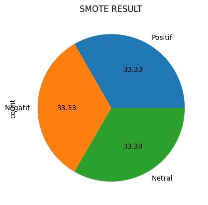
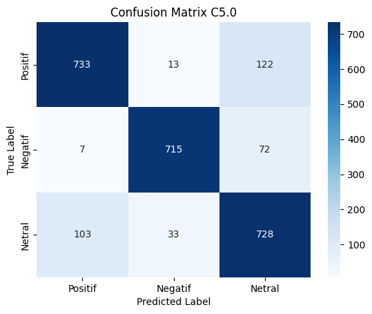
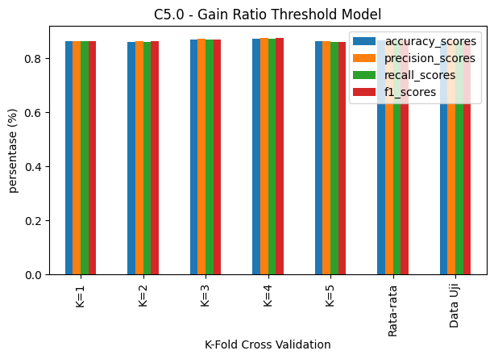
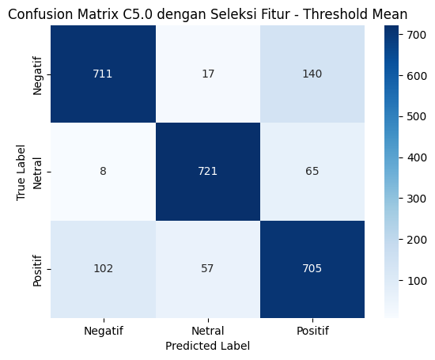
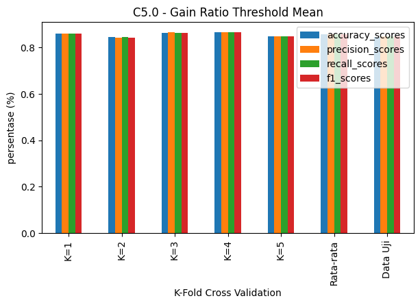
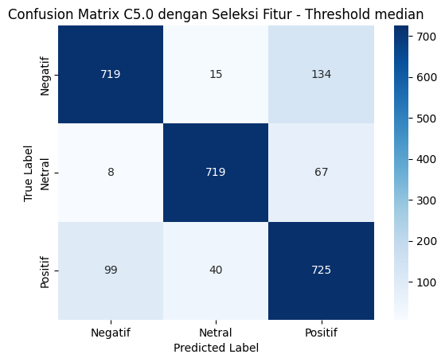
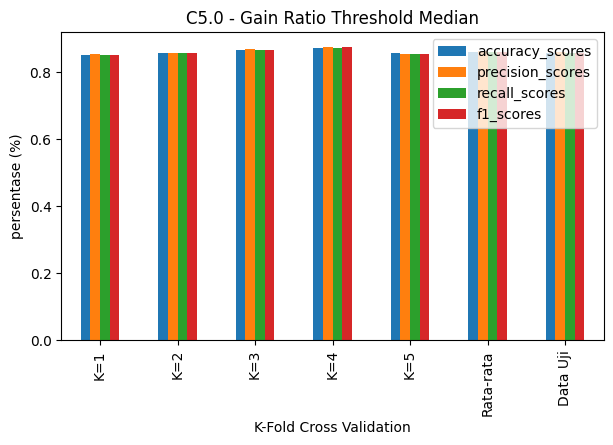

Decision Tree C5.0 With SMOTE#
preparation#
from sklearn import datasets
from sklearn.model_selection import train_test_split
from sklearn.tree import DecisionTreeClassifier, plot_tree
from sklearn import tree
from sklearn.metrics import classification_report
from sklearn import preprocessing
from sklearn.feature_extraction.text import TfidfVectorizer, CountVectorizer
import pandas as pd
import matplotlib.pyplot as plt
import math
import numpy as np
import joblib
import time
import resource
from google.colab import drive
from sklearn import datasets
from sklearn.model_selection import train_test_split
from sklearn.tree import DecisionTreeClassifier, plot_tree
from sklearn import tree
from sklearn.metrics import classification_report
from sklearn import preprocessing
from sklearn.feature_extraction.text import TfidfVectorizer, CountVectorizer
import pandas as pd
import matplotlib.pyplot as plt
import ast
from collections import Counter
import numpy as np
import math
import joblib
from numpy import mean
from sklearn.model_selection import cross_val_score
from sklearn.model_selection import RepeatedStratifiedKFold
from sklearn.preprocessing import LabelEncoder
from sklearn.feature_selection import mutual_info_classif
from sklearn.tree import DecisionTreeClassifier
from imblearn.pipeline import Pipeline
from imblearn.over_sampling import RandomOverSampler
from sklearn.tree import DecisionTreeClassifier, DecisionTreeRegressor
from sklearn.model_selection import RandomizedSearchCV
from sklearn.metrics import confusion_matrix
from sklearn.metrics import accuracy_score, classification_report
from sklearn.model_selection import KFold, train_test_split
from sklearn.metrics import accuracy_score, precision_score, recall_score, f1_score, classification_report, confusion_matrix
import seaborn as sns
import time
import resource
load data#
from google.colab import drive
drive.mount('/content/drive')
data =pd.read_csv('/content/drive/MyDrive/Textmining/metode/DATA/PREPROCESSING/preprofix.csv', delimiter=";")
## Membaca file Excel dari Google Drive dan menyimpannya ke dalam DataFrame
# data = pd.read_csv("https://raw.githubusercontent.com/08-Ahlaqul-Karimah/Pariwisata-New/main/Total%20Data.csv", delimiter=";")
data.head()
---------------------------------------------------------------------------
KeyboardInterrupt Traceback (most recent call last)
/tmp/ipython-input-554614527.py in <cell line: 0>()
1 from google.colab import drive
----> 2 drive.mount('/content/drive')
3 data =pd.read_csv('/content/drive/MyDrive/Textmining/metode/DATA/PREPROCESSING/preprofix.csv', delimiter=";")
4 ## Membaca file Excel dari Google Drive dan menyimpannya ke dalam DataFrame
5 # data = pd.read_csv("https://raw.githubusercontent.com/08-Ahlaqul-Karimah/Pariwisata-New/main/Total%20Data.csv", delimiter=";")
/usr/local/lib/python3.12/dist-packages/google/colab/drive.py in mount(mountpoint, force_remount, timeout_ms, readonly)
95 def mount(mountpoint, force_remount=False, timeout_ms=120000, readonly=False):
96 """Mount your Google Drive at the specified mountpoint path."""
---> 97 return _mount(
98 mountpoint,
99 force_remount=force_remount,
/usr/local/lib/python3.12/dist-packages/google/colab/drive.py in _mount(mountpoint, force_remount, timeout_ms, ephemeral, readonly)
132 )
133 if ephemeral:
--> 134 _message.blocking_request(
135 'request_auth',
136 request={'authType': 'dfs_ephemeral'},
/usr/local/lib/python3.12/dist-packages/google/colab/_message.py in blocking_request(request_type, request, timeout_sec, parent)
174 request_type, request, parent=parent, expect_reply=True
175 )
--> 176 return read_reply_from_input(request_id, timeout_sec)
/usr/local/lib/python3.12/dist-packages/google/colab/_message.py in read_reply_from_input(message_id, timeout_sec)
94 reply = _read_next_input_message()
95 if reply == _NOT_READY or not isinstance(reply, dict):
---> 96 time.sleep(0.025)
97 continue
98 if (
KeyboardInterrupt:
preprocessing#
# #mengubah result
# label=[]
# for index, row in data.iterrows():#Ini adalah loop yang berjalan melalui setiap baris dalam DataFrame 'df'
# if row["Sentimen"] == 'Positif':
# label.append(1)
# elif row["Sentimen"] == 'Negatif':
# label.append(-1)
# else:
# label.append(0)
# data['label']=label
# data=data.drop(columns=['Sentimen'])
# data.head()
import ast
import pandas as pd
from collections import Counter
# Fungsi untuk mengubah string list ke list of words
def convert_text_list(texts):
try:
texts = ast.literal_eval(texts)
return texts
except (SyntaxError, ValueError):
return []
# Menerapkan fungsi convert_text_list pada kolom 'stemming'
data["stemming_list"] = data["stemming"].apply(convert_text_list)
# # Memastikan 'stemming_list' adalah list of words
# print("Data Stemming List:")
# print(data[["stemming_list"]])
# Fungsi untuk menghitung term frequency (TF) dari list of words
def compute_tf(text_list):
term_count = Counter(text_list)
total_terms = len(text_list)
tf_dict = {term: count / total_terms for term, count in term_count.items()}
return tf_dict
data["stemming_list"] = data["stemming"].apply(convert_text_list)
data
| Unnamed: 0 | index | lokasi | Sentimen | komentar | clean | tokenize | normalize | stopword | stemming | stemming_list | |
|---|---|---|---|---|---|---|---|---|---|---|---|
| 0 | 0 | 0 | Air terjun toroan | Positif | Air terjun yang bagus. Tiket masuk murah sekit... | Air terjun yang bagus Tiket masuk murah sekita... | ['air', 'terjun', 'yang', 'bagus', 'tiket', 'm... | ['air', 'terjun', 'yang', 'bagus', 'tiket', 'm... | ['air', 'terjun', 'bagus', 'tiket', 'masuk', '... | ['air', 'terjun', 'bagus', 'tiket', 'masuk', '... | [air, terjun, bagus, tiket, masuk, murah, ribu... |
| 1 | 1 | 1 | Air terjun toroan | Positif | Tempatnya bagus selain air terjun ,diatasnya j... | Tempatnya bagus selain air terjun diatasnya jg... | ['tempatnya', 'bagus', 'selain', 'air', 'terju... | ['tempatnya', 'bagus', 'selain', 'air', 'terju... | ['tempatnya', 'bagus', 'air', 'terjun', 'diata... | ['tempat', 'bagus', 'air', 'terjun', 'atas', '... | [tempat, bagus, air, terjun, atas, rest, area,... |
| 2 | 2 | 2 | Air terjun toroan | Positif | Bagus | Bagus | ['bagus'] | ['bagus'] | ['bagus'] | ['bagus'] | [bagus] |
| 3 | 3 | 3 | Air terjun toroan | Positif | Mantap | Mantap | ['mantap'] | ['mantap'] | ['mantap'] | ['mantap'] | [mantap] |
| 4 | 4 | 4 | Air terjun toroan | Negatif | Pemandangan yg indah, adem pula suasanyanya me... | Pemandangan yg indah adem pula suasanyanya mes... | ['pemandangan', 'yg', 'indah', 'adem', 'pula',... | ['pemandangan', 'yang', 'indah', 'adem', 'pula... | ['pemandangan', 'indah', 'adem', 'suasanyanya'... | ['pandang', 'indah', 'adem', 'suasanyanya', 'p... | [pandang, indah, adem, suasanyanya, pinggir, l... |
| ... | ... | ... | ... | ... | ... | ... | ... | ... | ... | ... | ... |
| 5643 | 5643 | 5730 | toron simalem | Positif | Bagus | Bagus | ['bagus'] | ['bagus'] | ['bagus'] | ['bagus'] | [bagus] |
| 5644 | 5644 | 5731 | toron simalem | Positif | Siiiip | Siiiip | ['siiiip'] | ['siiiip'] | ['siiiip'] | ['siiiip'] | [siiiip] |
| 5645 | 5645 | 5732 | toron simalem | Positif | serru | serru | ['serru'] | ['serru'] | ['serru'] | ['serru'] | [serru] |
| 5646 | 5646 | 5733 | toron simalem | Positif | Bagus | Bagus | ['bagus'] | ['bagus'] | ['bagus'] | ['bagus'] | [bagus] |
| 5647 | 5647 | 5734 | toron simalem | Positif | Bagus | Bagus | ['bagus'] | ['bagus'] | ['bagus'] | ['bagus'] | [bagus] |
5648 rows × 11 columns
TF-IDF#
# mengimpor modul numpy untuk operasi numerik
import numpy as np
# mengimpor modul math untuk fungsi-fungsi matematis
import math
# fungsi untuk menghitung Term Frequency (TF) dari suatu dokumen
def calculate_tf(term_frequency):
# menghitung total kemunculan semua term dalam dokumen
total_terms = sum(term_frequency.values())
# menghitung nilai TF untuk setiap term dalam dokumen
tf = {term: count / total_terms for term, count in term_frequency.items()}
# mengembalikan dictionary yang berisi nilai TF untuk setiap term dalam dokumen.
return tf
# fungsi untuk menghitung Inverse Document Frequency (IDF) dari kumpulan dokumen
def calculate_idf(documents):
# jumlah total dokumen dalam kumpulan
total_documents = len(documents)
# inisialisasi dictionary untuk menyimpan nilai IDF untuk setiap term
idf = {}
# iterasi melalui setiap dokumen dalam kumpulan
for document in documents:
# menggunakan set untuk memastikan hanya satu perhitungan IDF untuk setiap term dalam satu dokumen
unique_terms = set(document)
# iterasi melalui setiap term dalam dokumen
for term in unique_terms:
# jika term belum ada dalam dictionary IDF, hitung dan simpan nilai IDF-nya
if term not in idf:
# menghitung jumlah dokumen yang mengandung term
document_count = sum(1 for doc in documents if term in doc)
# menggunakan rumus IDF dengan penambahan 1 untuk menghindari pembagian oleh 0
idf[term] = math.log(total_documents / (1 + document_count))
# mengembalikan dictionary yang berisi nilai IDF untuk setiap term dalam dokumen.
return idf
# mengimpor modul Counter dari pustaka collections
# counter digunakan untuk menghitung frekuensi kemunculan term dalam suatu iterable (objek yang dapat diulang, for,loop), seperti list.
# counter akan digunakan untuk menghitung frekuensi kemunculan setiap term dalam dokumen, sehingga dapat dihitung nilai Term Frequency (TF).
from collections import Counter
preprocessing_data = data['stemming_list']
# membuat dictionary document_tf yang menyimpan Term Frequency (TF) untuk setiap dokumen dalam preprocessing_data
# dengan menggunakan fungsi calculate_tf pada setiap Counter(tokens) untuk setiap dokumen
# fungsi enumerate digunakan untuk mengambil term dari sebuah iterable bersama dengan indeks atau nomor urutnya.
document_tf = {i: calculate_tf(Counter(tokens)) for i, tokens in enumerate(preprocessing_data)}
document_tf
{0: {'air': 0.14285714285714285,
'terjun': 0.14285714285714285,
'bagus': 0.07142857142857142,
'tiket': 0.07142857142857142,
'masuk': 0.07142857142857142,
'murah': 0.07142857142857142,
'ribu': 0.07142857142857142,
'orang': 0.07142857142857142,
'jernih': 0.07142857142857142,
'langsung': 0.07142857142857142,
'berangan': 0.07142857142857142,
'laut': 0.07142857142857142},
1: {'tempat': 0.09090909090909091,
'bagus': 0.09090909090909091,
'air': 0.09090909090909091,
'terjun': 0.09090909090909091,
'atas': 0.09090909090909091,
'rest': 0.09090909090909091,
'area': 0.09090909090909091,
'parkir': 0.09090909090909091,
'ribu': 0.18181818181818182,
'masuk': 0.09090909090909091},
2: {'bagus': 1.0},
3: {'mantap': 1.0},
4: {'pandang': 0.09090909090909091,
'indah': 0.09090909090909091,
'adem': 0.09090909090909091,
'suasanyanya': 0.09090909090909091,
'pinggir': 0.09090909090909091,
'laut': 0.09090909090909091,
'cuman': 0.09090909090909091,
'air': 0.09090909090909091,
'terjunya': 0.09090909090909091,
'musim': 0.09090909090909091,
'hujan': 0.09090909090909091},
5: {'wisata': 0.09090909090909091,
'keren': 0.09090909090909091,
'recomended': 0.09090909090909091,
'banget': 0.09090909090909091,
'kunjung': 0.09090909090909091,
'kuliner': 0.09090909090909091,
'es': 0.09090909090909091,
'degan': 0.09090909090909091,
'move': 0.09090909090909091,
'on': 0.09090909090909091,
'mantan': 0.09090909090909091},
6: {'restoran': 0.07692307692307693,
'harga': 0.07692307692307693,
'murah': 0.07692307692307693,
'pas': 0.07692307692307693,
'poin': 0.07692307692307693,
'hati': 0.07692307692307693,
'lokasi': 0.07692307692307693,
'air': 0.07692307692307693,
'terjun': 0.07692307692307693,
'jalan': 0.07692307692307693,
'licin': 0.07692307692307693,
'dusim': 0.07692307692307693,
'hujan': 0.07692307692307693},
7: {'habis': 0.25, 'hujan': 0.25, 'air': 0.25, 'keruh': 0.25},
8: {'pantau': 1.0},
9: {'pandang': 0.25, 'eksotis': 0.25, 'pinggir': 0.25, 'laut': 0.25},
10: {'oke': 1.0},
11: {'indah': 0.09523809523809523,
'tempat': 0.047619047619047616,
'bersih': 0.047619047619047616,
'kelola': 0.047619047619047616,
'kesini': 0.047619047619047616,
'musim': 0.047619047619047616,
'kemarau': 0.047619047619047616,
'alir': 0.047619047619047616,
'air': 0.047619047619047616,
'terjun': 0.047619047619047616,
'deras': 0.047619047619047616,
'warna': 0.047619047619047616,
'tosca': 0.047619047619047616,
'cafe': 0.047619047619047616,
'att': 0.047619047619047616,
'sedia': 0.047619047619047616,
'menu': 0.047619047619047616,
'masakan': 0.047619047619047616,
'view': 0.047619047619047616,
'pantai': 0.047619047619047616},
12: {'bagus': 0.08,
'banget': 0.04,
'lokasi': 0.04,
'sampang': 0.04,
'kota': 0.04,
'jam': 0.04,
'tempuh': 0.04,
'mobil': 0.08,
'tiket': 0.04,
'masuk': 0.04,
'ribu': 0.08,
'orang': 0.04,
'parkir': 0.04,
'makan': 0.08,
'view': 0.04,
'enak': 0.04,
'rekomendasi': 0.04,
'ikan': 0.08,
'bakar': 0.04,
'bumbu': 0.04},
13: {'view': 0.25, 'air': 0.25, 'terjun': 0.25, 'bagus': 0.25},
14: {'view': 0.25, 'bagus': 0.25, 'pas': 0.25, 'sowrey': 0.25},
15: {'spot': 0.125,
'lokasi': 0.125,
'wisata': 0.125,
'wajib': 0.125,
'kunjung': 0.25,
'pulau': 0.125,
'madura': 0.125},
16: {'desa': 0.25, 'karang': 0.25, 'anyar': 0.25, 'bangkit': 0.25},
17: {'pandang': 0.04,
'bagus': 0.04,
'madu': 0.04,
'air': 0.04,
'terjun': 0.04,
'laut': 0.04,
'harga': 0.08,
'tiket': 0.04,
'masuk': 0.04,
'murah': 0.04,
'orang': 0.04,
'awat': 0.04,
'kembang': 0.04,
'sampah': 0.04,
'parkir': 0.04,
'mahal': 0.04,
'ukur': 0.04,
'wisata': 0.04,
'obyek': 0.04,
'motor': 0.04,
'r': 0.04,
'sila': 0.04,
'lupa': 0.04,
'like': 0.04},
18: {'november': 0.06666666666666667,
'unik': 0.06666666666666667,
'air': 0.13333333333333333,
'terjun': 0.06666666666666667,
'pinggir': 0.06666666666666667,
'laut': 0.06666666666666667,
'saran': 0.06666666666666667,
'lihat': 0.06666666666666667,
'bagus': 0.06666666666666667,
'jernih': 0.06666666666666667,
'kunjung': 0.06666666666666667,
'kesini': 0.06666666666666667,
'pas': 0.06666666666666667,
'musim': 0.06666666666666667},
19: {'wisata': 0.07692307692307693,
'air': 0.15384615384615385,
'terjun': 0.15384615384615385,
'toro': 0.07692307692307693,
'sungai': 0.07692307692307693,
'langsung': 0.07692307692307693,
'laut': 0.07692307692307693,
'tempat': 0.07692307692307693,
'awat': 0.07692307692307693,
'bagus': 0.07692307692307693,
'lihat': 0.07692307692307693},
20: {'air': 0.1,
'terjun': 0.1,
'indah': 0.1,
'langsung': 0.1,
'jatuh': 0.1,
'tepi': 0.1,
'pantai': 0.1,
'utara': 0.1,
'pulau': 0.1,
'madura': 0.1},
21: {'viewnya': 0.125,
'bagus': 0.125,
'tempat': 0.125,
'nyaman': 0.125,
'family': 0.125,
'time': 0.125,
'makan': 0.125,
'enaak': 0.125},
22: {'tempat': 0.09090909090909091,
'bagus': 0.09090909090909091,
'gaes': 0.09090909090909091,
'musim': 0.18181818181818182,
'hujan': 0.18181818181818182,
'air': 0.09090909090909091,
'coklat': 0.09090909090909091,
'bening': 0.09090909090909091,
'gaesss': 0.09090909090909091},
23: {'bagus': 0.125,
'baik': 0.125,
'sampah': 0.125,
'mari': 0.125,
'kurang': 0.125,
'guna': 0.125,
'plastik': 0.125,
'thanks': 0.125},
24: {'santai': 0.14285714285714285,
'kelurga': 0.14285714285714285,
'kerabat': 0.14285714285714285,
'nuasa': 0.14285714285714285,
'alam': 0.14285714285714285,
'indah': 0.14285714285714285,
'pandang': 0.14285714285714285},
25: {'indah': 0.3333333333333333,
'bersih': 0.3333333333333333,
'jaga': 0.3333333333333333},
26: {'pasti': 0.16666666666666666,
'kesini': 0.16666666666666666,
'pas': 0.16666666666666666,
'air': 0.16666666666666666,
'pasang': 0.16666666666666666,
'keren': 0.16666666666666666},
27: {'tempat': 0.2,
'bagus': 0.2,
'cocok': 0.2,
'wisata': 0.2,
'keluarga': 0.2},
28: {'indah': 0.14285714285714285,
'cocok': 0.07142857142857142,
'banget': 0.07142857142857142,
'wisatawan': 0.07142857142857142,
'manja': 0.07142857142857142,
'mata': 0.07142857142857142,
'pandang': 0.07142857142857142,
'air': 0.07142857142857142,
'terjun': 0.07142857142857142,
'beda': 0.07142857142857142,
'gunung': 0.07142857142857142,
'tepi': 0.07142857142857142,
'pantai': 0.07142857142857142},
29: {'bagus': 0.0625,
'viewnya': 0.0625,
'tulis': 0.125,
'toro': 0.0625,
'air': 0.125,
'terjun': 0.125,
'untuj': 0.0625,
'fotografer': 0.0625,
'capture': 0.0625,
'ganggu': 0.0625,
'icon': 0.0625,
'toilet': 0.0625,
'sedia': 0.0625},
30: {'alami': 0.09090909090909091,
'sbagus': 0.09090909090909091,
'eksotik': 0.09090909090909091,
'nyaman': 0.09090909090909091,
'santa': 0.09090909090909091,
'tiket': 0.09090909090909091,
'masuk': 0.09090909090909091,
'ribu': 0.09090909090909091,
'lokasi': 0.09090909090909091,
'air': 0.09090909090909091,
'terjun': 0.09090909090909091},
31: {'salah': 0.08333333333333333,
'kesana': 0.08333333333333333,
'tempat': 0.08333333333333333,
'bagus': 0.08333333333333333,
'ekspektasi': 0.08333333333333333,
'sana': 0.08333333333333333,
'saran': 0.08333333333333333,
'main': 0.08333333333333333,
'air': 0.08333333333333333,
'dar': 0.08333333333333333,
'objek': 0.08333333333333333,
'foto': 0.08333333333333333},
32: {'air': 0.07142857142857142,
'terjun': 0.07142857142857142,
'toro': 0.07142857142857142,
'adalan': 0.07142857142857142,
'wisata': 0.07142857142857142,
'alam': 0.07142857142857142,
'madura': 0.07142857142857142,
'bagus': 0.14285714285714285,
'sentuh': 0.07142857142857142,
'tangan': 0.07142857142857142,
'pofesional': 0.07142857142857142,
'investor': 0.07142857142857142,
'kembang': 0.07142857142857142},
33: {'bagus': 0.14285714285714285,
'selfi': 0.14285714285714285,
'alami': 0.14285714285714285,
'latar': 0.14285714285714285,
'airterjun': 0.14285714285714285,
'keren': 0.14285714285714285,
'renang': 0.14285714285714285},
34: {'view': 0.06666666666666667,
'indah': 0.06666666666666667,
'tawan': 0.06666666666666667,
'sayang': 0.06666666666666667,
'awat': 0.06666666666666667,
'harap': 0.06666666666666667,
'depan': 0.06666666666666667,
'air': 0.06666666666666667,
'terjun': 0.06666666666666667,
'toro': 0.06666666666666667,
'rawat': 0.06666666666666667,
'pemkab': 0.06666666666666667,
'swasta': 0.06666666666666667,
'asli': 0.06666666666666667,
'daerah': 0.06666666666666667},
35: {'bagus': 0.14285714285714285,
'viewnya': 0.14285714285714285,
'sayang': 0.14285714285714285,
'bersih': 0.14285714285714285,
'air': 0.14285714285714285,
'pantai': 0.14285714285714285,
'jaga': 0.14285714285714285},
36: {'bagus': 0.14285714285714285,
'tarik': 0.14285714285714285,
'sayang': 0.14285714285714285,
'sampah': 0.14285714285714285,
'pantai': 0.14285714285714285,
'air': 0.14285714285714285,
'terjun': 0.14285714285714285},
37: {'panorama': 0.125,
'bagus': 0.125,
'kreativitas': 0.125,
'tambah': 0.25,
'area': 0.125,
'pantai': 0.125,
'fasilitas': 0.125},
38: {'bagus': 0.25,
'banget': 0.125,
'spot': 0.125,
'foto': 0.125,
'instagram': 0.125,
'obyek': 0.125,
'unik': 0.125},
39: {'bagus': 0.25, 'langsung': 0.25, 'jorok': 0.25, 'laut': 0.25},
40: {'bagus': 0.3333333333333333,
'foto': 0.3333333333333333,
'prewedding': 0.3333333333333333},
41: {'indah': 0.25, 'jelang': 0.25, 'matahari': 0.25, 'benam': 0.25},
42: {'cantik': 0.1,
'eksotis': 0.1,
'air': 0.2,
'terjun': 0.1,
'tawar': 0.1,
'langsung': 0.1,
'depan': 0.1,
'ombak': 0.1,
'pantai': 0.1},
43: {'indah': 0.16666666666666666,
'air': 0.16666666666666666,
'terjun': 0.16666666666666666,
'mengalirr': 0.16666666666666666,
'sok': 0.16666666666666666,
'beautyfull': 0.16666666666666666},
44: {'bagus': 1.0},
45: {'bagus': 0.2, 'musim': 0.2, 'kemarau': 0.2, 'air': 0.2, 'bening': 0.2},
46: {'pandang': 0.3333333333333333,
'laut': 0.3333333333333333,
'bagus': 0.3333333333333333},
47: {'objek': 0.3333333333333333,
'wisata': 0.3333333333333333,
'keren': 0.3333333333333333},
48: {'pandang': 0.5, 'indah': 0.5},
49: {'bagus': 0.5, 'pandang': 0.5},
50: {'indah': 1.0},
51: {'murah': 0.25, 'riah': 0.25, 'kadang': 0.25, 'gratis': 0.25},
52: {'bagus': 0.5, 'pandang': 0.5},
53: {'bagus': 0.5, 'sayang': 0.5},
54: {'keren': 0.5, 'pokok': 0.5},
55: {'bagus': 1.0},
56: {'keren': 1.0},
57: {'indah': 0.5, 'banget': 0.5},
58: {'bagus': 1.0},
59: {'indah': 1.0},
60: {'pandang': 0.5, 'indah': 0.5},
61: {'bagus': 1.0},
62: {'bagus': 1.0},
63: {'indah': 1.0},
64: {'strategis': 0.5, 'cantik': 0.5},
65: {'pandang': 0.2, 'bagus': 0.2, 'alami': 0.2, 'kelola': 0.2, 'baik': 0.2},
66: {'pandang': 0.25, 'bagus': 0.25, 'matahari': 0.25, 'utara': 0.25},
67: {'lumayan': 0.1111111111111111,
'salah': 0.1111111111111111,
'destinasi': 0.1111111111111111,
'favorit': 0.1111111111111111,
'hunting': 0.1111111111111111,
'foto': 0.1111111111111111,
'landscape': 0.1111111111111111,
'pulau': 0.1111111111111111,
'madura': 0.1111111111111111},
68: {'tiket': 0.08333333333333333,
'masuk': 0.08333333333333333,
'ribu': 0.08333333333333333,
'orang': 0.08333333333333333,
'anak': 0.08333333333333333,
'free': 0.08333333333333333,
'batu': 0.08333333333333333,
'karang': 0.08333333333333333,
'air': 0.16666666666666666,
'terjun': 0.08333333333333333,
'keruh': 0.08333333333333333},
69: {'sengkok': 0.14285714285714285,
'oreng': 0.14285714285714285,
'ketapang': 0.14285714285714285,
'cong': 0.14285714285714285,
'dus': 0.14285714285714285,
'nodusih': 0.14285714285714285,
'rekomendasi': 0.14285714285714285},
70: {'pandang': 0.0625,
'air': 0.1875,
'terjun': 0.1875,
'ragu': 0.0625,
'tinggi': 0.0625,
'meter': 0.0625,
'jalan': 0.0625,
'sebentar': 0.0625,
'parkir': 0.0625,
'langsung': 0.0625,
'butuh': 0.0625,
'treking': 0.0625},
71: {'tempat': 0.08333333333333333,
'nyaman': 0.08333333333333333,
'spot': 0.08333333333333333,
'foto': 0.08333333333333333,
'parkir': 0.08333333333333333,
'mobil': 0.08333333333333333,
'masuk': 0.08333333333333333,
'turun': 0.08333333333333333,
'tangga': 0.08333333333333333,
'kayak': 0.08333333333333333,
'destinasi': 0.08333333333333333,
'wisata': 0.08333333333333333},
72: {'kelola': 0.1111111111111111,
'rujuan': 0.1111111111111111,
'wisata': 0.1111111111111111,
'hasil': 0.1111111111111111,
'gambar': 0.1111111111111111,
'ambil': 0.1111111111111111,
'pribadi': 0.1111111111111111,
'bwrkunjung': 0.1111111111111111,
'kesini': 0.1111111111111111},
73: {'view': 0.1111111111111111,
'air': 0.1111111111111111,
'terjun': 0.1111111111111111,
'oke': 0.2222222222222222,
'akses': 0.1111111111111111,
'jalan': 0.1111111111111111,
'utama': 0.1111111111111111,
'fasilitas': 0.1111111111111111},
74: {'cocok': 0.2,
'refreshing': 0.2,
'piknik': 0.2,
'tour': 0.2,
'keluarga': 0.2},
75: {'pas': 0.1111111111111111,
'kesini': 0.1111111111111111,
'alir': 0.1111111111111111,
'air': 0.1111111111111111,
'terjun': 0.1111111111111111,
'deres': 0.1111111111111111,
'banget': 0.1111111111111111,
'musim': 0.1111111111111111,
'hujan': 0.1111111111111111},
76: {'parkir': 0.2, 'luas': 0.2, 'air': 0.2, 'terjun': 0.2, 'alami': 0.2},
77: {'ambil': 0.16666666666666666,
'foto': 0.16666666666666666,
'wisata': 0.16666666666666666,
'air': 0.16666666666666666,
'terjun': 0.16666666666666666,
'toro': 0.16666666666666666},
78: {'tukang': 0.09523809523809523,
'parkir': 0.09523809523809523,
'malak': 0.047619047619047616,
'dalih': 0.047619047619047616,
'titip': 0.14285714285714285,
'helm': 0.09523809523809523,
'hilang': 0.047619047619047616,
'resiko': 0.047619047619047616,
'diringkes': 0.047619047619047616,
'taruh': 0.047619047619047616,
'pos': 0.047619047619047616,
'bayar': 0.047619047619047616,
'mala': 0.047619047619047616,
'modus': 0.047619047619047616,
'paksa': 0.047619047619047616,
'kecewa': 0.047619047619047616},
79: {'ngopi': 0.25, 'nyantai': 0.25, 'cocok': 0.25, 'kesini': 0.25},
80: {'kali': 0.1111111111111111,
'kesini': 0.1111111111111111,
'indak': 0.1111111111111111,
'bosan': 0.1111111111111111,
'must': 0.1111111111111111,
'visit': 0.1111111111111111,
'place': 0.1111111111111111,
'beautiful': 0.1111111111111111,
'viewing': 0.1111111111111111},
81: {'air': 0.14285714285714285,
'terjun': 0.14285714285714285,
'langsung': 0.14285714285714285,
'jatuh': 0.14285714285714285,
'laut': 0.14285714285714285,
'renang': 0.14285714285714285,
'keliling': 0.14285714285714285},
82: {'baguus': 0.2,
'kelola': 0.2,
'masyarakat': 0.2,
'moga': 0.2,
'ramai': 0.2},
83: {'wisata': 0.1111111111111111,
'air': 0.1111111111111111,
'terjun': 0.1111111111111111,
'tepi': 0.1111111111111111,
'pantai': 0.1111111111111111,
'sejuk': 0.2222222222222222,
'siang': 0.1111111111111111,
'suasana': 0.1111111111111111},
84: {'mantap': 1.0},
85: {'lumayan': 1.0},
86: {'cocok': 0.5, 'ngadem': 0.5},
87: {'suasana': 0.08333333333333333,
'air': 0.08333333333333333,
'terjun': 0.08333333333333333,
'pulau': 0.08333333333333333,
'garam': 0.08333333333333333,
'madura': 0.08333333333333333,
'camat': 0.08333333333333333,
'ketapang': 0.08333333333333333,
'kabupaten': 0.08333333333333333,
'sampang': 0.08333333333333333,
'jawa': 0.08333333333333333,
'timur': 0.08333333333333333},
88: {'spot': 0.25, 'foto': 0.25, 'banyak': 0.25, 'bosan': 0.25},
89: {'upgrade': 0.5, 'wow': 0.5},
90: {'tata': 0.25, 'ulang': 0.25, 'tambah': 0.25, 'ajaib': 0.25},
91: {'mamtaap': 0.25, 'jooss': 0.25, 'rugi': 0.25, 'trip': 0.25},
92: {'bintang': 0.2, 'lihat': 0.2, 'my': 0.2, 'cennel': 0.2, 'youtube': 0.2},
93: {'lokasi': 0.3333333333333333,
'aman': 0.3333333333333333,
'sahabat': 0.3333333333333333},
94: {'awat': 1.0},
95: {'moga': 0.5, 'kembang': 0.5},
96: {'wisata': 0.5, 'tetangga': 0.5},
97: {'akses': 0.5, 'mudah': 0.5},
98: {'kumuh': 1.0},
99: {'senang': 1.0},
100: {'lumayan': 1.0},
101: {'pandang': 0.5, 'ciamik': 0.5},
102: {'lumayan': 0.5, 'oke': 0.5},
103: {'kos': 1.0},
104: {'bayar': 1.0},
105: {'bagus': 1.0},
106: {'segar': 1.0},
107: {'butek': 1.0},
108: {'sip': 1.0},
109: {'kunjung': 1.0},
110: {'air': 0.25, 'terjun': 0.25, 'pinggir': 0.25, 'pantai': 0.25},
111: {'sungai': 0.3333333333333333,
'jatuh': 0.3333333333333333,
'laut': 0.3333333333333333},
112: {'kor': 0.25, 'periksa': 0.25, 'settong': 0.25, 'deh': 0.25},
113: {'tingkat': 1.0},
114: {'alhamdulillah': 0.07142857142857142,
'puji': 0.07142857142857142,
'allah': 0.07142857142857142,
'tuhan': 0.07142857142857142,
'tunggal': 0.07142857142857142,
'esa': 0.07142857142857142,
'dipingir': 0.07142857142857142,
'sampah': 0.14285714285714285,
'urus': 0.07142857142857142,
'mungut': 0.07142857142857142,
'biaya': 0.07142857142857142,
'masuk': 0.07142857142857142,
'sih': 0.07142857142857142},
115: {'muas': 0.2, 'layan': 0.2, 'parkir': 0.2, 'kena': 0.2, 'mahal': 0.2},
116: {'opening': 0.3333333333333333,
'sampah': 0.3333333333333333,
'sera': 0.3333333333333333},
117: {'kotor': 0.5, 'sempit': 0.5},
118: {'tempat': 0.16666666666666666,
'bagus': 0.16666666666666666,
'banget': 0.16666666666666666,
'senang': 0.08333333333333333,
'libur': 0.08333333333333333,
'kayak': 0.08333333333333333,
'happy': 0.08333333333333333,
'air': 0.08333333333333333,
'terjun': 0.08333333333333333},
119: {'bagus': 0.16666666666666666,
'bersih': 0.3333333333333333,
'pantai': 0.16666666666666666,
'rawat': 0.16666666666666666,
'indah': 0.16666666666666666},
120: {'tempat': 0.14285714285714285,
'bagus': 0.14285714285714285,
'banget': 0.14285714285714285,
'alternatif': 0.14285714285714285,
'libur': 0.14285714285714285,
'sekolah': 0.14285714285714285,
'keluarga': 0.14285714285714285},
121: {'pandang': 0.125,
'indah': 0.125,
'warung': 0.125,
'makan': 0.125,
'andal': 0.125,
'sea': 0.125,
'food': 0.125,
'maknyus': 0.125},
122: {'lumayan': 0.2,
'healing': 0.2,
'tipis': 0.2,
'budget': 0.2,
'murah': 0.2},
123: {'air': 0.14285714285714285,
'terjun': 0.14285714285714285,
'bagus': 0.14285714285714285,
'salur': 0.14285714285714285,
'langsung': 0.14285714285714285,
'masuk': 0.14285714285714285,
'laut': 0.14285714285714285},
124: {'pandang': 0.3333333333333333,
'bagus': 0.3333333333333333,
'nyaman': 0.3333333333333333},
125: {'bagus': 0.3333333333333333,
'lumayan': 0.3333333333333333,
'bersih': 0.3333333333333333},
126: {'cipta': 0.3333333333333333,
'tuhan': 0.3333333333333333,
'bagus': 0.3333333333333333},
127: {'keren': 0.3333333333333333,
'bafus': 0.3333333333333333,
'banget': 0.3333333333333333},
128: {'lokasi': 0.1111111111111111,
'indah': 0.2222222222222222,
'pergi': 0.1111111111111111,
'hulu': 0.1111111111111111,
'polusi': 0.1111111111111111,
'hilang': 0.1111111111111111,
'air': 0.1111111111111111,
'terjun': 0.1111111111111111},
129: {'damai': 0.14285714285714285,
'indah': 0.14285714285714285,
'baik': 0.14285714285714285,
'pergi': 0.14285714285714285,
'matahari': 0.14285714285714285,
'benam': 0.14285714285714285,
'sayang': 0.14285714285714285},
130: {'masya': 0.14285714285714285,
'allah': 0.14285714285714285,
'cipta': 0.14285714285714285,
'tuhan': 0.14285714285714285,
'indah': 0.14285714285714285,
'sayang': 0.14285714285714285,
'nikmat': 0.14285714285714285},
131: {'sejuk': 0.08333333333333333,
'rasa': 0.08333333333333333,
'bawah': 0.08333333333333333,
'air': 0.25,
'terjun': 0.08333333333333333,
'dengam': 0.08333333333333333,
'sungai': 0.08333333333333333,
'campur': 0.08333333333333333,
'laut': 0.08333333333333333,
'bening': 0.08333333333333333},
132: {'golong': 0.05263157894736842,
'unik': 0.05263157894736842,
'tarik': 0.05263157894736842,
'kunjung': 0.05263157894736842,
'air': 0.15789473684210525,
'terjun': 0.15789473684210525,
'langsung': 0.05263157894736842,
'tumpah': 0.05263157894736842,
'satu': 0.05263157894736842,
'laut': 0.05263157894736842,
'alir': 0.05263157894736842,
'asal': 0.05263157894736842,
'hulu': 0.05263157894736842,
'sungai': 0.05263157894736842,
'atas': 0.05263157894736842},
133: {'area': 0.16666666666666666,
'parkir': 0.16666666666666666,
'air': 0.16666666666666666,
'bersih': 0.16666666666666666,
'fasilitas': 0.16666666666666666,
'pada': 0.16666666666666666},
134: {'hibur': 0.25, 'restorant': 0.25, 'sedia': 0.25, 'karaoke': 0.25},
135: {'cerita': 0.25, 'singkat': 0.25, 'kenang': 0.25, 'ikat': 0.25},
136: {'sumpah': 0.3333333333333333,
'alam': 0.3333333333333333,
'baik': 0.3333333333333333},
137: {'bagus': 1.0},
138: {'keren': 1.0},
139: {'air': 0.3333333333333333,
'terjun': 0.3333333333333333,
'takjub': 0.3333333333333333},
140: {'keren': 0.08695652173913043,
'banget': 0.043478260869565216,
'kesini': 0.043478260869565216,
'sore': 0.043478260869565216,
'hasil': 0.043478260869565216,
'foto': 0.043478260869565216,
'masuk': 0.043478260869565216,
'bayar': 0.043478260869565216,
'parkir': 0.13043478260869565,
'air': 0.043478260869565216,
'terjun': 0.043478260869565216,
'turun': 0.043478260869565216,
'jual': 0.043478260869565216,
'makan': 0.043478260869565216,
'minum': 0.043478260869565216,
'leseh': 0.043478260869565216,
'langsung': 0.043478260869565216,
'view': 0.043478260869565216,
'arah': 0.043478260869565216,
'pantai': 0.043478260869565216},
141: {'sngat': 0.0625,
'strategis': 0.0625,
'belah': 0.0625,
'jalan': 0.0625,
'raya': 0.0625,
'pandang': 0.0625,
'bagus': 0.0625,
'pagi': 0.0625,
'sore': 0.0625,
'tambah': 0.0625,
'desain': 0.0625,
'cafe': 0.0625,
'cantik': 0.0625,
'dinding': 0.0625,
'tangga': 0.0625,
'cerah': 0.0625},
142: {'rugi': 0.08333333333333333,
'jalan': 0.16666666666666666,
'enak': 0.16666666666666666,
'akses': 0.08333333333333333,
'masuk': 0.08333333333333333,
'air': 0.16666666666666666,
'terjun': 0.16666666666666666,
'bagus': 0.08333333333333333},
143: {'wisata': 0.1,
'asik': 0.1,
'sederhana': 0.1,
'bagus': 0.1,
'selfi': 0.1,
'foto': 0.1,
'harga': 0.1,
'tiket': 0.1,
'masuk': 0.1,
'cuman': 0.1},
144: {'lokasi': 0.06666666666666667,
'cocok': 0.06666666666666667,
'banget': 0.06666666666666667,
'libur': 0.06666666666666667,
'keluarga': 0.06666666666666667,
'spot': 0.06666666666666667,
'bagus': 0.06666666666666667,
'abadi': 0.06666666666666667,
'momen': 0.06666666666666667,
'senja': 0.06666666666666667,
'sila': 0.06666666666666667,
'follow': 0.06666666666666667,
'ig': 0.06666666666666667,
'bonus': 0.06666666666666667,
'follback': 0.06666666666666667},
145: {'pantai': 0.16666666666666666,
'bagus': 0.16666666666666666,
'makan': 0.16666666666666666,
'air': 0.16666666666666666,
'terjun': 0.16666666666666666,
'laut': 0.16666666666666666},
146: {'lumayan': 0.25, 'bagus': 0.25, 'lokasi': 0.25, 'wisata': 0.25},
147: {'air': 0.16666666666666666,
'hijau': 0.16666666666666666,
'biru': 0.16666666666666666,
'bagus': 0.3333333333333333,
'kotor': 0.16666666666666666},
148: {'bagus': 0.14285714285714285,
'potensi': 0.14285714285714285,
'alam': 0.14285714285714285,
'pengololaannya': 0.14285714285714285,
'maksimal': 0.14285714285714285,
'bas': 0.14285714285714285,
'mandiri': 0.14285714285714285},
149: {'bagus': 0.3333333333333333,
'bersih': 0.3333333333333333,
'awat': 0.3333333333333333},
150: {'bagus': 0.06666666666666667,
'cuman': 0.06666666666666667,
'awat': 0.06666666666666667,
'air': 0.2,
'terjun': 0.13333333333333333,
'langsung': 0.06666666666666667,
'laut': 0.06666666666666667,
'kali': 0.06666666666666667,
'sensasi': 0.06666666666666667,
'main': 0.06666666666666667,
'percik': 0.06666666666666667,
'bintang': 0.06666666666666667},
151: {'air': 0.10344827586206896,
'terjun': 0.10344827586206896,
'toro': 0.10344827586206896,
'langsung': 0.034482758620689655,
'temu': 0.034482758620689655,
'pantai': 0.13793103448275862,
'anda': 0.034482758620689655,
'tambang': 0.034482758620689655,
'pasir': 0.06896551724137931,
'airterjun': 0.034482758620689655,
'pariwisata': 0.034482758620689655,
'bagus': 0.06896551724137931,
'pulau': 0.034482758620689655,
'madura': 0.034482758620689655,
'sayang': 0.034482758620689655,
'habis': 0.034482758620689655,
'sd': 0.034482758620689655,
'aku': 0.034482758620689655},
152: {'wisata': 0.07142857142857142,
'alam': 0.07142857142857142,
'bagus': 0.14285714285714285,
'didlm': 0.07142857142857142,
'gua': 0.07142857142857142,
'air': 0.07142857142857142,
'terjun': 0.07142857142857142,
'langsung': 0.07142857142857142,
'turun': 0.07142857142857142,
'dasar': 0.07142857142857142,
'laut': 0.07142857142857142,
'sungguh': 0.07142857142857142,
'pandang': 0.07142857142857142},
153: {'bagus': 0.5, 'bersih': 0.5},
154: {'wisata': 0.16666666666666666,
'bagus': 0.16666666666666666,
'alami': 0.16666666666666666,
'sentuh': 0.16666666666666666,
'tarik': 0.16666666666666666,
'wisatawan': 0.16666666666666666},
155: {'tempat': 0.09090909090909091,
'lumayan': 0.09090909090909091,
'bagus': 0.09090909090909091,
'cocok': 0.09090909090909091,
'banget': 0.09090909090909091,
'foto': 0.09090909090909091,
'long': 0.09090909090909091,
'exposure': 0.09090909090909091,
'rekomendasi': 0.09090909090909091,
'baik': 0.09090909090909091,
'sore': 0.09090909090909091},
156: {'indah': 0.1,
'nyaman': 0.1,
'saudara': 0.1,
'hayo': 0.1,
'kunjung': 0.1,
'biaya': 0.1,
'masuk': 0.1,
'parkir': 0.1,
'murah': 0.1,
'riah': 0.1},
157: {'air': 0.1,
'terjun': 0.1,
'hadap': 0.1,
'langsung': 0.1,
'laut': 0.1,
'view': 0.1,
'sunset': 0.1,
'indah': 0.1,
'cek': 0.1,
'ig': 0.1},
158: {'lumayan': 0.125,
'bagus': 0.125,
'air': 0.25,
'terjun': 0.125,
'musim': 0.125,
'hujan': 0.125,
'kemarau': 0.125},
159: {'air': 0.1111111111111111,
'terjun': 0.1111111111111111,
'bagus': 0.1111111111111111,
'keren': 0.1111111111111111,
'banget': 0.2222222222222222,
'cocok': 0.1111111111111111,
'hilang': 0.1111111111111111,
'penat': 0.1111111111111111},
160: {'suasana': 0.14285714285714285,
'alam': 0.14285714285714285,
'indah': 0.14285714285714285,
'padu': 0.14285714285714285,
'air': 0.14285714285714285,
'terjun': 0.14285714285714285,
'laut': 0.14285714285714285},
161: {'rekreasi': 0.1111111111111111,
'madura': 0.1111111111111111,
'pinggir': 0.1111111111111111,
'laut': 0.1111111111111111,
'air': 0.1111111111111111,
'terjunya': 0.1111111111111111,
'natural': 0.1111111111111111,
'bagus': 0.1111111111111111,
'keluarga': 0.1111111111111111},
162: {'libur': 0.125,
'senang': 0.125,
'pasang': 0.125,
'keluarga': 0.125,
'meikmati': 0.125,
'air': 0.125,
'terjun': 0.125,
'indah': 0.125},
163: {'bagus': 0.16666666666666666,
'tempat': 0.16666666666666666,
'pintar': 0.16666666666666666,
'ambil': 0.16666666666666666,
'spot': 0.16666666666666666,
'foto': 0.16666666666666666},
164: {'pandang': 0.25, 'bagus': 0.25, 'makan': 0.25, 'enak': 0.25},
165: {'air': 0.1111111111111111,
'terjun': 0.1111111111111111,
'toro': 0.1111111111111111,
'ketapang': 0.1111111111111111,
'sampang': 0.1111111111111111,
'madura': 0.1111111111111111,
'bagus': 0.1111111111111111,
'banget': 0.1111111111111111,
'pandang': 0.1111111111111111},
166: {'lumayan': 0.5, 'bagus': 0.5},
167: {'bagus': 0.3333333333333333,
'tempat': 0.3333333333333333,
'sejuk': 0.3333333333333333},
168: {'bagus': 0.25, 'kurang': 0.25, 'sarana': 0.25, 'dukung': 0.25},
169: {'pandang': 0.2,
'hipnotis': 0.2,
'mata': 0.2,
'indah': 0.2,
'alam': 0.2},
170: {'pandang': 0.3333333333333333,
'pantai': 0.3333333333333333,
'indah': 0.3333333333333333},
171: {'bagus': 0.5, 'kelola': 0.25, 'bangun': 0.25},
172: {'keren': 1.0},
173: {'sunset': 0.3333333333333333,
'kayak': 0.3333333333333333,
'bagus': 0.3333333333333333},
174: {'air': 0.25, 'terjun': 0.25, 'indah': 0.25, 'sejuk': 0.25},
175: {'bagus': 0.25, 'maaf': 0.25, 'ambil': 0.25, 'foto': 0.25},
176: {'indah': 1.0},
177: {'tempat': 0.3333333333333333,
'bagus': 0.3333333333333333,
'sehat': 0.3333333333333333},
178: {'tempat': 0.5, 'bagus': 0.5},
179: {'indah': 1.0},
180: {'wisata': 0.3333333333333333,
'murah': 0.3333333333333333,
'riah': 0.3333333333333333},
181: {'bagus': 0.3333333333333333,
'udara': 0.3333333333333333,
'segar': 0.3333333333333333},
182: {'bagus': 0.3333333333333333,
'ber': 0.3333333333333333,
'wisata': 0.3333333333333333},
183: {'indah': 0.5, 'sesal': 0.5},
184: {'bagus': 0.5, 'tempat': 0.5},
185: {'bagus': 0.5, 'oke': 0.5},
186: {'bagus': 0.5, 'foto': 0.5},
187: {'indah': 0.5, 'gambar': 0.5},
188: {'bagus': 0.5, 'duga': 0.5},
189: {'suasanax': 0.3333333333333333,
'indah': 0.3333333333333333,
'senang': 0.3333333333333333},
190: {'bagus': 1.0},
191: {'tempat': 0.5, 'bagus': 0.5},
192: {'bagus': 0.3333333333333333,
'minim': 0.3333333333333333,
'biaya': 0.3333333333333333},
193: {'suasana': 0.5, 'bagus': 0.5},
194: {'keren': 1.0},
195: {'bagus': 1.0},
196: {'bagus': 1.0},
197: {'bagus': 1.0},
198: {'bagus': 1.0},
199: {'kali': 0.1111111111111111,
'unjung': 0.1111111111111111,
'bagus': 0.1111111111111111,
'alam': 0.1111111111111111,
'tingkat': 0.1111111111111111,
'jadi': 0.1111111111111111,
'kafe': 0.1111111111111111,
'selamat': 0.1111111111111111,
'sampang': 0.1111111111111111},
200: {'tampil': 0.07692307692307693,
'tarik': 0.07692307692307693,
'gambar': 0.15384615384615385,
'indah': 0.07692307692307693,
'olah': 0.07692307692307693,
'imajinasi': 0.07692307692307693,
'butuh': 0.07692307692307693,
'awat': 0.07692307692307693,
'bersih': 0.07692307692307693,
'tata': 0.07692307692307693,
'lengkap': 0.07692307692307693,
'pariwisata': 0.07692307692307693},
201: {'bagus': 1.0},
202: {'bagus': 1.0},
203: {'pulau': 0.045454545454545456,
'madura': 0.13636363636363635,
'obyek': 0.13636363636363635,
'wisata': 0.13636363636363635,
'air': 0.09090909090909091,
'terjun': 0.09090909090909091,
'pikir': 0.045454545454545456,
'bukit': 0.045454545454545456,
'kapur': 0.045454545454545456,
'pantai': 0.045454545454545456,
'takjub': 0.045454545454545456,
'salah': 0.045454545454545456,
'satu': 0.045454545454545456,
'toro': 0.045454545454545456},
204: {'sumenep': 0.047619047619047616,
'air': 0.09523809523809523,
'terjun': 0.047619047619047616,
'utara': 0.047619047619047616,
'butuh': 0.047619047619047616,
'juang': 0.047619047619047616,
'lewat': 0.047619047619047616,
'hutan': 0.047619047619047616,
'sepi': 0.047619047619047616,
'bukit': 0.047619047619047616,
'jalan': 0.047619047619047616,
'lubang': 0.047619047619047616,
'ketapang': 0.047619047619047616,
'malan': 0.047619047619047616,
'nginap': 0.047619047619047616,
'spbu': 0.047619047619047616,
'satu': 0.047619047619047616,
'homestay': 0.047619047619047616,
'full': 0.047619047619047616,
'pagi': 0.047619047619047616},
205: {'nice': 0.07142857142857142,
'view': 0.07142857142857142,
'sanggup': 0.07142857142857142,
'turun': 0.07142857142857142,
'tangga': 0.07142857142857142,
'diexplore': 0.07142857142857142,
'banget': 0.14285714285714285,
'letak': 0.07142857142857142,
'jalur': 0.07142857142857142,
'utara': 0.07142857142857142,
'madura': 0.07142857142857142,
'sepi': 0.07142857142857142,
'tempat': 0.07142857142857142},
206: {'jarang': 0.18181818181818182,
'air': 0.09090909090909091,
'terjun': 0.09090909090909091,
'pinggir': 0.09090909090909091,
'pantai': 0.09090909090909091,
'reccomend': 0.09090909090909091,
'banget': 0.09090909090909091,
'kesini': 0.09090909090909091,
'sabar': 0.09090909090909091,
'jalan': 0.09090909090909091},
207: {'tarik': 0.16666666666666666,
'hati': 0.16666666666666666,
'pandang': 0.16666666666666666,
'libur': 0.16666666666666666,
'keluarga': 0.16666666666666666,
'kesan': 0.16666666666666666},
208: {'tempat': 0.16666666666666666,
'kembang': 0.16666666666666666,
'bersih': 0.16666666666666666,
'bebatuannya': 0.16666666666666666,
'harap': 0.16666666666666666,
'jaga': 0.16666666666666666},
209: {'viewnya': 0.08333333333333333,
'asyiik': 0.08333333333333333,
'air': 0.16666666666666666,
'terjun': 0.16666666666666666,
'langsung': 0.08333333333333333,
'laut': 0.16666666666666666,
'banyak': 0.08333333333333333,
'gunung': 0.08333333333333333,
'naah': 0.08333333333333333},
210: {'nyaman': 0.3333333333333333,
'nikmat': 0.3333333333333333,
'sunset': 0.3333333333333333},
211: {'parkir': 0.1111111111111111,
'luas': 0.1111111111111111,
'kesini': 0.1111111111111111,
'mending': 0.1111111111111111,
'sore': 0.2222222222222222,
'senja': 0.1111111111111111,
'sungguh': 0.1111111111111111,
'pandang': 0.1111111111111111},
212: {'air': 0.2,
'terjun': 0.2,
'langsung': 0.2,
'jatuh': 0.2,
'pantai': 0.2},
213: {'lokasi': 0.16666666666666666,
'jangkau': 0.16666666666666666,
'area': 0.16666666666666666,
'parkir': 0.16666666666666666,
'nyaman': 0.16666666666666666,
'keluarga': 0.16666666666666666},
214: {'tiket': 0.16666666666666666,
'masuk': 0.16666666666666666,
'bayar': 0.16666666666666666,
'parkir': 0.16666666666666666,
'afa': 0.16666666666666666,
'kuliner': 0.16666666666666666},
215: {'wajib': 0.09090909090909091,
'lihat': 0.09090909090909091,
'dukung': 0.09090909090909091,
'destinasi': 0.09090909090909091,
'wisata': 0.09090909090909091,
'alam': 0.09090909090909091,
'kota': 0.09090909090909091,
'sampang': 0.09090909090909091,
'ayo': 0.09090909090909091,
'main': 0.09090909090909091,
'kesana': 0.09090909090909091},
216: {'air': 0.08333333333333333,
'terjun': 0.08333333333333333,
'toro': 0.08333333333333333,
'pinggir': 0.08333333333333333,
'laut': 0.08333333333333333,
'utara': 0.08333333333333333,
'pulau': 0.08333333333333333,
'madura': 0.08333333333333333,
'kota': 0.08333333333333333,
'ketapang': 0.08333333333333333,
'kabupaten': 0.08333333333333333,
'sampang': 0.08333333333333333},
217: {'air': 0.10526315789473684,
'terjun': 0.10526315789473684,
'toro': 0.05263157894736842,
'tepi': 0.10526315789473684,
'jalan': 0.05263157894736842,
'raya': 0.05263157894736842,
'akses': 0.05263157894736842,
'kesana': 0.05263157894736842,
'mudah': 0.05263157894736842,
'cepat': 0.05263157894736842,
'turun': 0.05263157894736842,
'langsung': 0.05263157894736842,
'pantai': 0.05263157894736842,
'suasana': 0.05263157894736842,
'nyaman': 0.05263157894736842,
'dingin': 0.05263157894736842},
218: {'lokasi': 0.05263157894736842,
'pinggir': 0.05263157894736842,
'jalan': 0.05263157894736842,
'gampang': 0.05263157894736842,
'cari': 0.05263157894736842,
'free': 0.05263157894736842,
'htm': 0.05263157894736842,
'bayar': 0.05263157894736842,
'parkir': 0.10526315789473684,
'enak': 0.05263157894736842,
'dar': 0.05263157894736842,
'foto': 0.05263157894736842,
'santai': 0.05263157894736842,
'keluarga': 0.05263157894736842,
'lengkap': 0.05263157894736842,
'warung': 0.05263157894736842,
'leseh': 0.05263157894736842,
'musholla': 0.05263157894736842},
219: {'wisata': 0.125,
'air': 0.125,
'terjun': 0.125,
'letak': 0.125,
'samping': 0.125,
'jl': 0.125,
'ketapang': 0.125,
'sampang': 0.125},
220: {'destinasi': 0.08333333333333333,
'wisata': 0.08333333333333333,
'air': 0.08333333333333333,
'terjun': 0.08333333333333333,
'langsung': 0.08333333333333333,
'laut': 0.08333333333333333,
'lokasi': 0.08333333333333333,
'tarik': 0.08333333333333333,
'recomended': 0.08333333333333333,
'banget': 0.08333333333333333,
'keluarga': 0.08333333333333333,
'cinta': 0.08333333333333333},
221: {'lumayan': 0.2,
'habis': 0.2,
'bebek': 0.2,
'sinjai': 0.2,
'jalan': 0.2},
222: {'kenang': 0.3333333333333333,
'simpan': 0.3333333333333333,
'sana': 0.3333333333333333},
223: {'airterjun': 0.1111111111111111,
'tepi': 0.1111111111111111,
'laut': 0.1111111111111111,
'jarang': 0.1111111111111111,
'temu': 0.1111111111111111,
'mudah': 0.1111111111111111,
'jangkau': 0.1111111111111111,
'jalan': 0.1111111111111111,
'utama': 0.1111111111111111},
224: {'suka': 0.5, 'banget': 0.5},
225: {'air': 0.14285714285714285,
'terjun': 0.14285714285714285,
'warna': 0.14285714285714285,
'hijau': 0.14285714285714285,
'sunsetnya': 0.14285714285714285,
'top': 0.14285714285714285,
'banget': 0.14285714285714285},
226: {'air': 0.05555555555555555,
'terjun': 0.05555555555555555,
'toro': 0.05555555555555555,
'desa': 0.05555555555555555,
'ketapang': 0.1111111111111111,
'camat': 0.05555555555555555,
'kabupaten': 0.05555555555555555,
'sampang': 0.1111111111111111,
'jl': 0.05555555555555555,
'raya': 0.05555555555555555,
'pantai': 0.05555555555555555,
'utara': 0.05555555555555555,
'parkir': 0.05555555555555555,
'motor': 0.05555555555555555,
'mobil': 0.05555555555555555,
'luas': 0.05555555555555555},
227: {'air': 0.1,
'terjun': 0.1,
'langsung': 0.1,
'pantai': 0.1,
'satu': 0.1,
'daerah': 0.1,
'madura': 0.1,
'destinasi': 0.1,
'wisata': 0.1,
'langka': 0.1},
228: {'datang': 0.125,
'pagi': 0.125,
'air': 0.25,
'laut': 0.125,
'pasang': 0.125,
'bening': 0.125,
'karang': 0.125},
229: {'unik': 0.125,
'air': 0.125,
'terjun': 0.125,
'langsung': 0.125,
'laut': 0.125,
'aman': 0.125,
'mash': 0.125,
'minim': 0.125},
230: {'mantap': 1.0},
231: {'salah': 0.125,
'icon': 0.125,
'wisata': 0.125,
'ketapang': 0.125,
'sampang': 0.125,
'tempat': 0.125,
'nyaman': 0.125,
'santa': 0.125},
232: {'cafe': 0.2, 'nikmat': 0.2, 'milir': 0.2, 'angin': 0.2, 'laut': 0.2},
233: {'lumayan': 0.2, 'jalan': 0.2, 'air': 0.2, 'terjun': 0.2, 'licin': 0.2},
234: {'refreshing': 0.2,
'with': 0.2,
'orang': 0.2,
'kantor': 0.2,
'keluarga': 0.2},
235: {'air': 0.1,
'terjun': 0.1,
'wilayah': 0.1,
'sampang': 0.1,
'madura': 0.2,
'langsung': 0.1,
'muara': 0.1,
'laut': 0.1,
'utara': 0.1},
236: {'senang': 1.0},
237: {'nyaman': 0.5, 'enak': 0.5},
238: {'destinasi': 0.1111111111111111,
'wisata': 0.1111111111111111,
'air': 0.1111111111111111,
'terjun': 0.1111111111111111,
'pinggir': 0.1111111111111111,
'pantai': 0.1111111111111111,
'utara': 0.1111111111111111,
'kabupaten': 0.1111111111111111,
'sampang': 0.1111111111111111},
239: {'tempat': 0.25, 'nyaman': 0.25, 'mudah': 0.25, 'jangkau': 0.25},
240: {'pengin': 0.3333333333333333,
'kesini': 0.3333333333333333,
'mantap': 0.3333333333333333},
241: {'tmptnya': 0.2, 'lumayan': 0.2, 'ok': 0.4, 'view': 0.2},
242: {'luas': 0.5, 'laut': 0.5},
243: {'rekomandasi': 0.5, 'libur': 0.5},
244: {'jebur': 0.3333333333333333,
'sana': 0.3333333333333333,
'wkwk': 0.3333333333333333},
245: {'air': 0.2, 'terjun': 0.2, 'cocok': 0.2, 'short': 0.2, 'vacation': 0.2},
246: {'air': 0.3333333333333333,
'jernih': 0.3333333333333333,
'banget': 0.3333333333333333},
247: {'tingkat': 0.5, 'pelihara': 0.5},
248: {'adem': 1.0},
249: {'indanya': 0.5, 'pandang': 0.5},
250: {'parkir': 0.5, 'mobil': 0.5},
251: {'suka': 0.5, 'pantai': 0.5},
252: {'nyaman': 0.5, 'sejuk': 0.5},
253: {'hibur': 1.0},
254: {'lumayan': 0.5, 'sempit': 0.5},
255: {'mantapsss': 1.0},
256: {'suka': 1.0},
257: {'tempat': 0.3333333333333333,
'menimbah': 0.3333333333333333,
'ilmu': 0.3333333333333333},
258: {'pokok': 0.5, 'puas': 0.5},
259: {'okey': 1.0},
260: {'mantul': 1.0},
261: {'masok': 1.0},
262: {'mantap': 1.0},
263: {'cakep': 1.0},
264: {'oky': 1.0},
265: {'transfer': 1.0},
266: {'recomended': 1.0},
267: {'air': 0.25, 'terjun': 0.25, 'pandang': 0.25, 'laut': 0.25},
268: {'tembak': 1.0},
269: {'salah': 0.16666666666666666,
'air': 0.16666666666666666,
'terjun': 0.16666666666666666,
'laut': 0.16666666666666666,
'baik': 0.16666666666666666,
'dunia': 0.16666666666666666},
270: {'bagus': 1.0},
271: {'pandang': 0.3333333333333333,
'hadap': 0.3333333333333333,
'laut': 0.3333333333333333},
272: {'parkir': 0.05263157894736842,
'kendara': 0.05263157894736842,
'jalan': 0.05263157894736842,
'air': 0.05263157894736842,
'terjun': 0.05263157894736842,
'toro': 0.05263157894736842,
'aman': 0.05263157894736842,
'orang': 0.05263157894736842,
'tua': 0.05263157894736842,
'anak': 0.10526315789473684,
'pantai': 0.10526315789473684,
'kotor': 0.05263157894736842,
'sampah': 0.05263157894736842,
'sera': 0.05263157894736842,
'kelola': 0.05263157894736842,
'perhati': 0.05263157894736842,
'bersih': 0.05263157894736842},
273: {'fasilitas': 0.16666666666666666,
'parkir': 0.16666666666666666,
'ok': 0.16666666666666666,
'air': 0.16666666666666666,
'kotor': 0.16666666666666666,
'logistik': 0.16666666666666666},
274: {'air': 0.2, 'terjun': 0.2, 'kotor': 0.2, 'warna': 0.2, 'coklat': 0.2},
275: {'sampah': 1.0},
276: {'sampah': 0.25, 'mana': 0.25, 'huhu': 0.25, 'kecewa': 0.25},
277: {'tempat': 0.14285714285714285,
'bagus': 0.2857142857142857,
'pas': 0.14285714285714285,
'air': 0.14285714285714285,
'laut': 0.14285714285714285,
'surut': 0.14285714285714285},
278: {'tiket': 0.05555555555555555,
'masuk': 0.05555555555555555,
'murah': 0.05555555555555555,
'pemandanganya': 0.05555555555555555,
'kalah': 0.05555555555555555,
'bagus': 0.05555555555555555,
'pantai': 0.16666666666666666,
'bukit': 0.05555555555555555,
'hutan': 0.05555555555555555,
'air': 0.05555555555555555,
'terjun': 0.05555555555555555,
'pesisir': 0.05555555555555555,
'spot': 0.05555555555555555,
'foto': 0.05555555555555555,
'keren': 0.05555555555555555,
'senja': 0.05555555555555555},
279: {'indah': 0.11764705882352941,
'ayo': 0.058823529411764705,
'lestari': 0.058823529411764705,
'wisata': 0.058823529411764705,
'alam': 0.11764705882352941,
'negeri': 0.058823529411764705,
'patut': 0.058823529411764705,
'jaga': 0.058823529411764705,
'buang': 0.058823529411764705,
'sampah': 0.11764705882352941,
'tempat': 0.058823529411764705,
'kotor': 0.058823529411764705,
'bumi': 0.058823529411764705,
'dll': 0.058823529411764705},
280: {'air': 0.1,
'terjun': 0.1,
'pinggir': 0.1,
'laut': 0.1,
'pandang': 0.1,
'indah': 0.1,
'danbagus': 0.1,
'banget': 0.2,
'rekomend': 0.1},
281: {'wow': 0.125,
'bagus': 0.125,
'indah': 0.125,
'air': 0.125,
'terjun': 0.125,
'pandang': 0.125,
'asri': 0.125,
'sejuk': 0.125},
282: {'rekreasi': 0.25, 'bagus': 0.25, 'libur': 0.25, 'keluarga': 0.25},
283: {'bagus': 0.3333333333333333,
'air': 0.3333333333333333,
'terjun': 0.3333333333333333},
284: {'pandang': 0.25, 'bagus': 0.25, 'udara': 0.25, 'segar': 0.25},
285: {'wisata': 0.3333333333333333,
'indah': 0.3333333333333333,
'bagus': 0.3333333333333333},
286: {'bagus': 0.2, 'banget': 0.4, 'pengin': 0.2, 'kesini': 0.2},
287: {'bagus': 0.5, 'keren': 0.5},
288: {'mantabbb': 0.3333333333333333,
'tempat': 0.3333333333333333,
'keren': 0.3333333333333333},
289: {'view': 0.5, 'bagus': 0.5},
290: {'indah': 0.5, 'rekomended': 0.5},
291: {'bagus': 0.5, 'indah': 0.5},
292: {'indah': 1.0},
293: {'harga': 0.06666666666666667,
'masuk': 0.06666666666666667,
'rp': 0.13333333333333333,
'orang': 0.06666666666666667,
'bawa': 0.06666666666666667,
'kendara': 0.06666666666666667,
'parkir': 0.06666666666666667,
'kena': 0.06666666666666667,
'biaya': 0.06666666666666667,
'air': 0.06666666666666667,
'jernih': 0.06666666666666667,
'view': 0.06666666666666667,
'lumayan': 0.06666666666666667,
'bagus': 0.06666666666666667},
294: {'bagus': 0.5, 'indah': 0.5},
295: {'indah': 0.3333333333333333,
'rekomendasi': 0.3333333333333333,
'keluarga': 0.3333333333333333},
296: {'rame': 0.043478260869565216,
'cari': 0.043478260869565216,
'kuliner': 0.043478260869565216,
'seru': 0.043478260869565216,
'air': 0.08695652173913043,
'terjun': 0.08695652173913043,
'pasang': 0.043478260869565216,
'kayak': 0.043478260869565216,
'saran': 0.043478260869565216,
'mandi': 0.043478260869565216,
'bayar': 0.043478260869565216,
'parkir': 0.08695652173913043,
'kendara': 0.043478260869565216,
'lahan': 0.043478260869565216,
'luas': 0.043478260869565216,
'bias': 0.043478260869565216,
'motor': 0.043478260869565216,
'mobil': 0.043478260869565216,
'bus': 0.043478260869565216,
'pariwisata': 0.043478260869565216},
297: {'suasana': 0.25, 'pantai': 0.25, 'syahdu': 0.25, 'recommended': 0.25},
298: {'tampil': 0.5, 'baik': 0.5},
299: {'air': 0.125,
'terjun': 0.125,
'toro': 0.0625,
'permata': 0.0625,
'duga': 0.0625,
'kagum': 0.0625,
'sangka': 0.0625,
'temu': 0.0625,
'takjub': 0.0625,
'wilayah': 0.0625,
'harta': 0.0625,
'karun': 0.0625,
'pendam': 0.0625,
'pandang': 0.0625},
300: {'air': 0.13636363636363635,
'terjun': 0.13636363636363635,
'toro': 0.045454545454545456,
'bagus': 0.09090909090909091,
'jatuh': 0.045454545454545456,
'langsung': 0.045454545454545456,
'laut': 0.09090909090909091,
'pandang': 0.045454545454545456,
'indah': 0.09090909090909091,
'nikmat': 0.09090909090909091,
'lepas': 0.045454545454545456,
'spot': 0.045454545454545456,
'foto': 0.045454545454545456,
'jadi': 0.045454545454545456},
301: {'wisata': 0.05263157894736842,
'air': 0.10526315789473684,
'terjun': 0.10526315789473684,
'toro': 0.10526315789473684,
'milik': 0.05263157894736842,
'pesona': 0.05263157894736842,
'indah': 0.05263157894736842,
'perintah': 0.05263157894736842,
'kabupaten': 0.05263157894736842,
'sampang': 0.05263157894736842,
'bangun': 0.05263157894736842,
'kawasan': 0.05263157894736842,
'gencar': 0.05263157894736842,
'sayang': 0.05263157894736842,
'panjang': 0.05263157894736842,
'bibir': 0.05263157894736842},
302: {'air': 0.11538461538461539,
'terjun': 0.11538461538461539,
'toro': 0.07692307692307693,
'letak': 0.038461538461538464,
'kabupaten': 0.038461538461538464,
'sampang': 0.038461538461538464,
'pandang': 0.038461538461538464,
'lumayan': 0.038461538461538464,
'bagus': 0.038461538461538464,
'matahari': 0.038461538461538464,
'tenggelam': 0.038461538461538464,
'jalan': 0.038461538461538464,
'lokasi': 0.038461538461538464,
'medan': 0.038461538461538464,
'lancar': 0.038461538461538464,
'boleh': 0.038461538461538464,
'mandi': 0.038461538461538464,
'tel': 0.038461538461538464,
'korban': 0.038461538461538464,
'jiwa': 0.038461538461538464,
'kemah': 0.038461538461538464},
303: {'pas': 0.03225806451612903,
'sana': 0.03225806451612903,
'pandang': 0.03225806451612903,
'kalender': 0.03225806451612903,
'mah': 0.03225806451612903,
'wkwk': 0.03225806451612903,
'lihat': 0.03225806451612903,
'foto': 0.03225806451612903,
'keren': 0.03225806451612903,
'salah': 0.03225806451612903,
'air': 0.0967741935483871,
'terjun': 0.03225806451612903,
'langsung': 0.03225806451612903,
'diterusin': 0.03225806451612903,
'laut': 0.0967741935483871,
'wow': 0.03225806451612903,
'hati': 0.03225806451612903,
'renang': 0.03225806451612903,
'takut': 0.03225806451612903,
'seret': 0.03225806451612903,
'pasang': 0.03225806451612903,
'worth': 0.03225806451612903,
'banget': 0.03225806451612903,
'tenang': 0.03225806451612903,
'bening': 0.03225806451612903,
'kayak': 0.03225806451612903,
'kristal': 0.03225806451612903},
304: {'bagus': 0.09090909090909091,
'jalan': 0.09090909090909091,
'parkir': 0.18181818181818182,
'biaya': 0.09090909090909091,
'masuk': 0.09090909090909091,
'murah': 0.09090909090909091,
'ribu': 0.09090909090909091,
'mobil': 0.09090909090909091,
'panas': 0.09090909090909091,
'teduh': 0.09090909090909091},
305: {'nice': 0.06666666666666667,
'bagus': 0.06666666666666667,
'pas': 0.06666666666666667,
'habis': 0.06666666666666667,
'hujan': 0.06666666666666667,
'jalan': 0.06666666666666667,
'licin': 0.06666666666666667,
'hati': 0.13333333333333333,
'man': 0.06666666666666667,
'teman': 0.06666666666666667,
'warung': 0.06666666666666667,
'parkir': 0.06666666666666667,
'lumayan': 0.06666666666666667,
'luas': 0.06666666666666667},
306: {'air': 0.1111111111111111,
'terjun': 0.05555555555555555,
'keren': 0.05555555555555555,
'langsung': 0.05555555555555555,
'jatuh': 0.05555555555555555,
'pinggir': 0.05555555555555555,
'pantai': 0.1111111111111111,
'lumayan': 0.05555555555555555,
'bersih': 0.05555555555555555,
'akses': 0.05555555555555555,
'gratis': 0.05555555555555555,
'bayar': 0.05555555555555555,
'parkir': 0.05555555555555555,
'motor': 0.05555555555555555,
'ribu': 0.05555555555555555,
'makan': 0.05555555555555555},
307: {'air': 0.17391304347826086,
'terjun': 0.043478260869565216,
'toro': 0.043478260869565216,
'kct': 0.043478260869565216,
'ketapang': 0.043478260869565216,
'kbt': 0.043478260869565216,
'sampang': 0.043478260869565216,
'madura': 0.043478260869565216,
'bagus': 0.043478260869565216,
'kunjung': 0.043478260869565216,
'all': 0.08695652173913043,
'turns': 0.043478260869565216,
'jagat': 0.043478260869565216,
'raya': 0.043478260869565216,
'att': 0.043478260869565216,
'best': 0.043478260869565216,
'satu': 0.043478260869565216,
'laut': 0.043478260869565216,
'samudera': 0.043478260869565216},
308: {'tempat': 0.16666666666666666,
'bagus': 0.16666666666666666,
'cuman': 0.16666666666666666,
'awat': 0.16666666666666666,
'sampah': 0.16666666666666666,
'sera': 0.16666666666666666},
309: {'nayam': 0.09090909090909091,
'sejuk': 0.09090909090909091,
'bagus': 0.09090909090909091,
'foto': 0.09090909090909091,
'keluarga': 0.09090909090909091,
'hujan': 0.09090909090909091,
'laut': 0.09090909090909091,
'sampah': 0.09090909090909091,
'rusak': 0.09090909090909091,
'pandang': 0.09090909090909091,
'mata': 0.09090909090909091},
310: {'air': 0.1,
'terjun': 0.1,
'langsung': 0.1,
'laut': 0.2,
'bersih': 0.1,
'sampah': 0.1,
'bagus': 0.1,
'foto': 0.2},
311: {'bagus': 0.14285714285714285,
'sayang': 0.14285714285714285,
'sampah': 0.14285714285714285,
'air': 0.14285714285714285,
'terjun': 0.14285714285714285,
'hulu': 0.14285714285714285,
'mukim': 0.14285714285714285},
312: {'bagus': 0.1111111111111111,
'banget': 0.2222222222222222,
'cocok': 0.1111111111111111,
'spot': 0.1111111111111111,
'foto': 0.1111111111111111,
'nyantai': 0.1111111111111111,
'lihat': 0.1111111111111111,
'laut': 0.1111111111111111},
313: {'air': 0.125,
'terjun': 0.125,
'indah': 0.125,
'lokasi': 0.125,
'jalur': 0.125,
'pantura': 0.125,
'bangkal': 0.125,
'sumenep': 0.125},
314: {'bagus': 0.14285714285714285,
'bersih': 0.14285714285714285,
'sayang': 0.14285714285714285,
'kamar': 0.14285714285714285,
'mandi': 0.14285714285714285,
'mushola': 0.14285714285714285,
'awat': 0.14285714285714285},
315: {'pandang': 0.16666666666666666,
'bagus': 0.16666666666666666,
'akses': 0.16666666666666666,
'mudah': 0.16666666666666666,
'tepi': 0.16666666666666666,
'jalan': 0.16666666666666666},
316: {'air': 0.2857142857142857,
'terjun': 0.14285714285714285,
'bagus': 0.14285714285714285,
'coba': 0.14285714285714285,
'tengok': 0.14285714285714285,
'atas': 0.14285714285714285},
317: {'bagus': 0.125,
'pas': 0.125,
'air': 0.125,
'laut': 0.125,
'pasang': 0.125,
'sampah': 0.125,
'tinggal': 0.125,
'unjung': 0.125},
318: {'air': 0.2857142857142857,
'terjun': 0.2857142857142857,
'cantik': 0.14285714285714285,
'nikmat': 0.14285714285714285,
'sunset': 0.14285714285714285},
319: {'indah': 0.25, 'istimewa': 0.25, 'air': 0.25, 'terjun': 0.25},
320: {'suasana': 0.09090909090909091,
'sore': 0.09090909090909091,
'panas': 0.09090909090909091,
'mata': 0.09090909090909091,
'nyaman': 0.09090909090909091,
'pandang': 0.09090909090909091,
'salah': 0.09090909090909091,
'saty': 0.09090909090909091,
'cipta': 0.09090909090909091,
'allah': 0.09090909090909091,
'indah': 0.09090909090909091},
321: {'tempat': 0.14285714285714285,
'indah': 0.14285714285714285,
'bersih': 0.14285714285714285,
'nikmat': 0.14285714285714285,
'sunset': 0.14285714285714285,
'pulau': 0.14285714285714285,
'madura': 0.14285714285714285},
322: {'pandang': 0.1111111111111111,
'alam': 0.1111111111111111,
'bagus': 0.1111111111111111,
'murah': 0.1111111111111111,
'riah': 0.1111111111111111,
'pas': 0.1111111111111111,
'banget': 0.1111111111111111,
'libur': 0.1111111111111111,
'madura': 0.1111111111111111},
323: {'tempat': 0.2,
'bagus': 0.2,
'tarik': 0.2,
'kunjung': 0.2,
'wisatawan': 0.2},
324: {'air': 0.1,
'terjun': 0.1,
'indah': 0.1,
'langsung': 0.1,
'laut': 0.1,
'lengkap': 0.1,
'fasilitas': 0.1,
'rumah': 0.1,
'makan': 0.1,
'leseh': 0.1},
325: {'bagus': 0.3333333333333333,
'bayar': 0.3333333333333333,
'parkir': 0.3333333333333333},
326: {'wisata': 0.14285714285714285,
'bagus': 0.14285714285714285,
'kuliner': 0.14285714285714285,
'layan': 0.14285714285714285,
'muas': 0.14285714285714285,
'langgan': 0.14285714285714285,
'tunggu': 0.14285714285714285},
327: {'bagus': 0.3333333333333333,
'indah': 0.3333333333333333,
'memuaakan': 0.3333333333333333},
328: {'air': 0.09090909090909091,
'terjun': 0.09090909090909091,
'wisata': 0.09090909090909091,
'indah': 0.09090909090909091,
'pulau': 0.09090909090909091,
'madura': 0.09090909090909091,
'utara': 0.09090909090909091,
'tempat': 0.09090909090909091,
'tarik': 0.09090909090909091,
'wisatawan': 0.09090909090909091,
'foto': 0.09090909090909091},
329: {'air': 0.16666666666666666,
'terjun': 0.16666666666666666,
'bagus': 0.05555555555555555,
'langsung': 0.05555555555555555,
'turun': 0.05555555555555555,
'laut': 0.1111111111111111,
'pandang': 0.05555555555555555,
'double': 0.05555555555555555,
'parkir': 0.05555555555555555,
'luas': 0.05555555555555555,
'khawatir': 0.05555555555555555,
'kesana': 0.05555555555555555,
'mobil': 0.05555555555555555},
330: {'sungguh': 0.2, 'indah': 0.2, 'cinptaan': 0.2, 'mu': 0.2, 'allah': 0.2},
331: {'pandang': 0.2, 'bagus': 0.2, 'cocok': 0.2, 'spot': 0.2, 'foto': 0.2},
332: {'wisata': 0.16666666666666666,
'ait': 0.16666666666666666,
'terjun': 0.16666666666666666,
'toro': 0.16666666666666666,
'keren': 0.16666666666666666,
'madura': 0.16666666666666666},
333: {'pilih': 0.25, 'piknik': 0.25, 'murah': 0.25, 'riah': 0.25},
334: {'pantai': 0.05263157894736842,
'keren': 0.05263157894736842,
'air': 0.05263157894736842,
'terjun': 0.05263157894736842,
'mini': 0.05263157894736842,
'sungai': 0.10526315789473684,
'warna': 0.05263157894736842,
'biru': 0.05263157894736842,
'jernih': 0.05263157894736842,
'sayang': 0.05263157894736842,
'sampah': 0.05263157894736842,
'rumah': 0.05263157894736842,
'tangga': 0.05263157894736842,
'popok': 0.05263157894736842,
'bayi': 0.05263157894736842,
'bungkus': 0.05263157894736842,
'plastik': 0.05263157894736842,
'banget': 0.05263157894736842},
335: {'indah': 0.058823529411764705,
'cocok': 0.058823529411764705,
'santai': 0.058823529411764705,
'air': 0.058823529411764705,
'terjun': 0.058823529411764705,
'tepi': 0.058823529411764705,
'pantai': 0.11764705882352941,
'inda': 0.058823529411764705,
'jelang': 0.058823529411764705,
'sore': 0.11764705882352941,
'selatan': 0.058823529411764705,
'matahari': 0.058823529411764705,
'persis': 0.058823529411764705,
'belah': 0.058823529411764705,
'barat': 0.058823529411764705},
336: {'bagus': 0.5, 'tingkat': 0.5},
337: {'masuk': 0.041666666666666664,
'daftar': 0.041666666666666664,
'kunjung': 0.041666666666666664,
'madura': 0.08333333333333333,
'jarang': 0.041666666666666664,
'air': 0.041666666666666664,
'terjun': 0.041666666666666664,
'langsung': 0.041666666666666664,
'laut': 0.041666666666666664,
'bagus': 0.041666666666666664,
'nikmat': 0.08333333333333333,
'sore': 0.041666666666666664,
'matahari': 0.041666666666666664,
'tenggelam': 0.041666666666666664,
'put': 0.041666666666666664,
'your': 0.041666666666666664,
'visiting': 0.041666666666666664,
'list': 0.041666666666666664,
'when': 0.041666666666666664,
'you': 0.041666666666666664,
'very': 0.041666666666666664,
'rare': 0.041666666666666664},
338: {'pandang': 0.08333333333333333,
'indah': 0.08333333333333333,
'sulit': 0.08333333333333333,
'parkir': 0.08333333333333333,
'dukung': 0.08333333333333333,
'rekreasi': 0.08333333333333333,
'pantai': 0.08333333333333333,
'kiri': 0.08333333333333333,
'kanan': 0.08333333333333333,
'tambang': 0.08333333333333333,
'pasir': 0.08333333333333333,
'laut': 0.08333333333333333},
339: {'wisata': 0.25, 'murah': 0.25, 'pandang': 0.25, 'indah': 0.25},
340: {'air': 0.16666666666666666,
'terjun': 0.16666666666666666,
'bagus': 0.16666666666666666,
'perhati': 0.16666666666666666,
'luas': 0.16666666666666666,
'rekreasi': 0.16666666666666666},
341: {'bagus': 0.14285714285714285,
'air': 0.14285714285714285,
'terjun': 0.14285714285714285,
'pandang': 0.14285714285714285,
'laut': 0.14285714285714285,
'sayang': 0.14285714285714285,
'kelola': 0.14285714285714285},
342: {'indah': 0.2,
'asri': 0.1,
'pandang': 0.1,
'laut': 0.2,
'segar': 0.1,
'air': 0.1,
'terjun': 0.1,
'langsung': 0.1},
343: {'air': 0.1111111111111111,
'terjun': 0.1111111111111111,
'indah': 0.1111111111111111,
'tepi': 0.1111111111111111,
'laut': 0.1111111111111111,
'bagus': 0.1111111111111111,
'suka': 0.1111111111111111,
'foto': 0.2222222222222222},
344: {'bagus': 0.14285714285714285,
'lihat': 0.14285714285714285,
'air': 0.14285714285714285,
'terjun': 0.14285714285714285,
'langsung': 0.14285714285714285,
'laut': 0.14285714285714285,
'keren': 0.14285714285714285},
345: {'bagus': 0.1,
'tepi': 0.1,
'jalan': 0.1,
'raya': 0.1,
'sayang': 0.1,
'air': 0.1,
'kotor': 0.1,
'campur': 0.1,
'sampah': 0.1,
'cokelat': 0.1},
346: {'tempat': 0.2,
'bagus': 0.2,
'kelola': 0.2,
'tingkat': 0.2,
'kenal': 0.2},
347: {'wisata': 0.25, 'alam': 0.25, 'bagus': 0.25, 'fasum': 0.25},
348: {'bagus': 0.3333333333333333,
'sejuk': 0.3333333333333333,
'tempat': 0.3333333333333333},
349: {'keren': 0.14285714285714285,
'destinasi': 0.14285714285714285,
'tiket': 0.14285714285714285,
'masuk': 0.14285714285714285,
'kuliner': 0.14285714285714285,
'murah': 0.14285714285714285,
'banget': 0.14285714285714285},
350: {'pandang': 0.125,
'alam': 0.125,
'lumayan': 0.125,
'indah': 0.125,
'air': 0.125,
'terjun': 0.125,
'titi': 0.125,
'ketapang': 0.125},
351: {'pandang': 0.125,
'air': 0.125,
'terjun': 0.125,
'toro': 0.125,
'bagus': 0.125,
'pakiranya': 0.125,
'luas': 0.125,
'senang': 0.125},
352: {'indah': 0.16666666666666666,
'air': 0.16666666666666666,
'terjun': 0.16666666666666666,
'batas': 0.16666666666666666,
'langsung': 0.16666666666666666,
'laut': 0.16666666666666666},
353: {'tempat': 0.2,
'lumayan': 0.2,
'bagus': 0.2,
'layan': 0.2,
'makan': 0.2},
354: {'pandang': 0.2, 'bagus': 0.2, 'kena': 0.2, 'biaya': 0.2, 'masuk': 0.2},
355: {'istirahat': 0.25, 'pandang': 0.25, 'alam': 0.25, 'indah': 0.25},
356: {'bagus': 1.0},
357: {'pandang': 0.3333333333333333,
'bagus': 0.3333333333333333,
'awat': 0.3333333333333333},
358: {'indah': 0.16666666666666666,
'dari': 0.16666666666666666,
'tuhan': 0.16666666666666666,
'terimakasih': 0.16666666666666666,
'moga': 0.16666666666666666,
'jaga': 0.16666666666666666},
359: {'bagus': 0.3333333333333333,
'bening': 0.3333333333333333,
'air': 0.3333333333333333},
360: {'bagus': 0.5, 'gratis': 0.5},
361: {'air': 0.3333333333333333,
'terjun': 0.3333333333333333,
'indah': 0.3333333333333333},
362: {'air': 0.14285714285714285,
'terjunx': 0.14285714285714285,
'bagus': 0.14285714285714285,
'indah': 0.14285714285714285,
'langsung': 0.14285714285714285,
'turun': 0.14285714285714285,
'laut': 0.14285714285714285},
363: {'bagus': 1.0},
364: {'bagus': 0.25, 'kadang': 0.25, 'air': 0.25, 'keruh': 0.25},
365: {'bagus': 0.3333333333333333,
'sejuk': 0.3333333333333333,
'dingin': 0.3333333333333333},
366: {'air': 0.3333333333333333,
'terjun': 0.3333333333333333,
'indah': 0.3333333333333333},
367: {'lokasi': 0.3333333333333333,
'lumayan': 0.3333333333333333,
'indah': 0.3333333333333333},
368: {'bagus': 0.5, 'recom': 0.5},
369: {'wisata': 0.3333333333333333,
'pantai': 0.3333333333333333,
'bagus': 0.3333333333333333},
370: {'bagus': 0.5, 'seram': 0.5},
371: {'bagus': 0.3333333333333333,
'murah': 0.3333333333333333,
'tiket': 0.3333333333333333},
372: {'bagus': 0.3333333333333333,
'spot': 0.3333333333333333,
'foto': 0.3333333333333333},
373: {'bagus': 0.5, 'awat': 0.5},
374: {'keren': 0.5, 'cuy': 0.5},
375: {'bagus': 1.0},
376: {'indah': 0.3333333333333333,
'air': 0.3333333333333333,
'terjun': 0.3333333333333333},
377: {'bagus': 1.0},
378: {'lumayan': 0.5, 'bagus': 0.5},
379: {'air': 0.3333333333333333,
'terjun': 0.3333333333333333,
'indah': 0.3333333333333333},
380: {'bagus': 1.0},
381: {'keren': 0.5, 'pokok': 0.5},
382: {'bagus': 1.0},
383: {'lumayan': 0.5, 'indah': 0.5},
384: {'bagus': 1.0},
385: {'lumayan': 0.5, 'indah': 0.5},
386: {'bagus': 0.5, 'banget': 0.5},
387: {'strategis': 0.5, 'indah': 0.5},
388: {'keren': 0.3333333333333333,
'habis': 0.3333333333333333,
'cuy': 0.3333333333333333},
389: {'indah': 1.0},
390: {'indah': 1.0},
391: {'murah': 1.0},
392: {'keren': 1.0},
393: {'indah': 1.0},
394: {'bagus': 1.0},
395: {'bagus': 1.0},
396: {'indah': 1.0},
397: {'cantik': 0.3333333333333333, 'orang': 0.6666666666666666},
398: {'air': 0.07692307692307693,
'terjun': 0.07692307692307693,
'jatuh': 0.07692307692307693,
'laut': 0.07692307692307693,
'indah': 0.07692307692307693,
'tarik': 0.07692307692307693,
'kunjung': 0.07692307692307693,
'warung': 0.07692307692307693,
'oke': 0.07692307692307693,
'makan': 0.07692307692307693,
'enak': 0.07692307692307693,
'sedia': 0.07692307692307693,
'toilet': 0.07692307692307693},
399: {'air': 0.07692307692307693,
'jatuh': 0.07692307692307693,
'laut': 0.07692307692307693,
'keren': 0.07692307692307693,
'jadi': 0.07692307692307693,
'renang': 0.07692307692307693,
'banding': 0.07692307692307693,
'dar': 0.07692307692307693,
'selfie': 0.07692307692307693,
'area': 0.07692307692307693,
'henti': 0.07692307692307693,
'periksa': 0.07692307692307693,
'menit': 0.07692307692307693},
400: {'air': 0.3333333333333333,
'terjun': 0.3333333333333333,
'indah': 0.3333333333333333},
401: {'cantik': 1.0},
402: {'air': 0.25, 'indah': 0.25, 'jatuh': 0.25, 'pantai': 0.25},
403: {'milik': 0.14285714285714285,
'pandang': 0.14285714285714285,
'bagus': 0.14285714285714285,
'hilang': 0.14285714285714285,
'stres': 0.14285714285714285,
'matahari': 0.14285714285714285,
'benam': 0.14285714285714285},
404: {'pandang': 0.5, 'indah': 0.5},
405: {'bagus': 0.3333333333333333,
'kunjung': 0.3333333333333333,
'rekomendasi': 0.3333333333333333},
406: {'bagus': 0.5, 'baik': 0.5},
407: {'pantai': 0.25, 'penuh': 0.25, 'indah': 0.25, 'takjub': 0.25},
408: {'sejuk': 0.3333333333333333,
'indah': 0.3333333333333333,
'kunjung': 0.3333333333333333},
409: {'bagus': 1.0},
410: {'indah': 1.0},
411: {'air': 0.05263157894736842,
'terjun': 0.05263157894736842,
'letak': 0.05263157894736842,
'langsung': 0.05263157894736842,
'jatuh': 0.05263157894736842,
'pantai': 0.05263157894736842,
'orang': 0.05263157894736842,
'penasaran': 0.05263157894736842,
'makan': 0.05263157894736842,
'minum': 0.05263157894736842,
'toilet': 0.05263157894736842,
'mushola': 0.05263157894736842,
'bentuk': 0.05263157894736842,
'gardu': 0.05263157894736842,
'jaga': 0.05263157894736842,
'mesti': 0.05263157894736842,
'mushollanya': 0.05263157894736842,
'ibadah': 0.05263157894736842,
'nyaman': 0.05263157894736842},
412: {'kali': 0.05,
'unjung': 0.05,
'pulau': 0.1,
'madura': 0.05,
'keliling': 0.05,
'melipir': 0.05,
'jalur': 0.05,
'pantura': 0.05,
'mengexplore': 0.1,
'obyek': 0.05,
'wisata': 0.05,
'bangkal': 0.05,
'sumenep': 0.05,
'juju': 0.05,
'kawan': 0.1,
'jawa': 0.05,
'rasa': 0.05},
413: {'air': 0.15384615384615385,
'terjun': 0.07692307692307693,
'tarik': 0.07692307692307693,
'daerah': 0.07692307692307693,
'sampang': 0.07692307692307693,
'segar': 0.07692307692307693,
'mandi': 0.07692307692307693,
'nyaman': 0.07692307692307693,
'wisata': 0.07692307692307693,
'kurang': 0.07692307692307693,
'duduk': 0.07692307692307693,
'minim': 0.07692307692307693},
414: {'salah': 0.06666666666666667,
'andal': 0.06666666666666667,
'destinasi': 0.06666666666666667,
'wisata': 0.06666666666666667,
'kab': 0.06666666666666667,
'sampang': 0.06666666666666667,
'pandang': 0.06666666666666667,
'unik': 0.06666666666666667,
'tengah': 0.06666666666666667,
'laut': 0.06666666666666667,
'air': 0.06666666666666667,
'terjun': 0.06666666666666667,
'sungai': 0.06666666666666667,
'kec': 0.06666666666666667,
'sakobanah': 0.06666666666666667},
415: {'kali': 0.1111111111111111,
'kesini': 0.1111111111111111,
'panas': 0.1111111111111111,
'bayar': 0.1111111111111111,
'air': 0.1111111111111111,
'terjun': 0.1111111111111111,
'hadap': 0.1111111111111111,
'laut': 0.1111111111111111,
'lepas': 0.1111111111111111},
416: {'kesini': 0.125,
'air': 0.25,
'keruh': 0.125,
'musim': 0.125,
'hujan': 0.125,
'volume': 0.125,
'takut': 0.125},
417: {'lokasi': 0.06666666666666667,
'kali': 0.06666666666666667,
'pinggir': 0.06666666666666667,
'jalan': 0.06666666666666667,
'gampang': 0.06666666666666667,
'cari': 0.06666666666666667,
'singgah': 0.06666666666666667,
'bentar': 0.06666666666666667,
'nikmat': 0.06666666666666667,
'suasana': 0.06666666666666667,
'air': 0.06666666666666667,
'terjun': 0.06666666666666667,
'jatuh': 0.06666666666666667,
'tepi': 0.06666666666666667,
'pantai': 0.06666666666666667},
418: {'kesini': 0.2, 'pas': 0.2, 'musim': 0.2, 'kemarau': 0.2, 'licin': 0.2},
419: {'air': 0.16666666666666666,
'terjun': 0.16666666666666666,
'langsung': 0.16666666666666666,
'turun': 0.16666666666666666,
'laut': 0.16666666666666666,
'luas': 0.16666666666666666},
420: {'potensial': 0.16666666666666666,
'kembang': 0.16666666666666666,
'eksotik': 0.16666666666666666,
'kelola': 0.16666666666666666,
'tingkat': 0.16666666666666666,
'bersih': 0.16666666666666666},
421: {'air': 0.1111111111111111,
'terjun': 0.05555555555555555,
'unik': 0.05555555555555555,
'langsung': 0.05555555555555555,
'jatuh': 0.05555555555555555,
'pantai': 0.05555555555555555,
'sayang': 0.05555555555555555,
'akses': 0.05555555555555555,
'bilang': 0.05555555555555555,
'papan': 0.05555555555555555,
'lokasi': 0.05555555555555555,
'pada': 0.05555555555555555,
'kali': 0.05555555555555555,
'warga': 0.05555555555555555,
'jalur': 0.05555555555555555,
'masuk': 0.05555555555555555,
'nyelempit': 0.05555555555555555},
422: {'bagus': 0.3333333333333333,
'sayang': 0.3333333333333333,
'main': 0.3333333333333333},
423: {'ajibbbb': 0.25, 'pantai': 0.25, 'air': 0.25, 'terjun': 0.25},
424: {'good': 0.16666666666666666,
'place': 0.16666666666666666,
'libur': 0.16666666666666666,
'family': 0.16666666666666666,
'recommended': 0.16666666666666666,
'wisata': 0.16666666666666666},
425: {'sunset': 0.07142857142857142,
'tawan': 0.07142857142857142,
'nanti': 0.07142857142857142,
'lokasi': 0.07142857142857142,
'jalan': 0.14285714285714285,
'raya': 0.07142857142857142,
'mudah': 0.07142857142857142,
'jangkau': 0.07142857142857142,
'jembatan': 0.07142857142857142,
'suramadu': 0.07142857142857142,
'siap': 0.07142857142857142,
'bekal': 0.07142857142857142,
'fisik': 0.07142857142857142},
426: {'pandang': 0.2, 'pantai': 0.2, 'padu': 0.2, 'air': 0.2, 'terjun': 0.2},
427: {'karen': 0.16666666666666666,
'air': 0.16666666666666666,
'terjun': 0.16666666666666666,
'langsung': 0.16666666666666666,
'nyatu': 0.16666666666666666,
'laut': 0.16666666666666666},
428: {'harga': 0.16666666666666666,
'masuk': 0.16666666666666666,
'akal': 0.16666666666666666,
'ikan': 0.16666666666666666,
'kerapu': 0.16666666666666666,
'enak': 0.16666666666666666},
429: {'jalur': 0.047619047619047616,
'utara': 0.047619047619047616,
'pulau': 0.047619047619047616,
'madura': 0.047619047619047616,
'air': 0.19047619047619047,
'terjun': 0.14285714285714285,
'bentuk': 0.047619047619047616,
'salur': 0.047619047619047616,
'irigasi': 0.047619047619047616,
'sawah': 0.047619047619047616,
'warga': 0.047619047619047616,
'saran': 0.047619047619047616,
'main': 0.047619047619047616,
'jelang': 0.047619047619047616,
'matahari': 0.047619047619047616,
'benam': 0.047619047619047616},
430: {'air': 0.18181818181818182,
'terjun': 0.13636363636363635,
'sampang': 0.045454545454545456,
'madura': 0.045454545454545456,
'udara': 0.045454545454545456,
'langsung': 0.045454545454545456,
'muara': 0.045454545454545456,
'laut': 0.13636363636363635,
'jawa': 0.045454545454545456,
'meter': 0.045454545454545456,
'atas': 0.045454545454545456,
'muka': 0.045454545454545456,
'airny': 0.045454545454545456,
'biru': 0.045454545454545456,
'hijau': 0.045454545454545456},
431: {'cocok': 0.25, 'bercengkrama': 0.25, 'kuliner': 0.25, 'keluarga': 0.25},
432: {'wisata': 0.11764705882352941,
'air': 0.058823529411764705,
'terjun': 0.058823529411764705,
'jatohnya': 0.058823529411764705,
'langsung': 0.058823529411764705,
'pantai': 0.11764705882352941,
'dpet': 0.058823529411764705,
'waterfall': 0.058823529411764705,
'parkir': 0.058823529411764705,
'mobil': 0.058823529411764705,
'rbu': 0.058823529411764705,
'karcis': 0.058823529411764705,
'masuk': 0.11764705882352941,
'krcis': 0.058823529411764705},
433: {'baguuss': 0.05263157894736842,
'banget': 0.05263157894736842,
'asliiik': 0.05263157894736842,
'kaya': 0.05263157894736842,
'poto': 0.05263157894736842,
'kalender': 0.05263157894736842,
'pakai': 0.05263157894736842,
'background': 0.05263157894736842,
'air': 0.10526315789473684,
'terjun': 0.10526315789473684,
'samping': 0.05263157894736842,
'lautt': 0.05263157894736842,
'masuk': 0.05263157894736842,
'gratis': 0.05263157894736842,
'makan': 0.05263157894736842,
'spot': 0.05263157894736842,
'foto': 0.05263157894736842},
434: {'kelola': 0.1,
'segi': 0.1,
'fasilitas': 0.1,
'tunjang': 0.1,
'unjung': 0.1,
'tarik': 0.1,
'kunjung': 0.1,
'kali': 0.1,
'kondisi': 0.1,
'malas': 0.1},
435: {'tempat': 0.058823529411764705,
'asyik': 0.058823529411764705,
'alami': 0.058823529411764705,
'akses': 0.058823529411764705,
'masuk': 0.058823529411764705,
'mudah': 0.058823529411764705,
'pinggir': 0.058823529411764705,
'jalan': 0.058823529411764705,
'tolong': 0.058823529411764705,
'hati': 0.11764705882352941,
'bawa': 0.058823529411764705,
'lansia': 0.058823529411764705,
'turun': 0.058823529411764705,
'tangga': 0.058823529411764705,
'kuliner': 0.058823529411764705,
'mantab': 0.058823529411764705},
436: {'air': 0.19047619047619047,
'terjun': 0.19047619047619047,
'toro': 0.14285714285714285,
'wisata': 0.047619047619047616,
'wajib': 0.047619047619047616,
'kunjung': 0.047619047619047616,
'wisatawan': 0.047619047619047616,
'lokasi': 0.047619047619047616,
'bahaya': 0.047619047619047616,
'sayang': 0.047619047619047616,
'kenal': 0.047619047619047616,
'masyarakat': 0.047619047619047616,
'tarik': 0.047619047619047616},
437: {'spot': 0.08333333333333333,
'foto': 0.08333333333333333,
'tiket': 0.08333333333333333,
'masuk': 0.08333333333333333,
'bayar': 0.08333333333333333,
'parkir': 0.08333333333333333,
'mobil': 0.08333333333333333,
'ribu': 0.16666666666666666,
'motor': 0.08333333333333333,
'musholla': 0.08333333333333333,
'toilet': 0.08333333333333333},
438: {'air': 0.1,
'terjun': 0.1,
'main': 0.1,
'saat': 0.1,
'pasir': 0.1,
'utuh': 0.1,
'keruk': 0.1,
'sisa': 0.1,
'batu': 0.1,
'karang': 0.1},
439: {'tempat': 0.3333333333333333,
'asyik': 0.3333333333333333,
'ditepilaut': 0.3333333333333333},
440: {'walopun': 0.06666666666666667,
'prjlnn': 0.06666666666666667,
'tmpat': 0.06666666666666667,
'kunjung': 0.06666666666666667,
'pesona': 0.06666666666666667,
'air': 0.06666666666666667,
'terjun': 0.06666666666666667,
'toro': 0.06666666666666667,
'langsung': 0.06666666666666667,
'laut': 0.06666666666666667,
'pokok': 0.06666666666666667,
'karunia': 0.06666666666666667,
'allah': 0.06666666666666667,
'luat': 0.06666666666666667,
'sempurna': 0.06666666666666667},
441: {'lokasi': 0.08333333333333333,
'tepi': 0.08333333333333333,
'laut': 0.16666666666666666,
'air': 0.16666666666666666,
'sungai': 0.08333333333333333,
'turun': 0.08333333333333333,
'langsung': 0.08333333333333333,
'baik': 0.08333333333333333,
'terjun': 0.08333333333333333,
'sore': 0.08333333333333333},
442: {'cocok': 0.1111111111111111,
'refreshing': 0.1111111111111111,
'hilang': 0.1111111111111111,
'pikir': 0.1111111111111111,
'tenang': 0.1111111111111111,
'akibat': 0.1111111111111111,
'sibuk': 0.1111111111111111,
'solusi': 0.1111111111111111,
'pas': 0.1111111111111111},
443: {'lumayan': 0.5, 'renang': 0.5},
444: {'okay': 0.1111111111111111,
'spot': 0.2222222222222222,
'foto': 0.2222222222222222,
'atas': 0.1111111111111111,
'air': 0.1111111111111111,
'terjun': 0.1111111111111111,
'batas': 0.1111111111111111},
445: {'air': 0.14285714285714285,
'terjun': 0.14285714285714285,
'langsung': 0.14285714285714285,
'jatuh': 0.14285714285714285,
'pantai': 0.14285714285714285,
'buat': 0.14285714285714285,
'wkwk': 0.14285714285714285},
446: {'tempat': 0.125,
'foto': 0.125,
'santai': 0.125,
'max': 0.125,
'orang': 0.125,
'spot': 0.125,
'sayang': 0.125,
'renang': 0.125},
447: {'parkir': 0.14285714285714285,
'lokasi': 0.14285714285714285,
'air': 0.14285714285714285,
'terjun': 0.14285714285714285,
'jalan': 0.14285714285714285,
'sempit': 0.14285714285714285,
'jubel': 0.14285714285714285},
448: {'air': 0.2,
'terjun': 0.2,
'satu': 0.1,
'madura': 0.1,
'asik': 0.1,
'pandang': 0.1,
'tepi': 0.1,
'pantai': 0.1},
449: {'asik': 0.2,
'libur': 0.2,
'enggak bisa': 0.2,
'renang': 0.2,
'air': 0.2},
450: {'cocok': 0.5, 'refresing': 0.5},
451: {'lokasi': 0.16666666666666666,
'wisata': 0.16666666666666666,
'perawan': 0.16666666666666666,
'sentuh': 0.16666666666666666,
'seniman': 0.16666666666666666,
'depan': 0.16666666666666666},
452: {'bbrapa': 0.25, 'spot': 0.25, 'awat': 0.25, 'toilet': 0.25},
453: {'suka': 0.14285714285714285,
'wisata': 0.14285714285714285,
'air': 0.14285714285714285,
'terjun': 0.14285714285714285,
'pantai': 0.14285714285714285,
'coba': 0.14285714285714285,
'sne': 0.14285714285714285},
454: {'sejuk': 0.25, 'nyaman': 0.25, 'wahana': 0.25, 'senang': 0.25},
455: {'air': 0.16666666666666666,
'terjun': 0.16666666666666666,
'jalur': 0.16666666666666666,
'pantura': 0.16666666666666666,
'pinggir': 0.16666666666666666,
'pantai': 0.16666666666666666},
456: {'tuju': 0.16666666666666666,
'wisata': 0.16666666666666666,
'lumayan': 0.16666666666666666,
'arah': 0.16666666666666666,
'pantai': 0.16666666666666666,
'nepah': 0.16666666666666666},
457: {'amazing': 0.14285714285714285,
'air': 0.14285714285714285,
'terjun': 0.14285714285714285,
'jatuh': 0.14285714285714285,
'langsung': 0.14285714285714285,
'laut': 0.14285714285714285,
'wonderful': 0.14285714285714285},
458: {'recomended': 1.0},
459: {'lumayan': 0.5, 'e': 0.5},
460: {'masuk': 0.2,
'gratis': 0.2,
'bayar': 0.2,
'parkir': 0.2,
'kendara': 0.2},
461: {'panorama': 0.2,
'elok': 0.2,
'cocok': 0.2,
'rekreasi': 0.2,
'keluarga': 0.2},
462: {'air': 0.4, 'terjun': 0.2, 'muara': 0.2, 'laut': 0.2},
463: {'jalan': 0.25, 'raya': 0.25, 'tempat': 0.25, 'sempit': 0.25},
464: {'alternatif': 0.3333333333333333,
'wisata': 0.3333333333333333,
'pantura': 0.3333333333333333},
465: {'air': 0.16666666666666666,
'terjun': 0.16666666666666666,
'alami': 0.16666666666666666,
'jernih': 0.16666666666666666,
'jatuh': 0.16666666666666666,
'laut': 0.16666666666666666},
466: {'bersih': 0.3333333333333333,
'lingkung': 0.3333333333333333,
'sip': 0.3333333333333333},
467: {'air': 0.2, 'terjun': 0.2, 'langsung': 0.2, 'laut': 0.2, 'lepas': 0.2},
468: {'gilasih': 0.2,
'sunsetnyaa': 0.2,
'parah': 0.2,
'habis': 0.2,
'ehe': 0.2},
469: {'toilet': 0.5, 'musholanya': 0.5},
470: {'air': 0.25, 'bening': 0.25, 'suasana': 0.25, 'sejuk': 0.25},
471: {'mantp': 0.2, 'air': 0.2, 'terjun': 0.2, 'pinggir': 0.2, 'pantai': 0.2},
472: {'air': 0.25, 'terjun': 0.25, 'langsung': 0.25, 'laut': 0.25},
473: {'lumayan': 0.5, 'tata': 0.5},
474: {'lumayan': 0.3333333333333333,
'bersih': 0.3333333333333333,
'nyaman': 0.3333333333333333},
475: {'rugi': 0.5, 'keruh': 0.5},
476: {'alamiah': 0.2,
'banget': 0.2,
'pas': 0.2,
'suasana': 0.2,
'wekend': 0.2},
477: {'kereeennn': 0.25, 'abiiizzz': 0.25, 'pengin': 0.25, 'kesana': 0.25},
478: {'sentuh': 0.5, 'bersih': 0.5},
479: {'tempat': 0.25, 'bersihdan': 0.25, 'rapi': 0.25, 'amazing': 0.25},
480: {'good': 0.5, 'pandang': 0.5},
481: {'sejuk': 0.5, 'alami': 0.5},
482: {'mantap': 1.0},
483: {'tenang': 0.5, 'sepi': 0.5},
484: {'akses': 0.2,
'mudah': 0.2,
'lokasi': 0.2,
'pinggir': 0.2,
'jalan': 0.2},
485: {'senang': 0.3333333333333333,
'teman': 0.3333333333333333,
'sana': 0.3333333333333333},
486: {'okey': 0.5, 'awat': 0.5},
487: {'suka': 1.0},
488: {'kembang': 1.0},
489: {'enggak ada': 0.5, 'seru': 0.5},
490: {'temapat': 0.3333333333333333,
'enak': 0.3333333333333333,
'aman': 0.3333333333333333},
491: {'refresh': 1.0},
492: {'puas': 0.5, 'mantap': 0.5},
493: {'alhamdulillah': 1.0},
494: {'mantab': 1.0},
495: {'lumayan': 1.0},
496: {'sejuk': 1.0},
497: {'seru': 0.5, 'banget': 0.5},
498: {'lumayan': 1.0},
499: {'sempurna': 1.0},
500: {'wisata': 0.5, 'alam': 0.5},
501: {'air': 0.09090909090909091,
'terjun': 0.09090909090909091,
'sejuk': 0.045454545454545456,
'pantai': 0.09090909090909091,
'ramai': 0.045454545454545456,
'orang': 0.045454545454545456,
'boleh': 0.045454545454545456,
'mandi': 0.045454545454545456,
'batu': 0.045454545454545456,
'licin': 0.045454545454545456,
'masuk': 0.045454545454545456,
'gratis': 0.045454545454545456,
'bayar': 0.045454545454545456,
'parkir': 0.045454545454545456,
'hewan': 0.09090909090909091,
'kelomang': 0.045454545454545456,
'ikan': 0.09090909090909091},
502: {'wow': 1.0},
503: {'rekomendasi': 1.0},
504: {'air': 0.5, 'segar': 0.5},
505: {'air': 0.1,
'alir': 0.1,
'jernih': 0.05,
'langsung': 0.05,
'samping': 0.05,
'laut': 0.1,
'persis': 0.05,
'untung': 0.05,
'kesini': 0.05,
'suasana': 0.05,
'terjun': 0.05,
'desir': 0.05,
'ombak': 0.05,
'pesisir': 0.05,
'sayang': 0.05,
'sampah': 0.05,
'bawa': 0.05},
506: {'jauuuuuh': 0.06666666666666667,
'pusat': 0.06666666666666667,
'kota': 0.06666666666666667,
'jalan': 0.13333333333333333,
'halus': 0.06666666666666667,
'lebar': 0.06666666666666667,
'nyaman': 0.06666666666666667,
'kesana': 0.06666666666666667,
'hampar': 0.06666666666666667,
'sawah': 0.06666666666666667,
'hijau': 0.06666666666666667,
'pantai': 0.06666666666666667,
'mushola': 0.06666666666666667,
'kotor': 0.06666666666666667},
507: {'akses': 0.1,
'sana': 0.1,
'susah': 0.1,
'sayang': 0.1,
'jalannua': 0.1,
'jelek': 0.1,
'sempit': 0.1,
'malam': 0.1,
'gelap': 0.1,
'lampu': 0.1},
508: {'beda': 0.3333333333333333,
'foto': 0.3333333333333333,
'kotor': 0.3333333333333333},
509: {'pas': 0.25, 'air': 0.25, 'pasang': 0.25, 'bagus': 0.25},
510: {'mantul': 0.5, 'sampah': 0.5},
511: {'parkir': 0.5, 'mahal': 0.5},
512: {'sampah': 0.5, 'ganggu': 0.5},
513: {'jelek': 0.5, 'kotor': 0.5},
514: {'sayang': 0.07142857142857142,
'pas': 0.07142857142857142,
'kunjung': 0.07142857142857142,
'kesini': 0.07142857142857142,
'debit': 0.07142857142857142,
'air': 0.14285714285714285,
'laitnya': 0.07142857142857142,
'pasang': 0.07142857142857142,
'parkir': 0.07142857142857142,
'bersih': 0.07142857142857142,
'bagus': 0.07142857142857142,
'tempat': 0.07142857142857142,
'nyaman': 0.07142857142857142},
515: {'bagus': 0.07142857142857142,
'tempat': 0.14285714285714285,
'kelola': 0.07142857142857142,
'butuh': 0.07142857142857142,
'edukasi': 0.07142857142857142,
'unjung': 0.07142857142857142,
'buang': 0.07142857142857142,
'sampah': 0.14285714285714285,
'sembarang': 0.07142857142857142,
'bersih': 0.07142857142857142,
'lihat': 0.07142857142857142,
'ganggu': 0.07142857142857142},
516: {'wisata': 0.125,
'murah': 0.125,
'riah': 0.125,
'makan': 0.125,
'cocok': 0.125,
'healing': 0.125,
'coz': 0.125,
'sepi': 0.125},
517: {'keren': 0.5, 'alami': 0.5},
518: {'bagus': 1.0},
519: {'pandang': 0.5, 'indah': 0.5},
520: {'wisata': 0.2857142857142857,
'pantai': 0.14285714285714285,
'bujuk': 0.14285714285714285,
'nyai': 0.14285714285714285,
'dewi': 0.14285714285714285,
'religi': 0.14285714285714285},
521: {'air': 0.16666666666666666,
'terjun': 0.16666666666666666,
'toro': 0.16666666666666666,
'benah': 0.16666666666666666,
'fasilitas': 0.16666666666666666,
'lengkap': 0.16666666666666666},
522: {'nyaman': 0.3333333333333333,
'wisata': 0.3333333333333333,
'keluarga': 0.3333333333333333},
523: {'cocok': 0.3333333333333333,
'libur': 0.3333333333333333,
'keluarga': 0.3333333333333333},
524: {'cocok': 0.3333333333333333,
'acara': 0.3333333333333333,
'keluarga': 0.3333333333333333},
525: {'viewnya': 0.05,
'bagus': 0.05,
'doyan': 0.05,
'foto': 0.05,
'selfie': 0.05,
'recommended': 0.05,
'banget': 0.05,
'deh': 0.05,
'air': 0.1,
'terjun': 0.1,
'langsug': 0.05,
'arah': 0.05,
'laut': 0.05,
'utara': 0.05,
'jawa': 0.05,
'sayang': 0.05,
'boleh': 0.05,
'renang': 0.05},
526: {'melipir': 0.041666666666666664,
'air': 0.125,
'terjun': 0.125,
'toro': 0.08333333333333333,
'salah': 0.041666666666666664,
'indah': 0.041666666666666664,
'madura': 0.041666666666666664,
'unik': 0.041666666666666664,
'langsung': 0.041666666666666664,
'alir': 0.041666666666666664,
'laut': 0.041666666666666664,
'utara': 0.041666666666666664,
'jawa': 0.041666666666666664,
'pengin': 0.041666666666666664,
'lihat': 0.041666666666666664,
'sunset': 0.041666666666666664,
'pantai': 0.041666666666666664,
'identik': 0.041666666666666664,
'pasir': 0.041666666666666664},
527: {'tempat': 0.05263157894736842,
'keren': 0.10526315789473684,
'cafenya': 0.05263157894736842,
'sayang': 0.05263157894736842,
'kotor': 0.10526315789473684,
'air': 0.05263157894736842,
'terjun': 0.05263157894736842,
'mandi': 0.05263157894736842,
'atas': 0.10526315789473684,
'sungai': 0.05263157894736842,
'warga': 0.05263157894736842,
'kampung': 0.05263157894736842,
'buang': 0.05263157894736842,
'sampah': 0.05263157894736842,
'sembarang': 0.05263157894736842,
'an': 0.05263157894736842},
528: {'pribadi': 0.05263157894736842,
'bagus': 0.05263157894736842,
'madura': 0.05263157894736842,
'heheee': 0.05263157894736842,
'bukit': 0.05263157894736842,
'kapur': 0.05263157894736842,
'otentik': 0.05263157894736842,
'asli': 0.05263157894736842,
'sungai': 0.05263157894736842,
'hulu': 0.05263157894736842,
'air': 0.05263157894736842,
'terjun': 0.10526315789473684,
'kotor': 0.05263157894736842,
'bawa': 0.05263157894736842,
'sampah': 0.05263157894736842,
'hasil': 0.05263157894736842,
'pandang': 0.05263157894736842,
'ciamik': 0.05263157894736842},
529: {'lokasi': 0.17647058823529413,
'jembatan': 0.058823529411764705,
'suramadu': 0.058823529411764705,
'jalan': 0.11764705882352941,
'lumayan': 0.058823529411764705,
'bagus': 0.058823529411764705,
'sepi': 0.058823529411764705,
'bosan': 0.058823529411764705,
'langsung': 0.058823529411764705,
'parkir': 0.058823529411764705,
'pungut': 0.058823529411764705,
'biaya': 0.058823529411764705,
'masuk': 0.058823529411764705,
'air': 0.058823529411764705},
530: {'enak': 0.125,
'istirahat': 0.125,
'sebentar': 0.125,
'pemandanganx': 0.125,
'lumayan': 0.125,
'bagus': 0.125,
'murah': 0.125,
'riah': 0.125},
531: {'super': 0.07142857142857142,
'keren': 0.07142857142857142,
'twmpat': 0.07142857142857142,
'air': 0.07142857142857142,
'terjun': 0.07142857142857142,
'langsung': 0.07142857142857142,
'laut': 0.07142857142857142,
'lepas': 0.07142857142857142,
'masuk': 0.07142857142857142,
'free': 0.07142857142857142,
'bayar': 0.07142857142857142,
'uang': 0.07142857142857142,
'parkir': 0.07142857142857142,
'motor': 0.07142857142857142},
532: {'tempat': 0.0625,
'bagus': 0.0625,
'sejuk': 0.0625,
'masuk': 0.0625,
'gratis': 0.0625,
'bayar': 0.0625,
'parkir': 0.0625,
'ribu': 0.0625,
'coba': 0.0625,
'foto': 0.0625,
'air': 0.0625,
'terjun': 0.0625,
'lihat': 0.0625,
'pandang': 0.0625,
'lokasi': 0.0625,
'toilet': 0.0625},
533: {'bayar': 0.1111111111111111,
'panorama': 0.1111111111111111,
'indah': 0.1111111111111111,
'gabung': 0.1111111111111111,
'air': 0.1111111111111111,
'jung': 0.1111111111111111,
'pantai': 0.1111111111111111,
'manja': 0.1111111111111111,
'mata': 0.1111111111111111},
534: {'air': 0.10344827586206896,
'terjun': 0.06896551724137931,
'bagus': 0.06896551724137931,
'banget': 0.06896551724137931,
'alir': 0.034482758620689655,
'langsung': 0.034482758620689655,
'pantai': 0.034482758620689655,
'suguh': 0.034482758620689655,
'warna': 0.034482758620689655,
'gapengen': 0.034482758620689655,
'pulang': 0.034482758620689655,
'sana': 0.034482758620689655,
'sedia': 0.034482758620689655,
'makan': 0.06896551724137931,
'nyaman': 0.034482758620689655,
'lihat': 0.034482758620689655,
'pandang': 0.034482758620689655,
'deh': 0.034482758620689655,
'pokok': 0.034482758620689655,
'kesini': 0.034482758620689655,
'explore': 0.034482758620689655,
'indonesia': 0.034482758620689655,
'cantik': 0.034482758620689655},
535: {'air': 0.13636363636363635,
'terjun': 0.045454545454545456,
'bagus': 0.09090909090909091,
'fotografi': 0.045454545454545456,
'cuman': 0.045454545454545456,
'main': 0.045454545454545456,
'tempat': 0.045454545454545456,
'batu': 0.045454545454545456,
'indak': 0.045454545454545456,
'jernih': 0.045454545454545456,
'fasilitas': 0.045454545454545456,
'benah': 0.045454545454545456,
'toilet': 0.045454545454545456,
'restoran': 0.045454545454545456,
'kecil': 0.045454545454545456,
'sedia': 0.045454545454545456,
'potret': 0.045454545454545456,
'nongkrong': 0.045454545454545456,
'makan': 0.045454545454545456},
536: {'tempat': 0.14285714285714285,
'bagus': 0.14285714285714285,
'jam': 0.14285714285714285,
'jembatan': 0.14285714285714285,
'suramadu': 0.14285714285714285,
'kota': 0.14285714285714285,
'bangkal': 0.14285714285714285},
537: {'air': 0.1111111111111111,
'terjun': 0.1111111111111111,
'indah': 0.1111111111111111,
'pandang': 0.1111111111111111,
'laut': 0.1111111111111111,
'bagus': 0.1111111111111111,
'pokok': 0.1111111111111111,
'sesal': 0.1111111111111111,
'kesana': 0.1111111111111111},
538: {'bagus': 0.2, 'lokasi': 0.4, 'cuman': 0.2, 'bersih': 0.2},
539: {'suramadu': 0.08333333333333333,
'jalan': 0.08333333333333333,
'lokasi': 0.16666666666666666,
'bagus': 0.08333333333333333,
'aspal': 0.08333333333333333,
'wisata': 0.08333333333333333,
'bersih': 0.08333333333333333,
'cenderung': 0.08333333333333333,
'sepi': 0.08333333333333333,
'toilet': 0.08333333333333333,
'jorok': 0.08333333333333333},
540: {'bagus': 0.09090909090909091,
'air': 0.18181818181818182,
'terjun': 0.18181818181818182,
'pantai': 0.18181818181818182,
'apik': 0.09090909090909091,
'indak': 0.09090909090909091,
'deras': 0.09090909090909091,
'surut': 0.09090909090909091},
541: {'bagus': 0.1111111111111111,
'air': 0.1111111111111111,
'tata': 0.1111111111111111,
'maksimal': 0.1111111111111111,
'pemda': 0.1111111111111111,
'turun': 0.1111111111111111,
'tangan': 0.1111111111111111,
'aset': 0.1111111111111111,
'daerah': 0.1111111111111111},
542: {'satu': 0.05,
'air': 0.15,
'terjun': 0.1,
'langsung': 0.05,
'jorok': 0.05,
'laut': 0.05,
'pulau': 0.05,
'madura': 0.1,
'salah': 0.05,
'indah': 0.05,
'alir': 0.05,
'deras': 0.05,
'musim': 0.05,
'kemarau': 0.05,
'tugas': 0.05,
'aman': 0.05},
543: {'bayar': 0.047619047619047616,
'masuk': 0.047619047619047616,
'cuman': 0.047619047619047616,
'kesini': 0.047619047619047616,
'saran': 0.047619047619047616,
'musim': 0.09523809523809523,
'hujan': 0.09523809523809523,
'debit': 0.047619047619047616,
'air': 0.047619047619047616,
'terjun': 0.047619047619047616,
'keruh': 0.047619047619047616,
'lihat': 0.047619047619047616,
'view': 0.047619047619047616,
'bagus': 0.09523809523809523,
'kadang': 0.047619047619047616,
'pantai': 0.047619047619047616,
'kotor': 0.047619047619047616,
'sampah': 0.047619047619047616},
544: {'destinasi': 0.05555555555555555,
'wisata': 0.05555555555555555,
'bagus': 0.1111111111111111,
'banget': 0.05555555555555555,
'mohon': 0.05555555555555555,
'hati': 0.1111111111111111,
'guys': 0.05555555555555555,
'unjung': 0.05555555555555555,
'boleh': 0.05555555555555555,
'mandi': 0.05555555555555555,
'alas': 0.05555555555555555,
'jaga': 0.05555555555555555,
'alam': 0.05555555555555555,
'utuh': 0.05555555555555555,
'selamat': 0.05555555555555555,
'kunjung': 0.05555555555555555},
545: {'bagus': 0.09090909090909091,
'jalan': 0.09090909090909091,
'awat': 0.09090909090909091,
'sarana': 0.09090909090909091,
'foto': 0.09090909090909091,
'venue': 0.09090909090909091,
'jembatan': 0.09090909090909091,
'buat': 0.09090909090909091,
'latar': 0.09090909090909091,
'mandi': 0.09090909090909091,
'cuci': 0.09090909090909091},
546: {'salah': 0.034482758620689655,
'satuari': 0.034482758620689655,
'terjun': 0.06896551724137931,
'madura': 0.034482758620689655,
'pesisir': 0.034482758620689655,
'pantai': 0.034482758620689655,
'utara': 0.06896551724137931,
'jarak': 0.034482758620689655,
'pusat': 0.034482758620689655,
'kota': 0.034482758620689655,
'sampang': 0.034482758620689655,
'tawar': 0.034482758620689655,
'indah': 0.034482758620689655,
'air': 0.034482758620689655,
'langsung': 0.034482758620689655,
'muara': 0.034482758620689655,
'laut': 0.06896551724137931,
'lepas': 0.034482758620689655,
'papar': 0.034482758620689655,
'pesona': 0.034482758620689655,
'waisatawan': 0.034482758620689655,
'nikmat': 0.034482758620689655,
'sunrise': 0.034482758620689655,
'pagi': 0.034482758620689655,
'sunset': 0.034482758620689655,
'sore': 0.034482758620689655},
547: {'keren': 0.1111111111111111,
'butuh': 0.1111111111111111,
'bersih': 0.1111111111111111,
'area': 0.1111111111111111,
'tonton': 0.1111111111111111,
'air': 0.2222222222222222,
'terjun': 0.1111111111111111,
'tumbuh': 0.1111111111111111},
548: {'tempa': 0.05555555555555555,
'pas': 0.16666666666666666,
'banjiiir': 0.05555555555555555,
'sediiiih': 0.05555555555555555,
'bagus': 0.05555555555555555,
'ngeri': 0.05555555555555555,
'saran': 0.05555555555555555,
'kesini': 0.05555555555555555,
'sore': 0.05555555555555555,
'musim': 0.05555555555555555,
'hujan': 0.05555555555555555,
'lihat': 0.05555555555555555,
'sunset': 0.05555555555555555,
'air': 0.05555555555555555,
'terjun': 0.05555555555555555,
'pantai': 0.05555555555555555},
549: {'bagus': 0.1111111111111111,
'air': 0.1111111111111111,
'jernih': 0.1111111111111111,
'hujan': 0.1111111111111111,
'deras': 0.1111111111111111,
'moga': 0.1111111111111111,
'sampah': 0.1111111111111111,
'pantai': 0.1111111111111111,
'bersih': 0.1111111111111111},
550: {'asyik': 0.1,
'santa': 0.1,
'keluarga': 0.1,
'nikmat': 0.1,
'indah': 0.1,
'debur': 0.1,
'ombak': 0.1,
'gemericik': 0.1,
'air': 0.1,
'terjun': 0.1},
551: {'bagus': 0.5, 'foto': 0.5},
552: {'maksimal': 0.16666666666666666,
'kelola': 0.16666666666666666,
'bagus': 0.16666666666666666,
'anugerah': 0.16666666666666666,
'allah': 0.16666666666666666,
'syukur': 0.16666666666666666},
553: {'bagus': 0.14285714285714285,
'asyik': 0.14285714285714285,
'bebatuan': 0.14285714285714285,
'duduk': 0.14285714285714285,
'main': 0.14285714285714285,
'air': 0.14285714285714285,
'foto': 0.14285714285714285},
554: {'saran': 0.09090909090909091,
'bagus': 0.09090909090909091,
'pas': 0.09090909090909091,
'musim': 0.18181818181818182,
'kemarau': 0.09090909090909091,
'air': 0.18181818181818182,
'jernih': 0.09090909090909091,
'hujan': 0.09090909090909091,
'keruh': 0.09090909090909091},
555: {'air': 0.1111111111111111,
'terjun': 0.1111111111111111,
'bagus': 0.2222222222222222,
'enak': 0.1111111111111111,
'selfi': 0.1111111111111111,
'pantai': 0.1111111111111111,
'suasana': 0.1111111111111111,
'dukung': 0.1111111111111111},
556: {'bagus': 1.0},
557: {'air': 0.2, 'terjun': 0.2, 'bagus': 0.2, 'sayang': 0.2, 'awat': 0.2},
558: {'air': 0.16666666666666666,
'terjun': 0.16666666666666666,
'keren': 0.16666666666666666,
'laut': 0.16666666666666666,
'tinggal': 0.16666666666666666,
'jaga': 0.16666666666666666},
559: {'air': 0.125,
'terjun': 0.125,
'langsung': 0.125,
'alir': 0.125,
'laut': 0.125,
'padu': 0.125,
'sunset': 0.125,
'indah': 0.125},
560: {'air': 0.16666666666666666,
'terjun': 0.16666666666666666,
'indah': 0.16666666666666666,
'sayang': 0.16666666666666666,
'kelola': 0.16666666666666666,
'optimal': 0.16666666666666666},
561: {'bagus': 0.16666666666666666,
'kotor': 0.16666666666666666,
'sampah': 0.16666666666666666,
'mhon': 0.16666666666666666,
'perintah': 0.16666666666666666,
'kelola': 0.16666666666666666},
562: {'pandang': 0.2,
'bagus': 0.2,
'air': 0.2,
'terjun': 0.2,
'tinggiiiiiii': 0.2},
563: {'musim': 0.2, 'hujan': 0.2, 'bagus': 0.2, 'air': 0.2, 'jerni': 0.2},
564: {'amazing': 0.16666666666666666,
'place': 0.16666666666666666,
'bagus': 0.16666666666666666,
'tadabur': 0.16666666666666666,
'alam': 0.16666666666666666,
'mandi': 0.16666666666666666},
565: {'tempat': 0.2, 'sejuk': 0.2, 'bagus': 0.2, 'tenang': 0.2, 'pikir': 0.2},
566: {'indah': 1.0},
567: {'bagus': 0.2,
'banget': 0.2,
'balas': 0.2,
'capekknya': 0.2,
'jalan': 0.2},
568: {'pandang': 0.5, 'bagus': 0.5},
569: {'air': 0.2,
'terjun': 0.1,
'indah': 0.1,
'langsung': 0.1,
'laut': 0.1,
'lokasi': 0.1,
'ketapang': 0.1,
'sampang': 0.1,
'madura': 0.1},
570: {'bagus': 0.14285714285714285,
'banget': 0.14285714285714285,
'sukapengen': 0.14285714285714285,
'libur': 0.14285714285714285,
'madura': 0.14285714285714285,
'bareng': 0.14285714285714285,
'keluarga': 0.14285714285714285},
571: {'bagus': 0.16666666666666666,
'view': 0.16666666666666666,
'photo': 0.16666666666666666,
'langsung': 0.16666666666666666,
'turun': 0.16666666666666666,
'laut': 0.16666666666666666},
572: {'bagus': 0.2, 'beri': 0.2, 'kenang': 0.2, 'indah': 0.2, 'lupa': 0.2},
573: {'mantap': 0.2, 'sejuk': 0.2, 'indah': 0.2, 'oke': 0.2, 'pokok': 0.2},
574: {'sungguh': 0.25, 'indah': 0.25, 'air': 0.25, 'terjun': 0.25},
575: {'tmpatnya': 0.25, 'alami': 0.25, 'bagus': 0.25, 'hunting': 0.25},
576: {'pandang': 0.3333333333333333,
'sungguh': 0.3333333333333333,
'bagus': 0.3333333333333333},
577: {'bagus': 0.5, 'awat': 0.5},
578: {'tempat': 0.3333333333333333,
'bagus': 0.3333333333333333,
'kelola': 0.3333333333333333},
579: {'salah': 0.16666666666666666,
'keren': 0.16666666666666666,
'madura': 0.16666666666666666,
'laut': 0.16666666666666666,
'jalan': 0.16666666666666666,
'aspal': 0.16666666666666666},
580: {'bagus': 0.25, 'indah': 0.25, 'masuk': 0.25, 'cuman': 0.25},
581: {'bagus': 0.3333333333333333,
'sayang': 0.3333333333333333,
'kerawat': 0.3333333333333333},
582: {'pandang': 0.14285714285714285,
'indah': 0.14285714285714285,
'butuh': 0.14285714285714285,
'sentuh': 0.14285714285714285,
'tangan': 0.14285714285714285,
'mang': 0.14285714285714285,
'kuasa': 0.14285714285714285},
583: {'bagus': 0.25, 'air': 0.25, 'terjun': 0.25, 'pantai': 0.25},
584: {'air': 0.3333333333333333,
'terjun': 0.3333333333333333,
'indah': 0.3333333333333333},
585: {'air': 0.3333333333333333,
'terjun': 0.3333333333333333,
'indah': 0.3333333333333333},
586: {'garap': 0.5, 'bagus': 0.5},
587: {'temapatnya': 0.3333333333333333,
'indah': 0.3333333333333333,
'strategis': 0.3333333333333333},
588: {'madura': 0.25, 'sungguh': 0.25, 'indah': 0.25, 'sekaliy': 0.25},
589: {'bagus': 0.3333333333333333,
'unik': 0.3333333333333333,
'alami': 0.3333333333333333},
590: {'tempat': 0.5, 'indah': 0.5},
591: {'tempat': 0.5, 'bagus': 0.5},
592: {'lumayan': 0.5, 'bagus': 0.5},
593: {'air': 0.5, 'indah': 0.5},
594: {'indah': 0.5, 'bangus': 0.5},
595: {'indah': 1.0},
596: {'indah': 1.0},
597: {'keren': 0.5, 'instagramable': 0.5},
598: {'keren': 0.5, 'tempat': 0.5},
599: {'keren': 1.0},
600: {'bagus': 1.0},
601: {'indah': 1.0},
602: {'bagus': 1.0},
603: {'bagus': 1.0},
604: {'indah': 1.0},
605: {'indah': 1.0},
606: {'bagus': 1.0},
607: {'madura': 0.5, 'keren': 0.5},
608: {'air': 0.2,
'terjun': 0.12,
'mini': 0.04,
'baik': 0.04,
'butuh': 0.04,
'jam': 0.04,
'surabaya': 0.04,
'worth': 0.04,
'pandang': 0.08,
'matahari': 0.04,
'benam': 0.04,
'bagus': 0.08,
'segar': 0.04,
'jatuh': 0.04,
'laut': 0.04,
'milik': 0.04,
'jernih': 0.04},
609: {'damai': 0.06666666666666667,
'indah': 0.06666666666666667,
'baik': 0.06666666666666667,
'matahari': 0.13333333333333333,
'benam': 0.13333333333333333,
'sayang': 0.06666666666666667,
'pergi': 0.06666666666666667,
'musim': 0.06666666666666667,
'hujan': 0.06666666666666667,
'foto': 0.06666666666666667,
'jam': 0.06666666666666667,
'biru': 0.06666666666666667,
'bagus': 0.06666666666666667},
610: {'air': 0.1111111111111111,
'terjun': 0.1111111111111111,
'akses': 0.05555555555555555,
'mudah': 0.05555555555555555,
'jalan': 0.05555555555555555,
'panorama': 0.05555555555555555,
'matahari': 0.05555555555555555,
'benam': 0.05555555555555555,
'indah': 0.05555555555555555,
'turun': 0.05555555555555555,
'ambil': 0.05555555555555555,
'gambar': 0.05555555555555555,
'hati': 0.1111111111111111,
'sekitar': 0.05555555555555555,
'bebatuan': 0.05555555555555555},
611: {'bagus': 0.3333333333333333,
'istirahat': 0.3333333333333333,
'jalan': 0.3333333333333333},
612: {'akses': 0.029411764705882353,
'mudah': 0.029411764705882353,
'area': 0.029411764705882353,
'bersih': 0.029411764705882353,
'air': 0.08823529411764706,
'jernih': 0.029411764705882353,
'terjun': 0.058823529411764705,
'pinggir': 0.029411764705882353,
'pantai': 0.058823529411764705,
'bagus': 0.029411764705882353,
'foto': 0.058823529411764705,
'santa': 0.029411764705882353,
'tepi': 0.029411764705882353,
'alir': 0.029411764705882353,
'gratis': 0.029411764705882353,
'biaya': 0.029411764705882353,
'parkir': 0.029411764705882353,
'sedia': 0.029411764705882353,
'toilet': 0.029411764705882353,
'kamar': 0.029411764705882353,
'mandi': 0.029411764705882353,
'mushola': 0.029411764705882353,
'alat': 0.029411764705882353,
'sholat': 0.029411764705882353,
'dalam': 0.029411764705882353,
'alquran': 0.029411764705882353,
'mukena': 0.029411764705882353,
'sarung': 0.029411764705882353,
'dll': 0.029411764705882353},
613: {'pandang': 0.047619047619047616,
'indah': 0.047619047619047616,
'anggap': 0.047619047619047616,
'air': 0.14285714285714285,
'terjun': 0.09523809523809523,
'tanah': 0.047619047619047616,
'turun': 0.047619047619047616,
'laut': 0.047619047619047616,
'alir': 0.047619047619047616,
'kotor': 0.047619047619047616,
'dalam': 0.047619047619047616,
'cemar': 0.047619047619047616,
'bersih': 0.047619047619047616,
'jaga': 0.047619047619047616,
'rumah': 0.047619047619047616,
'istirahat': 0.047619047619047616,
'kafe': 0.047619047619047616,
'dekat': 0.047619047619047616},
614: {'pandang': 0.5, 'bagus': 0.5},
615: {'bagus': 1.0},
616: {'bagu': 0.25, 'payment': 0.25, 'danga': 0.25, 'bagus': 0.25},
617: {'bagus': 0.3333333333333333,
'jalan': 0.3333333333333333,
'pulau': 0.3333333333333333},
618: {'fasilitas': 0.25, 'ambil': 0.25, 'gambar': 0.25, 'bagus': 0.25},
619: {'air': 0.2857142857142857,
'terjun': 0.14285714285714285,
'tawar': 0.14285714285714285,
'bagus': 0.14285714285714285,
'laut': 0.14285714285714285,
'jawa': 0.14285714285714285},
620: {'bagus': 0.2, 'buru': 0.2, 'foto': 0.2, 'inspirasi': 0.2, 'liar': 0.2},
621: {'bagus': 1.0},
622: {'air': 0.3333333333333333,
'terjun': 0.3333333333333333,
'bagus': 0.3333333333333333},
623: {'air': 0.3333333333333333,
'terjun': 0.3333333333333333,
'indah': 0.3333333333333333},
624: {'cantik': 1.0},
625: {'toro': 0.02564102564102564,
'waterfall': 0.05128205128205128,
'is': 0.10256410256410256,
'that': 0.02564102564102564,
'directly': 0.02564102564102564,
'meet': 0.02564102564102564,
'sea': 0.02564102564102564,
'actually': 0.02564102564102564,
'even': 0.02564102564102564,
'this': 0.07692307692307693,
'place': 0.10256410256410256,
'small': 0.02564102564102564,
'but': 0.02564102564102564,
'quite': 0.02564102564102564,
'beautiful': 0.02564102564102564,
'now': 0.02564102564102564,
'days': 0.02564102564102564,
'really': 0.02564102564102564,
'crowded': 0.02564102564102564,
'by': 0.02564102564102564,
'many': 0.02564102564102564,
'local': 0.02564102564102564,
'tourist': 0.02564102564102564,
'and': 0.02564102564102564,
'there': 0.02564102564102564,
'trash': 0.02564102564102564,
'everywhere': 0.02564102564102564,
'looks': 0.02564102564102564,
'like': 0.02564102564102564,
'still': 0.02564102564102564},
626: {'lokasi': 0.08695652173913043,
'pinggir': 0.043478260869565216,
'jalan': 0.043478260869565216,
'pantura': 0.043478260869565216,
'madura': 0.043478260869565216,
'mudah': 0.043478260869565216,
'jangkau': 0.043478260869565216,
'kali': 0.043478260869565216,
'pandang': 0.043478260869565216,
'laut': 0.08695652173913043,
'biru': 0.043478260869565216,
'sambut': 0.043478260869565216,
'air': 0.08695652173913043,
'terjun': 0.08695652173913043,
'toro': 0.043478260869565216,
'milik': 0.043478260869565216,
'uni': 0.043478260869565216,
'hadap': 0.043478260869565216,
'langsung': 0.043478260869565216},
627: {'suasana': 0.041666666666666664,
'nyaman': 0.041666666666666664,
'kota': 0.041666666666666664,
'sampang': 0.08333333333333333,
'butuh': 0.041666666666666664,
'jam': 0.041666666666666664,
'air': 0.041666666666666664,
'terjun': 0.041666666666666664,
'lebar': 0.041666666666666664,
'rekom': 0.041666666666666664,
'teman': 0.08333333333333333,
'daerah': 0.041666666666666664,
'maja': 0.041666666666666664,
'mata': 0.041666666666666664,
'foto': 0.041666666666666664,
'ambil': 0.041666666666666664,
'siang': 0.041666666666666664,
'eh': 0.041666666666666664,
'iya': 0.041666666666666664,
'harga': 0.041666666666666664,
'parkir': 0.041666666666666664,
'standar': 0.041666666666666664},
628: {'air': 0.04,
'terjun': 0.04,
'toro': 0.04,
'lengkap': 0.04,
'fasilitas': 0.04,
'musholla': 0.04,
'toilet': 0.04,
'warung': 0.04,
'makan': 0.04,
'kadang': 0.08,
'buka': 0.04,
'tutup': 0.04,
'mudah': 0.04,
'jalan': 0.04,
'raya': 0.04,
'wisata': 0.04,
'alami': 0.04,
'kena': 0.04,
'parkir': 0.08,
'r': 0.08,
'luas': 0.04,
'nyaman': 0.04},
629: {'pantura': 0.04,
'madura': 0.08,
'lengkap': 0.04,
'mampir': 0.04,
'air': 0.08,
'terjun': 0.08,
'toro': 0.04,
'tepat': 0.04,
'ketapang': 0.04,
'timur': 0.04,
'kabupaten': 0.04,
'sampang': 0.04,
'langsung': 0.04,
'jatuh': 0.04,
'laut': 0.04,
'satu': 0.04,
'rest': 0.04,
'area': 0.04,
'parkir': 0.04,
'rumah': 0.04,
'makan': 0.04,
'toilet': 0.04},
630: {'tarik': 0.09090909090909091,
'senang': 0.09090909090909091,
'makan': 0.09090909090909091,
'leseh': 0.09090909090909091,
'dar': 0.09090909090909091,
'istirahat': 0.09090909090909091,
'isi': 0.09090909090909091,
'perut': 0.09090909090909091,
'pandang': 0.09090909090909091,
'pantai': 0.09090909090909091,
'sip': 0.09090909090909091},
631: {'amazing': 0.047619047619047616,
'suara': 0.047619047619047616,
'debur': 0.047619047619047616,
'ombak': 0.047619047619047616,
'gemuruh': 0.047619047619047616,
'air': 0.09523809523809523,
'terjun': 0.09523809523809523,
'fresh': 0.047619047619047616,
'sayang': 0.047619047619047616,
'awat': 0.047619047619047616,
'moga': 0.047619047619047616,
'pemda': 0.047619047619047616,
'perhati': 0.047619047619047616,
'eksploitasi': 0.047619047619047616,
'toro': 0.047619047619047616,
'destinasi': 0.047619047619047616,
'wisata': 0.047619047619047616,
'utama': 0.047619047619047616,
'sampang': 0.047619047619047616},
632: {'air': 0.14285714285714285,
'terjun': 0.14285714285714285,
'langsung': 0.14285714285714285,
'muara': 0.14285714285714285,
'laut': 0.14285714285714285,
'kesini': 0.14285714285714285,
'hubung': 0.14285714285714285},
633: {'good': 0.125,
'scenery': 0.125,
'air': 0.125,
'terjun': 0.125,
'langsung': 0.125,
'muara': 0.125,
'laut': 0.125,
'sesal': 0.125},
634: {'seru': 0.125,
'banget': 0.125,
'picu': 0.125,
'adrenaline': 0.125,
'ambil': 0.125,
'gambar': 0.125,
'air': 0.125,
'terjun': 0.125},
635: {'wisata': 0.16666666666666666,
'cocok': 0.16666666666666666,
'suka': 0.16666666666666666,
'foto': 0.3333333333333333,
'refreshing': 0.16666666666666666},
636: {'sarana': 0.07692307692307693,
'prasarana': 0.07692307692307693,
'tambah': 0.07692307692307693,
'kelola': 0.07692307692307693,
'panas': 0.07692307692307693,
'banget': 0.07692307692307693,
'daerah': 0.07692307692307693,
'teduh': 0.07692307692307693,
'hihi': 0.07692307692307693,
'oke': 0.07692307692307693,
'mampir': 0.07692307692307693,
'tipis': 0.15384615384615385},
637: {'benah': 0.14285714285714285,
'sana': 0.14285714285714285,
'mudah': 0.14285714285714285,
'unjung': 0.14285714285714285,
'lokasi': 0.14285714285714285,
'kesini': 0.14285714285714285,
'maju': 0.14285714285714285},
638: {'air': 0.2, 'terjun': 0.2, 'langsung': 0.2, 'arah': 0.2, 'laut': 0.2},
639: {'wisata': 0.05263157894736842,
'alam': 0.05263157894736842,
'kelola': 0.05263157894736842,
'alami': 0.05263157894736842,
'warga': 0.05263157894736842,
'lokasi': 0.05263157894736842,
'pinggir': 0.10526315789473684,
'jalan': 0.05263157894736842,
'pentunjuk': 0.05263157894736842,
'mudah': 0.05263157894736842,
'air': 0.05263157894736842,
'terjun': 0.05263157894736842,
'langsung': 0.05263157894736842,
'laut': 0.10526315789473684,
'foto': 0.05263157894736842,
'turun': 0.05263157894736842,
'tangga': 0.05263157894736842},
640: {'rame': 0.043478260869565216,
'cari': 0.043478260869565216,
'kuliner': 0.043478260869565216,
'seru': 0.043478260869565216,
'air': 0.08695652173913043,
'terjun': 0.08695652173913043,
'pasang': 0.043478260869565216,
'kayak': 0.043478260869565216,
'saran': 0.043478260869565216,
'mandi': 0.043478260869565216,
'bayar': 0.043478260869565216,
'parkir': 0.08695652173913043,
'kendara': 0.043478260869565216,
'lahan': 0.043478260869565216,
'luas': 0.043478260869565216,
'bias': 0.043478260869565216,
'motor': 0.043478260869565216,
'mobil': 0.043478260869565216,
'bus': 0.043478260869565216,
'pariwisata': 0.043478260869565216},
641: {'air': 0.1111111111111111,
'terjun': 0.1111111111111111,
'pinggir': 0.1111111111111111,
'pantai': 0.1111111111111111,
'spot': 0.1111111111111111,
'wajib': 0.1111111111111111,
'landscaper': 0.1111111111111111,
'longexposure': 0.1111111111111111,
'mania': 0.1111111111111111},
642: {'air': 0.2222222222222222,
'terjun': 0.16666666666666666,
'unik': 0.05555555555555555,
'alir': 0.05555555555555555,
'langsung': 0.05555555555555555,
'laut': 0.05555555555555555,
'wisata': 0.05555555555555555,
'nikmat': 0.05555555555555555,
'pantai': 0.05555555555555555,
'nilai': 0.05555555555555555,
'letak': 0.05555555555555555,
'jalan': 0.05555555555555555,
'raya': 0.05555555555555555},
643: {'air': 0.16666666666666666,
'terjun': 0.16666666666666666,
'langsung': 0.16666666666666666,
'pantai': 0.16666666666666666,
'takjub': 0.16666666666666666,
'keren': 0.16666666666666666},
644: {'arah': 0.05555555555555555,
'timur': 0.1111111111111111,
'ketapang': 0.1111111111111111,
'daya': 0.05555555555555555,
'dekat': 0.05555555555555555,
'letak': 0.05555555555555555,
'geografis': 0.05555555555555555,
'mumpuni': 0.05555555555555555,
'travellers': 0.05555555555555555,
'pergi': 0.05555555555555555,
'air': 0.05555555555555555,
'terjun': 0.05555555555555555,
'mudah': 0.05555555555555555,
'jalan': 0.05555555555555555,
'masyarakat': 0.05555555555555555,
'sekitar': 0.05555555555555555},
645: {'sabtu': 0.0625,
'kemarin': 0.0625,
'kesini': 0.0625,
'oke': 0.0625,
'langit': 0.0625,
'tampil': 0.0625,
'warna': 0.0625,
'senja': 0.0625,
'btw': 0.0625,
'sarung': 0.0625,
'ku': 0.0625,
'tinggal': 0.0625,
'mushola': 0.0625,
'hhiks': 0.0625,
'apa': 0.0625,
'takdir': 0.0625},
646: {'lelah': 0.3333333333333333,
'cinta': 0.3333333333333333,
'indonesia': 0.3333333333333333},
647: {'satu': 0.05555555555555555,
'air': 0.05555555555555555,
'terjun': 0.05555555555555555,
'kabupaten': 0.05555555555555555,
'sampang': 0.05555555555555555,
'pulau': 0.05555555555555555,
'madura': 0.05555555555555555,
'parkir': 0.05555555555555555,
'buka': 0.05555555555555555,
'pagi': 0.05555555555555555,
'sore': 0.05555555555555555,
'diri': 0.05555555555555555,
'tenda': 0.05555555555555555,
'spot': 0.05555555555555555,
'sunset': 0.05555555555555555,
'jual': 0.05555555555555555,
'makan': 0.05555555555555555,
'sana': 0.05555555555555555},
648: {'parkir': 0.25, 'rute': 0.25, 'toro': 0.25, 'gampang': 0.25},
649: {'baik': 0.3333333333333333,
'sunrise': 0.3333333333333333,
'sunset': 0.3333333333333333},
650: {'tempat': 0.3333333333333333,
'kelola': 0.3333333333333333,
'moga': 0.3333333333333333},
651: {'air': 0.1,
'terjun': 0.1,
'bangga': 0.1,
'masyarakat': 0.2,
'sampang': 0.1,
'ketapang': 0.1,
'lokasi': 0.1,
'kembang': 0.1,
'kelola': 0.1},
652: {'amazing': 0.07142857142857142,
'banget': 0.07142857142857142,
'air': 0.14285714285714285,
'terjun': 0.07142857142857142,
'temu': 0.07142857142857142,
'langsung': 0.07142857142857142,
'laut': 0.07142857142857142,
'lepas': 0.07142857142857142,
'jernih': 0.07142857142857142,
'manja': 0.07142857142857142,
'mata': 0.07142857142857142,
'wisatawan': 0.07142857142857142,
'hadir': 0.07142857142857142},
653: {'akses': 0.14285714285714285,
'mudah': 0.14285714285714285,
'kesan': 0.14285714285714285,
'sayang': 0.14285714285714285,
'pesisir': 0.14285714285714285,
'cuaca': 0.14285714285714285,
'panas': 0.14285714285714285},
654: {'tempat': 0.07692307692307693,
'alami': 0.07692307692307693,
'sip': 0.07692307692307693,
'banget': 0.07692307692307693,
'parkir': 0.07692307692307693,
'nyaman': 0.07692307692307693,
'sayang': 0.07692307692307693,
'jual': 0.07692307692307693,
'makan': 0.07692307692307693,
'cuman': 0.07692307692307693,
'bawa': 0.07692307692307693,
'bekal': 0.07692307692307693,
'kesini': 0.07692307692307693},
655: {'wisata': 0.14285714285714285,
'alam': 0.14285714285714285,
'biar': 0.14285714285714285,
'alami': 0.14285714285714285,
'bangun': 0.2857142857142857,
'rusak': 0.14285714285714285},
656: {'lumayan': 0.125,
'refreshing': 0.125,
'turun': 0.125,
'tangga': 0.125,
'spotnya': 0.125,
'uras': 0.125,
'tenaga': 0.125,
'haha': 0.125},
657: {'cakep': 0.2,
'banget': 0.2,
'sore': 0.2,
'pandang': 0.2,
'dukung': 0.2},
658: {'tampak': 0.125,
'nelayan': 0.125,
'pancing': 0.125,
'tulis': 0.125,
'larang': 0.125,
'mandi': 0.125,
'air': 0.125,
'terjun': 0.125},
659: {'panorama': 0.1,
'alam': 0.1,
'lumayan': 0.1,
'sayang': 0.1,
'pantai': 0.1,
'karang': 0.1,
'pasir': 0.1,
'keruk': 0.1,
'warga': 0.1,
'jual': 0.1},
660: {'cinta': 0.125,
'alam': 0.125,
'cocok': 0.125,
'habis': 0.125,
'hujan': 0.125,
'harap': 0.125,
'hati': 0.25},
661: {'air': 0.2857142857142857,
'terjun': 0.14285714285714285,
'laut': 0.14285714285714285,
'ciprat': 0.14285714285714285,
'jatuh': 0.14285714285714285,
'sejuk': 0.14285714285714285},
662: {'wisata': 0.14285714285714285,
'rawat': 0.14285714285714285,
'bersih': 0.14285714285714285,
'cenderung': 0.14285714285714285,
'kesini': 0.14285714285714285,
'saran': 0.14285714285714285,
'pagi': 0.14285714285714285},
663: {'kali': 0.16666666666666666,
'air': 0.16666666666666666,
'terjun': 0.16666666666666666,
'langsung': 0.16666666666666666,
'laut': 0.16666666666666666,
'takjub': 0.16666666666666666},
664: {'mantap': 0.3333333333333333,
'bro': 0.3333333333333333,
'v': 0.3333333333333333},
665: {'awat': 0.14285714285714285,
'fasilitas': 0.14285714285714285,
'minim': 0.14285714285714285,
'jarak': 0.14285714285714285,
'toilet': 0.14285714285714285,
'venue': 0.14285714285714285,
'lumayan': 0.14285714285714285},
666: {'mudah': 0.25, 'jangkau': 0.25, 'bersih': 0.25, 'nyaman': 0.25},
667: {'air': 0.14285714285714285,
'terjun': 0.14285714285714285,
'langsung': 0.14285714285714285,
'laut': 0.14285714285714285,
'mantab': 0.14285714285714285,
'deh': 0.14285714285714285,
'pokok': 0.14285714285714285},
668: {'obyek': 0.3333333333333333,
'foto': 0.3333333333333333,
'ciamik': 0.3333333333333333},
669: {'damai': 0.25, 'suasana': 0.25, 'sejuk': 0.25, 'pandang': 0.25},
670: {'eksotik': 1.0},
671: {'alami': 0.5, 'bersih': 0.5},
672: {'wisata': 0.25, 'air': 0.25, 'terjun': 0.25, 'turoan': 0.25},
673: {'seru': 1.0},
674: {'lokasi': 0.2,
'mudah': 0.2,
'jangkau': 0.2,
'tiket': 0.2,
'masuk': 0.2},
675: {'sulit': 0.2, 'air': 0.2, 'terjun': 0.2, 'jatuh': 0.2, 'laut': 0.2},
676: {'teliti': 1.0},
677: {'air': 0.2,
'terjun': 0.2,
'tarik': 0.2,
'langsung': 0.2,
'pantai': 0.2},
678: {'wisata': 0.25, 'air': 0.25, 'terjun': 0.25, 'madura': 0.25},
679: {'air': 0.25, 'dingin': 0.25, 'segar': 0.25, 'banget': 0.25},
680: {'inti': 0.2, 'suka': 0.2, 'banget': 0.2, 'air': 0.2, 'terjun': 0.2},
681: {'larang': 0.3333333333333333,
'nyemplung': 0.3333333333333333,
'renang': 0.3333333333333333},
682: {'cari': 0.5, 'sunset': 0.5},
683: {'air': 0.3333333333333333,
'turjun': 0.3333333333333333,
'madura': 0.3333333333333333},
684: {'air': 0.2,
'terjun': 0.2,
'langsung': 0.2,
'pinggir': 0.2,
'pantai': 0.2},
685: {'air': 0.25, 'terjun': 0.25, 'padu': 0.25, 'laut': 0.25},
686: {'cakep': 1.0},
687: {'niagara': 0.5, 'kau': 0.5},
688: {'gelombang': 0.3333333333333333,
'laut': 0.3333333333333333,
'lumayan': 0.3333333333333333},
689: {'salah': 0.2,
'destinasi': 0.2,
'wisata': 0.2,
'sampang': 0.2,
'madura': 0.2},
690: {'air': 0.25, 'terjun': 0.25, 'toro': 0.25, 'mantap': 0.25},
691: {'nyaman': 0.5, 'wisata': 0.5},
692: {'air': 0.5, 'bersih': 0.5},
693: {'lokasi': 0.3333333333333333,
'jalan': 0.3333333333333333,
'raya': 0.3333333333333333},
694: {'mobil': 0.5, 'masuk': 0.5},
695: {'air': 0.25, 'terjun': 0.25, 'toro': 0.25, 'seruuuu': 0.25},
696: {'tahap': 0.5, 'baik': 0.5},
697: {'sederhana': 0.3333333333333333,
'natural': 0.3333333333333333,
'exotic': 0.3333333333333333},
698: {'lumayan': 1.0},
699: {'enak': 0.3333333333333333,
'unt': 0.3333333333333333,
'santai': 0.3333333333333333},
700: {'obyek': 0.2,
'legendaris': 0.2,
'pantai': 0.2,
'utara': 0.2,
'madura': 0.2},
701: {'jangkau': 1.0},
702: {'air': 0.25, 'terjun': 0.25, 'sok': 0.25, 'beautiful': 0.25},
703: {'awat': 1.0},
704: {'air': 0.25, 'terjun': 0.25, 'toro': 0.25, 'ketapang': 0.25},
705: {'tenang': 1.0},
706: {'tok': 1.0},
707: {'favorit': 0.5, 'wanita': 0.5},
708: {'kecewa': 1.0},
709: {'apik': 1.0},
710: {'wow': 1.0},
711: {'mantap': 1.0},
712: {'tenang': 1.0},
713: {'eksotik': 1.0},
714: {'sejuk': 1.0},
715: {'alami': 1.0},
716: {'top': 0.5, 'banget': 0.5},
717: {'sip': 1.0},
718: {'sip': 1.0},
719: {'layak': 0.5, 'kunjung': 0.5},
720: {'buaguss': 0.5, 'buangett': 0.5},
721: {'view': 0.5, 'mantab': 0.5},
722: {'air': 0.125,
'terjun': 0.08333333333333333,
'toro': 0.041666666666666664,
'salah': 0.041666666666666664,
'destinasi': 0.041666666666666664,
'wisata': 0.041666666666666664,
'sampang': 0.041666666666666664,
'letak': 0.041666666666666664,
'pasar': 0.041666666666666664,
'tradisional': 0.041666666666666664,
'ketapang': 0.041666666666666664,
'pantai': 0.041666666666666664,
'alir': 0.041666666666666664,
'laut': 0.041666666666666664,
'saran': 0.041666666666666664,
'anak': 0.08333333333333333,
'area': 0.041666666666666664,
'main': 0.041666666666666664,
'larang': 0.041666666666666664,
'renang': 0.041666666666666664},
723: {'air': 0.23809523809523808,
'terjun': 0.19047619047619047,
'unik': 0.047619047619047616,
'langsung': 0.047619047619047616,
'jatuh': 0.047619047619047616,
'laut': 0.047619047619047616,
'pantai': 0.09523809523809523,
'besar': 0.047619047619047616,
'madura': 0.047619047619047616,
'hati': 0.09523809523809523,
'jalan': 0.047619047619047616,
'renang': 0.047619047619047616},
724: {'sungai': 0.1,
'alir': 0.1,
'laut': 0.1,
'bentuk': 0.1,
'air': 0.2,
'terjun': 0.1,
'bersih': 0.1,
'biaya': 0.1,
'parkir': 0.1},
725: {'salah': 0.2, 'spot': 0.2, 'foto': 0.2, 'baik': 0.2, 'madura': 0.2},
726: {'cinta': 0.5, 'lanskap': 0.5},
727: {'harap': 0.2,
'air': 0.2,
'terjun': 0.2,
'renang': 0.2,
'rekomendasi': 0.2},
728: {'air': 0.16666666666666666,
'terjun': 0.16666666666666666,
'mini': 0.16666666666666666,
'utara': 0.16666666666666666,
'pulau': 0.16666666666666666,
'madura': 0.16666666666666666},
729: {'air': 0.25, 'yerjun': 0.25, 'toro': 0.25, 'sampang': 0.25},
730: {'henti': 0.25, 'senang': 0.25, 'hidang': 0.25, 'lezat': 0.25},
731: {'sunyi': 0.16666666666666666,
'lingkung': 0.16666666666666666,
'tenang': 0.16666666666666666,
'asri': 0.16666666666666666,
'udara': 0.16666666666666666,
'segar': 0.16666666666666666},
732: {'saran': 0.3333333333333333,
'unjung': 0.3333333333333333,
'madura': 0.3333333333333333},
733: {'ambil': 0.5, 'foto': 0.5},
734: {'ups': 1.0},
735: {'baik': 1.0},
736: {'tempat': 0.5, 'seram': 0.5},
737: {'kau': 1.0},
738: {'air': 0.2, 'terjun': 0.2, 'awat': 0.2, 'sampah': 0.2, 'sera': 0.2},
739: {'lokasi': 0.1,
'spot': 0.1,
'alam': 0.1,
'tarik': 0.1,
'sayang': 0.1,
'kumuh': 0.1,
'kotor': 0.1,
'tugas': 0.1,
'perintah': 0.1,
'kelola': 0.1},
740: {'air': 0.2, 'kotor': 0.2, 'deras': 0.2, 'musim': 0.2, 'hujan': 0.2},
741: {'sampah': 0.5, 'sera': 0.5},
742: {'jelek': 1.0},
743: {'jalan': 0.0625,
'bangkal': 0.0625,
'muka': 0.0625,
'air': 0.0625,
'kotor': 0.0625,
'keruh': 0.0625,
'ruang': 0.0625,
'ambil': 0.0625,
'foto': 0.125,
'sangka': 0.0625,
'buruk': 0.0625,
'cari': 0.0625,
'google': 0.0625,
'rekomendasi': 0.0625,
'kunjung': 0.0625},
744: {'bagus': 0.16666666666666666,
'air': 0.16666666666666666,
'terjun': 0.16666666666666666,
'alami': 0.16666666666666666,
'suasana': 0.16666666666666666,
'adem': 0.16666666666666666},
745: {'tiket': 0.125,
'masuk': 0.125,
'orang': 0.125,
'parkir': 0.125,
'mobil': 0.125,
'kelola': 0.125,
'kamar': 0.125,
'mandi': 0.125},
746: {'unik': 0.09090909090909091,
'satu': 0.09090909090909091,
'nusantara': 0.09090909090909091,
'air': 0.09090909090909091,
'terjun': 0.09090909090909091,
'langsung': 0.09090909090909091,
'laut': 0.09090909090909091,
'lihat': 0.09090909090909091,
'jeju': 0.09090909090909091,
'korea': 0.09090909090909091,
'selatan': 0.09090909090909091},
747: {'alam': 0.25, 'orang': 0.25, 'bodoh': 0.25, 'wajib': 0.25},
748: {'tempat': 0.07142857142857142,
'bagus': 0.07142857142857142,
'kotor': 0.07142857142857142,
'limbah': 0.07142857142857142,
'tebu': 0.07142857142857142,
'buang': 0.07142857142857142,
'area': 0.14285714285714285,
'bau': 0.07142857142857142,
'sedap': 0.07142857142857142,
'cium': 0.07142857142857142,
'bersih': 0.07142857142857142,
'senang': 0.07142857142857142,
'habis': 0.07142857142857142},
749: {'bagus': 0.5, 'banget': 0.5},
750: {'pandang': 0.25, 'bagus': 0.25, 'santai': 0.25, 'keluarga': 0.25},
751: {'indah': 0.5, 'asri': 0.5},
752: {'tiket': 0.2, 'murah': 0.2, 'air': 0.2, 'terjun': 0.2, 'tarik': 0.2},
753: {'kennengennah': 0.3333333333333333,
'nyaman': 0.3333333333333333,
'cellep': 0.3333333333333333},
754: {'pandang': 0.1111111111111111,
'bagus': 0.05555555555555555,
'tempat': 0.05555555555555555,
'nyaman': 0.05555555555555555,
'sayang': 0.05555555555555555,
'alir': 0.05555555555555555,
'air': 0.05555555555555555,
'terjun': 0.05555555555555555,
'sampah': 0.2222222222222222,
'plastik': 0.05555555555555555,
'sera': 0.05555555555555555,
'alangkah': 0.05555555555555555,
'kelola': 0.05555555555555555,
'bersih': 0.05555555555555555},
755: {'bagus': 1.0},
756: {'kondisi': 0.25, 'hujan': 0.25, 'air': 0.25, 'coklat': 0.25},
757: {'baik': 0.25, 'kunjung': 0.25, 'suka': 0.25, 'lokasi': 0.25},
758: {'sesap': 1.0},
759: {'rugi': 0.5, 'kesini': 0.5},
760: {'pandang': 0.09090909090909091,
'indah': 0.09090909090909091,
'cocok': 0.09090909090909091,
'orang': 0.18181818181818182,
'kota': 0.09090909090909091,
'libur': 0.09090909090909091,
'air': 0.09090909090909091,
'terjun': 0.09090909090909091,
'biaya': 0.09090909090909091,
'murah': 0.09090909090909091},
761: {'tempat': 0.14285714285714285,
'bagus': 0.14285714285714285,
'sejuk': 0.14285714285714285,
'adem': 0.14285714285714285,
'cuman': 0.14285714285714285,
'jalan': 0.14285714285714285,
'lelah': 0.14285714285714285},
762: {'bagus': 0.5, 'kunjung': 0.5},
763: {'patut': 0.07692307692307693,
'coba': 0.07692307692307693,
'alami': 0.07692307692307693,
'masuk': 0.07692307692307693,
'info': 0.07692307692307693,
'tugas': 0.07692307692307693,
'air': 0.15384615384615385,
'musin': 0.07692307692307693,
'kemarau': 0.07692307692307693,
'suka': 0.07692307692307693,
'debit': 0.07692307692307693,
'terjun': 0.07692307692307693},
764: {'kelola': 0.5, 'lokasi': 0.5},
765: {'info': 0.3333333333333333,
'kontrak': 0.3333333333333333,
'an': 0.3333333333333333},
766: {'senanng': 0.5, 'bahagia': 0.5},
767: {'toro': 0.3333333333333333,
'an': 0.3333333333333333,
'rumah': 0.3333333333333333},
768: {'sip': 1.0},
769: {'nyaman': 0.125,
'banget': 0.25,
'menu': 0.125,
'ikan': 0.125,
'bakar': 0.125,
'mantap': 0.125,
'kesini': 0.125},
770: {'mantap': 0.1111111111111111,
'viewnya': 0.1111111111111111,
'bagus': 0.1111111111111111,
'banget': 0.1111111111111111,
'asri': 0.1111111111111111,
'air': 0.1111111111111111,
'terjun': 0.1111111111111111,
'langsung': 0.1111111111111111,
'pantai': 0.1111111111111111},
771: {'tempat': 0.07692307692307693,
'bagus': 0.07692307692307693,
'tolong': 0.07692307692307693,
'tambah': 0.07692307692307693,
'spot': 0.15384615384615385,
'foto': 0.07692307692307693,
'air': 0.07692307692307693,
'terjun': 0.07692307692307693,
'taman': 0.07692307692307693,
'main': 0.07692307692307693,
'anak': 0.07692307692307693,
'rekomendasi': 0.07692307692307693},
772: {'kesana': 0.125,
'pas': 0.125,
'air': 0.125,
'deres': 0.125,
'banget': 0.125,
'keren': 0.125,
'bagus': 0.125,
'pandang': 0.125},
773: {'bagus': 0.1111111111111111,
'pantai': 0.05555555555555555,
'air': 0.1111111111111111,
'terjun': 0.05555555555555555,
'biaya': 0.05555555555555555,
'masuk': 0.05555555555555555,
'orang': 0.05555555555555555,
'parkir': 0.05555555555555555,
'motor': 0.05555555555555555,
'kesana': 0.05555555555555555,
'enak': 0.05555555555555555,
'pagi': 0.05555555555555555,
'pas': 0.05555555555555555,
'surut': 0.05555555555555555,
'foto': 0.05555555555555555,
'spot': 0.05555555555555555},
774: {'pandang': 0.09090909090909091,
'bagus': 0.2727272727272727,
'bersih': 0.09090909090909091,
'lumayan': 0.09090909090909091,
'moga': 0.09090909090909091,
'tingkat': 0.09090909090909091,
'fasilitas': 0.09090909090909091,
'saing': 0.09090909090909091,
'wisata': 0.09090909090909091},
775: {'jam': 0.041666666666666664,
'surabaya': 0.041666666666666664,
'leat': 0.041666666666666664,
'jalur': 0.041666666666666664,
'pantura': 0.041666666666666664,
'madura': 0.041666666666666664,
'jalan': 0.041666666666666664,
'aspal': 0.041666666666666664,
'halus': 0.041666666666666664,
'bagus': 0.125,
'renang': 0.041666666666666664,
'mandi': 0.08333333333333333,
'sana': 0.041666666666666664,
'bahaya': 0.041666666666666664,
'foto': 0.08333333333333333,
'lihat': 0.041666666666666664,
'cafe': 0.041666666666666664,
'musholla': 0.041666666666666664,
'kamar': 0.041666666666666664,
'parkir': 0.041666666666666664},
776: {'air': 0.16666666666666666,
'terjun': 0.16666666666666666,
'bagus': 0.16666666666666666,
'spot': 0.16666666666666666,
'foto': 0.16666666666666666,
'keren': 0.16666666666666666},
777: {'tiket': 0.045454545454545456,
'masuk': 0.045454545454545456,
'murah': 0.045454545454545456,
'ribu': 0.045454545454545456,
'pantai': 0.18181818181818182,
'bagus': 0.09090909090909091,
'air': 0.09090909090909091,
'terjun': 0.045454545454545456,
'manambah': 0.045454545454545456,
'panoroma': 0.045454545454545456,
'langka': 0.045454545454545456,
'jarang': 0.045454545454545456,
'jung': 0.045454545454545456,
'kisar': 0.045454545454545456,
'batu': 0.045454545454545456,
'karang': 0.045454545454545456,
'selfi': 0.045454545454545456},
778: {'tempat': 0.25, 'bagus': 0.25, 'cafee': 0.25, 'toilet': 0.25},
779: {'satu': 0.05555555555555555,
'air': 0.1111111111111111,
'terjun': 0.1111111111111111,
'madura': 0.05555555555555555,
'sungai': 0.05555555555555555,
'langsung': 0.05555555555555555,
'laut': 0.05555555555555555,
'bagus': 0.05555555555555555,
'banget': 0.05555555555555555,
'kuliner': 0.05555555555555555,
'mantap': 0.05555555555555555,
'recomended': 0.05555555555555555,
'ikan': 0.05555555555555555,
'bakar': 0.05555555555555555,
'kembung': 0.05555555555555555,
'maknyus': 0.05555555555555555},
780: {'bagus': 0.08333333333333333,
'spot': 0.08333333333333333,
'foto': 0.08333333333333333,
'pinggir': 0.08333333333333333,
'laut': 0.08333333333333333,
'air': 0.08333333333333333,
'terjun': 0.08333333333333333,
'bersih': 0.08333333333333333,
'lengkap': 0.08333333333333333,
'makan': 0.08333333333333333,
'karcis': 0.08333333333333333,
'murah': 0.08333333333333333},
781: {'salah': 0.10526315789473684,
'uni': 0.05263157894736842,
'air': 0.05263157894736842,
'terjun': 0.05263157894736842,
'langsung': 0.05263157894736842,
'alir': 0.05263157894736842,
'laut': 0.05263157894736842,
'indah': 0.05263157894736842,
'manja': 0.05263157894736842,
'mata': 0.05263157894736842,
'wisata': 0.05263157894736842,
'unit': 0.05263157894736842,
'andal': 0.05263157894736842,
'kabupaten': 0.05263157894736842,
'sampang': 0.05263157894736842,
'madura': 0.05263157894736842,
'jarang': 0.05263157894736842,
'temu': 0.05263157894736842},
782: {'wisata': 0.125,
'panorama': 0.0625,
'pemandanganyg': 0.0625,
'indah': 0.0625,
'air': 0.0625,
'terjun': 0.0625,
'muara': 0.0625,
'bibir': 0.0625,
'pantai': 0.0625,
'utara': 0.0625,
'pulau': 0.0625,
'madura': 0.0625,
'cocok': 0.0625,
'tuju': 0.0625,
'keluarga': 0.0625},
783: {'bagus': 0.5, 'indah': 0.5},
784: {'bagus': 0.125,
'tempat': 0.125,
'kesini': 0.125,
'pas': 0.125,
'hujan': 0.25,
'air': 0.125,
'kotor': 0.125},
785: {'bagus': 0.14285714285714285,
'instagramable': 0.14285714285714285,
'banget': 0.14285714285714285,
'pas': 0.14285714285714285,
'hujan': 0.14285714285714285,
'air': 0.14285714285714285,
'kotor': 0.14285714285714285},
786: {'lokasi': 0.2,
'mudah': 0.2,
'jangkau': 0.2,
'pandang': 0.2,
'indah': 0.2},
787: {'bagus': 0.2, 'air': 0.2, 'terjun': 0.2, 'langsung': 0.2, 'laut': 0.2},
788: {'indah': 1.0},
789: {'wisata': 0.25, 'bagus': 0.25, 'bersih': 0.25, 'terkoordiner': 0.25},
790: {'pantai': 0.16666666666666666,
'air': 0.16666666666666666,
'terjun': 0.16666666666666666,
'bagus': 0.16666666666666666,
'banget': 0.16666666666666666,
'pokok': 0.16666666666666666},
791: {'cocok': 0.14285714285714285,
'istirahat': 0.14285714285714285,
'ngopi': 0.14285714285714285,
'tempat': 0.14285714285714285,
'indah': 0.14285714285714285,
'untu': 0.14285714285714285,
'selfi': 0.14285714285714285},
792: {'tempat': 0.2,
'nyaman': 0.2,
'indah': 0.2,
'pokok': 0.2,
'kecewa': 0.2},
793: {'tempat': 0.5, 'bagus': 0.5},
794: {'bagus': 0.3333333333333333,
'indah': 0.3333333333333333,
'panas': 0.3333333333333333},
795: {'tempat': 0.25, 'bagus': 0.25, 'htm': 0.25, 'murah': 0.25},
796: {'keren': 0.16666666666666666,
'air': 0.16666666666666666,
'terjun': 0.16666666666666666,
'langsung': 0.16666666666666666,
'laut': 0.16666666666666666,
'jawa': 0.16666666666666666},
797: {'pandang': 0.5, 'indah': 0.5},
798: {'lumayan': 0.5, 'keren': 0.5},
799: {'tempat': 0.5, 'bagus': 0.5},
800: {'lumayan': 0.5, 'bagus': 0.5},
801: {'sungguh': 0.3333333333333333,
'bagus': 0.3333333333333333,
'banget': 0.3333333333333333},
802: {'bagus': 1.0},
803: {'unik': 0.5, 'cantik': 0.5},
804: {'bagus': 1.0},
805: {'bagus': 1.0},
806: {'bagus': 1.0},
807: {'indah': 1.0},
808: {'bagus': 1.0},
809: {'pandang': 0.0625,
'air': 0.0625,
'terjun': 0.0625,
'bagus': 0.0625,
'area': 0.0625,
'jalan': 0.0625,
'utama': 0.0625,
'akses': 0.0625,
'mudah': 0.0625,
'tiket': 0.0625,
'masuk': 0.0625,
'gratis': 0.0625,
'parkir': 0.0625,
'mobil': 0.0625,
'bayar': 0.0625,
'rupiah': 0.0625},
810: {'air': 0.09523809523809523,
'terjun': 0.09523809523809523,
'bagus': 0.047619047619047616,
'tarik': 0.047619047619047616,
'langsung': 0.047619047619047616,
'laut': 0.09523809523809523,
'masalah': 0.047619047619047616,
'banyak': 0.047619047619047616,
'sampah': 0.09523809523809523,
'bebatuan': 0.047619047619047616,
'pantai': 0.047619047619047616,
'ebtry': 0.047619047619047616,
'murah': 0.047619047619047616,
'ribu': 0.047619047619047616,
'pergi': 0.047619047619047616,
'tolong': 0.047619047619047616,
'buang': 0.047619047619047616},
811: {'bagus': 0.3333333333333333,
'fotografer': 0.3333333333333333,
'lanskap': 0.3333333333333333},
812: {'indah': 0.5, 'nyaman': 0.5},
813: {'pandang': 0.5, 'bagus': 0.5},
814: {'cantik': 0.5, 'keren': 0.5},
815: {'bagus': 1.0},
816: {'air': 0.12903225806451613,
'terjun': 0.0967741935483871,
'toro': 0.03225806451612903,
'satu': 0.03225806451612903,
'madura': 0.06451612903225806,
'sumber': 0.03225806451612903,
'mata': 0.03225806451612903,
'alami': 0.03225806451612903,
'langsung': 0.03225806451612903,
'turun': 0.03225806451612903,
'laut': 0.03225806451612903,
'lokasi': 0.06451612903225806,
'desa': 0.03225806451612903,
'ketapang': 0.06451612903225806,
'timur': 0.03225806451612903,
'camat': 0.03225806451612903,
'kabupaten': 0.03225806451612903,
'sampang': 0.03225806451612903,
'pinggir': 0.03225806451612903,
'jalan': 0.03225806451612903,
'mudah': 0.03225806451612903,
'wisatawan': 0.03225806451612903,
'kunjung': 0.03225806451612903},
817: {'tempat': 0.08333333333333333,
'nyaman': 0.08333333333333333,
'leseh': 0.08333333333333333,
'makan': 0.08333333333333333,
'lumayan': 0.08333333333333333,
'menu': 0.08333333333333333,
'saji': 0.08333333333333333,
'pinggir': 0.08333333333333333,
'laut': 0.08333333333333333,
'pandang': 0.08333333333333333,
'santap': 0.08333333333333333,
'hidang': 0.08333333333333333},
818: {'air': 0.13636363636363635,
'terjun': 0.13636363636363635,
'turoan': 0.045454545454545456,
'arah': 0.045454545454545456,
'langsung': 0.045454545454545456,
'pantai': 0.045454545454545456,
'fasilitas': 0.045454545454545456,
'lengkap': 0.045454545454545456,
'mushola': 0.045454545454545456,
'parkir': 0.045454545454545456,
'luas': 0.045454545454545456,
'sayang': 0.045454545454545456,
'renang': 0.045454545454545456,
'area': 0.045454545454545456,
'lumayan': 0.045454545454545456,
'libur': 0.045454545454545456,
'nikmat': 0.045454545454545456,
'alam': 0.045454545454545456},
819: {'makan': 0.125,
'ikan': 0.125,
'bakar': 0.125,
'enak': 0.125,
'pinggir': 0.125,
'jalan': 0.125,
'hadap': 0.125,
'pantai': 0.125},
820: {'lumayan': 0.2, 'laah': 0.2, 'bridge': 0.2, 'air': 0.2, 'terjun': 0.2},
821: {'air': 0.2, 'terjun': 0.2, 'muara': 0.2, 'sungai': 0.2, 'curam': 0.2},
822: {'parkir': 0.5, 'tiket': 0.5},
823: {'gosok': 1.0},
824: {'dasar': 0.043478260869565216,
'hasil': 0.043478260869565216,
'wawancara': 0.043478260869565216,
'warga': 0.043478260869565216,
'air': 0.043478260869565216,
'terjun': 0.043478260869565216,
'toro': 0.043478260869565216,
'simpan': 0.043478260869565216,
'kisah': 0.043478260869565216,
'suami': 0.08695652173913043,
'istri': 0.08695652173913043,
'sakti': 0.043478260869565216,
'sayyid': 0.043478260869565216,
'abdullah': 0.043478260869565216,
'siti': 0.043478260869565216,
'marwah': 0.043478260869565216,
'buju': 0.043478260869565216,
'panyeppen': 0.043478260869565216,
'sang': 0.08695652173913043,
'makam': 0.043478260869565216},
825: {'kelola': 0.2,
'wisata': 0.2,
'ramah': 0.2,
'tempat': 0.2,
'sejuk': 0.2},
826: {'satu': 0.14285714285714285,
'air': 0.14285714285714285,
'terjun': 0.14285714285714285,
'sungai': 0.14285714285714285,
'turun': 0.14285714285714285,
'langsung': 0.14285714285714285,
'laut': 0.14285714285714285},
827: {'kontra': 0.3333333333333333,
'kuat': 0.3333333333333333,
'bumi': 0.3333333333333333},
828: {'satu': 0.2, 'air': 0.2, 'terjun': 0.2, 'pulau': 0.2, 'madura': 0.2},
829: {'kuliner': 0.1111111111111111,
'ikan': 0.1111111111111111,
'bakar': 0.1111111111111111,
'leseh': 0.1111111111111111,
'mantaapp': 0.1111111111111111,
'enak': 0.1111111111111111,
'bukber': 0.1111111111111111,
'mantap': 0.1111111111111111,
'tempat': 0.1111111111111111},
830: {'terang': 0.14285714285714285,
'gratis': 0.14285714285714285,
'pas': 0.14285714285714285,
'masuk': 0.14285714285714285,
'kena': 0.14285714285714285,
'tarif': 0.14285714285714285,
'tiket': 0.14285714285714285},
831: {'awat': 1.0},
832: {'kenang': 0.3333333333333333,
'natural': 0.3333333333333333,
'jamah': 0.3333333333333333},
833: {'muas': 0.25, 'view': 0.25, 'kalah': 0.25, 'bal': 0.25},
834: {'kembang': 0.2, 'wisata': 0.2, 'pilih': 0.2, 'muda': 0.2, 'mud': 0.2},
835: {'pandang': 0.25, 'enak': 0.25, 'sejuk': 0.25, 'rasa': 0.25},
836: {'air': 0.2, 'terjun': 0.2, 'langsng': 0.2, 'turun': 0.2, 'laut': 0.2},
837: {'view': 0.25, 'selpie': 0.25, 'ok': 0.25, 'banget': 0.25},
838: {'kelola': 0.5, 'sayang': 0.5},
839: {'lumayan': 1.0},
840: {'mudah': 0.3333333333333333,
'temu': 0.3333333333333333,
'lokasi': 0.3333333333333333},
841: {'kopi': 0.3333333333333333,
'rempah': 0.3333333333333333,
'enak': 0.3333333333333333},
842: {'suasana': 0.3333333333333333,
'alam': 0.3333333333333333,
'asri': 0.3333333333333333},
843: {'takjub': 1.0},
844: {'ok': 0.5, 'banget': 0.5},
845: {'sesuai': 1.0},
846: {'bengong': 1.0},
847: {'nyamuk': 1.0},
848: {'lumayan': 1.0},
849: {'mantap': 1.0},
850: {'keren': 1.0},
851: {'tambah': 0.5, 'lestari': 0.5},
852: {'unik': 0.5, 'seru': 0.5},
853: {'mantap': 1.0},
854: {'madura': 1.0},
855: {'senang': 1.0},
856: {'kesah': 1.0},
857: {'air': 0.10526315789473684,
'terjun': 0.10526315789473684,
'buat': 0.05263157894736842,
'manusia': 0.05263157894736842,
'luap': 0.05263157894736842,
'alih': 0.05263157894736842,
'sungai': 0.05263157894736842,
'dekat': 0.05263157894736842,
'laut': 0.05263157894736842,
'cerdik': 0.05263157894736842,
'jalan': 0.05263157894736842,
'turun': 0.05263157894736842,
'tangga': 0.05263157894736842,
'langkah': 0.05263157894736842,
'area': 0.05263157894736842,
'orang': 0.05263157894736842,
'nikmat': 0.05263157894736842},
858: {'kali': 0.09090909090909091,
'kembang': 0.09090909090909091,
'bersih': 0.09090909090909091,
'makan': 0.09090909090909091,
'enak': 0.09090909090909091,
'parkir': 0.09090909090909091,
'aman': 0.09090909090909091,
'layan': 0.09090909090909091,
'restoran': 0.09090909090909091,
'ramah': 0.09090909090909091,
'kunjung': 0.09090909090909091},
859: {'sayang': 0.5, 'kerja': 0.5},
860: {'mereuen': 1.0},
861: {'murni': 1.0},
862: {'air': 0.08333333333333333,
'terjun': 0.08333333333333333,
'alir': 0.08333333333333333,
'langsung': 0.08333333333333333,
'laut': 0.16666666666666666,
'kesana': 0.08333333333333333,
'sampah': 0.08333333333333333,
'pinggir': 0.08333333333333333,
'moga': 0.08333333333333333,
'barokah': 0.08333333333333333,
'wali': 0.08333333333333333},
863: {'destinasi': 0.05263157894736842,
'wisata': 0.05263157894736842,
'unik': 0.05263157894736842,
'utara': 0.05263157894736842,
'pulau': 0.05263157894736842,
'madura': 0.05263157894736842,
'air': 0.10526315789473684,
'terjun': 0.05263157894736842,
'laut': 0.10526315789473684,
'cocok': 0.05263157894736842,
'hunting': 0.05263157894736842,
'sunset': 0.05263157894736842,
'kotor': 0.05263157894736842,
'pakai': 0.05263157894736842,
'main': 0.05263157894736842,
'anak': 0.05263157894736842,
'harga': 0.05263157894736842},
864: {'foto': 0.14285714285714285,
'kotor': 0.14285714285714285,
'sampah': 0.2857142857142857,
'bakar': 0.14285714285714285,
'jalan': 0.14285714285714285,
'evaluasi': 0.14285714285714285},
865: {'kotor': 0.25, 'bersih': 0.25, 'area': 0.25, 'jaga': 0.25},
866: {'parkir': 0.5, 'mahal': 0.5},
867: {'kecewa': 0.06666666666666667,
'laku': 0.06666666666666667,
'sampah': 0.06666666666666667,
'lantai': 0.06666666666666667,
'air': 0.13333333333333333,
'warna': 0.06666666666666667,
'coklat': 0.06666666666666667,
'kotor': 0.06666666666666667,
'erti': 0.06666666666666667,
'peringkat': 0.06666666666666667,
'tho': 0.06666666666666667,
'beda': 0.06666666666666667,
'gambar': 0.06666666666666667,
'google': 0.06666666666666667},
868: {'wisata': 0.2,
'bukit': 0.1,
'daramiata': 0.1,
'cocok': 0.1,
'nikmat': 0.1,
'alam': 0.2,
'indah': 0.1,
'pandang': 0.1},
869: {'alhamdulillah': 0.125,
'jual': 0.125,
'jalan': 0.125,
'lancar': 0.25,
'semuga': 0.125,
'depa': 0.125,
'amin': 0.125},
870: {'awat': 1.0},
871: {'mski': 0.16666666666666666,
'hujan': 0.16666666666666666,
'setia': 0.08333333333333333,
'tunggu': 0.08333333333333333,
'reda': 0.08333333333333333,
'kurang': 0.08333333333333333,
'indah': 0.08333333333333333,
'suguh': 0.08333333333333333,
'basah': 0.08333333333333333,
'kondisix': 0.08333333333333333},
872: {'bagus': 0.14285714285714285,
'tempat': 0.14285714285714285,
'moga': 0.14285714285714285,
'wisata': 0.14285714285714285,
'berkah': 0.14285714285714285,
'tur': 0.14285714285714285,
'mashlahah': 0.14285714285714285},
873: {'jelek': 0.06666666666666667,
'awat': 0.13333333333333333,
'toilet': 0.06666666666666667,
'jorok': 0.06666666666666667,
'bau': 0.06666666666666667,
'jalan': 0.06666666666666667,
'akses': 0.06666666666666667,
'lokos': 0.06666666666666667,
'sempit': 0.06666666666666667,
'tolong': 0.06666666666666667,
'perhati': 0.06666666666666667,
'tanam': 0.06666666666666667,
'siram': 0.06666666666666667,
'kering': 0.06666666666666667},
874: {'tiket': 0.14285714285714285,
'masuk': 0.14285714285714285,
'kondisi': 0.14285714285714285,
'awat': 0.14285714285714285,
'akan': 0.14285714285714285,
'perhati': 0.14285714285714285,
'ada': 0.14285714285714285},
875: {'naik': 0.14285714285714285,
'keringat': 0.14285714285714285,
'leleh': 0.14285714285714285,
'spot': 0.14285714285714285,
'foto': 0.14285714285714285,
'oke': 0.14285714285714285,
'banget': 0.14285714285714285},
876: {'suguh': 0.0625,
'pandang': 0.0625,
'indah': 0.0625,
'atas': 0.0625,
'bukit': 0.0625,
'managemen': 0.0625,
'pariwisata': 0.0625,
'bagus': 0.0625,
'saran': 0.0625,
'bawa': 0.0625,
'makan': 0.0625,
'minum': 0.0625,
'rumah': 0.0625,
'parkir': 0.0625,
'tiket': 0.0625,
'masuk': 0.0625},
877: {'tempat': 0.16666666666666666,
'enak': 0.16666666666666666,
'sejuk': 0.16666666666666666,
'jalan': 0.16666666666666666,
'akses': 0.16666666666666666,
'ok': 0.16666666666666666},
878: {'desa': 0.16666666666666666,
'wisata': 0.16666666666666666,
'bukit': 0.16666666666666666,
'daramista': 0.16666666666666666,
'mantap': 0.16666666666666666,
'guys': 0.16666666666666666},
879: {'rekan': 0.08333333333333333,
'kunjung': 0.08333333333333333,
'wisata': 0.08333333333333333,
'boekit': 0.08333333333333333,
'barangkali': 0.08333333333333333,
'butuh': 0.08333333333333333,
'genteng': 0.08333333333333333,
'karang': 0.08333333333333333,
'nang': 0.08333333333333333,
'hubung': 0.08333333333333333,
'langsung': 0.08333333333333333,
'wa': 0.08333333333333333},
880: {'udara': 0.08333333333333333,
'sejuk': 0.08333333333333333,
'tempat': 0.08333333333333333,
'bersih': 0.08333333333333333,
'bagus': 0.08333333333333333,
'foto': 0.16666666666666666,
'harga': 0.08333333333333333,
'jangkau': 0.08333333333333333,
'akses': 0.08333333333333333,
'jalan': 0.08333333333333333,
'gampang': 0.08333333333333333},
881: {'tempat': 0.125,
'nyaman': 0.125,
'indah': 0.125,
'recomen': 0.125,
'pokok': 0.125,
'asli': 0.125,
'sesal': 0.125,
'kesitu': 0.125},
882: {'tiket': 0.1,
'lumayan': 0.1,
'murah': 0.1,
'swafoto': 0.1,
'bagus': 0.1,
'siap': 0.1,
'tenaga': 0.1,
'extra': 0.1,
'bawa': 0.1,
'anak': 0.1},
883: {'pandang': 0.05555555555555555,
'bagus': 0.16666666666666666,
'halang': 0.05555555555555555,
'pohon': 0.05555555555555555,
'depan': 0.05555555555555555,
'harga': 0.05555555555555555,
'tiket': 0.05555555555555555,
'mahal': 0.05555555555555555,
'kena': 0.05555555555555555,
'biaya': 0.05555555555555555,
'parkir': 0.05555555555555555,
'wahana': 0.05555555555555555,
'foto': 0.05555555555555555,
'variasi': 0.05555555555555555,
'overall': 0.05555555555555555,
'mantap': 0.05555555555555555},
884: {'proses': 0.125,
'kembang': 0.125,
'representatif': 0.125,
'foto': 0.25,
'spot': 0.125,
'unik': 0.125,
'tarik': 0.125},
885: {'tiket': 0.125,
'mahal': 0.125,
'ribu': 0.125,
'bonos': 0.125,
'jaga': 0.125,
'loket': 0.125,
'ramah': 0.125,
'sesal': 0.125},
886: {'wisata': 0.14285714285714285,
'alam': 0.14285714285714285,
'areal': 0.14285714285714285,
'bukit': 0.14285714285714285,
'indah': 0.14285714285714285,
'kota': 0.14285714285714285,
'malam': 0.14285714285714285},
887: {'alas': 0.125,
'bagaimana': 0.125,
'suka': 0.125,
'lokasi': 0.125,
'lelah': 0.125,
'bilang': 0.125,
'tempat': 0.125,
'ragu': 0.125},
888: {'eman': 0.2, 'awat': 0.2, 'orang': 0.2, 'jual': 0.2, 'minum': 0.2},
889: {'bagus': 1.0},
890: {'tiket': 0.2,
'mahal': 0.2,
'awat': 0.2,
'jalananya': 0.2,
'licin': 0.2},
891: {'mahal': 0.3333333333333333,
'destinasi': 0.3333333333333333,
'wisata': 0.3333333333333333},
892: {'kesana': 0.3333333333333333,
'tempat': 0.3333333333333333,
'takjub': 0.3333333333333333},
893: {'bagus': 0.3333333333333333,
'lihat': 0.3333333333333333,
'pandang': 0.3333333333333333},
894: {'lumayan': 0.3333333333333333,
'bagus': 0.3333333333333333,
'pandang': 0.3333333333333333},
895: {'bukit': 1.0},
896: {'keren': 0.25, 'asyik': 0.25, 'seru': 0.25, 'senang': 0.25},
897: {'bagus': 0.5, 'awat': 0.5},
898: {'bagus': 1.0},
899: {'tempat': 0.3333333333333333,
'bagus': 0.3333333333333333,
'bersih': 0.3333333333333333},
900: {'wisata': 0.2,
'bangga': 0.2,
'daramista': 0.2,
'lenteng': 0.2,
'sumenep': 0.2},
901: {'mohon': 0.3333333333333333,
'pelihara': 0.3333333333333333,
'ulang': 0.3333333333333333},
902: {'wisatane': 0.25, 'orang': 0.5, 'sumenep': 0.25},
903: {'bagus': 0.5, 'kotor': 0.5},
904: {'pandang': 0.5, 'bagus': 0.5},
905: {'bguss': 1.0},
906: {'bagus': 1.0},
907: {'bagus': 1.0},
908: {'bagussa': 1.0},
909: {'romantis': 1.0},
910: {'sip': 1.0},
911: {'bagus': 1.0},
912: {'hirup': 0.1,
'udara': 0.1,
'segar': 0.1,
'foto': 0.1,
'keluarga': 0.1,
'teman': 0.1,
'murah': 0.1,
'pasuk': 0.1,
'manajemen': 0.1,
'tingkat': 0.1},
913: {'bukit': 0.3333333333333333, 'sejuk': 0.6666666666666666},
914: {'bagus': 0.2222222222222222,
'sembuh': 0.1111111111111111,
'ambil': 0.1111111111111111,
'oksigen': 0.1111111111111111,
'segar': 0.1111111111111111,
'bukit': 0.1111111111111111,
'pandang': 0.1111111111111111,
'terutam': 0.1111111111111111},
915: {'pandang': 0.2,
'sejuk': 0.2,
'panorama': 0.2,
'alam': 0.2,
'indah': 0.2},
916: {'guud': 0.3333333333333333,
'bagus': 0.3333333333333333,
'buru': 0.3333333333333333},
917: {'pandang': 0.5, 'alam': 0.5},
918: {'josh': 1.0},
919: {'indah': 1.0},
920: {'kondisi': 0.25, 'awat': 0.25, 'hutan': 0.25, 'banget': 0.25},
921: {'kota': 0.1111111111111111,
'sumenep': 0.1111111111111111,
'pandang': 0.1111111111111111,
'bukit': 0.1111111111111111,
'spot': 0.1111111111111111,
'foto': 0.1111111111111111,
'latar': 0.1111111111111111,
'lembah': 0.1111111111111111,
'luas': 0.1111111111111111},
922: {'bagus': 0.1,
'asyik': 0.1,
'rekomended': 0.1,
'deh': 0.1,
'panas': 0.1,
'banget': 0.1,
'siang': 0.1,
'tambah': 0.1,
'fasilitas': 0.1,
'tarik': 0.1},
923: {'destinasi': 0.03571428571428571,
'wisata': 0.03571428571428571,
'patut': 0.03571428571428571,
'hitung': 0.03571428571428571,
'posisi': 0.03571428571428571,
'bukit': 0.03571428571428571,
'manja': 0.03571428571428571,
'unjung': 0.03571428571428571,
'pandang': 0.03571428571428571,
'alam': 0.03571428571428571,
'tarik': 0.10714285714285714,
'sana': 0.03571428571428571,
'sedia': 0.03571428571428571,
'spot': 0.03571428571428571,
'selfie': 0.03571428571428571,
'wefie': 0.03571428571428571,
'taman': 0.03571428571428571,
'bunga': 0.03571428571428571,
'rumah': 0.07142857142857142,
'kurcaci': 0.03571428571428571,
'pohon': 0.03571428571428571,
'flying': 0.03571428571428571,
'fox': 0.03571428571428571,
'pasti': 0.03571428571428571,
'unik': 0.03571428571428571},
924: {'panorama': 0.16666666666666666,
'bagus': 0.16666666666666666,
'sore': 0.16666666666666666,
'akses': 0.16666666666666666,
'jalan': 0.16666666666666666,
'lebar': 0.16666666666666666},
925: {'bersih': 0.14285714285714285,
'pukau': 0.14285714285714285,
'sungguh': 0.14285714285714285,
'indah': 0.14285714285714285,
'cipta': 0.14285714285714285,
'allah': 0.14285714285714285,
'swt': 0.14285714285714285},
926: {'lumayan': 0.09090909090909091,
'uji': 0.09090909090909091,
'adrenalin': 0.09090909090909091,
'pulang': 0.09090909090909091,
'khusus': 0.09090909090909091,
'bawa': 0.09090909090909091,
'mobil': 0.09090909090909091,
'harap': 0.09090909090909091,
'hati': 0.09090909090909091,
'jalan': 0.09090909090909091,
'sempit': 0.09090909090909091},
927: {'fasilitas': 0.16666666666666666,
'pada': 0.16666666666666666,
'biaya': 0.16666666666666666,
'masuk': 0.16666666666666666,
'bilang': 0.16666666666666666,
'mahal': 0.16666666666666666},
928: {'panas': 0.2,
'spot': 0.2,
'foto': 0.2,
'intagrameble': 0.2,
'banget': 0.2},
929: {'keren': 0.2, 'foto': 0.2, 'abadi': 0.2, 'moment': 0.2, 'sama': 0.2},
930: {'tiket': 0.3333333333333333,
'masuk': 0.3333333333333333,
'murah': 0.3333333333333333},
931: {'aing': 0.125,
'datengnya': 0.125,
'rada': 0.125,
'sore': 0.125,
'malam': 0.125,
'jumat': 0.125,
'sepi': 0.125,
'banget': 0.125},
932: {'tenang': 0.10526315789473684,
'sejuk': 0.15789473684210525,
'daerah': 0.10526315789473684,
'panas': 0.10526315789473684,
'cari': 0.05263157894736842,
'terik': 0.05263157894736842,
'matahari': 0.05263157894736842,
'nikmat': 0.05263157894736842,
'milir': 0.05263157894736842,
'angin': 0.05263157894736842,
'bawa': 0.05263157894736842,
'tempat': 0.05263157894736842,
'fasilitas': 0.05263157894736842,
'self': 0.05263157894736842},
933: {'bagoes': 0.5, 'tempatx': 0.25, 'malam': 0.25},
934: {'cocok': 0.058823529411764705,
'remaja': 0.058823529411764705,
'suka': 0.058823529411764705,
'berselfie': 0.058823529411764705,
'berwefie': 0.058823529411764705,
'inigin': 0.058823529411764705,
'kesini': 0.11764705882352941,
'masuk': 0.058823529411764705,
'sore': 0.058823529411764705,
'jelang': 0.058823529411764705,
'malam': 0.058823529411764705,
'panas': 0.058823529411764705,
'bagus': 0.058823529411764705,
'pandang': 0.058823529411764705,
'kabupaten': 0.058823529411764705,
'sumenep': 0.058823529411764705},
935: {'pandang': 0.1111111111111111,
'bagus': 0.1111111111111111,
'spot': 0.1111111111111111,
'selfinya': 0.1111111111111111,
'oke': 0.1111111111111111,
'tingkat': 0.1111111111111111,
'awat': 0.1111111111111111,
'bersih': 0.1111111111111111,
'toilet': 0.1111111111111111},
936: {'perhati': 0.09090909090909091,
'perintah': 0.09090909090909091,
'kait': 0.09090909090909091,
'infrastruktur': 0.09090909090909091,
'dibenanhi': 0.09090909090909091,
'lengkap': 0.09090909090909091,
'safety': 0.09090909090909091,
'lahan': 0.09090909090909091,
'parkir': 0.09090909090909091,
'moga': 0.09090909090909091,
'kembang': 0.09090909090909091},
937: {'teman': 0.21052631578947367,
'traveller': 0.05263157894736842,
'holidayer': 0.05263157894736842,
'salah': 0.05263157894736842,
'rekom': 0.05263157894736842,
'suka': 0.05263157894736842,
'nikmat': 0.05263157894736842,
'udara': 0.05263157894736842,
'tinggi': 0.05263157894736842,
'tempat': 0.10526315789473684,
'boekit': 0.05263157894736842,
'daramista': 0.05263157894736842,
'kab': 0.05263157894736842,
'sumenep': 0.05263157894736842,
'madura': 0.05263157894736842},
938: {'bagus': 0.14285714285714285,
'foto': 0.14285714285714285,
'luas': 0.14285714285714285,
'wilayah': 0.14285714285714285,
'wahana': 0.14285714285714285,
'far': 0.14285714285714285,
'tarik': 0.14285714285714285},
939: {'peejuangan': 0.09090909090909091,
'kunjung': 0.09090909090909091,
'viewnya': 0.09090909090909091,
'keren': 0.18181818181818182,
'datamg': 0.09090909090909091,
'bolong': 0.09090909090909091,
'malam': 0.09090909090909091,
'gemerlap': 0.09090909090909091,
'lampu': 0.09090909090909091,
'kejauhab': 0.09090909090909091},
940: {'lokasi': 0.09090909090909091,
'mudah': 0.09090909090909091,
'jangkau': 0.09090909090909091,
'lumayan': 0.09090909090909091,
'daki': 0.09090909090909091,
'lewat': 0.09090909090909091,
'jalan': 0.09090909090909091,
'kelok': 0.09090909090909091,
'tempat': 0.09090909090909091,
'indah': 0.09090909090909091,
'asri': 0.09090909090909091},
941: {'bagus': 0.5, 'pandang': 0.5},
942: {'cocok': 0.14285714285714285,
'ngadem': 0.14285714285714285,
'selfi': 0.14285714285714285,
'ria': 0.14285714285714285,
'view': 0.14285714285714285,
'foto': 0.14285714285714285,
'keren': 0.14285714285714285},
943: {'keren': 0.125,
'bagus': 0.125,
'pandang': 0.125,
'indah': 0.125,
'kamar': 0.125,
'mandi': 0.125,
'atauu': 0.125,
'wc': 0.125},
944: {'keren': 0.25, 'recommended': 0.25, 'banget': 0.25, 'deh': 0.25},
945: {'cocok': 0.14285714285714285,
'foto': 0.2857142857142857,
'ria': 0.14285714285714285,
'nikmat': 0.14285714285714285,
'sejuk': 0.14285714285714285,
'angin': 0.14285714285714285},
946: {'enak': 0.16666666666666666,
'nyaman': 0.16666666666666666,
'tenang': 0.16666666666666666,
'profesional': 0.16666666666666666,
'layan': 0.16666666666666666,
'bersih': 0.16666666666666666},
947: {'tempat': 0.14285714285714285,
'terpublish': 0.14285714285714285,
'desa': 0.14285714285714285,
'jalan': 0.2857142857142857,
'lumayan': 0.14285714285714285,
'raya': 0.14285714285714285},
948: {'pengin': 0.125,
'kesini': 0.125,
'jelek': 0.125,
'indah': 0.125,
'mantap': 0.125,
'banget': 0.125,
'kayak': 0.125,
'brazil': 0.125},
949: {'bukit': 0.1111111111111111,
'wisata': 0.1111111111111111,
'kampung': 0.1111111111111111,
'nuansa': 0.1111111111111111,
'islami': 0.1111111111111111,
'aneka': 0.1111111111111111,
'ragam': 0.1111111111111111,
'tanam': 0.1111111111111111,
'bunga': 0.1111111111111111},
950: {'sayang': 0.25, 'awat': 0.25, 'rawat': 0.25, 'bagus': 0.25},
951: {'mantap': 0.16666666666666666,
'enak': 0.16666666666666666,
'nongkrong': 0.16666666666666666,
'bareng': 0.16666666666666666,
'kolega': 0.16666666666666666,
'keluarga': 0.16666666666666666},
952: {'keren': 1.0},
953: {'senang': 0.25, 'bukit': 0.25, 'indah': 0.25, 'baik': 0.25},
954: {'lumayan': 0.3333333333333333,
'bagus': 0.3333333333333333,
'pelihara': 0.3333333333333333},
955: {'nyaman': 0.25, 'sejuk': 0.25, 'moga': 0.25, 'depan': 0.25},
956: {'lumayan': 0.25, 'wisata': 0.25, 'daerah': 0.25, 'situ': 0.25},
957: {'suka': 0.25, 'banget': 0.25, 'sport': 0.25, 'selfie': 0.25},
958: {'indah': 0.3333333333333333,
'pas': 0.3333333333333333,
'tomantisan': 0.3333333333333333},
959: {'pandang': 0.3333333333333333,
'bagus': 0.3333333333333333,
'alami': 0.3333333333333333},
960: {'pandang': 0.3333333333333333,
'indah': 0.3333333333333333,
'bukit': 0.3333333333333333},
961: {'wisata': 0.5, 'keren': 0.5},
962: {'tempat': 0.3333333333333333,
'kotor': 0.3333333333333333,
'awat': 0.3333333333333333},
963: {'senang': 1.0},
964: {'spot': 0.3333333333333333,
'foto': 0.3333333333333333,
'banget': 0.3333333333333333},
965: {'istimewa': 0.6666666666666666, 'orang': 0.3333333333333333},
966: {'keren': 1.0},
967: {'bagus': 0.5, 'pandang': 0.5},
968: {'bagus': 0.3333333333333333,
'indah': 0.3333333333333333,
'panorama': 0.3333333333333333},
969: {'tiket': 0.3333333333333333,
'lumayan': 0.3333333333333333,
'mahal': 0.3333333333333333},
970: {'senja': 0.25, 'pandang': 0.25, 'alam': 0.25, 'cantik': 0.25},
971: {'bagus': 1.0},
972: {'indah': 0.5, 'libur': 0.5},
973: {'baik': 1.0},
974: {'tempat': 0.5, 'indah': 0.5},
975: {'mantap': 0.5, 'bagus': 0.5},
976: {'lumayan': 1.0},
977: {'mantap': 0.5, 'indaah': 0.5},
978: {'tempat': 0.5, 'bagus': 0.5},
979: {'lumayan': 1.0},
980: {'layan': 0.5, 'puas': 0.5},
981: {'sip': 1.0},
982: {'mantulll': 1.0},
983: {'unik': 1.0},
984: {'bagus': 1.0},
985: {'bagus': 1.0},
986: {'bagus': 1.0},
987: {'bagus': 1.0},
988: {'indah': 0.3333333333333333,
'sumenep': 0.3333333333333333,
'madu': 0.3333333333333333},
989: {'bagus': 1.0},
990: {'seeeeepp': 1.0},
991: {'bagus': 1.0},
992: {'dingin': 0.5, 'sejuk': 0.5},
993: {'cantik': 1.0},
994: {'tempat': 0.05263157894736842,
'bengkalai': 0.05263157894736842,
'rumput': 0.05263157894736842,
'awat': 0.05263157894736842,
'spot': 0.10526315789473684,
'rapuh': 0.05263157894736842,
'resiko': 0.05263157894736842,
'jatuh': 0.05263157894736842,
'jembatan': 0.05263157894736842,
'love': 0.05263157894736842,
'rumah': 0.05263157894736842,
'pohon': 0.05263157894736842,
'rusak': 0.05263157894736842,
'reot': 0.05263157894736842,
'sepeda': 0.05263157894736842,
'gantung': 0.05263157894736842,
'karat': 0.05263157894736842,
'operasi': 0.05263157894736842},
995: {'bukit': 0.26666666666666666,
'daramista': 0.06666666666666667,
'syarat': 0.06666666666666667,
'nuansa': 0.06666666666666667,
'alam': 0.06666666666666667,
'udara': 0.06666666666666667,
'sejuk': 0.06666666666666667,
'susul': 0.06666666666666667,
'pulau': 0.06666666666666667,
'madura': 0.06666666666666667,
'pusat': 0.06666666666666667,
'perhati': 0.06666666666666667},
996: {'bukit': 0.2222222222222222,
'iya': 0.1111111111111111,
'sesuai': 0.1111111111111111,
'nama': 0.1111111111111111,
'posisi': 0.1111111111111111,
'lokasi': 0.1111111111111111,
'tinggi': 0.1111111111111111,
'mdpl': 0.1111111111111111},
997: {'menit': 0.04,
'kota': 0.04,
'sumenep': 0.04,
'jalan': 0.04,
'bagus': 0.04,
'lewat': 0.04,
'mobil': 0.04,
'track': 0.04,
'turun': 0.04,
'ekstrim': 0.04,
'spot': 0.04,
'foto': 0.04,
'banget': 0.04,
'keren': 0.04,
'tiket': 0.04,
'masuk': 0.04,
'rp': 0.08,
'flying': 0.04,
'fox': 0.04,
'sepeda': 0.04,
'angin': 0.04,
'worth': 0.04,
'libur': 0.04,
'keluarga': 0.04},
998: {'destinasi': 0.06666666666666667,
'pandang': 0.06666666666666667,
'bagus': 0.06666666666666667,
'sore': 0.06666666666666667,
'jelang': 0.06666666666666667,
'sunset': 0.06666666666666667,
'tiket': 0.06666666666666667,
'masuk': 0.06666666666666667,
'spot': 0.06666666666666667,
'selfi': 0.06666666666666667,
'bayar': 0.06666666666666667,
'worth': 0.06666666666666667,
'harga': 0.06666666666666667,
'mahal': 0.06666666666666667,
'spotnya': 0.06666666666666667},
999: {'mantap': 0.058823529411764705,
'guysss': 0.058823529411764705,
'kali': 0.058823529411764705,
'kesini': 0.11764705882352941,
'bosan': 0.058823529411764705,
'rekomended': 0.058823529411764705,
'pokok': 0.058823529411764705,
'bagus': 0.058823529411764705,
'sore': 0.058823529411764705,
'malam': 0.11764705882352941,
'sunset': 0.058823529411764705,
'mengmbil': 0.058823529411764705,
'foto': 0.058823529411764705,
'lampu': 0.058823529411764705,
'pwmandangan': 0.058823529411764705},
...}
# membuat list documents yang berisi setiap kunci (term) dari dictionary Term Frequency (TF)
# untuk setiap dokumen dalam document_tf.values()
documents = [doc_tf.keys() for doc_tf in document_tf.values()]
# menghitung Inverse Document Frequency (IDF) menggunakan fungsi calculate_idf
# dengan menggunakan list documents sebagai parameter
idf = calculate_idf(documents)
idf
{'berangan': 7.945909598613133,
'masuk': 2.6551204984858874,
'tiket': 3.2824705045010654,
'orang': 3.3457519544485854,
'langsung': 4.054089300502506,
'air': 2.5545573660979066,
'murah': 3.697414356563774,
'jernih': 4.727033773744932,
'bagus': 1.2581777436089616,
'terjun': 3.141888553879876,
'laut': 3.3867833511264482,
'ribu': 3.8027748722216,
'parkir': 3.3973097641134355,
'area': 4.390561537123719,
'rest': 7.540444490504968,
'tempat': 2.4426126513785573,
'atas': 5.420180954304877,
'mantap': 3.697414356563774,
'indah': 2.1347686056364323,
'terjunya': 7.540444490504968,
'adem': 5.028138866528853,
'musim': 4.464669509277441,
'cuman': 4.6137050884379285,
'pinggir': 4.90138716088971,
'pandang': 2.630243593730483,
'suasanyanya': 7.945909598613133,
'hujan': 4.578613768626659,
'wisata': 2.2158098156395583,
'banget': 2.5454870091279425,
'kunjung': 3.4350500920962825,
'move': 7.540444490504968,
'mantan': 6.847297309945023,
'recomended': 5.548014325814762,
'degan': 6.847297309945023,
'kuliner': 5.461002948825133,
'es': 6.693146630117765,
'keren': 2.902484481693886,
'on': 7.540444490504968,
'restoran': 7.252762418053187,
'pas': 3.655450157464742,
'dusim': 7.945909598613133,
'poin': 7.945909598613133,
'licin': 6.2411615063747075,
'harga': 4.106457286019822,
'hati': 4.376376902131763,
'jalan': 2.6884142265853512,
'lokasi': 3.263778371488913,
'keruh': 5.999999449557819,
'habis': 5.055537840716968,
'pantau': 7.540444490504968,
'eksotis': 4.950177325059141,
'oke': 4.650072732608804,
'cafe': 5.694617800006638,
'bersih': 2.479961390681145,
'att': 7.540444490504968,
'alir': 5.748685021276914,
'kelola': 3.756254856586707,
'tosca': 7.540444490504968,
'menu': 6.559615237493242,
'kemarau': 5.173320876373351,
'sedia': 4.22021617137648,
'masakan': 7.945909598613133,
'view': 4.033886593184986,
'kesini': 3.5032583421228165,
'warna': 4.877856663479515,
'deras': 6.847297309945023,
'pantai': 1.9200436247878183,
'bumbu': 7.945909598613133,
'mobil': 3.966227944711172,
'enak': 4.1504204094409385,
'bakar': 6.336471686179032,
'tempuh': 5.8664680569332965,
'jam': 4.480173695813406,
'kota': 3.8268724238006606,
'rekomendasi': 5.1425492177065975,
'makan': 3.956925552048858,
'ikan': 5.5035625632439285,
'sampang': 5.173320876373351,
'sowrey': 7.945909598613133,
'wajib': 4.810415382683983,
'pulau': 3.557652414188615,
'madura': 2.8130566717926277,
'spot': 3.175224974147468,
'desa': 4.810415382683983,
'bangkit': 7.945909598613133,
'anyar': 7.945909598613133,
'karang': 5.8664680569332965,
'r': 7.540444490504968,
'awat': 3.6486241923943417,
'like': 7.252762418053187,
'sila': 7.029618866738978,
'motor': 4.419549073996971,
'kembang': 4.578613768626659,
'mahal': 4.528182914999767,
'obyek': 5.306852268997874,
'lupa': 4.747236481062451,
'madu': 6.847297309945023,
'sampah': 3.8350357344398214,
'ukur': 6.847297309945023,
'lihat': 4.650072732608804,
'saran': 4.117268202124038,
'unik': 4.5119223941279865,
'november': 7.029618866738978,
'toro': 5.0014706194466925,
'sungai': 5.931006578070868,
'jatuh': 5.343219913168749,
'tepi': 5.594534341449655,
'utara': 5.5035625632439285,
'time': 7.252762418053187,
'family': 7.029618866738978,
'nyaman': 3.3815614071452966,
'enaak': 7.945909598613133,
'viewnya': 5.237859397510923,
'gaesss': 7.945909598613133,
'bening': 5.594534341449655,
'gaes': 6.074107421711541,
'coklat': 6.154150129385077,
'baik': 3.966227944711172,
'mari': 7.540444490504968,
'guna': 6.847297309945023,
'plastik': 6.336471686179032,
'kurang': 5.205069574687932,
'thanks': 7.945909598613133,
'alam': 3.6151762583268017,
'santai': 5.028138866528853,
'nuasa': 7.945909598613133,
'kelurga': 7.945909598613133,
'kerabat': 7.252762418053187,
'jaga': 3.956925552048858,
'pasang': 5.999999449557819,
'pasti': 6.336471686179032,
'keluarga': 3.2454292328207166,
'cocok': 3.1216038827083703,
'wisatawan': 4.727033773744932,
'beda': 5.205069574687932,
'gunung': 5.1425492177065975,
'manja': 5.594534341449655,
'mata': 4.767855768265187,
'tulis': 6.559615237493242,
'capture': 7.945909598613133,
'fotografer': 6.559615237493242,
'icon': 7.252762418053187,
'ganggu': 6.154150129385077,
'toilet': 4.321568665636768,
'untuj': 7.540444490504968,
'santa': 5.173320876373351,
'sbagus': 7.945909598613133,
'alami': 3.9756176850610108,
'eksotik': 5.931006578070868,
'salah': 3.7487076509513244,
'sana': 4.464669509277441,
'ekspektasi': 6.847297309945023,
'foto': 2.6780514395498045,
'objek': 5.3809602411515955,
'main': 4.334991685968908,
'dar': 5.694617800006638,
'kesana': 3.794869692714487,
'sentuh': 6.154150129385077,
'tangan': 6.2411615063747075,
'pofesional': 7.945909598613133,
'adalan': 7.945909598613133,
'investor': 7.945909598613133,
'latar': 6.336471686179032,
'selfi': 5.594534341449655,
'airterjun': 7.252762418053187,
'renang': 4.282347952483486,
'daerah': 4.6137050884379285,
'pemkab': 6.847297309945023,
'asli': 5.112696254556917,
'depan': 5.1425492177065975,
'rawat': 5.643324505619087,
'harap': 5.748685021276914,
'sayang': 3.296722527208267,
'swasta': 7.252762418053187,
'tawan': 6.154150129385077,
'tarik': 3.635110473227619,
'fasilitas': 3.4460999282828677,
'panorama': 5.205069574687932,
'kreativitas': 7.945909598613133,
'tambah': 4.282347952483486,
'instagram': 6.847297309945023,
'jorok': 6.693146630117765,
'prewedding': 6.693146630117765,
'matahari': 5.112696254556917,
'jelang': 6.336471686179032,
'benam': 6.074107421711541,
'tawar': 5.5035625632439285,
'ombak': 4.5119223941279865,
'cantik': 4.4049502745758184,
'mengalirr': 7.945909598613133,
'beautyfull': 7.540444490504968,
'sok': 6.154150129385077,
'kadang': 6.2411615063747075,
'gratis': 5.594534341449655,
'riah': 5.3809602411515955,
'pokok': 4.687813060591651,
'strategis': 6.441832201836859,
'favorit': 6.2411615063747075,
'lumayan': 3.0480697986622216,
'landscape': 6.847297309945023,
'hunting': 5.931006578070868,
'destinasi': 4.128197272656228,
'free': 6.441832201836859,
'batu': 4.014083965888807,
'anak': 4.208239980329765,
'cong': 7.945909598613133,
'sengkok': 7.945909598613133,
'dus': 7.945909598613133,
'oreng': 7.945909598613133,
'nodusih': 7.945909598613133,
'ketapang': 5.748685021276914,
'treking': 7.945909598613133,
'tinggi': 5.5035625632439285,
'meter': 6.693146630117765,
'butuh': 4.8323942894027585,
'sebentar': 6.693146630117765,
'ragu': 7.252762418053187,
'kayak': 4.707231146448752,
'turun': 5.055537840716968,
'tangga': 6.154150129385077,
'ambil': 4.90138716088971,
'pribadi': 6.074107421711541,
'rujuan': 7.945909598613133,
'gambar': 5.999999449557819,
'bwrkunjung': 7.945909598613133,
'hasil': 5.5035625632439285,
'utama': 5.694617800006638,
'akses': 3.589200771923541,
'refreshing': 5.5035625632439285,
'tour': 5.931006578070868,
'piknik': 6.2411615063747075,
'deres': 7.540444490504968,
'luas': 3.9295265778607438,
'tukang': 6.336471686179032,
'taruh': 7.945909598613133,
'bayar': 3.6623230367525035,
'modus': 7.945909598613133,
'kecewa': 5.306852268997874,
'hilang': 5.237859397510923,
'helm': 7.252762418053187,
'pos': 6.336471686179032,
'titip': 7.029618866738978,
'malak': 7.252762418053187,
'mala': 7.029618866738978,
'resiko': 7.029618866738978,
'paksa': 7.029618866738978,
'dalih': 7.540444490504968,
'diringkes': 7.945909598613133,
'nyantai': 5.8664680569332965,
'ngopi': 6.559615237493242,
'visit': 7.252762418053187,
'must': 7.540444490504968,
'kali': 4.014083965888807,
'place': 5.931006578070868,
'viewing': 7.945909598613133,
'bosan': 6.154150129385077,
'beautiful': 6.336471686179032,
'indak': 6.2411615063747075,
'keliling': 5.112696254556917,
'ramai': 5.205069574687932,
'moga': 4.257030144499196,
'baguus': 7.252762418053187,
'masyarakat': 5.055537840716968,
'suasana': 4.004327790943442,
'siang': 4.376376902131763,
'sejuk': 3.641844505408963,
'ngadem': 7.540444490504968,
'kabupaten': 4.528182914999767,
'timur': 4.650072732608804,
'jawa': 4.727033773744932,
'camat': 5.805843435116862,
'garam': 7.029618866738978,
'banyak': 5.3809602411515955,
'upgrade': 7.540444490504968,
'wow': 5.643324505619087,
'tata': 4.90138716088971,
'ulang': 7.252762418053187,
'ajaib': 7.945909598613133,
'trip': 6.693146630117765,
'jooss': 7.945909598613133,
'rugi': 5.643324505619087,
'mamtaap': 7.945909598613133,
'bintang': 5.931006578070868,
'cennel': 7.945909598613133,
'my': 7.540444490504968,
'youtube': 7.252762418053187,
'aman': 4.561519335267358,
'sahabat': 5.8664680569332965,
'tetangga': 7.945909598613133,
'mudah': 4.362390660157023,
'kumuh': 7.252762418053187,
'senang': 3.966227944711172,
'ciamik': 7.252762418053187,
'kos': 7.945909598613133,
'segar': 5.205069574687932,
'butek': 7.540444490504968,
'sip': 5.5035625632439285,
'deh': 4.687813060591651,
'periksa': 7.252762418053187,
'settong': 7.945909598613133,
'kor': 7.945909598613133,
'tingkat': 4.747236481062451,
'sih': 7.945909598613133,
'allah': 6.074107421711541,
'esa': 7.945909598613133,
'alhamdulillah': 5.643324505619087,
'biaya': 4.4959220527815456,
'tuhan': 6.559615237493242,
'puji': 7.540444490504968,
'dipingir': 7.945909598613133,
'mungut': 7.540444490504968,
'urus': 6.441832201836859,
'tunggal': 7.945909598613133,
'muas': 5.594534341449655,
'kena': 5.173320876373351,
'layan': 5.1425492177065975,
'sera': 5.643324505619087,
'opening': 7.945909598613133,
'kotor': 4.561519335267358,
'sempit': 5.112696254556917,
'happy': 6.847297309945023,
'libur': 3.5331113052724974,
'alternatif': 6.336471686179032,
'sekolah': 6.693146630117765,
'sea': 6.847297309945023,
'warung': 4.950177325059141,
'food': 7.945909598613133,
'maknyus': 7.540444490504968,
'andal': 6.559615237493242,
'healing': 5.999999449557819,
'budget': 6.693146630117765,
'tipis': 6.847297309945023,
'salur': 7.252762418053187,
'cipta': 5.748685021276914,
'bafus': 7.945909598613133,
'polusi': 7.252762418053187,
'hulu': 7.029618866738978,
'pergi': 5.548014325814762,
'damai': 6.336471686179032,
'masya': 7.540444490504968,
'nikmat': 4.348597338024687,
'campur': 6.693146630117765,
'bawah': 6.441832201836859,
'rasa': 6.336471686179032,
'dengam': 7.540444490504968,
'golong': 6.559615237493242,
'asal': 7.029618866738978,
'tumpah': 7.945909598613133,
'satu': 4.8323942894027585,
'pada': 4.975495133043432,
'karaoke': 7.252762418053187,
'hibur': 6.336471686179032,
'restorant': 7.945909598613133,
'cerita': 6.154150129385077,
'singkat': 7.945909598613133,
'kenang': 5.461002948825133,
'ikat': 7.945909598613133,
'sumpah': 6.847297309945023,
'takjub': 5.112696254556917,
'leseh': 6.559615237493242,
'jual': 4.767855768265187,
'sore': 4.106457286019822,
'arah': 4.854867145254817,
'minum': 5.271760949186604,
'sngat': 7.252762418053187,
'belah': 6.074107421711541,
'pagi': 4.362390660157023,
'desain': 6.847297309945023,
'raya': 5.3809602411515955,
'cerah': 5.999999449557819,
'dinding': 7.252762418053187,
'sederhana': 6.2411615063747075,
'asik': 5.343219913168749,
'momen': 6.693146630117765,
'senja': 6.074107421711541,
'follow': 7.945909598613133,
'follback': 7.945909598613133,
'abadi': 6.847297309945023,
'bonus': 7.540444490504968,
'ig': 7.252762418053187,
'biru': 4.727033773744932,
'hijau': 5.237859397510923,
'pengololaannya': 7.945909598613133,
'maksimal': 5.8664680569332965,
'bas': 7.540444490504968,
'potensi': 5.999999449557819,
'mandiri': 7.945909598613133,
'sensasi': 7.029618866738978,
'percik': 7.945909598613133,
'temu': 5.694617800006638,
'pariwisata': 5.461002948825133,
'aku': 6.847297309945023,
'pasir': 3.330789081771873,
'anda': 7.945909598613133,
'sd': 7.252762418053187,
'tambang': 3.6086188577806424,
'didlm': 7.945909598613133,
'dasar': 6.441832201836859,
'gua': 5.271760949186604,
'sungguh': 5.3809602411515955,
'long': 7.540444490504968,
'exposure': 7.945909598613133,
'hayo': 7.945909598613133,
'saudara': 7.252762418053187,
'sunset': 4.78890917746302,
'cek': 6.847297309945023,
'hadap': 6.441832201836859,
'penat': 5.461002948825133,
'padu': 6.2411615063747075,
'rekreasi': 4.8323942894027585,
'natural': 6.336471686179032,
'meikmati': 7.540444490504968,
'pintar': 6.559615237493242,
'sarana': 5.694617800006638,
'dukung': 5.3809602411515955,
'hipnotis': 7.945909598613133,
'bangun': 4.767855768265187,
'maaf': 7.252762418053187,
'sehat': 6.847297309945023,
'udara': 5.055537840716968,
'ber': 6.336471686179032,
'sesal': 5.694617800006638,
'duga': 7.540444490504968,
'suasanax': 7.540444490504968,
'minim': 5.461002948825133,
'selamat': 6.441832201836859,
'kafe': 6.847297309945023,
'unjung': 3.885466588066713,
'jadi': 4.767855768265187,
'olah': 6.847297309945023,
'tampil': 6.336471686179032,
'imajinasi': 7.945909598613133,
'lengkap': 4.308323438886747,
'bukit': 3.040634820174703,
'kapur': 3.1923194075067682,
'pikir': 5.931006578070868,
'malan': 7.945909598613133,
'juang': 6.693146630117765,
'nginap': 7.252762418053187,
'spbu': 7.945909598613133,
'sumenep': 2.7201629248999315,
'hutan': 5.8664680569332965,
'full': 6.693146630117765,
'lewat': 5.805843435116862,
'homestay': 6.847297309945023,
'lubang': 6.559615237493242,
'sepi': 4.295251357319394,
'nice': 6.074107421711541,
'jalur': 5.5035625632439285,
'letak': 4.767855768265187,
'diexplore': 7.945909598613133,
'sanggup': 7.945909598613133,
'reccomend': 7.945909598613133,
'sabar': 7.252762418053187,
'jarang': 5.694617800006638,
'kesan': 5.343219913168749,
'bebatuannya': 7.945909598613133,
'naah': 7.945909598613133,
'asyiik': 7.945909598613133,
'mending': 5.5035625632439285,
'jangkau': 4.561519335267358,
'afa': 7.945909598613133,
'ayo': 6.693146630117765,
'dingin': 5.5035625632439285,
'cepat': 6.441832201836859,
'musholla': 6.074107421711541,
'htm': 6.2411615063747075,
'cari': 5.1425492177065975,
'gampang': 6.559615237493242,
'jl': 7.029618866738978,
'samping': 6.847297309945023,
'cinta': 5.3809602411515955,
'bebek': 7.029618866738978,
'sinjai': 7.540444490504968,
'simpan': 5.306852268997874,
'suka': 4.033886593184986,
'top': 5.748685021276914,
'sunsetnya': 7.540444490504968,
'langka': 6.693146630117765,
'datang': 5.999999449557819,
'mash': 7.540444490504968,
'milir': 6.559615237493242,
'angin': 5.306852268997874,
'with': 7.252762418053187,
'kantor': 6.847297309945023,
'wilayah': 6.074107421711541,
'muara': 6.441832201836859,
'pengin': 5.083708717683664,
'tmptnya': 7.540444490504968,
'ok': 5.205069574687932,
'rekomandasi': 7.945909598613133,
'jebur': 7.945909598613133,
'wkwk': 6.441832201836859,
'vacation': 7.540444490504968,
'short': 7.945909598613133,
'pelihara': 6.154150129385077,
'indanya': 7.945909598613133,
'mantapsss': 7.540444490504968,
'menimbah': 7.945909598613133,
'ilmu': 6.441832201836859,
'puas': 5.271760949186604,
'okey': 7.029618866738978,
'mantul': 6.074107421711541,
'masok': 7.945909598613133,
'cakep': 6.336471686179032,
'oky': 7.945909598613133,
'transfer': 7.540444490504968,
'tembak': 7.540444490504968,
'dunia': 6.154150129385077,
'kendara': 4.707231146448752,
'perhati': 5.205069574687932,
'tua': 6.441832201836859,
'logistik': 7.945909598613133,
'huhu': 7.540444490504968,
'mana': 5.205069574687932,
'surut': 6.441832201836859,
'pemandanganya': 7.029618866738978,
'pesisir': 6.441832201836859,
'kalah': 5.548014325814762,
'patut': 5.748685021276914,
'bumi': 7.029618866738978,
'dll': 5.420180954304877,
'lestari': 5.237859397510923,
'buang': 5.548014325814762,
'negeri': 5.8664680569332965,
'danbagus': 7.945909598613133,
'rekomend': 7.252762418053187,
'asri': 4.480173695813406,
'mantabbb': 7.945909598613133,
'rekomended': 5.306852268997874,
'rp': 5.420180954304877,
'bawa': 3.9850964290155546,
'seru': 4.78890917746302,
'mandi': 4.480173695813406,
'bus': 5.999999449557819,
'rame': 5.420180954304877,
'bias': 7.540444490504968,
'lahan': 6.154150129385077,
'syahdu': 7.540444490504968,
'recommended': 5.205069574687932,
'sangka': 6.847297309945023,
'kagum': 6.336471686179032,
'pendam': 7.945909598613133,
'permata': 7.540444490504968,
'harta': 7.945909598613133,
'karun': 7.945909598613133,
'lepas': 5.3809602411515955,
'bibir': 6.336471686179032,
'kawasan': 5.643324505619087,
'gencar': 7.945909598613133,
'panjang': 7.029618866738978,
'perintah': 5.0014706194466925,
'pesona': 5.083708717683664,
'milik': 5.173320876373351,
'tel': 7.945909598613133,
'tenggelam': 7.540444490504968,
'kemah': 6.847297309945023,
'jiwa': 7.029618866738978,
'lancar': 6.847297309945023,
'medan': 6.154150129385077,
'boleh': 6.847297309945023,
'korban': 7.252762418053187,
'seret': 7.945909598613133,
'diterusin': 7.945909598613133,
'kristal': 7.945909598613133,
'worth': 5.999999449557819,
'kalender': 7.540444490504968,
'mah': 6.847297309945023,
'tenang': 4.232337531908825,
'takut': 7.029618866738978,
'panas': 3.1017225121545415,
'teduh': 5.343219913168749,
'teman': 4.578613768626659,
'man': 7.540444490504968,
'best': 5.999999449557819,
'turns': 7.945909598613133,
'kct': 7.945909598613133,
'jagat': 7.945909598613133,
'all': 6.693146630117765,
'kbt': 7.945909598613133,
'samudera': 7.540444490504968,
'rusak': 4.950177325059141,
'nayam': 7.945909598613133,
'mukim': 7.252762418053187,
'bangkal': 4.687813060591651,
'pantura': 6.441832201836859,
'kamar': 4.8323942894027585,
'mushola': 6.154150129385077,
'tengok': 7.945909598613133,
'coba': 5.3809602411515955,
'tinggal': 3.8599332860615485,
'istimewa': 5.594534341449655,
'saty': 7.945909598613133,
'rumah': 5.055537840716968,
'tunggu': 6.074107421711541,
'langgan': 7.540444490504968,
'memuaakan': 7.945909598613133,
'khawatir': 6.559615237493242,
'double': 7.540444490504968,
'cinptaan': 7.945909598613133,
'mu': 7.252762418053187,
'ait': 7.945909598613133,
'pilih': 5.694617800006638,
'bayi': 7.945909598613133,
'bungkus': 7.029618866738978,
'popok': 7.945909598613133,
'mini': 6.693146630117765,
'inda': 7.945909598613133,
'selatan': 7.252762418053187,
'persis': 7.252762418053187,
'barat': 6.2411615063747075,
'very': 6.847297309945023,
'daftar': 7.540444490504968,
'visiting': 7.945909598613133,
'put': 7.945909598613133,
'your': 7.252762418053187,
'when': 7.540444490504968,
'rare': 7.945909598613133,
'you': 7.252762418053187,
'list': 7.945909598613133,
'sulit': 5.643324505619087,
'kanan': 6.693146630117765,
'kiri': 6.336471686179032,
'cokelat': 7.945909598613133,
'kenal': 5.205069574687932,
'fasum': 7.252762418053187,
'titi': 7.945909598613133,
'pakiranya': 7.945909598613133,
'batas': 6.441832201836859,
'istirahat': 5.5035625632439285,
'dari': 7.945909598613133,
'terimakasih': 6.693146630117765,
'terjunx': 7.945909598613133,
'recom': 7.540444490504968,
'seram': 6.693146630117765,
'cuy': 7.029618866738978,
'selfie': 5.055537840716968,
'henti': 6.693146630117765,
'banding': 6.441832201836859,
'menit': 5.112696254556917,
'stres': 6.2411615063747075,
'penuh': 4.877856663479515,
'mushollanya': 7.540444490504968,
'gardu': 7.945909598613133,
'ibadah': 7.252762418053187,
'penasaran': 6.336471686179032,
'bentuk': 5.1425492177065975,
'mesti': 7.029618866738978,
'mengexplore': 7.945909598613133,
'juju': 7.945909598613133,
'melipir': 7.540444490504968,
'kawan': 7.945909598613133,
'duduk': 4.877856663479515,
'kec': 7.029618866738978,
'sakobanah': 7.945909598613133,
'kab': 5.8664680569332965,
'tengah': 6.2411615063747075,
'volume': 7.945909598613133,
'bentar': 7.945909598613133,
'singgah': 7.029618866738978,
'potensial': 6.336471686179032,
'nyelempit': 7.945909598613133,
'bilang': 5.999999449557819,
'papan': 6.336471686179032,
'warga': 4.877856663479515,
'ajibbbb': 7.945909598613133,
'good': 5.643324505619087,
'jembatan': 5.306852268997874,
'bekal': 6.693146630117765,
'nanti': 7.945909598613133,
'fisik': 7.945909598613133,
'suramadu': 5.112696254556917,
'siap': 5.931006578070868,
'karen': 7.945909598613133,
'nyatu': 7.945909598613133,
'kerapu': 7.945909598613133,
'akal': 7.945909598613133,
'sawah': 6.559615237493242,
'irigasi': 7.945909598613133,
'airny': 7.945909598613133,
'muka': 6.693146630117765,
'bercengkrama': 7.945909598613133,
'karcis': 4.810415382683983,
'waterfall': 7.540444490504968,
'jatohnya': 7.945909598613133,
'rbu': 7.252762418053187,
'krcis': 7.945909598613133,
'dpet': 7.945909598613133,
'asliiik': 7.945909598613133,
'background': 7.252762418053187,
'pakai': 4.390561537123719,
'kaya': 7.252762418053187,
'lautt': 7.945909598613133,
'baguuss': 7.540444490504968,
'poto': 6.2411615063747075,
'kondisi': 5.1425492177065975,
'tunjang': 6.847297309945023,
'malas': 7.029618866738978,
'segi': 7.252762418053187,
'mantab': 5.643324505619087,
'lansia': 7.945909598613133,
'tolong': 5.8664680569332965,
'asyik': 4.767855768265187,
'bahaya': 5.805843435116862,
'utuh': 6.559615237493242,
'saat': 7.252762418053187,
'keruk': 6.559615237493242,
'sisa': 5.748685021276914,
'ditepilaut': 7.945909598613133,
'tmpat': 7.029618866738978,
'karunia': 7.945909598613133,
'luat': 7.945909598613133,
'walopun': 7.540444490504968,
'prjlnn': 7.945909598613133,
'sempurna': 6.441832201836859,
'sibuk': 7.252762418053187,
'akibat': 6.559615237493242,
'solusi': 7.540444490504968,
'okay': 7.540444490504968,
'buat': 5.083708717683664,
'max': 7.540444490504968,
'jubel': 7.945909598613133,
'enggak bisa': 7.540444490504968,
'refresing': 6.559615237493242,
'seniman': 7.945909598613133,
'perawan': 7.252762418053187,
'bbrapa': 7.945909598613133,
'sne': 7.945909598613133,
'wahana': 5.083708717683664,
'tuju': 5.694617800006638,
'nepah': 7.945909598613133,
'wonderful': 7.540444490504968,
'amazing': 5.748685021276914,
'e': 6.336471686179032,
'elok': 6.559615237493242,
'lingkung': 5.8664680569332965,
'sunsetnyaa': 7.945909598613133,
'ehe': 7.945909598613133,
'parah': 5.805843435116862,
'gilasih': 7.945909598613133,
'musholanya': 7.945909598613133,
'mantp': 7.945909598613133,
'wekend': 7.945909598613133,
'alamiah': 7.945909598613133,
'kereeennn': 7.540444490504968,
'abiiizzz': 7.945909598613133,
'bersihdan': 7.945909598613133,
'rapi': 5.694617800006638,
'enggak ada': 6.441832201836859,
'temapat': 7.945909598613133,
'refresh': 7.252762418053187,
'kelomang': 7.945909598613133,
'hewan': 7.945909598613133,
'desir': 7.945909598613133,
'untung': 6.074107421711541,
'pusat': 5.548014325814762,
'hampar': 5.420180954304877,
'halus': 5.748685021276914,
'lebar': 6.074107421711541,
'jauuuuuh': 7.945909598613133,
'jalannua': 7.945909598613133,
'jelek': 5.694617800006638,
'lampu': 5.643324505619087,
'malam': 4.5119223941279865,
'susah': 5.461002948825133,
'gelap': 6.847297309945023,
'laitnya': 7.945909598613133,
'debit': 7.252762418053187,
'sembarang': 6.441832201836859,
'edukasi': 5.805843435116862,
'coz': 7.540444490504968,
'religi': 7.252762418053187,
'nyai': 7.945909598613133,
'bujuk': 7.945909598613133,
'dewi': 7.945909598613133,
'benah': 5.805843435116862,
'acara': 6.2411615063747075,
'doyan': 7.945909598613133,
'langsug': 7.945909598613133,
'identik': 7.252762418053187,
'cafenya': 7.252762418053187,
'an': 5.548014325814762,
'kampung': 5.343219913168749,
'heheee': 7.945909598613133,
'otentik': 7.252762418053187,
'pungut': 5.461002948825133,
'pemandanganx': 7.945909598613133,
'uang': 5.0014706194466925,
'super': 6.2411615063747075,
'twmpat': 7.945909598613133,
'gabung': 7.540444490504968,
'jung': 7.252762418053187,
'gapengen': 7.945909598613133,
'indonesia': 5.594534341449655,
'explore': 6.847297309945023,
'pulang': 5.461002948825133,
'suguh': 5.748685021276914,
'kecil': 7.252762418053187,
'nongkrong': 6.693146630117765,
'fotografi': 6.693146630117765,
'potret': 6.693146630117765,
'cenderung': 6.693146630117765,
'aspal': 5.748685021276914,
'apik': 5.931006578070868,
'pemda': 6.693146630117765,
'aset': 6.693146630117765,
'tugas': 5.643324505619087,
'alas': 6.847297309945023,
'mohon': 5.643324505619087,
'guys': 6.559615237493242,
'cuci': 6.693146630117765,
'venue': 7.252762418053187,
'sunrise': 6.336471686179032,
'waisatawan': 7.945909598613133,
'papar': 7.540444490504968,
'satuari': 7.945909598613133,
'jarak': 5.8664680569332965,
'tumbuh': 6.336471686179032,
'tonton': 7.540444490504968,
'sediiiih': 7.945909598613133,
'ngeri': 6.847297309945023,
'tempa': 7.540444490504968,
'banjiiir': 7.945909598613133,
'debur': 7.029618866738978,
'gemericik': 7.945909598613133,
'syukur': 6.847297309945023,
'anugerah': 7.540444490504968,
'bebatuan': 6.559615237493242,
'optimal': 7.252762418053187,
'mhon': 7.945909598613133,
'tinggiiiiiii': 7.945909598613133,
'jerni': 7.540444490504968,
'tadabur': 7.540444490504968,
'capekknya': 7.945909598613133,
'balas': 7.540444490504968,
'bareng': 5.173320876373351,
'sukapengen': 7.945909598613133,
'photo': 6.559615237493242,
'beri': 7.252762418053187,
'tmpatnya': 7.252762418053187,
'kerawat': 7.540444490504968,
'mang': 7.540444490504968,
'kuasa': 7.029618866738978,
'garap': 7.945909598613133,
'temapatnya': 7.945909598613133,
'sekaliy': 7.945909598613133,
'bangus': 7.029618866738978,
'instagramable': 4.78890917746302,
'surabaya': 5.055537840716968,
'sekitar': 6.154150129385077,
'dalam': 5.5035625632439285,
'sarung': 7.540444490504968,
'alquran': 7.540444490504968,
'mukena': 7.540444490504968,
'alat': 5.931006578070868,
'sholat': 7.540444490504968,
'anggap': 7.945909598613133,
'cemar': 7.540444490504968,
'dekat': 6.074107421711541,
'tanah': 6.154150129385077,
'payment': 7.945909598613133,
'bagu': 7.945909598613133,
'danga': 7.945909598613133,
'liar': 5.805843435116862,
'inspirasi': 7.540444490504968,
'buru': 7.252762418053187,
'days': 7.945909598613133,
'everywhere': 7.540444490504968,
'there': 7.540444490504968,
'still': 7.540444490504968,
'quite': 7.945909598613133,
'meet': 7.945909598613133,
'is': 6.693146630117765,
'now': 7.540444490504968,
'that': 7.945909598613133,
'local': 7.945909598613133,
'this': 7.945909598613133,
'but': 7.029618866738978,
'trash': 7.540444490504968,
'really': 7.945909598613133,
'actually': 7.540444490504968,
'and': 6.441832201836859,
'tourist': 7.540444490504968,
'directly': 7.945909598613133,
'even': 7.252762418053187,
'by': 7.945909598613133,
'crowded': 7.945909598613133,
'small': 7.945909598613133,
'many': 7.945909598613133,
'looks': 7.945909598613133,
'uni': 6.847297309945023,
'sambut': 7.252762418053187,
'standar': 6.559615237493242,
'maja': 7.540444490504968,
'iya': 6.693146630117765,
'rekom': 6.847297309945023,
'eh': 6.847297309945023,
'tutup': 5.205069574687932,
'buka': 5.083708717683664,
'mampir': 5.548014325814762,
'tepat': 5.748685021276914,
'perut': 7.945909598613133,
'isi': 5.643324505619087,
'suara': 6.559615237493242,
'gemuruh': 7.945909598613133,
'fresh': 7.252762418053187,
'eksploitasi': 7.252762418053187,
'hubung': 6.847297309945023,
'scenery': 7.540444490504968,
'adrenaline': 7.540444490504968,
'picu': 7.945909598613133,
'prasarana': 6.441832201836859,
'hihi': 7.945909598613133,
'maju': 6.074107421711541,
'pentunjuk': 7.945909598613133,
'longexposure': 7.945909598613133,
'landscaper': 7.945909598613133,
'mania': 7.540444490504968,
'nilai': 5.931006578070868,
'geografis': 7.540444490504968,
'travellers': 7.945909598613133,
'daya': 6.847297309945023,
'mumpuni': 7.540444490504968,
'apa': 6.847297309945023,
'takdir': 7.945909598613133,
'btw': 7.540444490504968,
'ku': 7.029618866738978,
'langit': 6.847297309945023,
'hhiks': 7.945909598613133,
'kemarin': 5.420180954304877,
'sabtu': 7.945909598613133,
'lelah': 6.074107421711541,
'tenda': 6.154150129385077,
'diri': 5.805843435116862,
'rute': 6.693146630117765,
'bangga': 6.2411615063747075,
'hadir': 7.945909598613133,
'cuaca': 4.767855768265187,
'biar': 7.540444490504968,
'uras': 6.847297309945023,
'tenaga': 7.029618866738978,
'spotnya': 6.693146630117765,
'haha': 6.847297309945023,
'larang': 7.029618866738978,
'pancing': 7.029618866738978,
'tampak': 6.847297309945023,
'nelayan': 7.252762418053187,
'ciprat': 7.945909598613133,
'v': 7.252762418053187,
'bro': 6.847297309945023,
'turoan': 7.540444490504968,
'teliti': 7.252762418053187,
'inti': 7.540444490504968,
'nyemplung': 7.945909598613133,
'turjun': 7.945909598613133,
'niagara': 7.945909598613133,
'kau': 7.540444490504968,
'gelombang': 6.2411615063747075,
'seruuuu': 7.945909598613133,
'tahap': 6.154150129385077,
'exotic': 7.540444490504968,
'unt': 6.336471686179032,
'legendaris': 7.540444490504968,
'tok': 7.540444490504968,
'wanita': 7.252762418053187,
'layak': 5.643324505619087,
'buaguss': 7.945909598613133,
'buangett': 7.945909598613133,
'pasar': 7.540444490504968,
'tradisional': 6.559615237493242,
'besar': 7.252762418053187,
'lanskap': 7.540444490504968,
'yerjun': 7.945909598613133,
'hidang': 7.029618866738978,
'lezat': 7.945909598613133,
'sunyi': 6.693146630117765,
'ups': 7.540444490504968,
'ruang': 6.847297309945023,
'google': 5.999999449557819,
'buruk': 6.441832201836859,
'korea': 7.540444490504968,
'jeju': 7.945909598613133,
'nusantara': 7.029618866738978,
'bodoh': 7.945909598613133,
'limbah': 7.540444490504968,
'bau': 6.441832201836859,
'cium': 7.540444490504968,
'tebu': 7.945909598613133,
'sedap': 7.029618866738978,
'cellep': 7.945909598613133,
'kennengennah': 7.945909598613133,
'alangkah': 7.252762418053187,
'sesap': 7.540444490504968,
'info': 6.2411615063747075,
'musin': 7.945909598613133,
'kontrak': 7.945909598613133,
'senanng': 7.945909598613133,
'bahagia': 7.029618866738978,
'taman': 5.548014325814762,
'saing': 7.945909598613133,
...}
# membuat dictionary document_tfidf yang menyimpan Term Frequency-Inverse Document Frequency (TF-IDF) untuk setiap dokumen
# dengan mengalikan Term Frequency (TF) dari setiap term dalam dokumen dengan Inverse Document Frequency (IDF) dari term tersebut
document_tfidf = {}
# iterasi melalui setiap item dalam dictionary document_tf
for doc_id, doc_tf in document_tf.items():
# menghitung TF-IDF untuk setiap term dalam dokumen dan menyimpannya dalam doc_tfidf
doc_tfidf = {term: tf * idf[term] for term, tf in doc_tf.items()}
# menyimpan doc_tfidf dalam dictionary document_tfidf dengan dokumen_id sebagai kunci
document_tfidf[doc_id] = doc_tfidf
# Membuat DataFrame tf_idf dari dictionary document_tfidf
tf_idf = pd.DataFrame(document_tfidf)
# Mengubah orientasi DataFrame menjadi transpose (T) untuk mendapatkan dokumen sebagai baris dan term sebagai kolom
# Dengan mengubah orientasi, mendapatkan representasi DataFrame yang lebih umum digunakan dalam pemrosesan teks dan analisis data.
tf_idf = tf_idf.T
tf_idf
| air | terjun | bagus | tiket | masuk | murah | ribu | orang | jernih | langsung | ... | tema | pertama | mamtap | bosqu | pakong | vroh | samale | serru | jenius | siiiip | |
|---|---|---|---|---|---|---|---|---|---|---|---|---|---|---|---|---|---|---|---|---|---|
| 0 | 0.364937 | 0.448841 | 0.089870 | 0.234462 | 0.189651 | 0.264101 | 0.271627 | 0.238982 | 0.337645 | 0.289578 | ... | NaN | NaN | NaN | NaN | NaN | NaN | NaN | NaN | NaN | NaN |
| 1 | 0.232232 | 0.285626 | 0.114380 | NaN | 0.241375 | NaN | 0.691414 | NaN | NaN | NaN | ... | NaN | NaN | NaN | NaN | NaN | NaN | NaN | NaN | NaN | NaN |
| 2 | NaN | NaN | 1.258178 | NaN | NaN | NaN | NaN | NaN | NaN | NaN | ... | NaN | NaN | NaN | NaN | NaN | NaN | NaN | NaN | NaN | NaN |
| 3 | NaN | NaN | NaN | NaN | NaN | NaN | NaN | NaN | NaN | NaN | ... | NaN | NaN | NaN | NaN | NaN | NaN | NaN | NaN | NaN | NaN |
| 4 | 0.232232 | NaN | NaN | NaN | NaN | NaN | NaN | NaN | NaN | NaN | ... | NaN | NaN | NaN | NaN | NaN | NaN | NaN | NaN | NaN | NaN |
| ... | ... | ... | ... | ... | ... | ... | ... | ... | ... | ... | ... | ... | ... | ... | ... | ... | ... | ... | ... | ... | ... |
| 5643 | NaN | NaN | 1.258178 | NaN | NaN | NaN | NaN | NaN | NaN | NaN | ... | NaN | NaN | NaN | NaN | NaN | NaN | NaN | NaN | NaN | NaN |
| 5644 | NaN | NaN | NaN | NaN | NaN | NaN | NaN | NaN | NaN | NaN | ... | NaN | NaN | NaN | NaN | NaN | NaN | NaN | NaN | NaN | 7.94591 |
| 5645 | NaN | NaN | NaN | NaN | NaN | NaN | NaN | NaN | NaN | NaN | ... | NaN | NaN | NaN | NaN | NaN | NaN | NaN | 7.540444 | NaN | NaN |
| 5646 | NaN | NaN | 1.258178 | NaN | NaN | NaN | NaN | NaN | NaN | NaN | ... | NaN | NaN | NaN | NaN | NaN | NaN | NaN | NaN | NaN | NaN |
| 5647 | NaN | NaN | 1.258178 | NaN | NaN | NaN | NaN | NaN | NaN | NaN | ... | NaN | NaN | NaN | NaN | NaN | NaN | NaN | NaN | NaN | NaN |
5648 rows × 4216 columns
# Menggantikan nilai-nilai yang kosong (NaN) dengan 0 dalam DataFrame tfidf
tfidf = tf_idf.fillna(0)
tfidf
| air | terjun | bagus | tiket | masuk | murah | ribu | orang | jernih | langsung | ... | tema | pertama | mamtap | bosqu | pakong | vroh | samale | serru | jenius | siiiip | |
|---|---|---|---|---|---|---|---|---|---|---|---|---|---|---|---|---|---|---|---|---|---|
| 0 | 0.364937 | 0.448841 | 0.089870 | 0.234462 | 0.189651 | 0.264101 | 0.271627 | 0.238982 | 0.337645 | 0.289578 | ... | 0.0 | 0.0 | 0.0 | 0.0 | 0.0 | 0.0 | 0.0 | 0.000000 | 0.0 | 0.00000 |
| 1 | 0.232232 | 0.285626 | 0.114380 | 0.000000 | 0.241375 | 0.000000 | 0.691414 | 0.000000 | 0.000000 | 0.000000 | ... | 0.0 | 0.0 | 0.0 | 0.0 | 0.0 | 0.0 | 0.0 | 0.000000 | 0.0 | 0.00000 |
| 2 | 0.000000 | 0.000000 | 1.258178 | 0.000000 | 0.000000 | 0.000000 | 0.000000 | 0.000000 | 0.000000 | 0.000000 | ... | 0.0 | 0.0 | 0.0 | 0.0 | 0.0 | 0.0 | 0.0 | 0.000000 | 0.0 | 0.00000 |
| 3 | 0.000000 | 0.000000 | 0.000000 | 0.000000 | 0.000000 | 0.000000 | 0.000000 | 0.000000 | 0.000000 | 0.000000 | ... | 0.0 | 0.0 | 0.0 | 0.0 | 0.0 | 0.0 | 0.0 | 0.000000 | 0.0 | 0.00000 |
| 4 | 0.232232 | 0.000000 | 0.000000 | 0.000000 | 0.000000 | 0.000000 | 0.000000 | 0.000000 | 0.000000 | 0.000000 | ... | 0.0 | 0.0 | 0.0 | 0.0 | 0.0 | 0.0 | 0.0 | 0.000000 | 0.0 | 0.00000 |
| ... | ... | ... | ... | ... | ... | ... | ... | ... | ... | ... | ... | ... | ... | ... | ... | ... | ... | ... | ... | ... | ... |
| 5643 | 0.000000 | 0.000000 | 1.258178 | 0.000000 | 0.000000 | 0.000000 | 0.000000 | 0.000000 | 0.000000 | 0.000000 | ... | 0.0 | 0.0 | 0.0 | 0.0 | 0.0 | 0.0 | 0.0 | 0.000000 | 0.0 | 0.00000 |
| 5644 | 0.000000 | 0.000000 | 0.000000 | 0.000000 | 0.000000 | 0.000000 | 0.000000 | 0.000000 | 0.000000 | 0.000000 | ... | 0.0 | 0.0 | 0.0 | 0.0 | 0.0 | 0.0 | 0.0 | 0.000000 | 0.0 | 7.94591 |
| 5645 | 0.000000 | 0.000000 | 0.000000 | 0.000000 | 0.000000 | 0.000000 | 0.000000 | 0.000000 | 0.000000 | 0.000000 | ... | 0.0 | 0.0 | 0.0 | 0.0 | 0.0 | 0.0 | 0.0 | 7.540444 | 0.0 | 0.00000 |
| 5646 | 0.000000 | 0.000000 | 1.258178 | 0.000000 | 0.000000 | 0.000000 | 0.000000 | 0.000000 | 0.000000 | 0.000000 | ... | 0.0 | 0.0 | 0.0 | 0.0 | 0.0 | 0.0 | 0.0 | 0.000000 | 0.0 | 0.00000 |
| 5647 | 0.000000 | 0.000000 | 1.258178 | 0.000000 | 0.000000 | 0.000000 | 0.000000 | 0.000000 | 0.000000 | 0.000000 | ... | 0.0 | 0.0 | 0.0 | 0.0 | 0.0 | 0.0 | 0.0 | 0.000000 | 0.0 | 0.00000 |
5648 rows × 4216 columns
# Menghitung kuartil dari jumlah data
jumlah_data_tf_idf = len(tf_idf)
print(f"Jumlah data dari tf_idf: {jumlah_data_tf_idf}")
Jumlah data dari tf_idf: 5648
Smote#
y = data['Sentimen']
print(pd.Series(y).value_counts())
ay = y.value_counts().plot.pie(autopct = '%.2f')
grafik = ay.set_title("BEFORE SMOTE")
Sentimen
Positif 4209
Negatif 1049
Netral 390
Name: count, dtype: int64

from imblearn.over_sampling import SMOTE
smote = SMOTE(random_state=42)
X_resampled, y_resampled = smote.fit_resample(tfidf, y)
# Menampilkan distribusi kelas setelah oversampling
print(pd.Series(y_resampled).value_counts())
ax = y_resampled.value_counts().plot.pie(autopct='%.2f')
grafik = ax.set_title("SMOTE RESULT")
Sentimen
Positif 4209
Negatif 4209
Netral 4209
Name: count, dtype: int64

y_resampled
| Sentimen | |
|---|---|
| 0 | Positif |
| 1 | Positif |
| 2 | Positif |
| 3 | Positif |
| 4 | Negatif |
| ... | ... |
| 12622 | Netral |
| 12623 | Netral |
| 12624 | Netral |
| 12625 | Netral |
| 12626 | Netral |
12627 rows × 1 columns
X_resampled
| air | terjun | bagus | tiket | masuk | murah | ribu | orang | jernih | langsung | ... | tema | pertama | mamtap | bosqu | pakong | vroh | samale | serru | jenius | siiiip | |
|---|---|---|---|---|---|---|---|---|---|---|---|---|---|---|---|---|---|---|---|---|---|
| 0 | 0.364937 | 0.448841 | 0.089870 | 0.234462 | 0.189651 | 0.264101 | 0.271627 | 0.238982 | 0.337645 | 0.289578 | ... | 0.0 | 0.0 | 0.0 | 0.0 | 0.0 | 0.0 | 0.0 | 0.0 | 0.0 | 0.0 |
| 1 | 0.232232 | 0.285626 | 0.114380 | 0.000000 | 0.241375 | 0.000000 | 0.691414 | 0.000000 | 0.000000 | 0.000000 | ... | 0.0 | 0.0 | 0.0 | 0.0 | 0.0 | 0.0 | 0.0 | 0.0 | 0.0 | 0.0 |
| 2 | 0.000000 | 0.000000 | 1.258178 | 0.000000 | 0.000000 | 0.000000 | 0.000000 | 0.000000 | 0.000000 | 0.000000 | ... | 0.0 | 0.0 | 0.0 | 0.0 | 0.0 | 0.0 | 0.0 | 0.0 | 0.0 | 0.0 |
| 3 | 0.000000 | 0.000000 | 0.000000 | 0.000000 | 0.000000 | 0.000000 | 0.000000 | 0.000000 | 0.000000 | 0.000000 | ... | 0.0 | 0.0 | 0.0 | 0.0 | 0.0 | 0.0 | 0.0 | 0.0 | 0.0 | 0.0 |
| 4 | 0.232232 | 0.000000 | 0.000000 | 0.000000 | 0.000000 | 0.000000 | 0.000000 | 0.000000 | 0.000000 | 0.000000 | ... | 0.0 | 0.0 | 0.0 | 0.0 | 0.0 | 0.0 | 0.0 | 0.0 | 0.0 | 0.0 |
| ... | ... | ... | ... | ... | ... | ... | ... | ... | ... | ... | ... | ... | ... | ... | ... | ... | ... | ... | ... | ... | ... |
| 12622 | 0.000000 | 0.000000 | 0.088701 | 0.000000 | 0.018476 | 0.000000 | 0.241633 | 0.637780 | 0.000000 | 0.000000 | ... | 0.0 | 0.0 | 0.0 | 0.0 | 0.0 | 0.0 | 0.0 | 0.0 | 0.0 | 0.0 |
| 12623 | 0.000000 | 0.000000 | 0.000000 | 0.000000 | 0.000000 | 0.000000 | 0.000000 | 0.000000 | 0.000000 | 0.000000 | ... | 0.0 | 0.0 | 0.0 | 0.0 | 0.0 | 0.0 | 0.0 | 0.0 | 0.0 | 0.0 |
| 12624 | 0.000000 | 0.000000 | 0.000000 | 0.000000 | 0.000000 | 0.000000 | 0.000000 | 0.000000 | 0.000000 | 0.000000 | ... | 0.0 | 0.0 | 0.0 | 0.0 | 0.0 | 0.0 | 0.0 | 0.0 | 0.0 | 0.0 |
| 12625 | 0.000000 | 0.000000 | 0.003421 | 0.000000 | 0.000000 | 0.000000 | 0.000000 | 0.000000 | 0.000000 | 0.000000 | ... | 0.0 | 0.0 | 0.0 | 0.0 | 0.0 | 0.0 | 0.0 | 0.0 | 0.0 | 0.0 |
| 12626 | 0.000000 | 0.000000 | 0.018195 | 0.000000 | 0.038397 | 0.000000 | 0.000000 | 0.000000 | 0.000000 | 0.000000 | ... | 0.0 | 0.0 | 0.0 | 0.0 | 0.0 | 0.0 | 0.0 | 0.0 | 0.0 | 0.0 |
12627 rows × 4216 columns
Split Data#
# Membagi Data Menjadi Training dan Testing
X_train, X_test, y_train, y_test = train_test_split(X_resampled, y_resampled, test_size=0.2, random_state=42)
print(f"training size {X_train.shape}")
print(f"Testing size {X_test.shape}")
training size (10101, 4216)
Testing size (2526, 4216)
Modelling#
# Model training
time_start = time.perf_counter()
modelc50 = DecisionTreeClassifier(criterion="entropy", max_depth=None, random_state=42)
# Evaluasi dengan K-Fold Cross-Validation
cv = KFold(n_splits=5, shuffle=True, random_state=42)
# Menyimpan nilai akurasi, presisi, recall, dan f1-score untuk setiap fold
model_accuracy_scores = []
model_precision_scores = []
model_recall_scores = []
model_f1_scores = []
temp_for_joblib=1
print('Evaluasi K-Fold Cross Validation:')
for i, (train_index, val_index) in enumerate(cv.split(X_train), 1):
# print(train_index)
X_train_fold, X_val_fold = X_train.iloc[train_index], X_train.iloc[val_index]
y_train_fold, y_val_fold = y_train.iloc[train_index], y_train.iloc[val_index]
# Melatih model pada data latih fold
modelc50.fit(X_train_fold, y_train_fold)
modelc50.feature_names=X_train_fold.columns
# Prediksi pada data validasi fold
y_val_pred = modelc50.predict(X_val_fold)
# Hitung metrik evaluasi
accuracy = accuracy_score(y_val_fold, y_val_pred)
precision = precision_score(y_val_fold, y_val_pred, average='macro')
recall = recall_score(y_val_fold, y_val_pred, average='macro')
f1 = f1_score(y_val_fold, y_val_pred, average='macro')
modelc50.accuracy = accuracy
modelc50.precision = precision
modelc50.recall = recall
modelc50.f1 = f1
joblib.dump(modelc50,f'/content/drive/MyDrive/Textmining/metode/DATA/MODEL/SMOTE/model_C50{temp_for_joblib}.joblib')
model_accuracy_scores.append(accuracy)
model_precision_scores.append(precision)
model_recall_scores.append(recall)
model_f1_scores.append(f1)
print(f"K-Fold {i}:")
print(" Accuracy: {:.2f}%".format(accuracy * 100))
print(" Precision: {:.2f}%".format(precision * 100))
print(" Recall: {:.2f}%".format(recall * 100))
print(" F1-Score: {:.2f}%".format(f1 * 100))
temp_for_joblib+=1
print("\nRata-rata Evaluasi dari semua fold:")
print(f"Rata-rata Accuracy: {np.mean(model_accuracy_scores)*100:.2f}%")
print(f"Rata-rata Precision: {np.mean(model_precision_scores)*100:.2f}%")
print(f"Rata-rata Recall: {np.mean(model_recall_scores)*100:.2f}%")
print(f"Rata-rata F1-Score: {np.mean(model_f1_scores)*100:.2f}%")
model_accuracy_scores.append(np.mean(model_accuracy_scores))
model_precision_scores.append(np.mean(model_precision_scores))
model_recall_scores.append(np.mean(model_recall_scores))
model_f1_scores.append(np.mean(model_f1_scores))
nilai_maksimum = max(model_accuracy_scores[:-1])
indeks_maksimum = model_accuracy_scores.index(nilai_maksimum)+1
modelc50=joblib.load(f'/content/drive/MyDrive/Textmining/metode/DATA/MODEL/SMOTE/model_C50{indeks_maksimum}.joblib')
# Evaluasi model pada data testing
print("\nEvaluasi pada data Testing:")
model_y_test_pred = modelc50.predict(X_test)
accuracy1 = accuracy_score(y_test, model_y_test_pred)
model_accuracy_scores.append(accuracy1)
print("Accuracy: {:.2f}%".format(accuracy1 * 100))
precision1 = precision_score(y_test, model_y_test_pred, average='macro')
model_precision_scores.append(precision1)
print("Precision: {:.2f}%".format(precision1 * 100))
recall1 = recall_score(y_test, model_y_test_pred, average='macro')
model_recall_scores.append(recall1)
print("Recall: {:.2f}%".format(recall1 * 100))
f1score = f1_score(y_test, model_y_test_pred, average='macro')
model_f1_scores.append(f1score)
print("F1-Score: {:.2f}%".format(f1score * 100))
print("Classification Report:")
print(classification_report(y_test, model_y_test_pred))
# Membuat confusion matrix
confusion = confusion_matrix(y_test, model_y_test_pred)
class_label = ["Positif", "Negatif", "Netral"] # Sesuaikan ini dengan label dataset Anda
confusion_df = pd.DataFrame(confusion, index=class_label, columns=class_label)
sns.heatmap(confusion_df, annot=True, fmt="d", cmap="Blues")
plt.title("Confusion Matrix C5.0")
plt.xlabel("Predicted Label")
plt.ylabel("True Label")
plt.show()
print("Confusion Matrix:")
print(confusion)
# Komputasi
modelling_time_elapsed = (time.perf_counter() - time_start)
modelling_memMb=resource.getrusage(resource.RUSAGE_SELF).ru_maxrss/1024.0/1024.0
print ("waktu komputasi modelling = %5.1f secs %5.1f MByte" % (modelling_time_elapsed,modelling_memMb))
Evaluasi K-Fold Cross Validation:
K-Fold 1:
Accuracy: 86.24%
Precision: 86.35%
Recall: 86.18%
F1-Score: 86.24%
K-Fold 2:
Accuracy: 86.09%
Precision: 86.18%
Recall: 86.07%
F1-Score: 86.12%
K-Fold 3:
Accuracy: 86.78%
Precision: 87.07%
Recall: 86.84%
F1-Score: 86.91%
K-Fold 4:
Accuracy: 87.23%
Precision: 87.47%
Recall: 87.28%
F1-Score: 87.35%
K-Fold 5:
Accuracy: 86.29%
Precision: 86.14%
Recall: 86.07%
F1-Score: 86.05%
Rata-rata Evaluasi dari semua fold:
Rata-rata Accuracy: 86.53%
Rata-rata Precision: 86.64%
Rata-rata Recall: 86.49%
Rata-rata F1-Score: 86.54%
Evaluasi pada data Testing:
Accuracy: 86.14%
Precision: 86.62%
Recall: 86.25%
F1-Score: 86.39%
Classification Report:
precision recall f1-score support
Negatif 0.87 0.84 0.86 868
Netral 0.94 0.90 0.92 794
Positif 0.79 0.84 0.82 864
accuracy 0.86 2526
macro avg 0.87 0.86 0.86 2526
weighted avg 0.86 0.86 0.86 2526

Confusion Matrix:
[[733 13 122]
[ 7 715 72]
[103 33 728]]
waktu komputasi modelling = 22.3 secs 2.5 MByte
c = {
"accuracy_scores":model_accuracy_scores,
"precision_scores":model_precision_scores,
"recall_scores":model_recall_scores,
"f1_scores":model_f1_scores
}
plotdata = pd.DataFrame(c,
index=["K=1",
"K=2",
"K=3",
"K=4",
"K=5",
"Rata-rata",
"Data Uji"])
plotdata.plot(kind="bar",figsize=(7, 4))
plt.title("C5.0 - Gain Ratio Threshold Model")
plt.xlabel("K-Fold Cross Validation")
plt.ylabel("persentase (%)")
Text(0, 0.5, 'persentase (%)')

Gain Ratio#
# # Memeriksa apakah semua fitur numerik. Jika tidak, harus dikonversi.
# if not all([pd.api.types.is_numeric_dtype(X_train[col]) for col in X_train.columns]):
# X_train = pd.get_dummies(X_train)
# X_test = pd.get_dummies(X_test)
# # Menyamakan kolom antara X_train dan X_test setelah One-Hot Encoding
# X_train, X_test = X_train.align(X_test, join='left', axis=1, fill_value=0)
# # Mengonversi label ke numerik jika belum dalam bentuk numerik
# label_encoder = LabelEncoder()
# y_train_encoded = label_encoder.fit_transform(y_train)
# y_test_encoded = label_encoder.transform(y_test) # Juga mengonversi y_test
# # Fungsi untuk menghitung Gain Ratio
# def calculate_gain_ratio(X, y):
# # Menghitung mutual information (serupa dengan informasi gain)
# mutual_info = mutual_info_classif(X, y,random_state=42, discrete_features=False)
# # Menghitung entropy dari label
# entropy_y = -np.sum([p * np.log2(p) for p in np.bincount(y) / len(y)])
# # Menghitung Gain Ratio
# gain_ratio = mutual_info / entropy_y
# return gain_ratio
# # Menghitung Gain Ratio untuk setiap fitur
# gain_ratios = calculate_gain_ratio(X_train, y_train_encoded)
pd_gain_ratios=pd.read_csv("/content/drive/MyDrive/Textmining/metode/DATA/PREPROCESSING/gain_ratios.csv")
pd_gain_ratios=pd_gain_ratios.drop(columns="Unnamed: 0")
# pd_gain_ratios
gain_ratios=pd_gain_ratios.to_numpy()
# gaian_r=gaian_r[:,1:]
gain_ratios
array([[0.00734666],
[0.00465416],
[0.05097184],
...,
[0. ],
[0.00077912],
[0. ]])
gain_ratios=gain_ratios.reshape(-1)
gain_ratios
array([0.00734666, 0.00465416, 0.05097184, ..., 0. , 0.00077912,
0. ])
print(len(gain_ratios))
print(len(X_train.columns))
for i in range(len(gain_ratios)):
print(X_train.columns[i],":",gain_ratios[i])
# for i in range(gain_ratios)
4216
4216
air : 0.0073466576871439
terjun : 0.0046541612183134
bagus : 0.0509718371617838
tiket : 0.0099200814120061
masuk : 0.029605895205868
murah : 0.0068310737061183
ribu : 0.0120331126817088
orang : 0.0148980330557679
jernih : 0.0
langsung : 0.0097921205189625
berangan : 0.0038005561715647
laut : 0.0065735247267149
tempat : 0.010464867689593
atas : 0.0
rest : 0.0
area : 0.0025109618313274
parkir : 0.009651038120868
mantap : 0.0120978213354483
pandang : 0.0119739938792535
indah : 0.0244911594493256
adem : 0.009361090463271
suasanyanya : 0.0001671331030544
pinggir : 0.0014142541286123
cuman : 0.0046988744806655
terjunya : 0.0048686988280104
musim : 0.0078374055841253
hujan : 0.0078163641751917
wisata : 0.0168415087612105
keren : 0.0131600332608135
recomended : 0.0020555161963254
banget : 0.0094537538681085
kunjung : 0.0095695041949583
kuliner : 0.0003189855352644
es : 0.0010253429590338
degan : 0.0028149662653031
move : 0.0027694818385732
on : 0.0
mantan : 0.0
restoran : 0.0
harga : 0.0035341409486788
pas : 0.0046187442259119
poin : 0.0
hati : 0.0083516190562886
lokasi : 0.0096227800745082
jalan : 0.0149852217722045
licin : 0.0040793912319298
dusim : 0.0
habis : 0.0
keruh : 0.0047832462436535
pantau : 0.0035127225581859
eksotis : 0.0043619831335746
oke : 0.0034931319483434
bersih : 0.0198614702070236
kelola : 0.0037337934011971
kesini : 0.0053761293655878
kemarau : 0.0024215245125978
alir : 0.0
deras : 0.0037693349591448
warna : 0.00606654640387
tosca : 0.0
cafe : 0.0067884425625638
att : 0.0
sedia : 0.0009776428075691
menu : 0.0
masakan : 0.0
view : 0.0020858244865789
pantai : 0.0140351789994978
sampang : 0.0115321812939137
kota : 0.0131769708988668
jam : 0.0022642803676896
tempuh : 0.0
mobil : 0.0116534841774505
makan : 0.0106173165971608
enak : 0.0074404260710558
rekomendasi : 0.0039363379715084
ikan : 0.0006039429355579
bakar : 0.0
bumbu : 0.0003833091750859
sowrey : 0.0037223621282492
spot : 0.0208345953765207
wajib : 0.0048678606987742
pulau : 0.010377135558531
madura : 0.0094225676014842
desa : 0.003885733114529
karang : 0.0057752497659179
anyar : 0.0039665449820617
bangkit : 0.0
madu : 0.0007680311077168
awat : 0.0209214873699879
kembang : 4.267362031002384e-05
sampah : 0.0084661665311777
mahal : 0.0090764539080073
ukur : 0.0
obyek : 0.0038161755344483
motor : 0.0048306335349679
r : 0.0
sila : 0.0
lupa : 0.0031675872184843
like : 0.0
november : 0.0028939158864315
unik : 0.004057671771119
saran : 0.0175955515903668
lihat : 0.0057755758933575
toro : 0.0041676966980055
sungai : 0.0042697366452706
jatuh : 0.0
tepi : 0.0052712297520858
utara : 0.0042378274698409
viewnya : 0.003117711777546
nyaman : 0.0067497892733923
family : 0.0
time : 0.0061634088778708
enaak : 0.002156212032587
gaes : 0.0002367213930813
coklat : 0.000932652086386
bening : 0.0081956088386466
gaesss : 0.0002969520627209
baik : 0.0102624931782736
mari : 0.0
kurang : 0.00384143655066
guna : 0.0
plastik : 0.0030252748388095
thanks : 0.0013848826629337
santai : 0.0
kelurga : 0.0051246345896735
kerabat : 0.0024773158944744
nuasa : 0.0
alam : 0.0032509882613548
jaga : 0.0044502371902971
pasti : 0.0
pasang : 0.0005671017622379
cocok : 0.018732520099145
keluarga : 0.0122703526276054
wisatawan : 0.0022677639571283
manja : 0.0065290054575768
mata : 0.0050155154263942
beda : 0.0070274153969286
gunung : 0.0006534837314835
tulis : 0.0001921739336151
untuj : 0.0
fotografer : 0.0057533543857342
capture : 0.0008761593056545
ganggu : 0.0024247853598004
icon : 0.0007948991037273
toilet : 0.0059370001128355
alami : 0.0028718817598707
sbagus : 0.0073604242404577
eksotik : 0.0
santa : 0.003674795056833
salah : 0.0075236596064828
kesana : 0.0115105186341491
ekspektasi : 0.0037683627486294
sana : 0.0091019933961377
main : 0.0056147102976962
dar : 0.0038300256504839
objek : 0.0036761947404788
foto : 0.0153730525364114
adalan : 0.0017643960389827
sentuh : 0.0056038412935465
tangan : 0.0
pofesional : 0.0016066776536264
investor : 0.0
selfi : 0.0
latar : 0.0007835798478954
airterjun : 0.0049348921361447
renang : 0.0077036771741713
tawan : 0.0029679428305168
sayang : 0.0207563789562733
harap : 0.0
depan : 0.0002399925317792
rawat : 0.0003537144775732
pemkab : 0.0005309976381495
swasta : 0.0
asli : 0.0
daerah : 0.0042205217320005
tarik : 0.0126534009694363
panorama : 0.001685883470418
kreativitas : 0.0041310200391744
tambah : 0.0001446201645678
fasilitas : 0.0088210617244608
instagram : 0.0098093675811635
jorok : 0.0082155756021841
prewedding : 0.0037645113366405
jelang : 0.0014566001503064
matahari : 0.0044981204774346
benam : 0.0033932876313773
cantik : 0.0020324653950332
tawar : 0.0044311506433327
ombak : 0.0041371798975002
mengalirr : 0.0014514128209262
sok : 0.000130038241762
beautyfull : 0.0
riah : 0.0013082622461481
kadang : 0.0006350214796983
gratis : 0.0
pokok : 0.0014357510470495
strategis : 0.0
lumayan : 0.0221622377421147
destinasi : 0.0009159074579355
favorit : 0.0039615557682286
hunting : 0.0
landscape : 0.0063735618304532
anak : 0.0082011967213912
free : 0.0077747784830488
batu : 0.0055129636786745
sengkok : 0.0
oreng : 0.0
ketapang : 0.0070830613394647
cong : 0.0
dus : 0.0019950460804816
nodusih : 0.0028888842673696
ragu : 0.0
tinggi : 0.0
meter : 0.0
sebentar : 0.0
butuh : 0.0063259659288286
treking : 0.0
turun : 0.0042562086058824
tangga : 0.0
kayak : 0.0042286188766071
rujuan : 0.0
hasil : 0.0
gambar : 0.0037414319298731
ambil : 0.0025275271670702
pribadi : 0.0
bwrkunjung : 0.0
akses : 0.0121461172566991
utama : 0.0015230607501542
refreshing : 0.002585604920492
piknik : 0.008301753091665
tour : 0.0067272364207334
deres : 0.0
luas : 0.0
tukang : 0.0038869264233662
malak : 0.003366885948855
dalih : 0.0062601449920589
titip : 0.0038989908673967
helm : 0.0017735825704917
hilang : 0.0025152992677838
resiko : 0.0014265278295555
diringkes : 0.0
taruh : 0.0
pos : 0.0031710235274415
bayar : 0.0128944521587759
mala : 0.0031418210639785
modus : 0.0
paksa : 0.0014560853554457
kecewa : 0.0009643800234783
ngopi : 0.0071866082561251
nyantai : 0.0
kali : 0.0116507807460197
indak : 0.0005645367747597
bosan : 0.0013493193476084
must : 0.0
visit : 0.0032517729442263
place : 0.0
beautiful : 0.0022648210536354
viewing : 0.0092699699226122
keliling : 0.0037902302687109
baguus : 0.0018253233751584
masyarakat : 0.0
moga : 0.010753458927364
ramai : 0.000908056034813
sejuk : 0.0086637393131654
siang : 0.0042936399274678
suasana : 0.0011859966893894
ngadem : 0.001883749340233
garam : 0.0
camat : 0.0
kabupaten : 0.0
jawa : 0.0035603523958936
timur : 0.0100161974715827
banyak : 0.0024454695704356
upgrade : 0.0067484323728283
wow : 0.0034624504393066
tata : 0.0083528894928267
ulang : 0.0072847076969203
ajaib : 0.0041967984306043
mamtaap : 0.0
jooss : 0.0
rugi : 0.006534846737938
trip : 0.0
bintang : 0.0
my : 0.0
cennel : 0.0
youtube : 0.0
aman : 0.0080679085589701
sahabat : 0.0048261598026226
tetangga : 0.0
mudah : 0.0066696231039607
kumuh : 0.0
senang : 0.0004888755004905
ciamik : 0.0
kos : 0.0
segar : 0.0080222346592198
butek : 0.0001311568192761
sip : 0.0027047195304219
kor : 0.0008242749176719
periksa : 0.0005304180100113
settong : 0.0026458681291371
deh : 0.0
tingkat : 0.0
alhamdulillah : 0.0022128587937161
puji : 0.0002830461548689
allah : 0.0
tuhan : 0.0011473695085904
tunggal : 0.0059597680569304
esa : 0.0
dipingir : 0.0
urus : 0.0035581779975764
mungut : 0.0054770833905772
biaya : 0.0026218614724738
sih : 0.0
muas : 0.0
layan : 0.0003547772825303
kena : 0.0002233592753961
opening : 0.0
sera : 0.0031435399420173
kotor : 0.0121588352788406
sempit : 0.0029670819936447
libur : 0.0037791165450303
happy : 0.0027080752728976
alternatif : 0.0
sekolah : 0.0003818253577807
warung : 0.0004983949530576
andal : 0.0073559190891835
sea : 0.0
food : 0.0099350798797561
maknyus : 0.0031767105453291
healing : 0.0044287594247298
tipis : 0.0055522861883619
budget : 0.0029075671926255
salur : 9.88650373382308e-05
cipta : 0.0015782898379219
bafus : 0.0
pergi : 0.002176679959698
hulu : 0.0
polusi : 0.0
damai : 0.0
masya : 0.0
nikmat : 0.0013552816665438
rasa : 0.0
bawah : 0.0005926446778475
dengam : 0.0025654712875432
campur : 0.0016279952009201
golong : 0.0
tumpah : 0.0005850391864711
satu : 0.0101819673421831
asal : 0.0
pada : 0.0033907948058578
hibur : 0.0
restorant : 0.0008224894192735
karaoke : 0.0
cerita : 0.0
singkat : 0.0051424295538507
kenang : 0.0037487181698149
ikat : 0.0044762503774926
sumpah : 0.0016621750020433
takjub : 0.0035055713272357
sore : 0.0010073399805563
jual : 0.0014962853840404
minum : 0.0051022571009799
leseh : 0.0
arah : 0.0069612108557165
sngat : 0.0
belah : 0.0
raya : 0.0033239577963093
pagi : 0.0025186949366008
desain : 0.0
dinding : 0.0
cerah : 0.0038346586979761
asik : 0.0052274263879504
sederhana : 0.0057475142341871
abadi : 0.001262211063039
momen : 0.0
senja : 0.0
follow : 0.001198176947851
ig : 0.0
bonus : 0.0001734327166817
follback : 0.0
hijau : 0.0026356773361564
biru : 0.0028211364351253
potensi : 0.004306545458272
pengololaannya : 0.0
maksimal : 0.0
bas : 0.0063749387902328
mandiri : 0.0
sensasi : 0.0025461975674657
percik : 0.0
temu : 0.0021080828121976
anda : 0.0016442014154303
tambang : 0.0098954864527756
pasir : 0.0109411400312162
pariwisata : 0.0076416995429033
sd : 0.0
aku : 0.0005631357831205
didlm : 0.0
gua : 0.004250094963127
dasar : 0.0
sungguh : 0.0031473279780454
long : 0.005541626814507
exposure : 0.000761754385725
saudara : 0.0067197241488664
hayo : 0.0
hadap : 0.0003336986115169
sunset : 0.0040352734777358
cek : 0.0
penat : 0.0060656624456833
padu : 0.0052224369997042
rekreasi : 0.0031218669103592
natural : 0.0
meikmati : 0.0051749815181727
pintar : 0.0007587910043722
sarana : 0.0029283071495992
dukung : 0.0045182337863407
hipnotis : 0.0
bangun : 0.0058464736140022
maaf : 0.0082972250070559
sehat : 0.0
udara : 0.0035647905634503
ber : 0.0
sesal : 0.0
duga : 0.0
suasanax : 0.0019216443671778
minim : 0.0089465024009247
unjung : 0.0113781570980163
jadi : 0.0087118404232644
kafe : 0.0
selamat : 0.0
tampil : 0.004221902759728
olah : 0.0073535621161065
imajinasi : 0.0021093967915883
lengkap : 0.0
pikir : 0.0021205913968071
bukit : 0.0184030630079134
kapur : 0.0123094761994398
sumenep : 0.0240851034436712
juang : 0.0
lewat : 0.0
hutan : 0.001565724453731
sepi : 0.0
lubang : 0.0
malan : 0.002065548780055
nginap : 0.0
spbu : 0.0008264867204189
homestay : 7.234360516636951e-06
full : 0.0044829290268641
nice : 0.0030832951418021
sanggup : 0.0
diexplore : 0.0020393857134075
letak : 0.0
jalur : 0.0008558334244988
jarang : 0.0048038725488917
reccomend : 0.0
sabar : 0.0034343261933269
kesan : 0.0018895124967405
bebatuannya : 0.0
asyiik : 0.0027501719906046
naah : 0.0024567828050635
mending : 0.0016185659788329
jangkau : 0.0026733412340356
afa : 0.0
ayo : 0.0
cepat : 0.0
dingin : 0.0087698624375366
gampang : 0.0030375141983083
cari : 0.0
htm : 0.0
musholla : 0.0008138019595873
samping : 0.0
jl : 0.0
cinta : 0.0
bebek : 0.0
sinjai : 0.0
simpan : 0.0
suka : 0.0034649151690802
sunsetnya : 0.0
top : 0.0
langka : 0.002224986374845
datang : 0.0014247052596026
mash : 0.0
milir : 0.0042643314812565
angin : 0.0012816206178566
with : 0.0002784068462749
kantor : 0.0
wilayah : 0.0019852509272599
muara : 0.0055232308061607
pengin : 0.0
tmptnya : 0.0
ok : 0.002108925747907
rekomandasi : 0.0012814233147962
jebur : 0.0049282493259901
wkwk : 0.0005420819784717
short : 0.0
vacation : 0.0011495917099198
pelihara : 0.0018029077329594
indanya : 0.002856236171999
mantapsss : 0.0
menimbah : 0.0017891464227587
ilmu : 0.0
puas : 0.0027073406247166
okey : 0.0
mantul : 0.0017127367282215
masok : 0.0
cakep : 0.0
oky : 0.0024223612322706
transfer : 0.0024439037216959
tembak : 0.0063804398112095
dunia : 0.0062845117390403
kendara : 0.0
tua : 0.0066749351335575
perhati : 0.0092527618578322
logistik : 0.0
mana : 0.0015549968540647
huhu : 0.0025312815186195
surut : 0.0068122080067277
pemandanganya : 0.0008282812965863
kalah : 0.0046327676600226
pesisir : 0.004159301410683
lestari : 0.0
negeri : 0.0
patut : 0.0024681039793362
buang : 0.0016726245933177
bumi : 0.0
dll : 0.0007227824414784
danbagus : 0.0
rekomend : 0.0002805401966198
asri : 0.0081434235673638
mantabbb : 0.0021665545700008
rekomended : 0.0
rp : 0.0
bawa : 0.0075584548534017
rame : 0.0065074544195995
seru : 0.0
mandi : 0.0
lahan : 0.0
bias : 0.0008340364333865
bus : 0.0002294857418641
syahdu : 0.0070345788841565
recommended : 0.0031056774490016
permata : 0.0028515960300912
kagum : 0.0
sangka : 0.0012259817642249
harta : 0.0043576622547512
karun : 0.0
pendam : 0.0
lepas : 0.0038256442010639
milik : 0.0034456922790311
pesona : 0.0065368150318404
perintah : 0.000904399100911
kawasan : 0.0009072299786357
gencar : 0.0
panjang : 0.0021646631732281
bibir : 0.0
tenggelam : 0.0
medan : 0.0003220260669643
lancar : 0.0098014468038198
boleh : 0.0
tel : 0.0067508833250523
korban : 0.0018629130722081
jiwa : 0.0
kemah : 0.0089885412754864
kalender : 0.0
mah : 0.0
diterusin : 0.0
takut : 0.0042196156245828
seret : 0.0
worth : 0.0
tenang : 0.0037047391249637
kristal : 0.0040118918820353
panas : 0.01413411142513
teduh : 0.0
man : 0.0
teman : 0.0085378058125701
kct : 0.0
kbt : 0.0012437078605079
all : 0.0
turns : 0.0
jagat : 0.0051422029630146
best : 0.0013210374800286
samudera : 0.0
nayam : 0.0023747203467086
rusak : 0.0018025939978439
mukim : 0.0026451844351505
pantura : 0.0048484760668995
bangkal : 0.0
kamar : 0.0049960217503139
mushola : 0.0014378613983708
coba : 0.0
tengok : 0.0062739742634316
tinggal : 0.0053818701955458
istimewa : 0.0
saty : 0.0
rumah : 0.0
langgan : 0.0
tunggu : 0.0040359899497522
memuaakan : 0.0043435680511554
double : 0.0029868032447584
khawatir : 0.0033600242743834
cinptaan : 0.0
mu : 0.0
ait : 0.0068373375585088
pilih : 0.0
mini : 0.0028187388884106
popok : 0.0
bayi : 0.0
bungkus : 0.0024284525053754
inda : 0.0035012552879961
selatan : 0.0
persis : 0.0
barat : 0.0
daftar : 0.0
put : 0.0
your : 0.0
visiting : 0.0
list : 0.0031202820985667
when : 0.0074175309252784
you : 0.0020536347342266
very : 0.0
rare : 0.0
sulit : 0.000546149403807
kiri : 0.0011390506817391
kanan : 0.0042381135460488
cokelat : 0.0
kenal : 0.0
fasum : 0.0058172223655222
titi : 0.0011748901544762
pakiranya : 0.0
batas : 0.0058049778349483
istirahat : 0.00312904175422
dari : 0.0
terimakasih : 0.0
terjunx : 0.0
recom : 0.0
seram : 0.0007555267869568
cuy : 0.0
banding : 0.0009816903086234
selfie : 0.0047476990194434
henti : 0.0
menit : 0.0109686763901226
stres : 0.0
penuh : 0.0
penasaran : 0.0
bentuk : 0.0012422373546048
gardu : 0.0
mesti : 0.0008666636223152
mushollanya : 0.0
ibadah : 0.0021669562383095
melipir : 0.0047125806749445
mengexplore : 0.0
juju : 0.0
kawan : 0.000715318037705
duduk : 0.002497505635233
kab : 0.0
tengah : 0.0012300607187834
kec : 0.0030469262679593
sakobanah : 0.0019890972098162
volume : 0.0016610765033284
singgah : 0.0002718536159942
bentar : 0.0021889695548612
potensial : 0.0045340564399913
bilang : 1.7022677785501553e-05
papan : 0.0068385719572825
warga : 0.0045067187337104
nyelempit : 0.0055054241439302
ajibbbb : 0.0037306971807351
good : 0.0
nanti : 0.0
jembatan : 0.0
suramadu : 0.0048090891960894
siap : 0.0015844959721368
bekal : 0.0013411702438576
fisik : 0.0015486256430577
karen : 0.0
nyatu : 0.0
akal : 0.0012017473041885
kerapu : 0.0015831878871149
irigasi : 0.0068014442712405
sawah : 0.0009454877783925
muka : 0.0
airny : 0.0010053628022946
bercengkrama : 0.0073147516348169
jatohnya : 0.0001089438461484
dpet : 0.0
waterfall : 0.0
rbu : 0.0026148712459418
karcis : 0.0016104139735785
krcis : 0.0010411180301588
baguuss : 0.0
asliiik : 0.0
kaya : 0.0
poto : 0.000283940897565
pakai : 0.0
background : 0.0
lautt : 0.0013514282338201
segi : 0.0
tunjang : 0.0
kondisi : 0.0049471190703711
malas : 0.001863003049372
asyik : 0.0047603195312603
tolong : 0.0036793755025237
lansia : 0.0070310810712838
mantab : 0.0001997577892537
bahaya : 0.0043215332900877
saat : 0.0004243680039859
utuh : 0.0029337906693324
keruk : 0.0010683932969365
sisa : 0.0
ditepilaut : 0.0
walopun : 0.0
prjlnn : 0.0
tmpat : 0.0
karunia : 0.0
luat : 0.0
sempurna : 0.001531124834672
akibat : 0.0
sibuk : 0.0
solusi : 0.0
okay : 0.0032535847607534
buat : 0.0046492012810482
max : 0.0021631254563871
jubel : 0.0
enggak bisa : 0.0
refresing : 0.0
perawan : 0.0
seniman : 0.0
bbrapa : 0.0
sne : 0.0072386784122516
wahana : 0.0067240272071855
tuju : 0.0072318140059864
nepah : 0.005424190254181
amazing : 0.0
wonderful : 0.0
e : 0.0
elok : 0.0009099572766531
lingkung : 0.0003475443782764
gilasih : 0.002406165302938
sunsetnyaa : 0.0040227421549599
parah : 0.0
ehe : 0.0012461735862325
musholanya : 0.0
mantp : 0.0
alamiah : 0.0020116951818702
wekend : 0.0
kereeennn : 0.0009082172870662
abiiizzz : 0.0001676147992985
bersihdan : 0.0
rapi : 0.0027614851355402
enggak ada : 0.0
temapat : 0.0
refresh : 0.0
hewan : 0.0096304618568865
kelomang : 0.0065949515564293
untung : 0.0
desir : 0.0015134492561295
jauuuuuh : 0.0
pusat : 0.0086024828673055
halus : 0.0015141164596418
lebar : 0.0016058086094855
hampar : 0.006052360219395
susah : 0.0064626555681477
jalannua : 0.0
jelek : 0.0032546665313885
malam : 0.0
gelap : 0.0
lampu : 0.0
debit : 0.0064001804209891
laitnya : 0.0047062733068295
edukasi : 0.000672390056417
sembarang : 0.0
coz : 0.0002187648111047
bujuk : 0.0
nyai : 0.0
dewi : 0.0001617894203084
religi : 0.0004617372438383
benah : 6.940872512423359e-05
acara : 0.0027061523699125
doyan : 0.0
langsug : 0.0
identik : 0.0
cafenya : 0.0
kampung : 0.0057705660763944
an : 0.0029226237874984
heheee : 0.0
otentik : 0.0
pungut : 0.0018158738012173
pemandanganx : 0.0
super : 0.0016515460483148
twmpat : 0.0013961250358269
uang : 0.0082020689294648
gabung : 2.9178854489224584e-05
jung : 0.0049422607919856
suguh : 0.0
gapengen : 0.0
pulang : 0.001531764438101
explore : 0.0
indonesia : 0.00476582306023
fotografi : 0.0050022791813483
kecil : 0.0030493472004241
potret : 0.0015183973450178
nongkrong : 0.0013134880174182
aspal : 0.0
cenderung : 0.0010315465003418
apik : 0.0
pemda : 0.0029267972825717
aset : 0.0036959078261956
tugas : 0.0
mohon : 0.0
guys : 0.0
alas : 0.0041802156761308
venue : 0.0041060381642739
cuci : 0.0009822469135067
satuari : 0.0011840926430437
jarak : 0.0076898847583208
papar : 0.0029031786153192
waisatawan : 0.001872210169427
sunrise : 0.0009774321309878
tonton : 0.0
tumbuh : 0.0
tempa : 0.0
banjiiir : 0.0007136917390083
sediiiih : 0.0
ngeri : 0.0011960597788094
debur : 0.0
gemericik : 0.0
anugerah : 0.0074329908704871
syukur : 0.0
bebatuan : 0.0010735154469002
optimal : 0.0
mhon : 0.0011227074701661
tinggiiiiiii : 0.0005652608192885
jerni : 0.0018827223778113
tadabur : 0.00309608875182
balas : 0.0055636307802473
capekknya : 0.0080946410153159
sukapengen : 0.0
bareng : 0.006945642391417
photo : 0.0
beri : 0.0
tmpatnya : 0.0
kerawat : 0.0075510029148246
mang : 0.0021440947978848
kuasa : 0.0
garap : 0.0
temapatnya : 0.0
sekaliy : 0.0067365422831152
bangus : 0.0061873332317234
instagramable : 0.0016378253410268
surabaya : 0.002517940715394
sekitar : 0.0064135420060414
alat : 0.0010645828243165
sholat : 0.0
dalam : 0.0071271596764395
alquran : 0.0035156880148272
mukena : 0.0
sarung : 0.0
anggap : 0.0
tanah : 0.0062419846219207
cemar : 0.0
dekat : 0.0
bagu : 0.0
payment : 0.0047043397100563
danga : 0.0
buru : 0.0055313544218757
inspirasi : 0.001345477344763
liar : 0.0
is : 0.0
that : 0.0
directly : 0.0022714704070516
meet : 0.0
actually : 0.0051131355531539
even : 0.0
this : 0.0
small : 0.0038991730920726
but : 0.0013816964698069
quite : 0.0006084778849781
now : 0.001101002448006
days : 0.0
really : 0.0008356999563015
crowded : 0.0
by : 0.001758838074463
many : 0.0
local : 0.0
tourist : 0.0
and : 0.0024315901880362
there : 0.0
trash : 0.0007195957117362
everywhere : 0.0
looks : 4.268761390967514e-05
still : 0.0078990514459264
sambut : 0.0
uni : 0.0012470163549073
rekom : 0.0024091493875368
maja : 0.0
eh : 0.0038367950556332
iya : 0.0013119432081284
standar : 0.0
buka : 0.0035847753672251
tutup : 0.0063556293688895
mampir : 0.0
tepat : 0.0028462177927984
isi : 0.0005055824139314
perut : 0.0016649687104177
suara : 0.0067195443865059
gemuruh : 0.0031557648294913
fresh : 0.0019160378214322
eksploitasi : 0.0075717990092179
hubung : 0.0025006049990426
scenery : 0.0
picu : 0.0
adrenaline : 0.0035305890716891
prasarana : 0.0
hihi : 0.0014813270172615
maju : 0.0029875757935027
pentunjuk : 0.0019311072052534
landscaper : 0.0020317475509569
longexposure : 0.0017136654987952
mania : 0.0
nilai : 0.0
daya : 0.0
geografis : 0.0015352952644624
mumpuni : 0.0003844827803791
travellers : 0.0
sabtu : 0.002904373467732
kemarin : 0.0031038862323013
langit : 0.0020433593345907
btw : 0.0042057273152676
ku : 0.000374626608724
hhiks : 0.0172382301781682
apa : 0.0033946052863933
takdir : 0.0001175474183215
lelah : 0.0044566440742754
diri : 0.0
tenda : 0.0037349499149924
rute : 0.0016689548489978
bangga : 0.0077569419985184
hadir : 0.0
cuaca : 0.004040186636193
biar : 0.0
spotnya : 0.0
uras : 0.0053842549031194
tenaga : 0.0045124048266964
haha : 0.0
tampak : 0.0035512334382062
nelayan : 0.0
pancing : 0.0
larang : 0.0
ciprat : 0.0028813567839538
bro : 0.0
v : 0.0016609240934313
turoan : 0.0
teliti : 0.0035956922955124
inti : 0.0
nyemplung : 0.0
turjun : 0.0
niagara : 0.0
kau : 0.0004996933198925
gelombang : 0.0047804504358988
seruuuu : 0.0010013164646446
tahap : 0.0
exotic : 0.0
unt : 0.0024427796314258
legendaris : 0.0076136452892781
tok : 0.0010522352550987
wanita : 0.0
layak : 0.0
buaguss : 0.0043803635846187
buangett : 7.172471627053056e-05
pasar : 0.0
tradisional : 0.0014198021716213
besar : 0.0
lanskap : 0.0
yerjun : 0.0
hidang : 0.0056842799873129
lezat : 0.0
sunyi : 0.0027641858645897
ups : 0.0004173026742293
ruang : 0.0038791905620113
buruk : 0.0022577373709922
google : 0.0023978683703052
nusantara : 0.0009407404039131
jeju : 0.0
korea : 0.0056287304707364
bodoh : 0.0048906362740464
limbah : 0.0
tebu : 0.0029943997480066
bau : 0.0005925038504985
sedap : 0.008244371440749
cium : 9.470811250119086e-05
kennengennah : 0.0002361351638062
cellep : 0.0018637091692185
alangkah : 0.0
sesap : 0.002265143816232
info : 0.0021654780369011
musin : 0.0
kontrak : 0.0077776117916163
senanng : 0.0
bahagia : 0.0028072056190731
taman : 0.0
saing : 0.0011898268009875
leat : 0.0
manambah : 0.0032536108334447
panoroma : 0.0
kisar : 0.0087227762230106
cafee : 0.0006073136389437
kembung : 4.687923020214952e-05
unit : 0.0
pemandanganyg : 0.0041507804829653
terkoordiner : 0.0038360989291098
untu : 0.0
rupiah : 0.0012229292608499
masalah : 0.0
ebtry : 0.0030903392325294
sumber : 0.0013630704251923
saji : 0.0
santap : 0.001920446326169
laah : 0.0012995207108957
bridge : 0.0049711231726892
curam : 0.0014723373411292
gosok : 0.0028823593748279
wawancara : 0.0026893616943083
kisah : 0.0060447241325994
suami : 0.0004918343016314
istri : 0.0
sakti : 0.0
sayyid : 0.0
abdullah : 0.0
siti : 0.0
marwah : 0.0
buju : 0.0
panyeppen : 0.0005991516868108
sang : 0.0
makam : 0.004754613622292
ramah : 0.0010513539305041
kontra : 0.0
kuat : 0.0
mantaapp : 0.0004598011857851
bukber : 0.0014832980184355
terang : 0.0
tarif : 0.0008194439657625
jamah : 0.0032165331415988
bal : 0.0
muda : 0.0028257810193092
mud : 0.0
langsng : 0.0
selpie : 0.0040707678873015
kopi : 0.0034958664300199
rempah : 0.0
sesuai : 0.001100601583669
bengong : 0.0046457475076971
nyamuk : 0.0024095595886474
kesah : 0.0
manusia : 0.0
luap : 0.0
alih : 0.0
cerdik : 0.0
langkah : 0.0
kerja : 9.714626490116002e-05
mereuen : 0.0
murni : 0.0034903998874104
barokah : 0.0061349025228587
wali : 0.0033047090878679
evaluasi : 0.0003110701531333
laku : 0.0070846834600893
lantai : 0.00234965694871
erti : 0.0035567215668604
peringkat : 0.0
tho : 0.0
daramiata : 0.0028923040060412
semuga : 0.0048038116393016
depa : 0.0043737496128982
amin : 0.0084940712705867
mski : 0.002728913840606
setia : 0.0
reda : 0.0
basah : 0.0
kondisix : 0.0
berkah : 0.0
tur : 0.0
mashlahah : 0.0
lokos : 0.0007712244624673
tanam : 0.0
siram : 0.0
kering : 0.0
akan : 0.0
ada : 0.0046547413542573
naik : 0.0
keringat : 0.0069953889374416
leleh : 0.0
managemen : 0.0
daramista : 0.0013946573496369
rekan : 0.002965153076013
boekit : 0.0
barangkali : 0.0009332735242483
genteng : 0.0
nang : 0.005648537819264
wa : 0.0
recomen : 0.0004489996175637
kesitu : 0.0
swafoto : 0.0
extra : 0.0037893390092519
halang : 0.0
pohon : 0.0106825203433308
variasi : 0.0054622431975564
overall : 0.0102896299777742
proses : 0.0
representatif : 0.0021857565787719
bonos : 0.0008391123068925
loket : 0.0021829227439891
areal : 0.0
bagaimana : 0.0
eman : 0.002448644016043
jalananya : 0.0016291681862439
lenteng : 0.0036162497994556
wisatane : 0.0
bguss : 0.0
bagussa : 0.0
romantis : 3.5556624157973234e-05
hirup : 0.0
pasuk : 0.0
manajemen : 0.0
sembuh : 0.0037261435548953
oksigen : 0.0
terutam : 0.0
guud : 0.0
josh : 0.0
lembah : 0.0071934553414315
hitung : 0.0001949756255849
posisi : 0.0
wefie : 0.0015880317604891
bunga : 0.001615195131166
kurcaci : 0.0
flying : 0.0
fox : 3.167858258402431e-05
pukau : 0.0026596597562044
swt : 0.0036516949201146
uji : 0.0
adrenalin : 0.000179059088899
khusus : 0.0
intagrameble : 6.88823431169678e-05
moment : 0.0
sama : 0.0
aing : 8.646024722806792e-05
datengnya : 0.0
rada : 0.0026133983013965
jumat : 0.0039990591147554
terik : 0.0
self : 0.0062147574709528
bagoes : 0.0
tempatx : 0.0
remaja : 1.5232538579277909e-05
berselfie : 0.0005309944699948
berwefie : 0.0016534385809132
inigin : 0.004455654216804
selfinya : 0.0
kait : 0.0029013565722547
infrastruktur : 0.0035671608019247
dibenanhi : 0.0
safety : 0.0031647465257366
traveller : 0.0029905891468996
holidayer : 0.0019779884638466
far : 0.0
peejuangan : 0.0040140926726659
datamg : 0.0056134001297232
bolong : 0.0037540830176702
gemerlap : 0.0
kejauhab : 0.0
daki : 0.0
kelok : 0.0055601114421015
ria : 0.0009978616916665
atauu : 0.0
wc : 0.0
profesional : 0.0047120268584754
terpublish : 0.0
brazil : 0.0004490519518555
nuansa : 0.0
islami : 0.0011289222248331
aneka : 0.0
ragam : 0.0012503180904483
kolega : 0.0020598616209235
situ : 0.0017742608313745
sport : 0.0105016546182739
tomantisan : 0.004900244995024
indaah : 0.0020194677311619
mantulll : 0.0
seeeeepp : 0.0
bengkalai : 0.0
rumput : 0.0011842948593667
rapuh : 0.0098457550868323
love : 0.0038513179660679
reot : 0.0030180170672418
sepeda : 0.0
gantung : 4.590652891376191e-05
karat : 0.007818533919985
operasi : 0.0020394595692188
syarat : 0.0
susul : 0.0024676654207825
nama : 0.0042162472811791
mdpl : 0.0
track : 0.0034994227537027
ekstrim : 0.0
guysss : 0.0
mengmbil : 0.0037032195746949
pwmandangan : 0.0060595089163179
bingung : 0.0
gazebo : 0.0
dtaran : 0.0040832163948825
darat : 0.0007213696447152
gubuk : 0.0
bambu : 0.0042861337803686
obrol : 0.0
liku : 0.0015204722488391
dapt : 0.0021976785502031
tongsis : 0.0
sdhh : 0.0
guyss : 0.0057217236788144
wewwww : 0.0
hitz : 0.0
lo : 0.0026293159433271
malang : 0.0
yogyakarta : 0.0005608482948613
awan : 0.0029117807377675
tkp : 0.0008188427502288
kece : 0.0017646074540981
kini : 0.0
mepet : 0.0
maghrib : 0.008088663949554
saung : 0.0
review : 0.0
sangaaat : 0.0
modifikasi : 0.0031502023273869
telihat : 0.001151321923042
saksi : 0.0021260759510788
mainstream : 0.0
kreatif : 0.0029517243532831
aduhai : 0.0
pernak : 0.0
pernik : 0.0001337363014562
lambu : 0.0
ksana : 0.0
renovasi : 0.0008665971594804
lanjut : 0.0
manjakanbdan : 0.0018182423706985
nenangin : 0.0
yinggi : 0.0
daramistah : 0.0
city : 0.0047671144162135
paket : 0.0
zona : 0.0
sedkit : 0.0
populer : 0.0035025036717751
kalang : 0.0018181164548269
tantang : 0.0
berswafoto : 0.0
kelap : 0.0033379095618925
kelip : 0.0
rang : 0.003150015815577
serasa : 0.0
kepala : 0.0
arena : 0.0032386458052525
pacu : 0.0
tali : 0.0
yuukkk : 0.0013347327697753
datar : 0.001543709498578
ootd : 0.0024752482745427
wedding : 0.0
outdor : 0.0043253665134868
jantung : 0.0
nge : 0.0
hits : 0.0023477232999963
pemangdangannya : 0.0045623615489878
bentang : 0.0
hobby : 0.0048914116977593
narsis : 0.0
dekorasi : 0.0014995302399927
roda : 0.0038820248993185
istagramebel : 0.0
terskhir : 0.0002407194285332
mojok : 0.0
souvenir : 0.0041958208794715
baju : 0.0
khas : 0.0
dedaunan : 0.0
becek : 0.0019761895709023
keluar : 0.0038144411405673
bandung : 0.0
views : 0.0040289074757057
daratista : 0.0
gersang : 0.0022485620857417
tualang : 0.0
keindhannya : 0.0
selip : 0.0045168398877803
boqiet : 0.0
kirang : 0.0025569521864409
not : 0.0
bad : 0.0060736057311343
recomendasi : 0.0074712570838341
bayang : 0.0080175651576835
sia : 0.0065075710301245
guru : 0.0
ular : 0.0
terus : 0.0
okee : 0.0
lingkar : 0.006587183366445
kalianget : 0.0
sumatra : 0.0046663402830597
dsramista : 0.0029670614581607
kaki : 0.0
tanjak : 0.0
selvi : 0.0
distinasi : 0.0
menep : 0.0
suntuk : 0.0015167493099253
kawand : 0.0057405116498397
sesuwai : 0.00340248454646
andai : 0.0
kantong : 0.0066736260770474
jalanx : 0.0
lari : 0.0014581384794242
hehehe : 0.0
savety : 0.0
elo : 0.0
brkumpul : 0.0
ksna : 0.0057384863413553
taraf : 0.0069179036728373
lekas : 0.0015007584003221
pintu : 0.0056970082689666
ujung : 0.0040473635730113
eksplore : 0.0010676944391178
dadak : 0.0047431009591818
kabut : 0.0
muncul : 0.0074074444927111
gemar : 0.0015066514660049
selfiloop : 0.0107706465705363
muat : 0.0
kolam : 0.0024784932234234
ruko : 0.0
kemadura : 0.0
ajak : 0.0
me : 0.0013130962078857
informasi : 0.0017404716707389
baharu : 0.0
taoi : 0.0031189469917282
disan : 0.0
hai : 0.0
tunjuk : 0.0039704943473153
bngetlah : 0.0017355290120092
selecta : 0.0055925656040978
malank : 0.0
selfienya : 0.0
bngeetttttz : 0.0027149942615355
turis : 0.0
akomodasi : 0.0
jalang : 0.0
bagi : 0.0
mahir : 0.0
setir : 0.006815196417906
lolasi : 0.0
prewed : 0.0049487557055075
rekomen : 0.0
rujak : 0.0012657277253261
hari : 0.0
mantapss : 0.0016048393080791
setapak : 0.000613426166858
balita : 0.0017339507698316
hany : 0.0012512893938221
selesai : 0.0
diperlrbar : 0.0050075124690744
reflesing : 0.0
genggam : 0.0
gila : 0.0
wilayahx : 0.0
auo : 0.0
soree : 0.0018181090376547
jos : 8.185673190065665e-05
jslan : 0.0023288747718757
krg : 0.0014290674763336
bikers : 0.0
seruuuuu : 0.0048605403750343
goyang : 0.0014122331443068
ala : 0.0
pejal : 0.0
lalau : 0.0
seni : 0.0054512699714913
romantisme : 0.0058265886723221
daramesta : 0.0
tinj : 0.0
situs : 0.00363052318837
kencan : 0.0
klasik : 0.0025264908216258
direkomen : 0.0015304441801394
komplainsssss : 0.0014745796022313
emmiuuuuaaaahhh : 0.0
kayu : 0.0037803217114448
reyot : 0.0
tembus : 0.0
sahaja : 0.0
oknum : 0.0
sengaja : 0.0081153863281647
tukar : 0.0019327951254027
kunci : 0.0058319343395566
vario : 0.0
tau : 0.0027414337333837
jauh : 0.0023667002672587
sisi : 0.002933615989312
busuk : 0.0
jujur : 0.0
rimba : 0.0062368264917059
instagramabel : 0.0041171283263351
pemandanganny : 0.0016334949714284
pasilitasny : 0.0042386788108231
tempatny : 0.0031411066442717
daun : 1.8995260149553023e-05
sapu : 0.0067161943456202
kapok : 0.0005848817291378
karaoekan : 0.0048402641236612
masyaallah : 0.0
vip : 0.0
mas : 0.0
nunjukin : 0.0
semi : 0.0048685389726944
guide : 0.0003442830789112
aktiv : 0.0
aktivitas : 0.0038755980403354
bks : 0.0002192118809311
diambilin : 0.002754296656986
tebing : 0.0
bekas : 0.0077905200617358
gali : 0.0
off : 0.0001173406176665
road : 0.0
panasss : 0.0
sunscreen : 0.0022477442748486
sunglasses : 0.0
ampun : 0.0055193426886256
debu : 0.0047237383740054
jaddih : 0.0136001026351328
ubah : 0.0026757026889784
fungsi : 0.0051052987239436
next : 0.0
maps : 0.0057002787698097
diputerin : 5.794142345124438e-05
usaha : 0.0061558847332653
hindar : 0.0
gasruk : 0.0
alhasil : 0.0
cat : 0.0
bemper : 0.0
ngelupas : 0.0
map : 0.0032022839234291
empat : 0.0003145413358914
papas : 0.0
fasilotas : 0.0029837688505241
pegembangan : 0.0
artistik : 0.0
kitq : 0.0016087218748227
dicgat : 0.0009675469105005
suruh : 0.0041265023565762
weekend : 0.0028818320108811
survey : 0.0023890509540304
truk : 0.0
bantu : 0.0012546606780598
lokal : 0.0031991100089117
ujan : 0.0
masker : 0.0
danau : 0.005720319089184
h : 0.0
idul : 5.425055788711185e-05
fitri : 0.0026880001567344
petas : 0.0
knalpot : 0.0
pungli : 0.0100353632378368
kasih : 0.0045931909774473
begal : 0.0015896069170523
gang : 0.009917470293598
ikhlas : 0.0
manfaat : 0.001968494418782
cegat : 8.697600394961998e-05
covid : 0.0
fan : 0.0007510233174005
sejati : 0.0041865843633366
berat : 0.0035268377646954
lalang : 0.0
angkut : 0.0020944087753038
pamandangannya : 0.002569854605531
shg : 0.0074728520617303
perahu : 0.0003565896014358
getek : 0.0
resmi : 0.0101980497680264
polisi : 0.0038925726046523
tidur : 0.0
jeddih : 0.0
lurus : 0.0
tiga : 0.0
belok : 0.0025680388683467
ikut : 0.0
simpang : 0.0011875412033838
samar : 0.0
point : 0.0027234601946513
kas : 0.0
sumbang : 0.0
rombong : 0.0017946234403917
ikon : 0.0009471300415721
tempaynya : 0.0
kelolah : 0.0040416237681774
maret : 0.0073646719242624
sewa : 0.0018782406545559
proyek : 0.0042382622292445
bersliweran : 0.0021976588896079
bata : 0.0022007549288524
putih : 0.0103668068697994
igable : 0.0001083590143678
kluaran : 0.0003326294248779
hancur : 0.0071437915290765
pandemi : 0.0059518732351566
retribusi : 0.0009958774972342
tanggal : 0.0053590103805916
kacamata : 0.0071597398467644
bangan : 0.0026901726084905
b : 0.0005281083553089
serius : 0.0
lumut : 0.0038192528534957
dibersihin : 0.0055842527918673
goa : 0.0005348078380163
experince : 0.0047879862239753
titik : 0.0
bicara : 0.0007900347553634
tanda : 0.0
pinta : 0.0013924963904134
dalm : 0.0032295113542598
yauda : 0.0033397897665837
gapapa : 0.0031436100392604
ngeprank : 0.0026840224549894
hhhhmmmm : 0.0
kelilip : 0.0
sunblock : 0.0048527607894543
kulit : 0.0
gosong : 0.0
jadih : 0.0025020291684008
hitam : 0.0072276995079893
mbrasak : 0.0
siapin : 0.0
illegal : 0.0025422288696644
puluh : 0.0030570504185887
for : 0.0033773398106025
the : 0.0030022951986381
first : 0.0
plat : 0.0039149251775749
ketemu : 0.0053305963716957
blgnya : 0.0008834383630098
ngandelin : 0.0024037282098775
gmaps : 0.0
preman : 0.0
infaq : 0.0017566532849313
ratus : 0.0
pote : 0.002981801262234
minggu : 0.0
kuras : 0.0011059411437716
omong : 0.0012877904640015
aksesibilitas : 0.0
spesial : 0.0
lebih : 0.0011784286051602
beranta : 0.0020566538633635
emezing : 0.0
ditarikin : 0.0034184236081439
duitrb : 0.0
ditarok : 0.0027942935089496
wkwkw : 0.0116419197579487
kasi : 0.0062123837109306
palang : 0.0
instagrammable : 0.0
rawan : 0.0023168641206169
aktifitas : 0.0011728902388425
alakadarnya : 0.0029668678415884
kosong : 0.0009069221945468
giat : 0.0
berangkat : 0.002864088101942
hawa : 0.0065484356991449
kapal : 0.0
instragrameble : 0.0
portal : 0.0014727559797022
potong : 0.0002011425162213
engunjung : 0.0043193976768829
masim : 0.0
oktober : 0.0
kola : 0.0009893716086972
lu : 0.0013278809632441
know : 0.0
puanaaaaasssnya : 0.0014697302838018
enggak mau : 0.0
spf : 0.0
botol : 0.0014084490075951
dimintain : 0.0063941162480785
dikit : 0.0035763846108415
backsound : 0.0
tandus : 0.0040931026073972
weekday : 0.0008601400575154
foodcourt : 0.0
lama : 0.0
kaget : 0.0034580831422712
pengelolaanya : 0.0
kir : 0.0
nomor : 0.0
over : 0.0026972941126394
puncak : 0.0040982778030203
payung : 0.0004175364038563
marah : 0.0020938936192763
topi : 0.0050218033329222
bilas : 0.0005630879601838
dagang : 0.00334379912006
ringan : 0.0038992470967706
lembar : 0.0035270744058229
pecah : 0.0009829510538918
dua : 0.001137412771773
tari : 0.0
kapru : 0.0008342712881746
data : 0.0013239240110418
benerin : 0.0
kesasar : 0.0
target : 0.0014867347763922
pungliiiiiii : 0.0
itu : 0.0036448381202612
nampung : 0.0
antri : 0.0
kecuali : 0.0015421573938614
hasrat : 0.0
dobel : 0.0
pelayananya : 0.0
jala : 0.0022427466658992
panaaaaassss : 0.0
sorot : 0.0
sinar : 0.0010025020723356
mintak : 0.0
i : 0.0
susut : 0.0004612385620443
overral : 0.0
walah : 0.0
gan : 0.0015305083746811
managemennya : 7.194933805808845e-05
sad : 0.0
pesing : 0.0
renov : 0.004950693294026
puanas : 0.0
anggar : 0.0004241875979152
apbd : 0.0032514853298274
tanggung : 0.0
selasa : 0.0041798176019612
pink : 0.0074884140248479
tagih : 0.0003817450146519
rampok : 0.002823661770177
gblk : 9.996265702423232e-05
begitu : 0.0045936483895604
asa : 0.0012440071446421
anginya : 0.0
kencang : 0.0022719455339401
sesak : 0.0
gais : 0.0
pegang : 0.0009334996050247
beberap : 0.0
hra : 0.0
min : 0.0
syedihhh : 0.0012618182270913
tertib : 0.0
iur : 0.0026081097570071
aktif : 0.0017820328807896
jangab : 0.0
dihimbau : 0.0026244081335009
mumpung : 0.0
ingin : 0.0012679790589568
instragamable : 0.0006555966166756
pola : 0.0006720704896134
kerukannya : 0.0029474590218038
nambangnya : 0.0
turut : 0.001495729362161
sistem : 0.0048661220724928
administrasi : 0.0
serakah : 0.0047163706916346
uar : 0.0
sdm : 0.0
oct : 0.001234485460377
recomend : 0.0016897720276604
tindak : 0.0023895545027657
tegass : 0.0
otw : 0.0029804311286281
narikin : 0.0
sepiiiiii : 0.0
jengkel : 0.0018078824597163
kudu : 0.0
silau : 0.0095550015804466
sebab : 0.0019436422134353
gelincir : 0.0
suhu : 0.0008553957267563
eks : 0.0007373783071082
bea : 0.0
minus : 0.0
sudut : 0.0
ekspose : 0.0
ekspektasinya : 0.0
semrawut : 0.0010732782563687
pindah : 0.000577100091766
masu : 0.0003356373655961
kapoooook : 0.0064318029255474
ijo : 0.0
biruuu : 0.0018117051327011
elf : 1.2795013467647564e-05
bis : 0.0
sptnya : 0.0
sarpras : 0.0
kasihan : 0.004058753396385
palak : 0.000392071444687
barusan : 0.0
bikin : 0.0014595812460821
emosi : 0.0
masif : 0.0015491113586448
repetisi : 0.0
beban : 0.0
maling : 0.0015768309379111
tahu : 0.0034173817651451
gps : 0.0
truck : 0.0
debar : 0.0026140780030191
pagar : 0.0012746462174984
kam : 0.0
dinas : 0.0002941739309143
jamin : 0.0
soso : 0.0037851308272375
nyuciin : 0.0019454472612289
ekspetasi : 0.0006068056778101
kotak : 0.0044343030436212
capai : 0.0
tumpu : 0.0018980916435613
ulet : 0.0011850053799033
eksplor : 0.0
jahat : 6.556663324043455e-05
akam : 0.0
banyal : 0.0009260958622158
dsb : 0.0050144355031791
benar : 0.0008883884058939
kes : 0.0006917078198042
studi : 0.0026242012441426
stigi : 0.0060948743416318
lumanyan : 0.0
desan : 0.0
wew : 0.0
pria : 0.0008980756030723
kuncir : 0.0064172895149966
duit : 0.00310987687921
du : 0.0
rupa : 0.0
sengat : 0.0
charge : 8.50235050526748e-05
arosbaya : 0.0
soob : 0.0
alias : 0.0005225883645996
aprkiran : 0.0006092207634827
perapihan : 0.0
bayak : 0.0
pp : 0.0030193385169982
kawah : 0.0
prewedd : 0.0004418697136759
pengelolahan : 0.0076779541914442
atur : 0.0
bon : 0.0031418128537621
kuitansi : 0.0
ilfil : 0.0
duluan : 0.0052456106827237
mondar : 0.0014475633466695
mandir : 0.0024139089304475
santun : 0.0012129994975311
putra : 0.0
putri : 0.0087953147739499
jls : 0.0038434318697079
aduh : 0.0005173349493643
ulas : 0.0024866537025008
lapis : 0.0029082331840801
total : 0.0
ditembakin : 0.0023307077332674
gerombol : 0.0
bandit : 0.0
incar : 0.0020082697900289
kelompok : 0.0
clurit : 0.0016029952343158
terkoordinir : 0.0
adu : 0.0
argumen : 0.0
expetasi : 0.0
aire : 0.0
receh : 0.0013279100660782
heran : 0.0
stigma : 0.0
negatif : 0.0016675414158256
banya : 0.0043633373090825
aji : 0.0031209478595731
sungkan : 0.0003342136999277
malu : 0.0014247272187611
nolong : 0.0022076102852379
arahin : 0.0019619137773519
jaddhih : 0.0061347742500362
prihatin : 0.0049819213549846
gamping : 0.0037335746894484
retak : 0.0045379077274337
menghawatirkan : 0.0
kepul : 0.0011118465676522
serpih : 0.0
anjur : 0.0011172139890625
sedan : 0.0
september : 0.0
hihii : 0.0019577764397287
plus : 0.0
cemberut : 0.0038125327062863
haus : 0.0020329787500894
laper : 0.0
musholah : 0.0001803381844029
kedai : 0.0
jajan : 0.0
anti : 0.0
cowok : 0.0009343317192385
aksi : 0.0031098677982806
rajalela : 0.000768676712918
setor : 0.0035436941016869
mberitau : 0.0
sodor : 0.0051859251965689
masak : 0.0
beewarna : 0.0031899999841587
bny : 0.0077243024877113
beli : 0.0
hemh : 0.0077874860741248
byr : 0.0038508669017034
tahan : 0.0
panaaasss : 0.0
doang : 0.0
ekstra : 0.0
googlemap : 0.0027974953639138
lake : 0.0
blue : 0.0
hill : 0.0017435528047841
pute : 0.0021399784416642
beberapa : 0.0
sbsr : 0.0
tmasuk : 0.004158873210701
tyta : 0.0047605382554026
numpang : 0.0
busetttt : 0.0
mintain : 0.0013436309767319
telaga : 0.0
halo : 0.0
mikir : 0.0015491712322708
gilir : 0.0046705971324092
ditungguin : 0.0
maklum : 0.0
sbtlnya : 0.0007579101926052
kikis : 0.0
gereget : 4.717392627224572e-05
calon : 0.0
konon : 0.0
senyum : 0.0
untuk : 0.007420781558944
keluh : 0.0025808901079171
sabana : 0.0075234695624125
batita : 0.0010526643938572
itung : 0.0
dam : 0.0082455600951795
swadaya : 0.0
lindung : 0.0
tabir : 0.0120045018622292
surya : 0.0
dimunta : 0.0
biaga : 0.0
prioritas : 0.0
tmp : 0.0
epik : 0.000523158670896
kerikil : 0.0018170822718972
mulus : 0.0049681061847654
kendala : 0.0
instgramable : 0.0017894252386635
hidden : 0.0013814754638941
gemsnya : 0.0
genang : 0.0
kapasitas : 0.0
terjal : 0.0
able : 0.0047641996368432
gatahan : 0.0
konstruksi : 0.0
biasa : 0.0
potopoto : 0.0
hatihati : 0.0006394461842356
biruuuu : 0.0062748151422337
berisik : 0.0035801859657407
suarasuara : 0.0062380966080041
mesin : 0.004612763814988
ddari : 0.0
feeling : 0.002001438992095
preweding : 0.0
postweding : 0.0
rumor : 0.0
angel : 0.0
mulut : 0.0
gambang : 0.0026905993628711
model : 0.0
kaca : 0.00431476672118
gkin : 0.0004042546528463
enas : 0.0
restribusi : 0.0016178426478757
riwayat : 0.0006784839218078
antar : 0.0
tpq : 0.0015701455928504
al : 0.0014793439244674
firdaus : 0.0013484667414654
ajar : 0.0
tahfidz : 0.0016923502325993
takjud : 0.0
juni : 0.0007922211868707
bukitjaddih : 0.0085150823209968
manual : 0.0027864468787651
masyaalloh : 0.0035335890485359
tebal : 0.0059151282354535
carwash : 0.0
tempel : 0.0046269203474943
komitmen : 0.0010683387390579
wabil : 0.0039963505424786
sukses : 0.0
makmur : 0.0032370435556248
sepatu : 0.0045052240307202
lengan : 0.0
jaddihih : 0.0011822976160416
luar : 0.0
eksepetasi : 0.0
video : 0.0032656127366888
klip : 0.004985751654308
puasa : 0.0006987385364333
mendung : 0.0044000103205123
serta : 0.0038159704352866
banhkalan : 0.002617948841976
aesthetic : 0.0
jago : 0.005903537220605
take : 0.0
pandu : 0.0071395305211437
tanding : 0.0
ngetrip : 0.0
grafer : 0.0
arek : 0.0003735803572541
suroboyo : 0.0026058993011785
rene : 0.0
cuk : 0.0
sinjay : 0.0015458273678378
primadona : 0.0
jasa : 0.0079928335951013
gethek : 0.0017679788728207
spektakuler : 0.0
sekian : 0.0028327629120339
poteh : 0.0042630081995566
obat : 0.0020505273571157
mmh : 0.0044154155918344
megah : 0.0046869117029625
rakit : 0.0023281082252158
tamah : 0.0010011775983707
asing : 0.0
traveler : 0.0
internasional : 0.0007697117056339
meyuguhkan : 0.0045368292154159
yangvputih : 0.0
salju : 0.0
awas : 0.0
mentari : 0.0
minggir : 0.0006931474857532
ganti : 0.0027238315648764
langaung : 0.0
bukti : 0.0042591966343302
sembunyi : 0.0022320907041625
mundur : 0.0
sempat : 0.0005322582116689
bukt : 0.0
gems : 0.0
ojek : 0.0014101324814394
kuda : 0.0009111880229706
joget : 0.0012804099446205
ideal : 0.0001600077083966
gaiss : 0.0
walapun : 0.0061235589920904
liang : 0.0020052951770948
jaman : 0.0034107405946867
toko : 0.0002193025654971
suvenir : 0.0
kantin : 0.0061004512511921
instragram : 0.0
minimal : 0.0
mpv : 0.00197139889731
suv : 0.0
sangar : 0.0
citycar : 0.0
percaya : 0.0
ngasihkan : 0.0044181529227491
ta : 0.0
moto : 0.0005698411110661
lebaran : 0.0008129835512278
ide : 0.0039728281529055
omicron : 0.0
ticketing : 0.0
amazeee : 0.0049778453457
sumatera : 0.0065182966896724
mancanegara : 0.0001968843419652
dijogja : 0.000866864065073
breksi : 0.0
pandai : 0.0030314879222326
arung : 0.0
serbuk : 0.001636892667709
koordinasi : 0.0021532773395234
berani : 0.0
pisah : 0.0
tambanganya : 0.0041100385636422
timbang : 0.0
sulap : 0.0035056863468381
outdoor : 0.0
kontribusi : 0.0
bolak : 0.0016957335942329
hidung : 0.0
klik : 0.0
sure : 0.0
bring : 0.0
wear : 0.0030217499924145
a : 0.0
wide : 0.0025363029497135
proper : 0.0031854922837335
shoes : 0.0064029891423459
avoid : 0.0
sliped : 0.0018629827441449
umbrella : 0.0
gerbang : 0.0
nemu : 0.002015691849743
ditunjukin : 0.0078493724163582
sangattttt : 0.0035772823790698
indahhhhh : 0.0
lukis : 0.0083835129116752
undang : 0.0
alhamdulillaah : 0.0
julang : 0.0007553747909431
kubang : 0.0
tetes : 0.0
peduli : 0.0004169951430793
insyaaallah : 0.0
one : 0.0002393126173277
stop : 0.0085323434454867
destination : 0.0040599925148832
bimbing : 0.0024089495900956
ken : 0.0071980883260733
patok : 0.0042669035106357
bebas : 0.001638490652783
jajah : 0.0
longsor : 0.0021719281579749
rentang : 0.0
spoot : 0.0019844686694231
cumak : 0.0050382742906406
instragameble : 0.0
juala : 0.0034143192071161
mknan : 0.0022284684649295
exploitasi : 0.0
mdhan : 0.0028186627139069
breksit : 0.0031885906582594
jogja : 0.0021961720273243
kocak : 0.0010567774352603
pantul : 0.0
efek : 0.0
sendiri : 0.0
upload : 0.0
sidoarjo : 0.0
lintas : 0.0006860585876453
punah : 0.0
buff : 0.0007796312592863
halau : 0.0049520074368812
senin : 0.0003994217549939
horor : 0.0046455578533012
via : 0.0053197407650194
feri : 0.0
tanjung : 0.0011742250981721
perak : 0.0
epic : 0.0
burneh : 0.0
cmiiw : 0.0006191027097258
layar : 0.0
komputer : 0.0
exotis : 0.0011946706127295
badan : 0.0
dewasa : 0.0030231566799755
nekat : 0.0
mi : 0.0026985130393058
segeerrrrr : 0.0
demi : 0.0018309607352559
jaring : 0.0026874577273714
promosi : 0.003176390165355
medsos : 0.0
diitung : 0.0027287787033171
menuru : 0.0
termanage : 0.0
hobi : 0.0018848357133122
uhuy : 0.0002173357294523
standart : 0.0039828131132222
enjoy : 0.0065067834160786
jaddihnya : 0.0
ogah : 0.0056861045739309
mak : 0.0
offroad : 0.0
dilewatin : 0.0
ngejar : 0.0019468538879423
ornamen : 0.0
oiya : 0.0
kabar : 0.0
dompet : 0.0038497819982087
around : 0.0018164875306642
mie : 0.0
instan : 0.0057108362455355
hilirmudik : 0.0019488772424991
rencana : 0.0
jemput : 0.0009032682850451
menyebrang : 0.0
selat : 0.0061481907109196
injak : 0.0
ngarahin : 0.0
potonya : 0.0
gerimis : 0.0025417140204929
paru : 0.0003464676797168
pengaruh : 0.0
kios : 0.0003263227596147
nambang : 0.0
low : 0.003661639835742
usia : 0.0
kemari : 0.0
serba : 0.0
pahat : 0.0
restribusinya : 0.0057080343586871
nyampek : 0.0
diikutin : 0.0
risih : 0.0055018750890889
maksa : 0.0007060708386216
niat : 0.0
diola : 0.0024347599312969
sesi : 0.0003378621804308
kaum : 0.0
ketak : 0.0050434829786788
hias : 0.0
ditanyain : 0.0
beroprasi : 0.0016216546036023
lalu : 0.0
lokasinta : 0.0005187464092533
nasional : 0.0015530158801291
pertamakali : 0.0
banyao : 0.0
eisata : 0.0
atmosfer : 0.0
china : 0.0
p : 0.005176459883786
l : 0.0012897699301917
gue : 0.0
o : 0.0
driver : 0.0
apung : 0.0
trek : 0.0
illahi : 0.0
eksplorasi : 0.0
multi : 0.0
konsep : 0.0029192327315545
ekonomi : 0.0017770893730612
batugamping : 0.0033065315667105
vegetasi : 0.0
angle : 0.0032983191453517
kamera : 0.0
subhanallah : 0.0020979118861319
picture : 0.0
only : 0.0067190320958339
komen : 0.0026409984218758
sepoi : 0.0011840683883395
kadar : 0.0005898315598748
operasional : 0.0
terima : 0.0012803145453319
tamu : 0.0
of : 0.0023311419752504
places : 0.0
pictures : 0.0
relax : 0.0016819161154255
berantas : 0.0
nakal : 0.0
unk : 0.0024911443045982
jaket : 0.0049191492467518
calo : 0.0
temoat : 0.0
dimadura : 0.0
silam : 0.0025105193846269
oh : 0.0015343423804587
mostly : 0.0
prahu : 0.0
seluru : 0.0
abiisss : 0.0
hangout : 0.0006652888432411
letakny : 0.0
trjebak : 0.0
disarankn : 0.0
pulng : 0.0
muter : 0.0
seperri : 0.0009575557995584
jaddihnamanya : 0.0
beraktifitas : 0.0
tra : 0.0056543821627134
jordan : 0.0
terlanjurr : 0.0
pcs : 0.0023096355399155
sun : 0.0
block : 0.0
fantastis : 0.0
nung : 0.0
poll : 0.0030028675805029
kumpul : 0.0
sdn : 0.0
cangkringmalang : 0.0006245676449425
terkadang : 0.0
minta : 0.0
gerak : 0.0041208257085859
geser : 0.0101083637178679
narkoba : 0.0042936792322962
tonjol : 0.0009064750044271
yogya : 0.0
sari : 0.0010349004616843
namabukitjaddih : 0.0021100190090183
arif : 0.0
asyiiikkk : 0.0
muasal : 0.00258035197374
panasx : 0.0
huufhh : 0.0
teriiik : 0.0
gigit : 0.0001379004837797
musti : 0.0
gaess : 0.0035726254158677
mbawa : 0.0030944773274743
kacamatabkrn : 0.0
pacar : 0.001915292828853
cewek : 0.0004175541470856
corona : 0.0005461412998628
intruksi : 0.0
bahan : 0.0041214575599854
gaenak : 0.0
lan : 0.0
akatetapi : 0.0004033011541875
rabu : 0.0055778879257847
mirip : 0.0
garuda : 0.0
wisnu : 0.0091108472717293
kencana : 0.0
gwk : 0.0028060344697361
apple : 0.0001740073982558
eye : 0.0027124763672236
catching : 0.0010152031595293
menju : 0.0
teroganisir : 0.0004730626740205
ceper : 0.0
formasi : 0.0
abrakadarba : 0.0038899668221103
awesome : 0.0028639445181916
pokokny : 0.0
lho : 0.0033318802136294
rekomendet : 0.0
preweed : 0.0022371094442408
tencuuu : 0.0
surga : 0.0029306558087574
beterbsngan : 0.0004399237553904
lah : 0.0019399795967035
akhirussanah : 0.0002720616733207
inf : 0.0017908220624315
material : 0.0018420410854516
ngisi : 0.0030026274177791
rambu : 0.0008447575135434
gesss : 0.0
disamperin : 0.004544156958169
gess : 0.0
dampak : 0.0
lpa : 0.0
dal : 0.0
kuning : 0.0
edar : 0.0048382804988813
ukir : 0.0
wisat : 0.0
timbul : 0.0078073536699791
amburadul : 0.0
relatif : 0.0
tikect : 0.0
lumpur : 0.0005364777959878
umu : 0.0019128327623278
glasses : 0.0010693448172294
cream : 0.0009081005019849
dichannel : 0.0042835524694523
dianawek : 0.0
dian : 0.0058879597285983
rek : 0.0
jeep : 0.0014307964737404
makadam : 0.0
parawisata : 0.0026804229592861
yamg : 0.0043582665350767
potential : 0.0001353887405051
tebar : 0.0
wawas : 0.0037030156146016
keras : 0.0
swa : 0.0
atraktif : 0.0014288295145314
ampunnnngpp : 0.0028794755214681
cumaa : 0.0019681342653051
itulohh : 0.0026530354041635
wagelaseeehh : 0.0
agustus : 0.0
pose : 0.0
dongeng : 0.0
abal : 0.0
vibes : 0.0057501310525971
unutk : 0.0048283480735161
tempatnyaa : 0.0020123988853444
bpak : 0.0011379551167024
asi : 0.001082037078183
agus : 0.0004893618941738
adventure : 0.0
puanase : 0.0
pepotoan : 0.0008825402462663
mbah : 0.0008064091258946
kholil : 0.0024144766077649
redup : 0.0074398790779114
merah : 0.0
terminal : 0.0
enggak tau : 0.0
audah : 0.0
ujun : 0.0
nostalgia : 9.884341603314662e-06
tenar : 0.0
iceland : 0.0053850080362105
intragamble : 0.0
mueah : 0.0076051738942834
nyampai : 0.0
aan : 0.0025978464802125
bangakalan : 0.0002158496771283
mayoritas : 0.0
boot : 0.0
siamg : 0.0
alamat : 0.0064291354954474
prospek : 0.0042404761696967
culture : 0.0033857991458908
date : 0.0011016865852551
picing : 0.0008459494430162
dalem : 0.0041948766815423
hmm : 0.0
lmayan : 0.0040231881845258
rintang : 0.0004070657398386
goda : 0.0034277745846463
bmx : 0.0002612687354091
mtb : 0.0
lipat : 0.0
leluasa : 0.0
kilas : 0.0
grand : 0.0004666753369969
canyon : 0.0043251874075394
rumayan : 0.0084178166480964
terkordinasi : 0.0017578395995416
sejahtera : 0.0
kelang : 0.0
landscap : 0.0
pjalanan : 0.0008599059094577
mnuju : 0.0004472071543992
apv : 0.0
dombr : 0.0014572333636693
waaaah : 0.0
jj : 0.0
beceek : 0.0055554127867741
perhatiaan : 0.0012487874745523
dominan : 0.0
perlahan : 0.0
garu : 0.0023888368657011
rating : 0.0008464055950584
wajar : 0.0059158364081392
awal : 0.0
positif : 0.0
arsitek : 0.0093797582201347
pandawa : 0.0
masil : 0.0105031348300929
koordinir : 0.0
manaaa : 0.0051212866002491
ases : 0.0029244701335196
hehhe : 0.0025362897375867
stempel : 0.0
lambang : 0.0016517264109996
terrible : 0.0019801065085275
lenggang : 0.0037153009810053
tikar : 0.0025003512706253
lapak : 0.0021623654341034
dayung : 0.0
menyenagkan : 0.004740595506274
lansekap : 0.0017432176804525
jendela : 0.0033370986464413
msker : 0.0033105478399949
kgiatan : 0.0067920242032351
post : 0.0
juli : 0.0040393583089764
snack : 0.0049142095096657
buah : 0.0
grup : 0.0008204595406568
asai : 0.0
ngebul : 0.0
cahaya : 0.000182065142412
eksotistapi : 0.0018907614877093
kakilima : 0.0
yogjakarta : 0.0017317087844666
dana : 0.0
sukarela : 0.0052039148531925
bongkah : 0.0
aeng : 0.0
goweh : 0.002632675635717
pandan : 5.407351589903779e-05
jenis : 0.0014029303462261
unofficial : 0.0027812718339377
sampan : 0.0
balon : 0.0
suromadu : 0.0
socah : 0.0
meminimalisir : 0.0013877951918307
magrib : 0.0
desember : 0.0
dikunjungin : 0.0068392448953479
puaanass : 0.0
gowes : 0.0017653097640098
digugel : 0.0
travel : 0.0
destinations : 0.0
ndaki : 0.003604174046705
siluet : 0.0032980361235832
rapat : 0.0
dati : 0.0
skil : 0.0
waduk : 0.0
toska : 0.0008452348713494
mbl : 0.003764425638923
ks : 0.0038603489437425
telan : 0.0080546687220775
tampang : 0.0024692323864213
hal : 0.0011650290491222
padang : 0.0012875668887333
hahahah : 0.0
planning : 0.000541315469852
prtama : 0.0
mnginjak : 0.0
realisasi : 0.0
kuueren : 0.0
pmbangunan : 0.0
kayknya : 0.004053517195276
laluin : 0.0
sohor : 0.0088950062814559
bincang : 0.0
media : 0.0
sosial : 0.0012896901304052
sedot : 0.0
bondong : 0.0031523274694499
htmnya : 0.0
kang : 0.0
bantuin : 0.0026558525889832
gaya : 0.0004181572934368
bungker : 0.0
belanda : 0.0
senjata : 0.0
wauw : 0.0008168272449402
besok : 0.0009010441776869
pengelolaanny : 0.0
amatir : 0.0
jelas : 0.0
jawab : 0.0
edit : 0.0052833073865345
manjah : 0.0043598955692482
setiapobjek : 0.0
jaddiih : 0.002025328640185
gari : 0.0
planet : 0.0032607580811307
ex : 0.0
pra : 0.0010409790445741
umur : 0.0047060484321671
salahsayu : 0.0
touring : 0.0
jelajah : 0.0013522672769485
ering : 0.0019085519452082
salak : 0.0
ama : 0.0050138229680803
ronte : 0.0
mood : 0.0001413616362634
skala : 0.0
eksostis : 0.0
direncanak : 0.0011255837385829
biat : 0.0
nothing : 0.0
special : 0.0
pomotongan : 0.0
kontur : 0.0
sayangny : 0.0
entar : 0.0
spit : 0.0
insyallah : 0.001742037365087
ampyuuun : 0.003397122663755
ininbagus : 0.0030077748802781
komentar : 0.0
exotik : 0.0
instansi : 0.0
tenpat : 0.0074559468804348
antah : 0.0058943686245232
sapa : 0.0084704259056777
ug : 0.0
relative : 0.0
dianoligikan : 0.0
hidup : 0.0017987571818135
pesan : 0.003950249015579
nyata : 0.0
hakikat : 0.0
masyallah : 0.0
allahu : 0.0016877830916674
akbar : 0.0
runtuh : 0.0
waspada : 0.0005332046054185
dapat : 0.0
atap : 0.0
at : 0.0
least : 0.0
anyway : 0.0032849988578142
tahun : 0.0
raksasa : 0.0
dada : 0.0
back : 0.0041174466553016
ground : 0.0
karcil : 0.0044339596167657
silir : 0.0055744722334446
akurat : 0.0044411002239824
panassss : 0.0007524453321993
coy : 0.0004366445640969
belang : 0.0007754066924973
treasure : 0.0
trampil : 0.0
trimksh : 0.0008250530652444
cekung : 0.0040014042534424
murah riah : 0.0096370725537665
dkelola : 0.0010737782706574
secata : 0.0
teletubbis : 0.0018919817895199
hijauuu : 0.0
hijauu : 0.0023426927932509
airpanas : 0.0042454098564524
efektif : 0.0011741914205875
holiday : 0.0
jumpa : 0.0056732703371769
be : 0.0044773436613567
visited : 0.0008453682392618
dahaga : 0.0
alhamdulilah : 0.0006107018651674
grandmax : 2.9290551930902053e-05
kompromi : 0.0030189155605752
sucikalau : 0.0018545788367146
suci : 0.0
mekah : 0.0
sebut : 0.0003978745182339
tempate : 0.0063788510464351
sebener : 0.0
yes : 0.0001905252965376
italia : 0.0027300587230365
nature : 0.0
menimbnag : 0.0
aspek : 0.0035593367579962
damping : 0.0
tambnag : 0.0005228266777365
guidenya : 0.000911485504269
salut : 0.0001347663371302
contoh : 0.0029514390652853
plang : 0.0061373921737293
srbaikknya : 0.0
patkir : 0.0010288812244258
danao : 0.0055735357244994
betul : 0.0
factor : 0.0014341669029715
safetynya : 0.0
ekonomis : 0.0009316925674344
soekarno : 0.0008351215310693
hatta : 0.0025471334923639
experience : 0.0011202940627713
lorong : 0.0
hehee : 0.0041852689893613
tekan : 0.0007416551464937
study : 0.0016351833731235
pekan : 0.0034449986516127
jejak : 0.0018464326745716
indaaaahh : 0.0012789262263914
snorkeling : 0.0033175386291135
team : 0.0
wanderer : 0.0
glow : 0.0
up : 0.0
skincare : 0.0028681336979129
naon : 0.0
siah : 0.0057071174590752
urang : 0.0
teh : 0.0
nyaho : 0.0002168216085481
bohong : 0.0001305841894275
bang : 0.0
ye : 0.001573580879607
snorkling : 0.0034771332442317
perjlnn : 0.0
ditenga : 0.0
yac : 0.0001639463619511
nyebrang : 0.0061921610581999
bulu : 0.0006678902256845
babi : 0.0073369913794775
asin : 0.0002161369145114
tretan : 0.0025823076854272
muslim : 0.0021908488610002
pemandanggan : 0.0011338997410578
raja : 0.0152072218792816
ampat : 0.0
uwuwuwu : 0.0
penyebrangan : 0.0
boat : 0.0
labuh : 0.0010146584298661
camp : 0.0
maldives : 0.0063501687050799
mei : 0.0010763267149604
karenamemasuki : 0.0
seberang : 0.0
kemput : 0.0
loka : 0.0
mancing : 0.0
kamarmandi : 0.0008405744479265
bum : 0.0
snorkelingnya : 0.0
juara : 0.0
gili : 0.001460315971106
genting : 0.0
labak : 0.0
komersial : 0.0
anget : 0.0016082766351292
seurius : 0.0
new : 0.0
normal : 0.0018369616076642
nemo : 0.000410505978756
sunblosk : 0.0028887319650121
nemonya : 0.0
dach : 0.0
pasilitas : 0.0
publik : 0.0025666066421637
josslahhh : 0.0029849734029845
panorma : 0.0038249213189037
lord : 0.0
gede : 0.0044498245925094
kah : 0.0
asap : 0.0
tempe : 0.0014849626647257
ugalmu : 0.0019080872782624
ubur : 0.0015298297461836
gatal : 0.0
cicip : 0.0005834130953327
kereeenn : 0.0
mual : 0.0
arus : 0.0
pelayanannnya : 0.0045929213171365
variatif : 0.0011188865630284
lombok : 0.0
ter : 0.001738543785668
natal : 0.003039382427444
open : 0.0
pinjam : 0.0
snorkel : 0.0
pelampung : 0.0005996302258839
reservasi : 0.0019045936624194
after : 0.003928439407115
while : 0.0022886637869911
kakak : 0.0
kucing : 0.0033767118611818
woi : 0.0025988478612377
kurus : 0.0003383170833597
kesi : 0.0
mati : 0.004896401716078
terumbu : 0.0003680995154017
camping : 0.0
transportasi : 0.0015229678083819
nagih : 0.0030091071421983
tropis : 0.0
pengap : 0.0042708563251831
maharani : 0.0025004022793792
lamongan : 0.0025315230054005
bar : 0.0
milin : 0.0032950786398028
lumayaann : 0.0
outbound : 0.0007309447826304
beautifull : 0.0007421433968996
dahhh : 0.0
wesaa : 0.0008354288608143
rahmat : 0.0001230861952772
kebun : 0.0
semak : 0.0001693448941907
belukar : 0.0
menung : 0.002892537933817
kirim : 0.0
panitia : 0.0
sejarah : 0.0126962088747662
cucu : 0.0
kalimantan : 0.0
emejing : 0.0
goax : 0.0
bangetzzz : 0.0036294961414721
patung : 0.0
karno : 0.0
dd : 0.0034913261521237
masjid : 0.0
asmaul : 0.0
husnah : 0.0
sol : 0.0
kereeennnnnnnnn : 0.0
paintball : 0.0
atv : 0.0
cafex : 0.0005846122777511
live : 0.0
musikx : 0.0054604983064693
pasongsongan : 0.0
dkt : 0.0
suekarno : 0.0
falsilitasnya : 0.0
mewadai : 0.002612902389815
musik : 0.0011643810454405
iringin : 0.0
gs : 0.0
outbond : 0.0
louncing : 0.0027701522424509
komplit : 0.0009265915577799
music : 0.0
markotop : 0.0029842416871004
pit : 0.0031496728589767
salopeng : 0.0
puanassss : 0.0
sukarno : 0.0
lelola : 0.0
minat : 0.0015193152106717
selfy : 0.0
goanya : 0.0021165524256332
ac : 0.0
bersemedi : 0.0
ulama : 0.0037910053181193
nyanyi : 0.0
waisata : 0.0040571740852079
soap : 0.0054704959026918
ojeng : 0.0050950768338523
xshotis : 0.0
joss : 0.0
kerrend : 0.0
eksoti : 0.0005710365894302
panaongan : 0.0062163723125094
color : 0.0
lumyn : 0.0
acousticnya : 0.0048802442449853
kak : 0.0
warni : 0.0
poles : 0.0007932289796792
pancar : 0.0038925564309231
dah : 0.0064547631965375
cuat : 0.0047052749840746
takziyah : 0.0023229073416734
kembali : 0.0
denah : 0.0005016775260437
paving : 0.0048919003662415
original : 0.0
manis : 0.0019404810042879
jomblo : 0.0
mahakarya : 0.0046303698517903
its : 0.0
dilaunching : 0.0055245271409419
sukardi : 0.0035417689442516
tapa : 0.0015767732258874
atribut : 0.0033819361942448
presiden : 0.0
ri : 0.0
slopeng : 0.0
memanjakkkan : 0.0016756530957037
welcome : 0.0067178760311629
ongen : 0.0
bodi : 0.0007769635981171
karya : 0.0
inovasi : 0.0
kerasan : 0.0
nafsu : 0.0027567587169154
macet : 0.0
musafir : 4.813176926024468e-05
nyemal : 0.0023819669080703
nyemil : 0.0061463295200413
pengelaloaan : 0.0039266359629676
soekarna : 0.0
favourite : 0.0
siswa : 0.0007922113334996
terdzolimi : 0.0
parenduwen : 0.0014797303169598
refrensi : 0.0003613147569263
gassss : 0.0030058561818916
hoax : 0.0040673241386516
barang : 0.0
kerreennnn : 0.0007400076146559
mntap : 0.0
pamandnagn : 0.0017204151918231
eksotisme : 0.0
guwa : 0.0026371364319049
modern : 0.0
sumekar : 0.0055659900157873
poolll : 0.0
kwalitas : 0.0025006250981842
mmnghilangkan : 0.0036885991548512
lekah : 0.0030469742834489
jaya : 0.0
pull : 0.0054914672927921
maha : 0.0010116846295106
fa : 0.0
biayyi : 0.0
aalaaai : 0.0
robbikuma : 0.0050499814195276
tukadd : 0.0
spe : 0.0
salin : 0.0
permaisur : 0.0
biasah : 0.0
dengar : 0.0009340119738341
alun : 0.0106846817417374
mbak : 0.0067668852511545
gem : 0.0024992919264771
iring : 0.0
peti : 0.0
gitar : 0.0027293215248106
benefit : 0.001317593838772
ayooooo : 0.0
wo : 0.0
hebat : 0.0
keraton : 0.0114895099607961
kokoh : 0.0006779566931764
ladernya : 0.0
detail : 0.0007422997517064
silsilah : 0.0
benda : 0.0
pusaka : 0.0037692934374218
gapura : 0.0
budaya : 0.0129561612042904
cagar : 0.0
bangsa : 0.0
tlah : 0.0
museum : 0.0114300937568045
paberasan : 0.0
berkaromah : 0.0023484994714209
pendopo : 0.0013598427660849
bupati : 0.0010761900548073
benteng : 0.0060661865384678
tegak : 0.0024707287037828
tani : 0.0
ramu : 0.0060566500257944
bajar : 0.0
usul : 0.0
mistical : 0.0
atmosphere : 0.0075657320223445
belakang : 0.0
prima : 0.000985934590428
gaet : 0.0057179344679493
generasi : 0.0013062952064864
adat : 0.0
beringin : 0.0
lebat : 0.0
perkasa : 0.0
khasiat : 0.0018228263419284
labang : 0.0
mesem : 0.0
waris : 0.0024712609153711
kelestarianya : 0.0
adab : 0.0043752367335757
bu : 0.0016999864093392
waru : 0.0
agung : 0.000947948280577
rindang : 0.0
kereta : 0.0
kemas : 0.0
pasu : 0.0030752789222095
kraton : 0.0044793563574998
koleksi : 0.0024311259814458
mushaf : 0.0059413447128752
quran : 0.0
kerren : 0.0056571407252744
goreng : 0.0
kental : 0.0
heritage : 0.0
tempam : 0.0
leluhur : 0.0
istana : 0.0
iconik : 0.0024243945022293
angkat : 0.0057050868505484
agam : 0.003468769401556
pkbm : 0.0061975275415584
jakfari : 0.0
lembaga : 0.0055324416105793
didik : 0.0
yuk : 0.0035378706258703
replika : 0.0020953591588667
rakyat : 0.0048243423803926
musium : 0.0021405734780561
merdeka : 0.0
ru : 0.0
peminggalan : 0.000542497250092
fisit : 0.0056386853539527
ora : 0.0
umum : 0.0011112803055914
bia : 0.0
tamansari : 0.0
keris : 0.0026878075280335
arca : 0.0
islam : 0.0
vintage : 0.0
tempo : 0.0060277818572108
monumental : 0.0057841677477483
semenjak : 0.0005140910161121
aria : 0.0
wiraraja : 0.0
peran : 0.0
majapahit : 0.0043113775978253
pedopo : 0.0031892784932303
madi : 0.0013048721947981
awet : 0.0
rejeki : 0.0
pangkat : 0.0
purbakala : 0.0025013686302674
masa : 0.0
koordonator : 0.0
songenep : 0.0009841833344832
lahir : 0.0
pimpin : 0.0
adipati : 0.0024490581768588
madih : 0.0004043671887879
wabah : 0.0018425634820814
amat : 0.0001535659808535
penggal : 0.0
raib : 0.0
kesumenep : 0.0
kami : 0.0029533783414653
latsarnas : 0.0
cekep : 0.0039527375911375
wkwkwkwk : 0.0
kajuh : 0.0110366492752991
lakek : 0.0
sadar : 0.0027366373239788
kelesatariannya : 0.0010906136249344
milenium : 0.0
gietnya : 0.0029974610673116
sikap : 0.0
pulsa : 0.0
aksesoris : 4.249795578712253e-05
hp : 0.0048968920912109
zhuhur : 0.0
arsitektur : 0.0
history : 0.0001105774047085
spa : 0.0
lampau : 0.0
pamer : 0.0
koepratif : 0.0
muanteb : 0.0
angkring : 0.0
adipura : 0.0012909592858324
jamik : 0.0
kerreennn : 0.0
kuno : 0.0
shususnya : 0.0
mesjid : 0.0
makananya : 0.0018557309550703
asiikkk : 0.0013694625480656
transaksi : 0.0001979717581909
gren : 0.0024939469060661
livina : 0.002550252687231
brooo : 0.0
dikunjugi : 0.0
legend : 0.0003774836305921
assalamu : 0.0
alaikum : 0.00259291888178
wr : 0.0
wb : 0.0082753986242284
bengkel : 0.0045207038520328
faforit : 0.0005536393241654
mantull : 0.0
batik : 0.0
sempurnaaa : 0.0
sopir : 0.0061591432133302
men : 0.0
soengenep : 0.0
bindara : 0.0015680863447834
saod : 0.0001694332163437
selera : 0.0
bangs : 0.0
misterius : 0.0
mantaaaab : 0.0
rangkap : 0.0
gamelan : 0.0007944617387741
masehi : 0.0
recomendasikan : 0.0009550114779537
djlu : 0.0
napak : 0.0
tilas : 0.0003185735033383
unuuk : 0.0
bulek : 0.0
ngunduh : 0.0
mantu : 0.0
kitab : 0.0
alqur : 0.0
negara : 0.0
betah : 0.0
diam : 0.0016234873544242
arsitektural : 0.0
eropa : 0.0
tiongkok : 0.0
labeng : 0.0015715913435137
koning : 0.0045907526398842
produk : 0.0018231228614321
souvernir : 0.0086950432237208
buku : 0.0
kerangka : 0.0
paus : 0.0
ambar : 0.0
qur : 0.0
ton : 0.0003963590014929
kuliah : 0.0011668720932472
renivasi : 0.0
tetap : 0.0
dijawa : 0.0
diginakan : 0.0014368013495503
keratin : 0.0
cermin : 0.0010967106345997
historis : 0.0
bilai : 0.0020108202398624
sejukk : 0.0
tempoe : 0.0008619862373076
observasi : 0.0044842497534011
osis : 0.0
raudlatul : 0.0
ulum : 0.0
pordapor : 0.0061151230747196
guluk : 0.0025679247349116
mall : 0.0026282080610153
suku : 0.0050770243788923
agama : 0.0
camil : 0.0055719976051975
dihapal : 0.0
sampai : 0.0
sifat : 0.0021362777508192
kadipaten : 0.0054325121493213
mistis : 0.0
menghrgai : 0.002637501934321
menjga : 0.0020245606247247
peninggaln : 0.0
sare : 0.0
mitos : 0.0
basuh : 0.0010068726638083
wonokusumo : 0.0017759939669846
iv : 0.0007345949131599
apel : 0.0
hut : 0.0018921228697893
pgri : 0.0042406058978937
stadion : 0.0
yani : 0.0
kenjeran : 0.0
kasur : 0.0
potre : 0.0
koneng : 0.0031105234726577
kerolaton : 0.0
pegawai : 0.0016006770888041
mengijinkan : 0.0
zaman : 0.0007563637950267
sebar : 0.0
kerajaaan : 0.001764475839519
kompleks : 0.0
pustaka : 0.0024331026407543
haritage : 0.0
keputren : 0.0
ziarah : 0.0018115655976892
tumengung : 0.0053394947937401
arya : 0.0047090999851111
nata : 0.0
sumo : 0.0014673014113935
liat : 0.0049519030743154
lbhang : 0.0021538718902711
mesen : 0.0
ointu : 0.0
kebkeratom : 0.0023115770813976
bravo : 0.0041803317053452
lainlain : 0.0
era : 0.0
kejayan : 0.0
kandung : 0.0041499851737881
ciri : 0.0
tera : 0.0041842660538764
mojopahit : 0.0009776189365758
sejajar : 0.0040371843788414
kasepuhan : 0.0023075384755893
kanoman : 0.0006791731981568
cirebon : 0.0
kasultanan : 0.0011874945402709
solo : 0.0
konu : 0.0026765908156243
banguna : 0.0057810044846987
batagor : 0.0034739287491323
sumpenep : 0.0
paham : 0.0
istiadat : 0.0018186482313015
intan : 0.002933230248924
monumen : 0.000778353378354
tetang : 0.0022677899865951
tourguide : 0.0
jati : 0.0
excillent : 0.0
bersukur : 0.0
peninggalqn : 0.0
tenpatnya : 0.0065682738461593
doloe : 0.0
kongkow : 0.0
jamu : 0.0021112830529046
laki : 0.0
tus : 0.0
musiup : 0.0007286751474168
smnep : 0.0039010298270349
nyapek : 0.0010946461170744
ensiklopedia : 0.0
edu : 0.0027118680342444
edukatif : 0.0049948042134194
peningfalan : 0.0036970841776754
songennep : 0.0
jara : 0.0008136525018291
soul : 0.0
mus : 0.0020155570236709
raden : 0.0
wijaya : 0.0
serang : 0.0037726687927816
dulunya : 0.0028657385437552
anggota : 0.0011598732988069
raksa : 0.0069117866168272
lilin : 0.0015459637403891
arti : 0.0055448507602507
temp : 0.0028269481129358
integrasi : 0.0008416578481207
guudd : 0.0
sunge : 0.0
yan : 0.0034777695063184
jik : 0.0
bi : 0.0045844089486754
histo : 0.0037133458766159
adek : 0.0
latih : 5.420470329615917e-05
sultan : 0.0028819957812681
abdurrahman : 0.0032283218365382
aroma : 0.0057274591376941
aura : 0.0004276140721628
sound : 0.0
miniatur : 0.0061129874361803
rimbun : 0.0011544473346161
akh : 0.0
kiyai : 0.0004497939702199
hadiah : 0.0014665642605134
inggris : 0.0047951885030461
tips : 0.0
ending : 0.00667769566083
tersiman : 0.0
racik : 0.0006377807748406
badai : 0.0
hehehee : 0.0
segalapenjuru : 0.0
bocah tualang : 0.0
polos : 0.0068568601979101
rehab : 0.0058612422092874
perabot : 0.0
baca : 0.0
antik : 0.0
jokotole : 0.0
ngajari : 0.0009178264139048
tularin : 0.0
monggo : 0.0
wiraradja : 0.0012368349895562
tuntun : 0.0
seluk : 0.0002840618635874
beluk : 0.0
adad : 0.001298357716942
jsa : 0.0052538163484467
pahlawan : 0.0
tokoh : 0.0
bunda : 0.0
banyaj : 0.0
gugah : 0.005658759164141
semangat : 0.0
handal : 0.0046783018977575
enakkk : 0.0002242883599048
harua : 0.0
fakta : 0.0003849684997363
ungkap : 0.0
koperasi : 0.0
sumeneb : 0.007610957707249
kultur : 0.0
soengennep : 0.0
mekar : 0.0
infonyq : 0.0001873257480594
pol : 0.0
lapang : 0.0
sumene : 0.0037144744054457
cahari : 0.0023472908318669
item : 0.0002296511774737
pemelihar : 0.0
hormat : 0.0
melay : 0.0
sep : 0.0
kun : 0.0016204538240584
policeline : 0.005039523766557
silaturahmi : 0.0040586539755486
wakil : 0.0038522761164681
habaib : 0.0057247525678795
yatim : 0.0057876986617998
gara : 0.0046578829220204
tiktok : 0.0
program hamil : 0.0034134851772712
provinsi : 0.0024251210743749
jm : 0.0026602606863706
jelasin : 0.0
rian : 0.0020723471133056
telaten : 0.0
kalem : 0.0042100742108831
inap : 0.0056670574233862
bahasa : 0.0
event : 0.0
check : 0.0002390554589823
pengginggalan : 0.0
maajid : 0.0
apresiasi : 0.0044030048419599
berkunjc : 0.0001198385712957
cung : 0.0
syuting : 0.0024682520583342
film : 0.0
hla : 0.0024265755795459
judul : 0.000828623205237
erci : 0.0
region : 0.0074306117212565
jatim : 0.0005656543827007
lucu : 0.0
rinci : 0.0015016096249084
ethnic : 0.0
carnival : 0.0005669757878728
pemberitahuan : 0.0034597750565926
multifungsi : 0.0
biss : 0.0063376920332573
koleksix : 0.0
kolosal : 0.0031238543167068
tong : 0.0
ramee : 0.0002195622844009
dket : 0.0
jmlnya : 0.0
artefak : 0.0
pajang : 0.0
duplikat : 0.0071844106807766
nila : 0.0
propinsi : 0.0010966034546624
guidnya : 0.0012937492988097
srmpurna : 0.0
sepupu : 0.0015379808926417
ratu : 0.0
sbab : 0.0
puja : 0.0008113043098041
hadirat : 0.0025675740742071
iman : 0.0057860856476128
umat : 0.002587736762087
mampu : 0.0
fitur : 0.0
sakral : 0.0028027879780505
aneh : 0.0029734453690781
gedung : 0.0
bocor : 0.0
informatif : 0.0
nkri : 0.0
abdulrachman : 0.0
zus : 0.0052423540486452
tgn : 0.0
abdukrachman : 0.0014531475991401
jeda : 0.0
salahsatu : 0.0085961841631089
bosennya : 0.0018517152990178
berapakali : 0.0023616574247887
kareba : 0.0
pernh : 0.0
baru : 0.00623820622922
feb : 0.0
peelu : 0.0021266896067364
tingjatkan : 0.0033318775804687
jatah : 0.0021667765023421
karton : 0.0
keramat : 0.005532000517941
sonegenep : 0.0060930346838168
legenda : 0.0
familier : 0.0050001999891977
staf : 0.0
nganjuk : 0.0
popmie : 0.0079627012936861
terap : 0.0032667989006353
semberangan : 0.0039410808590613
cemara : 0.0060985218904763
udang : 0.0051443612932348
kontrol : 0.0036613579673922
proaktif : 0.0012185419886936
emas : 0.0030327032405385
rusakk : 0.0018436570702525
kurag : 0.0059126229163991
semapt : 0.0014163151421859
kwkwk : 0.0
banjir : 0.0
kelrg : 0.0003312489069959
mantabbbak : 0.0
bonsai : 0.0
landai : 0.0
ekor : 0.0010685334833426
garis : 0.0006094852517732
channel : 0.0
yutub : 0.0
positive : 0.0
pemandanga : 0.0050695854101575
tiada : 0.0098574917328485
lombang : 0.0010042400881133
april : 0.0095840331775628
terbit : 0.0
condong : 0.0033695479715042
uapikkk : 0.0
turing : 0.0
mushala : 0.0072343777937709
gasibo : 0.0
mck : 0.0016240749510478
pujasera : 0.0
ayun : 0.0050880361048688
patah : 0.0004477321404118
tempatnua : 0.0
lemah : 0.0
batang : 0.0022548020474446
jau : 0.0
kelilingin : 0.005434397604078
keluargam : 0.0
tambak : 0.0
cozy : 0.0
vuat : 0.0010139088853364
pkl : 0.0021845801993323
jlan : 0.011053599068271
bule : 0.0006064431053447
festival : 0.0
ketupat : 0.0
lombeng : 0.000236259384875
tunggang : 0.0
mahalllll : 0.0
direnov : 0.0039770093161006
pinus : 0.0028616989736511
great : 0.0
kualitas : 0.000942443779662
mengasikkan : 0.0038396169135857
kelapa : 0.0
maduran : 0.0005051168731516
rilex : 0.0013889918244226
kopdar : 0.0
haluuss : 0.0
ngecamp : 0.0
refeshing : 0.0
favorite : 0.0
penting : 0.0054921874022812
wudhu : 0.0007796545490169
panjanggggg : 0.0
ngangenin : 0.0055295413986467
innovasi : 0.0010558268930772
endemik : 0.0045185127707054
teteduhan : 0.0
smkn : 0.0035475948898773
camplong : 0.0015171626780486
bail : 0.0008404472841729
luasss : 0.0078642585266811
bnayak : 0.0
jozzz : 0.0
kencing : 0.0
truss : 0.0
ombakya : 0.0
karana : 0.0
lembut : 0.0
alamai : 0.0
komunitas : 0.0
pokoknye : 0.0015388690952014
pntainya : 0.0
uhhhh : 0.0011701869061763
impi : 0.0
subur : 0.0032518907320544
surwbaya : 0.0060002040397452
lqngwung : 0.0
kurwng : 0.0
rempuh : 0.0
hahhaha : 0.0
luassss : 0.0
kampul : 0.0016316453110366
sepnjang : 0.0051546206035062
mudik : 0.0
terlau : 0.0012794771812149
hotel : 0.0
luamayan : 0.0012885879957549
bangetzz : 0.0
limbang : 0.0016022233666234
sanagat : 0.0070771897295481
use : 0.0
child : 0.0
play : 0.0051908323888717
beach : 0.0004063561578016
capucino : 0.0010214151498834
aplgi : 0.0
ditemenin : 0.0018717714324737
batok : 0.0025612508729475
aziik : 0.0036579905933426
wuuih : 0.0
tenan : 0.0
publikasi : 0.0033312406883048
seklai : 0.0
bahus : 0.0
vibe : 0.0017509549122195
laaah : 0.0
hhmmmmm : 0.001505068165207
mantabz : 0.0004079865656409
bagussssss : 0.0
tanning : 0.0
hahaada : 0.0096003203465573
bagua : 0.0007792256766577
baech : 0.0
siiiiiip : 0.0025370889486843
ritsleting : 0.0
klapa : 0.0
tunggul : 0.0009513867365343
lembutttt : 0.0
beac : 0.0
ditumbuhin : 0.0021806961663279
wushu : 0.0
woooww : 0.0
kuta : 0.0
surfing : 0.0033165349150276
lembang : 0.0044312865522446
opsi : 0.0068958539350978
ngambil : 0.0038567737636395
sunside : 0.0
tentram : 0.0
kangen : 0.0
kabpaten : 0.0
hotmix : 0.0054007225240278
wao : 0.0008626281852463
milenial : 0.0
trendy : 0.0
ftonya : 0.0072244631745656
bershbt : 0.0019073219426156
ngumpul : 0.0
portable : 0.0025490288666144
permanent : 0.0
tradisi : 0.004186026809824
ruame : 0.0048134882011987
sumpek : 0.0
sempatikan : 0.0
musolla : 0.0
spnjang : 0.0003446054079105
bakso : 0.0
pentol : 0.0010813441137454
sanah : 0.0
hlem : 0.0013521114963249
has : 0.0009793714881164
berita : 0.0018733933964382
tumpang : 0.0
sumemep : 0.0
cemaraa : 0.0
sembari : 0.0
casuarina : 0.0
trees : 0.0
momentnya : 0.0030337788165131
lombangv : 0.0007816104371261
oan : 0.0008478274773629
acu : 0.0056512111745954
sbgi : 0.002628122143873
ranting : 0.0043341740537535
pangkas : 0.0
phon : 0.0
kenpa : 0.0
indahh : 0.0
adeem : 0.0
disepanjng : 0.0
dtang : 0.0024540135843157
gerus : 0.0043183551051049
terawaartt : 0.0007007082257311
bangku : 0.0
lapar : 0.0
capek : 0.0038263072537857
padah : 0.0
kmr : 0.0
kopyor : 0.0012814800718081
minibus : 0.0004710987440787
weekdays : 0.0
ramenya : 0.0059194239156447
fafotit : 0.0014595659137833
hantu : 0.0059158669930618
asikin : 0.0
adakan : 0.0
lomba : 0.0
relaksasi : 0.0
wih : 0.0
rental : 0.0
bandara : 0.0024871145156083
juanda : 0.0
ayem : 0.0
jejer : 0.0
gazebonya : 0.0
sembilan : 0.0071830160711758
reuni : 3.778824274353632e-05
wachid : 0.0055117759240641
hasyim : 0.0014653643840735
silahturrohmi : 0.0
jalin : 0.0001533157899177
hayat : 0.0019483445856885
keburu : 0.0020078770203134
mantaaaaap : 0.0
betuuuuuul : 0.0048073673497932
kerumun : 0.0
mntai : 0.0022372392386596
catat : 0.0
management : 0.0
attraction : 0.0
private : 0.001586314284026
season : 0.0
padat : 0.0
fasiltas : 0.0
sepiii : 0.0
ditangai : 0.0074894957122683
susur : 0.0024276476797505
hapus : 0.0
suananya : 0.0017539772482776
bola : 0.0077335733185694
pleton : 0.0034882953844891
pohonw : 0.0
panjaaang : 0.0028386839617113
bocah : 0.0004199371935377
kwartir : 0.0
tetrllu : 0.0022333332084587
gugus : 0.0011343108532349
mes : 0.0
pt : 0.0
dsn : 0.0
cemaranyaa : 0.0
kelak : 0.0
supermantap : 0.0
wash : 0.0
clean : 0.0001081928632919
tubuh : 0.0
bersiin : 0.0
pamekasan : 0.0015511865602531
website : 0.0
magrip : 0.0032532368278969
lombanng : 0.0
abai : 0.0
payah : 0.001987364533044
syukaa : 0.0
pntai : 0.0037248755511039
termakuk : 0.0022599837698293
sala : 0.0
kereeeeeeeen : 0.0
luang : 0.0053977427869118
phuh : 0.0009535355865973
ampon : 0.0
kobessa : 0.0039321990101592
lachu : 0.0
lakala : 0.0017742298185445
kute : 0.0033466121315521
acau : 0.0040471608510892
buanyaakkkkkkkk : 0.0016196232702867
disnaa : 0.0
mkananya : 0.000125207082627
samapi : 0.000571287401305
lulus : 0.0
keng : 0.0
kicau : 0.0
burung : 0.0
saranka : 0.0
karwna : 0.0
bak : 0.0003875133209273
bejemur : 0.0
haduch : 0.0
gate : 0.0027727059084041
oemandangannya : 0.0
oenginapan : 0.0045111905311793
toiletny : 0.0
ditambahin : 0.0044598198518247
rindu : 0.0
aipz : 0.0
mahkota : 0.0040239450040392
neduh : 0.0027226012980703
ngebayangin : 0.0055856896392723
pampers : 0.0003487228554433
sunblok : 0.0001199751383916
makelar : 0.0
bos : 0.0021909201269602
hahahaa : 0.0039896037592787
traveling : 0.0
individu : 0.0048791076593574
capa : 0.0029357991974209
sumenepnya : 0.0
ohiya : 0.0018954133941318
saipul : 0.003201306816913
terima kasih : 0.00729274925031
direpotin : 0.0005005214896078
hahaha : 0.0047730119261797
infrastrukturx : 0.0006422590490584
bangaus : 0.0033939978739358
banyakx : 0.0
wisatax : 0.0030916277108751
hembus : 0.0
mushalla : 0.0
nasi : 0.0059316884216334
mieso : 0.0029698075655392
soto : 0.0
pondok : 0.0
nginapnya : 0.0
muantabek : 0.0017612557058251
fasumnya : 0.0071202112681231
ongkos : 0.0027194903765565
deg : 0.0
maksud : 0.0
enggak apa : 0.0
trawangan : 0.0
soale : 0.0
dapetnya : 0.0001462170517685
pojok : 0.0096827196860824
saronggi : 0.0027445255276894
menyebrangan : 0.0
giligenting : 0.0003668849432503
nginep : 0.0060470147507251
angkot : 0.0
bringsang : 0.0080748746443397
banana : 0.0
boats : 0.0
fall : 0.0
cottage : 0.0044598799579144
vibesnya : 0.0
sktr : 0.0
trakhir : 0.0030796589777061
pnginapan : 0.0010733611845949
dpinggir : 0.0
pntqi : 0.0
prmalam : 0.0
pnumpqng : 0.0
carter : 0.0
mnit : 0.0
cemilan : 0.002064548065903
yuang : 0.0
nyapuin : 0.0
hot : 0.0
non : 0.0
musola : 0.0
lauk : 0.0
telor : 0.0
ayam : 0.0051590655539053
rawon : 0.004382634759509
ketjeeee : 0.0021555851263244
woy : 0.0
tanoa : 0.0025473692188156
iseng : 0.0
sholehah : 0.0040803681118359
diajakin : 0.0014446461777512
nyeberang : 0.0073606392320402
hi : 0.0025962283277197
jauuuhh : 0.0
jombang : 0.0040523753759301
leha : 0.0001257107454731
suejuk : 0.0
matahri : 4.844799927122657e-05
hiruk : 0.0
pikuknya : 0.003577632219026
janji : 0.0064462224930975
nyebrangin : 0.0064985926478958
dermaga : 0.0010820412902182
dahsyat : 0.0007291420297597
semalem : 0.0
panti : 0.0023052901073386
butir : 0.0096594446706306
kasar : 0.00081288631514
yahud : 0.00204694134528
kerennnnnn : 0.0045928303141535
bungalow : 0.0
tampatnya : 0.0
panteslah : 0.0042404424156539
go : 0.0
hopping : 0.0
island : 0.0096428371087456
wisnan : 0.0
backpacker : 0.0
berac : 0.0
relaxing : 0.0035222722110134
mind : 0.0
sebarang : 0.0075768716152693
smuanya : 0.0005374492944128
selingkuh : 0.0
kades : 0.0
mahasiswa : 0.0046512193661322
bluto : 0.0045779693043135
privat : 0.0051001669636211
juta : 0.0011166665285881
stngh : 0.0
jajajan : 0.0
sunrisenya : 0.0
sumrnep : 0.0
butihnya : 0.0
trvlng : 0.0020218023490782
modal : 0.0019051133410126
trmsk : 0.0015158952434849
ancol : 0.0063757563758626
versi : 0.0
idah : 0.0
takingnya : 0.0040726615823187
dperbaeki : 0.0051171737183642
selam : 0.005735808445014
angka : 0.0023909383907989
laguna : 0.0
can : 0.0029522439153523
hangat : 0.0
fsilitas : 0.0
kepiting : 0.0
cumi : 0.0038222555921515
umpan : 0.0
bungurasih : 0.0
loji : 0.0045549933882967
meskipu : 0.000970626126462
siippppp : 0.0067627143144313
rate : 0.000339708322744
merefresh : 0.0007514985752117
indan : 0.0
resort : 0.0076294808466051
superrr : 0.0046617392140554
antangin : 0.0
mutah : 0.005147178758337
donat : 0.0006439929893857
lamaaaaaaa : 0.0
pesawat : 0.0
giliginting : 0.0030219978556558
dinaikin : 0.0051073896835345
seruh : 0.0043948095590739
gelang : 0.0
manik : 0.0056762990586089
memperihatinkan : 0.0
lmyan : 0.0
pengunjungya : 0.0
nabrak : 0.0
jet : 0.0044642056863474
ski : 0.0
kubur : 0.0033082758310215
jurang : 0.0
tampung : 0.0014206984999374
karapan : 0.0027453896910816
sapi : 0.0036776928181839
honeymoon : 0.0
huni : 0.0009013248639553
babilaut : 0.0057900859731757
landak : 0.0064234403393958
soo : 0.0008267047485945
puanass : 0.0019487322289962
brgkt : 0.0046396383487202
home : 0.0
stay : 0.0
ponakan : 0.0011203974755052
exited : 0.0014602341662129
sebal : 0.0013039384464515
vila : 0.0
acnya : 0.0
nyala : 0.0
bukanx : 0.0008034273243325
uangx : 0.0
resortnya : 0.0
piring : 0.0
escape : 0.0045626540354633
problematika : 0.0048360691946202
mengunjui : 0.0054101595299941
kelas : 0.0026122713364175
getok : 0.0014820579273327
boatnya : 0.0
keindahaannya : 0.0004702111018371
kika : 0.0
keindahaan : 0.0
villa : 0.001027737519484
asikk : 0.0
suasa : 0.0
uh : 0.0
noda : 0.0028348808685666
manage : 0.0
panatai : 0.0009977683211826
ahamdulilah : 0.0003211764908278
mengunakan : 0.0
snorkelling : 0.0007123133747103
diving : 0.0
bersahat : 0.0
fleksibel : 0.0
ready : 0.0
dome : 0.0044947814801869
smpah : 0.0023534265697241
bising : 0.0
pokoke : 0.0
manteeeep : 0.0032138946688988
syukak : 0.0
duniawi : 0.006070379102572
duper : 0.0040511884430649
paraahhhh : 0.0018862224002033
workshop : 0.0076073642898835
diskusi : 0.0009210761169518
transit : 0.0005826023872381
display : 0.0005345699690479
terkangkau : 0.0
mabuk : 0.0
excellent : 0.0072096834378742
ngitamin : 0.0122437750711221
sborkling : 0.0028382819365403
angler : 0.0
anhler : 0.0
booth : 0.00258963109332
jenih : 0.0008135267586307
dkk : 0.0
gerah : 0.0053217012450174
yagesya : 0.0032401158020008
tempak : 0.0024029515195067
hoby : 0.0077275136736805
peoples : 0.0080616265182628
penginapanya : 0.0045098405317526
jernihh : 0.0
tumben : 0.0
hrg : 0.0
nego : 0.0030171468387581
reguler : 0.0018656113106683
vitamin : 0.0
tongkang : 0.0
walhamdulillah : 0.0015636188878332
tangkap : 0.0011786289266939
kano : 0.0
musicnya : 0.0036793638546302
fals : 0.0
tenangin : 0.0012918153700688
cotage : 0.0
was : 0.0
no : 0.0048690942337424
bin : 0.0
also : 0.0
rent : 0.0031477073587246
set : 0.0016356675383285
tatap : 0.0
menyebrangi : 0.0021629295437916
pabtai : 0.0
buming : 0.0
gum : 0.001111178003071
bootx : 0.0
ngabisin : 0.002616986222362
paradise : 0.0
kereeeeeennnnnn : 0.0
hahhaa : 0.0
familiable : 0.0
nyewa : 0.0064443704472994
breakfast : 0.0
brlama : 0.0076958670948448
boljug : 0.0038415399656296
ati : 0.0019692543959579
rob : 0.0
mantau : 0.0
atraksi : 0.0031353354619438
fress : 0.0021371046267675
mantaaaap : 0.0
semesta : 5.319228559895368e-05
kejut : 0.0
keindahnnya : 0.0056898510622826
oantai : 0.0044633582549704
tujuh : 0.0004752724380403
balik : 0.0
bot : 0.0
dag : 0.0018457316189642
dig : 0.0005507894805098
dug : 0.0029414734236408
menyebarng : 0.0007787497033877
bagis : 0.0020364339455971
bagaikn : 0.0
pantao : 0.0010950090272578
rantau : 0.0
talephung : 0.0076024388833764
mikat : 0.0031400002148981
meni : 0.0027967776761387
karimun : 0.0
degradasi : 0.0036543932206095
dipungkiri : 0.0
puanaaas : 0.0071833282268934
sunblocknya : 0.0
xaman : 0.0053546329146621
sus : 0.0013274072381911
grg : 0.0011562785656652
tembaga : 0.001769029316621
ituloh : 0.0026835870942072
sedih : 0.0013610890231281
januari : 0.003838369257304
bersiiih : 0.005075628329422
photoable : 0.0013584833687876
besih : 0.0
puaanaasse : 0.0017027197646505
pooll : 0.0
ceo : 0.0
insyaallah : 0.003395280696511
sutlan : 0.0
becak : 0.0010382206630121
lautx : 0.0
sinyal : 0.0052177772775539
xl : 0.0
domestik : 0.0029683840397118
cottagenya : 0.0011997467718859
thx : 0.0051363931742712
beeettttt : 0.0
aurat : 0.0
kentel : 0.0
sopan : 0.0
suang : 0.0062707759205713
pe : 0.0
gunjung : 0.0
pengembanga : 0.0
moderen : 0.0004977486742348
king : 0.0
size : 0.0
charging : 0.0
noko : 0.0
bawean : 0.0
tv : 0.0014187959507119
diengkapi : 0.0030753452719878
we : 0.0
ll : 0.0
come : 0.0037851598474067
dechh : 0.0075281246574184
gteng : 0.0009007156005195
update : 0.0072007248855373
seliwer : 0.0
putung : 0.0037211943367711
rokok : 2.422788189447753e-06
mamin : 0.0006105063020917
bajhet : 0.0018797495599616
iam : 0.0
loveeeee : 0.0012469665410663
kosan : 0.0063543244761858
pantaiiiii : 0.0030502798139493
terbersihhhh : 0.0
kerrennnnnn : 0.0
pun : 0.005406459867649
perihal : 0.0015430519020374
halaman : 0.0
binasa : 0.0
standard : 0.0
referensi : 0.0
keceeee : 0.0025638939751555
ciamikk : 0.0034288705459405
nyebrangnya : 0.0020194069690183
tegang : 0.0
muntah : 0.0
ngadep : 0.0
klebun : 0.0
sertifikat : 0.0
kompetensi : 0.0
rasai : 0.0
bermalem : 0.0044362724063267
simple : 0.0
subuh : 0.0026303483803089
semuax : 0.0
mantabbbe : 0.0
sarogi : 0.0
bangeeetsss : 0.0
baguuuus : 0.0
buwat : 0.0
menjangantnbb : 0.0018720524054734
kalori : 0.001890727673963
aksesx : 0.003848946997221
enggak usah : 0.0
njim : 0.0012798613276438
ruwet : 0.0024626547864753
comunity : 0.0
based : 0.0051545714434635
tourismnya : 0.0
repsentatif : 0.0
suana : 0.000186899894469
salam : 0.0
jakarta : 0.0052011921905381
mentang : 0.0117991987256015
perjalananx : 0.0033562511662612
bahari : 0.0004864950937643
mewah : 0.0022128915483034
kjernihan : 0.0048263524305022
airx : 0.0
ft : 0.0053611811392523
snokling : 0.0
pengelolannya : 0.0017391950475115
pokokx : 0.0
masij : 0.0
hiu : 0.0
tutul : 0.0028061399710874
bo : 0.0010163041082491
viramin : 0.0032441505834974
praktis : 0.0022646392203472
pmandaganya : 0.0
syaa : 0.0
norkholifa : 0.0024391264613742
narto : 0.0085569918583876
muhammad : 0.0017427168157769
holel : 0.0048948785830579
mungil : 0.0
indaaahh : 0.0
baangeettzz : 0.0021998985014312
benniiiinggg : 0.0
olahraga : 0.0027310920451149
nyeberangnya : 0.0006048907713562
jlnx : 0.0
spesifik : 0.0054662923280423
bidang : 0.0
konservasi : 0.0028923478912166
prahunya : 0.0
muuuuaaaantap : 0.0041901875181498
honimun : 0.0
cocokbuat : 0.0
tamasya : 0.0
mantaaappp : 0.0
fotonyaaa : 0.0
cuil : 0.0
recomanded : 0.0
abisssss : 0.0019341436290539
asseek : 0.0
nih : 0.0
brow : 0.0012440653566707
bngat : 0.0069991898409569
psirnya : 0.0
indh : 0.0017872885148831
abrasi : 0.0
bersihh : 0.0030523245736919
mantabbbb : 0.0024273613524586
bunyi : 0.0
adik : 0.0077974344429227
jozzzzz : 0.0
jodoh : 0.0041860433111513
parlo : 0.0
excited : 0.004970071522716
tebang : 0.0
tebul : 0.0009301150090941
pegantenan : 0.0
bers : 0.0044952496158893
akun : 0.0
official : 0.0022084638246392
instagramnya : 0.0004646757647158
dm : 0.0017864171222121
gadibales : 0.0059618530571552
homecamp : 0.0
namuun : 0.0
fasilitaas : 0.0044006380070726
unexpectedly : 0.0
renung : 0.0
gel : 0.0066850808264787
estetic : 0.003248148234581
sefty : 0.0
extrim : 0.0
pengmbilan : 0.0
jembatanya : 0.0024534077736302
mkanannya : 0.0029940730487931
pop : 0.0
gc : 0.0019086035271527
erah : 0.0033107278450544
dimurahin : 0.004654143612146
nyamana : 0.0046382738719894
penujuk : 0.0053714378039678
boking : 0.0
spekta : 0.0046532133556704
kebersihanya : 0.0
lebur : 0.0
photoboots : 0.0016348568671359
ppp : 0.0
bagusssss : 2.197898590958896e-05
wargalainnya : 0.0033749147007036
ormas : 0.0
hampir : 0.0024133022364693
group : 0.0056974122268181
bensin : 0.0
pesta : 0.0064520688498185
durian : 0.0
korsi : 0.0004176989801558
ketinggia : 0.0
paralayang : 0.0
caffe : 0.0
pamkesan : 0.0009749985405505
gegara : 0.0
amal : 0.0001190694576692
signal : 0.0
lot : 0.0
besi : 0.0010536525604169
las : 0.0053288279344869
masyk : 0.0013926536372992
hemat : 0.0
standby : 0.0
patuh : 0.0021915377186242
protokol : 0.0
semg : 0.0
freen : 0.0
maseh : 0.0030603811527234
pemndangannya : 0.0037043600340196
kalibiru : 0.0026927314770805
viral : 0.0
bagusssssss : 0.0
asmara : 0.0
kasik : 0.0
bagusx : 0.0
viewny : 0.0003785009190357
perehapan : 0.0
pelosok : 0.0023067828775144
buagus : 0.0
duggen : 0.0
tampah : 0.0023115914108836
gula : 0.0020207427375338
uwwuw : 0.0031220106363373
madang : 0.0083296377838949
baguuusss : 0.0
sejuuuk : 0.0
siiip : 0.0079207049570494
asyikk : 0.0
pemamdangannya : 0.0
em : 0.0
insan : 0.0
hammocknya : 0.0
apukat : 0.0
rambutan : 0.0
sengon : 0.0
mangun : 0.0030493404015008
kelor : 0.0028489981911564
heeemmm : 0.0008141562980671
brukoh : 0.0029701538869198
pengantenan : 0.0004860085809039
tni : 0.0
apes : 0.000465586041994
api : 0.0034813418740457
rampung : 0.0031804120367253
setba : 0.0
pagantenan : 0.0029495823191334
from : 0.0032660258873525
routinity : 0.0
tatanan : 0.000852139745066
bangetss : 0.0015144349736688
bagusa : 0.0
wcnya : 0.0
ot : 0.0032594518337913
baguuuss : 0.0
joos : 0.0
ecotourism : 0.0
kala : 0.0
rutan : 0.0017922192120298
petunjukknya : 0.0012138423905732
nongki : 0.0
porsi : 0.0
mineral : 0.0
solat : 0.0038922591568218
nanyak : 0.0
februari : 0.0050311960817045
baguz : 0.0
permai : 0.0
candra : 0.0
arc : 0.0
pandagan : 0.0
mlihat : 0.0043469893101384
karyawan : 0.0
hirau : 0.0025178477794323
kucar : 0.0
kacir : 0.0042911451575352
udarany : 0.000163891325602
tan : 0.0
pemangngannya : 0.0
pool : 0.0038947169800877
sugerrr : 0.0
ponsel : 0.0
buwanget : 0.0034925191509343
pragaan : 0.0015629830753041
kampoeng : 0.0062286379710972
toron : 0.0005288901314926
samalam : 0.0003970039170305
capcus : 0.0017835605783392
are : 0.0
kanpung : 0.0
sajaa : 0.0
selfe : 0.0038745259059571
mnju : 0.0
wista : 0.0
jualn : 0.0
smbarangan : 0.0064399562262993
instagramble : 0.0
samalem : 0.0
leng : 0.0
sajadah : 0.0021801574487166
perempuan : 0.0063754116713296
papua : 0.0
amanah : 0.0027139022516717
rami : 0.0023978276795492
neng : 0.0016921270857158
blumbungan : 0.0
pre : 0.0013902285431696
hhmmm : 0.0
alhamdulullah : 0.0
wes : 0.0
keluargs : 0.0035942659415765
mtr : 0.0031914821111727
penyelasaian : 0.0
insyaallh : 0.0005765060405592
jepang : 0.0
hehehehe : 0.0
putar : 0.0013309365563957
gabanyak : 0.0
tiru : 0.0049827082217507
sakura : 0.0
ticket : 0.0009453293594708
okok : 0.0
pipis : 0.0
tema : 0.0
pertama : 0.0042879053804654
mamtap : 0.0
bosqu : 0.0
pakong : 0.0
vroh : 0.0024615022689544
samale : 0.0039177157848247
serru : 0.0
jenius : 0.0007791163991989
siiiip : 0.0
Mean#
label_encoder = LabelEncoder()
y_train_encoded = label_encoder.fit_transform(y_train)
y_test_encoded = label_encoder.transform(y_test) # Juga mengonversi y_test
import time
import pandas as pd
import numpy as np
import seaborn as sns
import matplotlib.pyplot as plt
from sklearn.tree import DecisionTreeClassifier
from sklearn.model_selection import KFold
from sklearn.metrics import accuracy_score, precision_score, recall_score, f1_score, classification_report, confusion_matrix
from sklearn.preprocessing import LabelEncoder
from sklearn.feature_selection import mutual_info_classif
import resource
import warnings
# Mengabaikan semua peringatan
warnings.filterwarnings('ignore')
# Mulai pengukuran waktu komputasi
time_start = time.perf_counter()
# Menentukan threshold sebagai rata-rata Gain Ratio
threshold = gain_ratios.mean()
# Memilih fitur yang Gain Ratio-nya di atas threshold
selected_features = X_train.columns[gain_ratios > threshold]
print('Total fitur yang telah diseleksi: ', len(selected_features))
# Menggunakan fitur yang dipilih untuk pelatihan model
X_train_selected = X_train[selected_features]
X_test_selected = X_test[selected_features]
# Model training
modelc50 = DecisionTreeClassifier(criterion="entropy", max_depth=None, random_state=42)
# Evaluasi dengan K-Fold Cross-Validation
cv = KFold(n_splits=5, shuffle=True, random_state=42)
# Menyimpan nilai akurasi, presisi, recall, dan f1-score untuk setiap fold
mean_accuracy_scores = []
mean_precision_scores = []
mean_recall_scores = []
mean_f1_scores = []
temp_for_joblib=1
print('Evaluasi K-Fold Cross Validation:')
for i, (train_index, val_index) in enumerate(cv.split(X_train_selected), 1):
# print(temp_for_joblib)
X_train_fold, X_val_fold = X_train_selected.iloc[train_index], X_train_selected.iloc[val_index]
y_train_fold, y_val_fold = y_train_encoded[train_index], y_train_encoded[val_index]
temp=0
# # Melatih model pada data latih fold
# modelc50=joblib.load(f'/content/drive/MyDrive/Textmining/metode/DATA/MODEL/SMOTE/mean_C50_{temp_for_joblib}.joblib')
# Melatih model pada data latih fold
modelc50.fit(X_train_fold, y_train_fold)
modelc50.feature_names=X_train_fold.columns
for i in modelc50.feature_names:
if i not in X_val_fold.columns:
X_val_fold.insert(temp, i, 0)
temp+=1
ft=[]
for i in modelc50.feature_names:
ft.append(i)
X_val_fold=X_val_fold[ft]
# Prediksi pada data validasi fold
y_val_pred = modelc50.predict(X_val_fold)
# Hitung metrik evaluasi
accuracy = accuracy_score(y_val_fold, y_val_pred)
precision = precision_score(y_val_fold, y_val_pred, average='macro')
recall = recall_score(y_val_fold, y_val_pred, average='macro')
f1 = f1_score(y_val_fold, y_val_pred, average='macro')
modelc50.accuracy=accuracy
modelc50.precision=precision
modelc50.recall=recall
modelc50.f1=f1
joblib.dump(modelc50,f'/content/drive/MyDrive/Textmining/metode/DATA/MODEL/SMOTE/mean_C50_{temp_for_joblib}.joblib')
# Simpan metrik evaluasi
mean_accuracy_scores.append(accuracy)
mean_precision_scores.append(precision)
mean_recall_scores.append(recall)
mean_f1_scores.append(f1)
print(f"K-Fold {temp_for_joblib}:")
print(f" Accuracy: {accuracy * 100:.2f}%")
print(f" Precision: {precision * 100:.2f}%")
print(f" Recall: {recall * 100:.2f}%")
print(f" F1-Score: {f1 * 100:.2f}%")
temp_for_joblib+=1
# Menampilkan rata-rata evaluasi dari semua fold
print("\nRata-rata Evaluasi dari semua fold:")
print(f"Rata-rata Accuracy: {np.mean(mean_accuracy_scores) * 100:.2f}%")
print(f"Rata-rata Precision: {np.mean(mean_precision_scores) * 100:.2f}%")
print(f"Rata-rata Recall: {np.mean(mean_recall_scores) * 100:.2f}%")
print(f"Rata-rata F1-Score: {np.mean(mean_f1_scores) * 100:.2f}%")
mean_accuracy_scores.append(np.mean(mean_accuracy_scores))
mean_precision_scores.append(np.mean(mean_precision_scores))
mean_recall_scores.append(np.mean(mean_recall_scores))
mean_f1_scores.append(np.mean(mean_f1_scores))
# Evaluasi model pada data testing
nilai_maksimum = max(model_accuracy_scores[:-1])
# indeks_maksimum = model_accuracy_scores.index(nilai_maksimum)+1
modelc50=joblib.load(f'/content/drive/MyDrive/Textmining/metode/DATA/MODEL/SMOTE/mean_C50_{indeks_maksimum}.joblib')
print("\nEvaluasi pada data Testing:")
temp=0
for i in modelc50.feature_names:
if i not in X_test_selected.columns:
X_test_selected.insert(temp, i, 0)
temp+=1
ft=[]
for i in modelc50.feature_names:
ft.append(i)
X_test_selected=X_test_selected[ft]
mean_y_test_pred = modelc50.predict(X_test_selected)
mean_y_test_encoded = y_test_encoded
accuracy_test = accuracy_score(mean_y_test_encoded, mean_y_test_pred)
precision_test = precision_score(mean_y_test_encoded, mean_y_test_pred, average='macro')
recall_test = recall_score(mean_y_test_encoded, mean_y_test_pred, average='macro')
f1_test = f1_score(mean_y_test_encoded, mean_y_test_pred, average='macro')
mean_accuracy_scores.append(accuracy_test)
mean_precision_scores.append(precision_test)
mean_recall_scores.append(recall_test)
mean_f1_scores.append(f1_test)
print(f"Accuracy: {accuracy_test * 100:.2f}%")
print(f"Precision: {precision_test * 100:.2f}%")
print(f"Recall: {recall_test * 100:.2f}%")
print(f"F1-Score: {f1_test * 100:.2f}%")
# Menampilkan Classification Report
print("Classification Report:")
mean_y_test_encoded=label_encoder.inverse_transform(mean_y_test_encoded)
mean_y_test_pred=label_encoder.inverse_transform(mean_y_test_pred)
print(classification_report(mean_y_test_encoded, mean_y_test_pred))
# Membuat confusion matrix
confusion = confusion_matrix(mean_y_test_encoded, mean_y_test_pred)
class_labels = label_encoder.classes_ # Gunakan label yang sesuai dengan dataset
confusion_df = pd.DataFrame(confusion, index=class_labels, columns=class_labels)
sns.heatmap(confusion_df, annot=True, fmt="d", cmap="Blues")
plt.title("Confusion Matrix C5.0 dengan Seleksi Fitur - Threshold Mean")
plt.xlabel("Predicted Label")
plt.ylabel("True Label")
plt.show()
print("Confusion Matrix:")
print(confusion)
# Pengukuran waktu komputasi dan penggunaan memori
time_elapsed = (time.perf_counter() - time_start)
mem_usage_mb = resource.getrusage(resource.RUSAGE_SELF).ru_maxrss / 1024.0 / 1024.0
print(f"Waktu komputasi: {time_elapsed:.2f} detik")
print(f"Penggunaan memori: {mem_usage_mb:.2f} MB")
# Plotting the tree (jika diperlukan)
# plt.figure(figsize=(12, 8))
# from sklearn import tree
# tree.plot_tree(modelc50, filled=True, class_names=class_labels, feature_names=selected_features)
# plt.title("Decision Tree - C5.0 dengan Seleksi Fitur")
# plt.show()
Total fitur yang telah diseleksi: 1488
Evaluasi K-Fold Cross Validation:
K-Fold 1:
Accuracy: 86.00%
Precision: 86.05%
Recall: 85.92%
F1-Score: 85.97%
K-Fold 2:
Accuracy: 84.41%
Precision: 84.36%
Recall: 84.37%
F1-Score: 84.36%
K-Fold 3:
Accuracy: 86.29%
Precision: 86.53%
Recall: 86.35%
F1-Score: 86.40%
K-Fold 4:
Accuracy: 86.49%
Precision: 86.61%
Recall: 86.58%
F1-Score: 86.59%
K-Fold 5:
Accuracy: 84.90%
Precision: 84.78%
Recall: 84.69%
F1-Score: 84.68%
Rata-rata Evaluasi dari semua fold:
Rata-rata Accuracy: 85.62%
Rata-rata Precision: 85.67%
Rata-rata Recall: 85.58%
Rata-rata F1-Score: 85.60%
Evaluasi pada data Testing:
Accuracy: 84.60%
Precision: 84.92%
Recall: 84.77%
F1-Score: 84.81%
Classification Report:
precision recall f1-score support
Negatif 0.87 0.82 0.84 868
Netral 0.91 0.91 0.91 794
Positif 0.77 0.82 0.79 864
accuracy 0.85 2526
macro avg 0.85 0.85 0.85 2526
weighted avg 0.85 0.85 0.85 2526

Confusion Matrix:
[[711 17 140]
[ 8 721 65]
[102 57 705]]
Waktu komputasi: 9.97 detik
Penggunaan memori: 2.47 MB
c = {
"accuracy_scores":mean_accuracy_scores,
"precision_scores":mean_precision_scores,
"recall_scores":mean_recall_scores,
"f1_scores":mean_f1_scores
}
plotdata = pd.DataFrame(c,
index=["K=1",
"K=2",
"K=3",
"K=4",
"K=5",
"Rata-rata",
"Data Uji"])
plotdata.plot(kind="bar",figsize=(7, 4))
plt.title("C5.0 - Gain Ratio Threshold Mean")
plt.xlabel("K-Fold Cross Validation")
plt.ylabel("persentase (%)")
Text(0, 0.5, 'persentase (%)')

X_train_selected
| air | terjun | bagus | tiket | masuk | murah | ribu | orang | langsung | berangan | ... | sajadah | perempuan | amanah | rami | keluargs | mtr | tiru | pertama | vroh | samale | |
|---|---|---|---|---|---|---|---|---|---|---|---|---|---|---|---|---|---|---|---|---|---|
| 472 | 0.638639 | 0.785472 | 0.000000 | 0.0 | 0.000000 | 0.0 | 0.0 | 0.0 | 1.013522 | 0.0 | ... | 0.0 | 0.0 | 0.0 | 0.0 | 0.0 | 0.0 | 0.0 | 0.0 | 0.0 | 0.0 |
| 10415 | 0.000000 | 0.000000 | 0.000000 | 0.0 | 0.000000 | 0.0 | 0.0 | 0.0 | 0.000000 | 0.0 | ... | 0.0 | 0.0 | 0.0 | 0.0 | 0.0 | 0.0 | 0.0 | 0.0 | 0.0 | 0.0 |
| 12175 | 0.000000 | 0.000000 | 0.000000 | 0.0 | 0.000000 | 0.0 | 0.0 | 0.0 | 0.000000 | 0.0 | ... | 0.0 | 0.0 | 0.0 | 0.0 | 0.0 | 0.0 | 0.0 | 0.0 | 0.0 | 0.0 |
| 11569 | 0.000000 | 0.000000 | 0.019525 | 0.0 | 0.000000 | 0.0 | 0.0 | 0.0 | 0.000000 | 0.0 | ... | 0.0 | 0.0 | 0.0 | 0.0 | 0.0 | 0.0 | 0.0 | 0.0 | 0.0 | 0.0 |
| 12461 | 0.000000 | 0.000000 | 0.029127 | 0.0 | 0.061467 | 0.0 | 0.0 | 0.0 | 0.000000 | 0.0 | ... | 0.0 | 0.0 | 0.0 | 0.0 | 0.0 | 0.0 | 0.0 | 0.0 | 0.0 | 0.0 |
| ... | ... | ... | ... | ... | ... | ... | ... | ... | ... | ... | ... | ... | ... | ... | ... | ... | ... | ... | ... | ... | ... |
| 11964 | 0.000000 | 0.000000 | 0.000000 | 0.0 | 0.000000 | 0.0 | 0.0 | 0.0 | 0.000000 | 0.0 | ... | 0.0 | 0.0 | 0.0 | 0.0 | 0.0 | 0.0 | 0.0 | 0.0 | 0.0 | 0.0 |
| 5191 | 0.000000 | 0.000000 | 0.629089 | 0.0 | 0.000000 | 0.0 | 0.0 | 0.0 | 0.000000 | 0.0 | ... | 0.0 | 0.0 | 0.0 | 0.0 | 0.0 | 0.0 | 0.0 | 0.0 | 0.0 | 0.0 |
| 5390 | 0.000000 | 0.000000 | 0.000000 | 0.0 | 0.000000 | 0.0 | 0.0 | 0.0 | 0.000000 | 0.0 | ... | 0.0 | 0.0 | 0.0 | 0.0 | 0.0 | 0.0 | 0.0 | 0.0 | 0.0 | 0.0 |
| 860 | 0.000000 | 0.000000 | 0.000000 | 0.0 | 0.000000 | 0.0 | 0.0 | 0.0 | 0.000000 | 0.0 | ... | 0.0 | 0.0 | 0.0 | 0.0 | 0.0 | 0.0 | 0.0 | 0.0 | 0.0 | 0.0 |
| 7270 | 0.000000 | 0.000000 | 0.065650 | 0.0 | 0.138541 | 0.0 | 0.0 | 0.0 | 0.000000 | 0.0 | ... | 0.0 | 0.0 | 0.0 | 0.0 | 0.0 | 0.0 | 0.0 | 0.0 | 0.0 | 0.0 |
10101 rows × 1488 columns
Median#
import time
import pandas as pd
import numpy as np
import seaborn as sns
import matplotlib.pyplot as plt
from sklearn.tree import DecisionTreeClassifier
from sklearn.model_selection import KFold
from sklearn.metrics import accuracy_score, precision_score, recall_score, f1_score, classification_report, confusion_matrix
from sklearn.preprocessing import LabelEncoder
from sklearn.feature_selection import mutual_info_classif
import resource
import warnings
# Mengabaikan semua peringatan
warnings.filterwarnings('ignore')
# Mulai pengukuran waktu komputasi
time_start = time.perf_counter()
# Menentukan threshold sebagai rata-rata Gain Ratio
threshold = np.median(gain_ratios)
# Memilih fitur yang Gain Ratio-nya di atas threshold
selected_features = X_train.columns[gain_ratios > threshold]
print('Total fitur yang telah diseleksi: ', len(selected_features))
# Menggunakan fitur yang dipilih untuk pelatihan model
X_train_selected = X_train[selected_features]
X_test_selected = X_test[selected_features]
# Model training
modelc50 = DecisionTreeClassifier(criterion="entropy", max_depth=None, random_state=42)
# Evaluasi dengan K-Fold Cross-Validation
cv = KFold(n_splits=5, shuffle=True, random_state=42)
# Menyimpan nilai akurasi, presisi, recall, dan f1-score untuk setiap fold
median_accuracy_scores = []
median_precision_scores = []
median_recall_scores = []
median_f1_scores = []
temp_for_joblib=1
print('Evaluasi K-Fold Cross Validation:')
for i, (train_index, val_index) in enumerate(cv.split(X_train_selected), 1):
# print(temp_for_joblib)
X_train_fold, X_val_fold = X_train_selected.iloc[train_index], X_train_selected.iloc[val_index]
y_train_fold, y_val_fold = y_train_encoded[train_index], y_train_encoded[val_index]
temp=0
# Melatih model pada data latih fold
# modelc50=joblib.load(f'/content/drive/MyDrive/Textmining/metode/DATA/MODEL/SMOTE/median_C50_{temp_for_joblib}.joblib')
# Melatih model pada data latih fold
modelc50.fit(X_train_fold, y_train_fold)
modelc50.feature_names=X_train_fold.columns
for i in modelc50.feature_names:
if i not in X_val_fold.columns:
X_val_fold.insert(temp, i, 0)
temp+=1
ft=[]
for i in modelc50.feature_names:
ft.append(i)
X_val_fold=X_val_fold[ft]
# Prediksi pada data validasi fold
y_val_pred = modelc50.predict(X_val_fold)
# Hitung metrik evaluasi
accuracy = accuracy_score(y_val_fold, y_val_pred)
precision = precision_score(y_val_fold, y_val_pred, average='macro')
recall = recall_score(y_val_fold, y_val_pred, average='macro')
f1 = f1_score(y_val_fold, y_val_pred, average='macro')
modelc50.accuracy=accuracy
modelc50.precision=precision
modelc50.recall=recall
modelc50.f1=f1
joblib.dump(modelc50,f'/content/drive/MyDrive/Textmining/metode/DATA/MODEL/SMOTE/median_C50_{temp_for_joblib}.joblib')
# Simpan metrik evaluasi
median_accuracy_scores.append(accuracy)
median_precision_scores.append(precision)
median_recall_scores.append(recall)
median_f1_scores.append(f1)
print(f"K-Fold {temp_for_joblib}:")
print(f" Accuracy: {accuracy * 100:.2f}%")
print(f" Precision: {precision * 100:.2f}%")
print(f" Recall: {recall * 100:.2f}%")
print(f" F1-Score: {f1 * 100:.2f}%")
temp_for_joblib+=1
# Menampilkan rata-rata evaluasi dari semua fold
print("\nRata-rata Evaluasi dari semua fold:")
print(f"Rata-rata Accuracy: {np.mean(median_accuracy_scores) * 100:.2f}%")
print(f"Rata-rata Precision: {np.mean(median_precision_scores) * 100:.2f}%")
print(f"Rata-rata Recall: {np.mean(median_recall_scores) * 100:.2f}%")
print(f"Rata-rata F1-Score: {np.mean(median_f1_scores) * 100:.2f}%")
median_accuracy_scores.append(np.mean(median_accuracy_scores))
median_precision_scores.append(np.mean(median_precision_scores))
median_recall_scores.append(np.mean(median_recall_scores))
median_f1_scores.append(np.mean(median_f1_scores))
# Evaluasi model pada data testing
nilai_maksimum = max(model_accuracy_scores[:-1])
indeks_maksimum = model_accuracy_scores.index(nilai_maksimum)+1
modelc50=joblib.load(f'/content/drive/MyDrive/Textmining/metode/DATA/MODEL/SMOTE/median_C50_{indeks_maksimum}.joblib')
print("\nEvaluasi pada data Testing:")
temp=0
for i in modelc50.feature_names:
if i not in X_test_selected.columns:
X_test_selected.insert(temp, i, 0)
temp+=1
ft=[]
for i in modelc50.feature_names:
ft.append(i)
X_test_selected=X_test_selected[ft]
median_y_test_pred = modelc50.predict(X_test_selected)
median_y_test_encoded=y_test_encoded
accuracy_test = accuracy_score(median_y_test_encoded, median_y_test_pred)
precision_test = precision_score(median_y_test_encoded, median_y_test_pred, average='macro')
recall_test = recall_score(median_y_test_encoded, median_y_test_pred, average='macro')
f1_test = f1_score(median_y_test_encoded, median_y_test_pred, average='macro')
median_accuracy_scores.append(accuracy_test)
median_precision_scores.append(precision_test)
median_recall_scores.append(recall_test)
median_f1_scores.append(f1_test)
print(f"Accuracy: {accuracy_test * 100:.2f}%")
print(f"Precision: {precision_test * 100:.2f}%")
print(f"Recall: {recall_test * 100:.2f}%")
print(f"F1-Score: {f1_test * 100:.2f}%")
# Menampilkan Classification Report
print("Classification Report:")
median_y_test_encoded=label_encoder.inverse_transform(median_y_test_encoded)
median_y_test_pred=label_encoder.inverse_transform(median_y_test_pred)
print(classification_report(median_y_test_encoded, median_y_test_pred))
# Membuat confusion matrix
confusion = confusion_matrix(median_y_test_encoded, median_y_test_pred)
class_labels = label_encoder.classes_ # Gunakan label yang sesuai dengan dataset
confusion_df = pd.DataFrame(confusion, index=class_labels, columns=class_labels)
sns.heatmap(confusion_df, annot=True, fmt="d", cmap="Blues")
plt.title("Confusion Matrix C5.0 dengan Seleksi Fitur - Threshold median")
plt.xlabel("Predicted Label")
plt.ylabel("True Label")
plt.show()
print("Confusion Matrix:")
print(confusion)
# Pengukuran waktu komputasi dan penggunaan memori
time_elapsed = (time.perf_counter() - time_start)
mem_usage_mb = resource.getrusage(resource.RUSAGE_SELF).ru_maxrss / 1024.0 / 1024.0
print(f"Waktu komputasi: {time_elapsed:.2f} detik")
print(f"Penggunaan memori: {mem_usage_mb:.2f} MB")
# Plotting the tree (jika diperlukan)
# plt.figure(figsize=(12, 8))
# from sklearn import tree
# tree.plot_tree(modelc50, filled=True, class_names=class_labels, feature_names=selected_features)
# plt.title("Decision Tree - C5.0 dengan Seleksi Fitur")
# plt.show()
Total fitur yang telah diseleksi: 2108
Evaluasi K-Fold Cross Validation:
K-Fold 1:
Accuracy: 85.21%
Precision: 85.42%
Recall: 85.15%
F1-Score: 85.23%
K-Fold 2:
Accuracy: 85.79%
Precision: 85.88%
Recall: 85.75%
F1-Score: 85.81%
K-Fold 3:
Accuracy: 86.58%
Precision: 86.81%
Recall: 86.64%
F1-Score: 86.70%
K-Fold 4:
Accuracy: 87.33%
Precision: 87.57%
Recall: 87.38%
F1-Score: 87.46%
K-Fold 5:
Accuracy: 85.79%
Precision: 85.59%
Recall: 85.54%
F1-Score: 85.53%
Rata-rata Evaluasi dari semua fold:
Rata-rata Accuracy: 86.14%
Rata-rata Precision: 86.25%
Rata-rata Recall: 86.09%
Rata-rata F1-Score: 86.14%
Evaluasi pada data Testing:
Accuracy: 85.63%
Precision: 86.08%
Recall: 85.77%
F1-Score: 85.87%
Classification Report:
precision recall f1-score support
Negatif 0.87 0.83 0.85 868
Netral 0.93 0.91 0.92 794
Positif 0.78 0.84 0.81 864
accuracy 0.86 2526
macro avg 0.86 0.86 0.86 2526
weighted avg 0.86 0.86 0.86 2526

Confusion Matrix:
[[719 15 134]
[ 8 719 67]
[ 99 40 725]]
Waktu komputasi: 12.89 detik
Penggunaan memori: 2.47 MB
c = {
"accuracy_scores":median_accuracy_scores,
"precision_scores":median_precision_scores,
"recall_scores":median_recall_scores,
"f1_scores":median_f1_scores
}
plotdata = pd.DataFrame(c,
index=["K=1",
"K=2",
"K=3",
"K=4",
"K=5",
"Rata-rata",
"Data Uji"])
plotdata.plot(kind="bar",figsize=(7, 4))
plt.title("C5.0 - Gain Ratio Threshold Median")
plt.xlabel("K-Fold Cross Validation")
plt.ylabel("persentase (%)")
Text(0, 0.5, 'persentase (%)')
